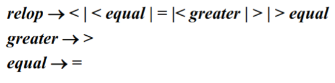
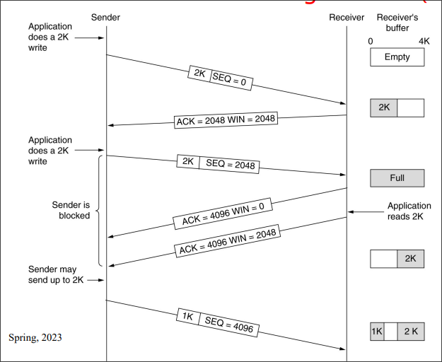
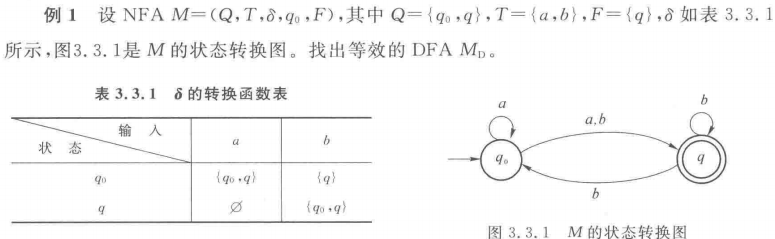
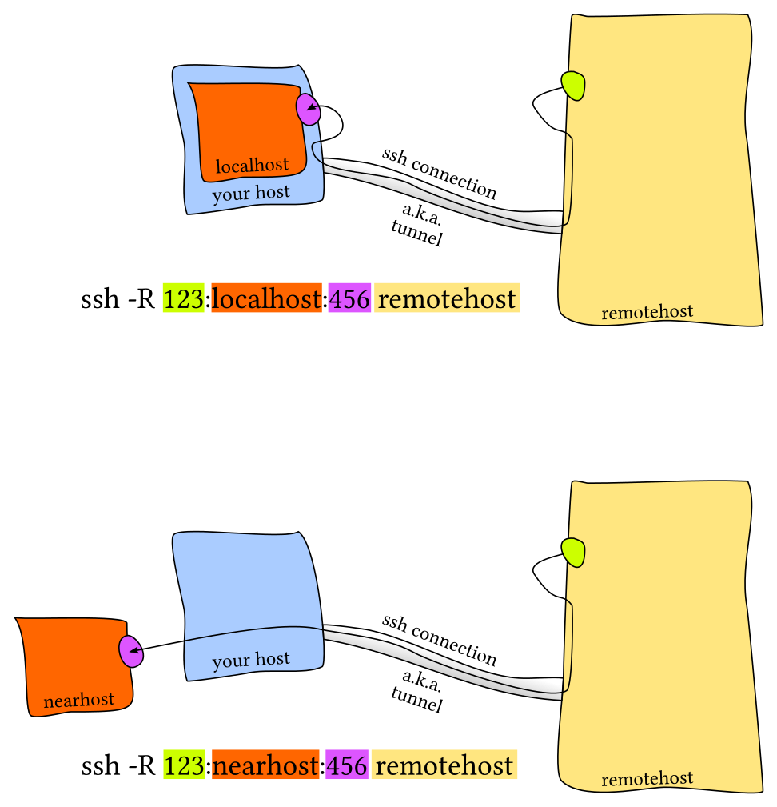

wiki
我在北京邮电大学计算机科学与技术专业学习中所撰写的课程笔记。主要为大二和大三两个学年中学习的部分专业课和部分选修课，其中还包含课余时间自学的MIT公开课程计算机教学中消失的一学期。
限于笔记为上课过程中实时撰写，仅有部分笔记在课余时间进行了校对，因此存在大量的错漏，仅供参考。基于同样的原因，本次笔记中覆盖的内容仅为部分课程的部分内容，所记录的内容无法覆盖上课中的所有实际内容，不能作为教学范围和考试范围的参考，亦不能代表相关课程中的重点内容。同时，本笔记中涉及的课程内容仅代表2022至2023学年的大二年级和2023至2024学年的大三年级的课程内容。
在笔记中涉及到各位授课老师授课过程中的PPT截图，这些截图的版权归诸位授课老师和PPT作者所有，如有侵权请和我们联系，我们会立即删除相关内容。
在本笔记中，源远流长同学(@112292454)贡献了部分其自己的笔记，包括形式语言与自动机课程的笔记、计算机网络课程的复习笔记等的内容，在这里一并表示感谢。
笔记使用mdbook工具生成静态网页，生成的静态网页可以在Github Pages上查看。
协议

本作品采用知识共享署名-相同方式共享 4.0 国际许可协议进行许可。
人工智能原理
大三上学期专业选修课——人工智能原理。
授课教师
- 邓芳
- 王晓茹
概述
本学期的主要内容
- 问题和知识表示方式
- 搜索和推理
- 典型应用
- 机器学习
要求：
- 课堂练习
- 作业
- 开卷考试
人工智能及发展
人工智能(Artificial Intelligence)是研究如何在机器上实现人类智能的学科。
智能：有效获取、传递、处理、再生和利用信息，从而在任意给定的环境达到预定目的的能力。
智能的特征：
- 具有感知能力
- 具有记忆和思维的能力
可以将智能分为：
- 计算智能
- 感知智能
- 认知智能
人工智能的研究方法
-
结构派：神经计算、生理学派、连接主义。
智能活动的基础是神经细胞。
智能活动过程是神经网络的状态演化过程。
智能活动的基础是神经细胞的突触相互连接。
-
功能派：符号主义、心理学派、逻辑学派
思维的基础是符号。
思维的过程是符号运算。
相较于神经网络，拥有可解释性。
-
行为模拟派：行为主义、进化主义、控制论学派
基于感知-行为模型的研究途径和方法。
智能行为是感知-行为的反射机制。
人工智能的发展历史
- 1956 人工智能的诞生
- 1956~1974 黄金之年，人工智能的第一次热潮
- 1974~1980 第一个AI冬天
- 1980~1987 人工智能的繁荣，人工智能的第二次热潮
- 1987~1993 第二个AI冬天
- 1993~现在 人工智能的突破
研究基础内容
按照研究的角度分：
- 符号智能
- 计算智能
- 人工生命
按照功能分：
- 机器感知/知识获取
- 机器思维/知识获取
- 机器行为/知识运用
目前研究遇到的问题
- 数据瓶颈
- 泛化问题
- 能耗
- 语义鸿沟
- 可解释性
- 可靠性
问题和知识表示
知识的基本内容
数据和信息、知识
数据：包含事实和数字、未经加工的事实和符号。
信息：从数据中提炼出来的有关信息、经过分析处理的数据形成信息。数据是信息的载体和表示，信息是数据在特定场合下的具体含义。
知识：是有关信息关联在一起所形成的信息结构，反映客观世界中事物之间的关系。

知识具有一下的特点：
- 客观性
- 相对正确性：在一定条件、时间、环境下
- 进化性
- 依附性：离开载体的知识是不存在的
- 不确定性
- 经验性
- 可表示性
- 可利用性
- 可重用性
- 共享性
知识的层次
- 事实
- 概念
- 规则
- 启发式知识
知识的分类
- 作用范围：常识性知识，领域性知识
- 作用及表示：事实性知识、过程性执行、控制性知识
- 确定性：确定性知识、不确定性知识
- ...
知识表达方法
知识表示是如何将以获得的有关知识以计算机易于接受的形式加以合理的描述、存储、有效的利用。
状态空间的表示
利用状态变量和操作符号，表示系统和问题的有关知识的符号体系。
使用三元组表示：
- 是初始状态向量
- 是操作，表示引起状态变化的过程性知识的一组关系或者函数
- 是目标状态向量
这种状态空间的变化可以使用图的方式表示出来：
图中的：
- 节点：相应的状态描述
- 弧线：表示操作和状态的变化
寻找操作系统等价于寻求图中的某一路径。最佳路径就是两节点间具有最小的代价。
在状态描述中引入变量
与或树表示
问题归约法：已知问题描述，通过一系列的变换将问题转换为一个子问题的集合，并可以直接求解，解决初始问题。
与或图：使用类似于图的结构来表示把问题归约为后继问题的替换集合。
- 与图：将复杂的大问题分解为一组简单的小问题
- 或图：将复杂的大问题变化为等价或者等效的问题
或与图由以下四个部分组成：
- 初始节点：原始问题
- 终叶节点：本原问题，没有后继节点
- 与节点：子问题对应的节点为与逻辑
- 或节点：子问题对应的节点为或逻辑
- 可解节点：
- 终叶节点为可解节点
- 非终叶节点为或节点，后继节点中至少存在一个可解节点
- 非终叶节点为与节点，后继节点均为可解节点
- 不可解节点：同可解节点对应的节点
产生式规则
产生式规则也称为基于规则的知识表示。产生式规则的基本结构分为： 产生式规则的特点：
- 善于表达领域知识
- 控制和知识相分离
- 知识的模块性强
- 便于实现解释推理
- 便于使用启发性知识
同时产生式规则的缺点是：
- 单条规则容易解释，但是规则之间的逻辑关系难以确定
- 规则数太大时，知识库的一致性难以维护
- 某些类型的知识难以表示，如结构性的知识
谓词表示法
命题逻辑和谓词逻辑是人工智能应用中的两种逻辑。
- 命题：具有真假意义的语句。常常使用大写字母表示。
知识的组织与管理
算法设计与分析
大三上学期专业必修课——算法设计与分析。
授课教师：邵蓥侠
算法导论
算法
算法是指解决问题的一种方法或者一个过程。
算法是若干指令的有穷序列：
- 输入
- 输出
- 确定性
- 有限性
算法的时间复杂度分析
渐进性原理及表示符号
使用渐进性原理对于算法的时间复杂度进行分析，反映算法的时间复杂度随着变化发生变化的情况，衡量了算法的规模。
使用渐进分析的专用记号对于渐进性进行分析：
- 渐进上界记号
- 渐进下界记号
- 非紧上界记号
- 非紧下界记号
- 紧渐进界记号
渐进分析中中的符号类似于比较：
同时渐进分析记号还具有若干性质：
-
传递性
-
反身性
-
对称性
-
互对称性
-
支持算术运算
在算法中存在这些常见的复杂性函数：
| 函数 | 名称 |
|---|---|
| 常数 | |
| 对数 | |
| 对数平方 | |
| 线性 | |
| 平方 | |
| 立方 | |
| 指数 |
对于小规模的数据，这些复杂性函数的图像：

对于较大规模的数据，则图像为：
递归方程渐进阶的求解
代入法
先推测递归方法的显式解，然后使用数学归纳法证明这一推测的正确性。
例： 求证的渐进阶。
首先，推测， 即存在正的常数和自然数，使得当时： 假设当，是，上面的推论成立，那么当时，有： \[ \begin{eqnarray} T(n) &=& 2T(\lfloor \frac{n}{2} \rfloor) + n \ &\le& 2 C \lfloor \frac{n}{2} \rfloor log(\lfloor \frac{n}{2} \rfloor) + n \ &<& 2C\frac{n}{2} log(\frac{n}{2}) + n \ &=& Cnlogn - Cn + n \ &=& Cnlogn - (c-1)n \ &\le& Cnlogn \end{eqnarray} \] 原假设成立。
迭代法
迭代展开递归方程的右端，使之成为一个非递归的合式，然后通过对合式的估计来达到对于方程左端解的估计。
例：求 的渐进阶。 \[ \begin{eqnarray} T(n) &=& 2T(\frac{n}{2}) + 5n^2 \ &=& 2(2T(\frac{n}{4}) + 5(\frac{n}{2}))^2 + 5n^2 \ &=& 2(2(2T(\frac{n}{8}) + 5 (\frac{n}{4}) ^ 2) + 5(\frac{n}{2}))^2 + 5n^2 \ &=& 2^kT(1) + 2^{k-1} 5(\frac{n}{2^{k-1}}) ^ 2 + \cdots + 2 \times 5 (\frac{n}{2})^2 + 5n^2 \end{eqnarray} \] 不难发现： 迭代法还有一个衍生的方法——递归树法：
实际上就是使用树的方式表示整个递推公式。

套用公式法
针对如下的递推方程 我们有 这个公式还有一般化的情况：
如果递归方程的形式为： 则针对进行讨论：
-
如果, 使得，那么我们有
-
如果，那么我们有
-
如果，使得，且当时，当充分大时有，那么我们有
母函数法
通用的方法总是复杂的。
设是任意的数列，那么称下面这个函数为数列的母函数： 如果数列是算法的复杂性函数，则其母函数为： 如果能由也就是的数列的递归方程求出母函数，那么其第项系数为。
递归和分治
递归算法
直接或者间接调用自己的算法是递归算法。
递归算法的特点是：
- 结构清晰，可读性强，容易使用数学归纳法证明正确性
- 运行效率低
我们有几种方法来优化递归算法：
- 采用用户定义的栈来模拟系统的递归调用
- 用递推来实现递归函数
- 使用
Cooper变换、反演变换将递归转换为尾递归，进而用迭代求解
分治算法
将一个难以解决的问题分成一些规模较小的问题，以便分而治之，各个击破。
编译原理和技术
大三上学期专业必修课——编译原理和技术。
授课教师：王雅文
编译概述
翻译和解释
程序设计语言
程序设计语言可以分成两种：
- 低级语言：机器语言、符号语言、汇编语言
- 高级语言
翻译程序
扫面所输入的源程序，并将其转换为目标程序，或者直接将源程序之间翻译成结果。
翻译程序可以分成两个大类：
- 编译程序：将源程序翻译为目标程序
- 解释程序：直接执行源代码
一种有效的方法是：现将源程序转换为某种中间形式、然后对中间形式的程序解释执行。
编译的阶段和任务
编译可以被分成两个阶段。
分析阶段，更具源语言的定义，分析源程序。包括词法分析，语法分析和语义分析。
综合阶段，根据分析结果构造目标程序。包括中间代码生成、代码优化和目标代码生成等阶段。
符号表的管理。
错误诊断和处理。

分析阶段
词法分析
线性分析和扫描。
词法分析程序需要对构成源程序的字符串进行分析，识别出每个具有独立意义的单词，将其转换成记号，并组织为记号流。同时把需要存放的单词放到符号表，如变量名、标号、常量名等。
词法分析程序的工作依据就是构词规则，也称为模式。
对于空格、注释的处理和其他：
- 分隔单词的空格：被跳过
- 源程序中的注释：被跳过
- 识别出来的标识符需要放入符号表中
- 某些记号还需要具有属性值
语法分析
层次结构分析。
将记号流按照语言的语法结构层次的分组，形成语法短语。源程序的语法短语通过使用分析树表示。
语法分析的层次结构通过由递归的规则表示。
例：total := total + rate * 4的分析树如下所示：
语义分析
对于语法成分的意义进行检查分析。语法成分就是语法分析确定的层次结构。同时收集必要的信息：类型、作用域等。工作依据是语义规则。
语义分析的一个重要人物是完成类型检查。
综合阶段
中间代码生成
中间代码是一种抽象的机器程序。，具有易于产生和易于翻译为目标代码等的特点。中间代码可以拥有多种形式。
常用三地址代码作为中间代码。
代码优化
对于代码进行改进，占用空间少，运行速度快。
目标代码生成
目标代码是可重定位的机器代码，一般就是汇编语言代码。
目标代码生成涉及到两个重要的问题：
- 对程序中使用的每个变量指定存储单元
- 对变量进行寄存器分配
符号表管理
符号表管理是编译程序中的一项重要工作，需要记录在源程序中使用的标识符和每个标识符相关的各种属性信息。
符号表是由若干记录组成的数据结构，每个标识符都在表中有一条记录，记录的域是标识符的属性。要求可以快速在符号表中可以找到标识符的记录，并且可以存取数据。
标识符的各种属性是在编译的各个不同的阶段填入符号表的。
错误处理
在编译的各个阶段都可能检测到源程序中存在的错误。
在发现源程序中的错误之后，编译器还需要判断错误的位置和性质，同时进行适当的恢复。
编译有关的其他概念
前端和后端
前端：与源语言有关而与目标机器无关的部分。
前端包括词法分析、语法分析、符号表的建立、语义分析和中间代码的生成。与机器无关的代码优化工作和相应的错误处理工作和符号表操作也在前端完成。
后端：和目标代码有关的部分，进行目标代码的生成、与机器有关的代码优化，相应的错误处理和符号表操作。
划分前端和后端的优点：
- 便于编译程序的移植
- 便于编译程序的构造
遍
一遍：对源程序或者其中间形式从头到尾扫描一遍，并作相关的加工处理，生成新的中间形式或者目标程序。
编译程序的结构受到遍的影响。
典型的一遍扫描的编译程序如图所示：
典型的多遍编译程序如图所示：

将编译程序分遍的优点：
- 减少对于主存容量的要求
- 编译程序的结构清晰
- 优化工作更加充分，获得高质量的目标程序
- 为编译程序的移植创造条件
将编译程序分遍也增加了不少重复性的工作。
编译程序的伙伴工具
预处理器
进行宏处理、文件包含、语言扩充等的功能。
汇编程序
汇编语言用助记符表示操作码，用标识符表示存储地址。
最简单的汇编程序需要对输入进行两遍扫描：
- 找出表示存储单元的所有标识符，并将它们写入汇编符号表。在符号表中记录该标识符所对应的存储单元地址，此地址是在首次遇到该标识符的时候确定的。
- 把每个用助记符表示的操作码翻译为二进制表示的机器代码。将用标识符表示的存储地址翻译为汇编符号表中该标识符对应的地址。
汇编程序需要输出可重定位的机器代码，同时需要对哪些需要重定位的指令做出标记。
连接装配程序
将多个经过编译或者汇编的目标模块连接装配成一个完整的可执行程序。
可将连接装配程序分成两个程序：
- 连接编辑程序：扫描外部符号表，寻找所连接的程序段，根据重定位信息表解决外部引用和重定位，最终将中整个程序涉及的目标模块逐个调入内存并连接在一起，组合成一个待装入的程序。
- 重定位装配程序：把目标模块的相对地址转换为绝对地址。
词法分析
词法分析任务由词法分析程序完成。
词法分析程序的作用
词法分析程序扫描源程序的字符流，按照源语言的词法规则识别出各类单词符号，产生用于语法分析的记号序列。
- 词法检查
- 同用户接口的一些任务：
- 跳过源程序中的注释和空白
- 把错误信息和源程序联系起来
- 创建符号表
词法分析程序和语法分析程序的关系
存在三种关系：
-
词法分析程序作为独立的一遍
输出放到一个中间文件中，可以时磁盘文件/内存文件。
-
词法分析程序作为语法分析程序的子程序

这种关系避免了中间文件，省去了取送符号的工作，有利于条编译程序的效率。
是否在词法分析阶段生成符号表由源程序是否由块结构语言决定。块结构语言是变量含有作用域的语言，而非块结构语言是变量没有作用域的语言。
-
词法分析程序与语法分析程序作为协同程序
词法分词程序与语法分析程序在同一遍中工作，以生产者和消费者的关系同步运行。
在上述三种关系中，词法分析程序都是作为一个单独的程序存在，这样的好处为：
- 简化设计
- 改进编译程序的效率
- 加强编译程序的可移植性
源程序的输入与词法分析程序的输出
词法分析程序的实现方法
-
利用词法分析程序自动生成器
从基于正规表达式的规范说明自动生成词法分析程序
生成器提供用于源程序字符流读入和缓冲的若干子程序
-
利用系统程序设计语言来编写
-
利用汇编语言编写
缓冲区
为了得到某一个单词符号的确切性质，需要超前扫面若干个字符。
把一个缓冲区分为大小相同的两半，每半各含N个字符，这被称为缓冲区配对。

使用配对缓冲区的意义是为了避免在缓冲区的结束处读取到不完成的单词。测试的过程如下的伪代码所示：

我们还可以在每半个缓冲区的最后添加结束标记来提高测试的效率：

词法分析程序的输出
记号、模式和单词
记号是某一类单词符号的类别编码。如标识符的记号为id，常数的记号是num。
模式是某一类单词符号的构词规则。如标识符的模式是“由字母开头的字母数字串”。
单词是某一类单词符号的一个特例。
记号的属性
词法分析程序在识别出一个记号后，要将与之有关的信息作为属性保存下来。
记号影响语法分析的决策，属性影响记号的翻译。
在词法分析阶段，对一个记号只能确定一种属性。
- 标识符：单词在符号表中的入口指针
- 常数：表示的值
- 关键词：一符一种/一类一种
- 运算符：一符一种/一类一种
- 分界符：一符一种/一类一种
由于关键词、运算符和分节符，由于确定的编程语言只能有有限的关键词、与运算符和分界符，因此可以使用一符一种。
例：total := total * rate * 4的词法分析结果
- 标识符，指向标识符total`在符号表中的入口指针
- 赋值运算符，
- 标识符，指向标识符
total在符号表的入口指针 - 加法运算符，
- 标识符，指向标识符
rate在符号表中的入口指针 - 乘法运算符，
- 常数，整数值4
输出实际上就是一个
<记号，属性>的二元组。
单词符号的描述及识别
识别单词是按照记号的模式进行的，一种种记号的模型匹配一类单词的集合。
正规表达式和正规文法是描述模式的重要工具。
词法：描述语言的标识符、常数、运算法和标点符号等记号的文法，使用正规文法。
语法：借助于记号来描述语言的结构的文法，使用上下文无关的文法。
记号的文法
标识符
假设标识符定义为“由字母开头的，由字母或数字组成的符号串”。
则描述标识符集合的正规表达式为： $$ \rm{letter(letter|digit) ^*} $$ 转换为正规文法： $$ id \to {\rm letter}\ rid $$
$$ rid \to \epsilon | {\rm letter}\ rid | {\rm digit}\ rid $$
常数
-
整数 $$ （digit)^+ $$ 转换为正规文法：

-
无符号数 $$ \rm (digit)^+(.(digit)^+)?(E(+|-)?(digit)^+)? $$ 转换为正规文法：

-
运算符 $$ \rm <|<=|=|<>|>=|> $$ 
状态转换图与记号的识别
状态转换图是一张有限的方向图。
由上文中无符号数的右线性文法可以画出状态转换图：
词法分析程序的设计与实现
就是写一个程序。
文法和状态转换图
首先根据语言的说明写出记号的正规文法、画出状态转换图。
语法分析
语法分析简介
语法分析是编译程序的核心规则，按照源语言的语法规则进行分析，输出分析树并进行语法分析阶段的错误处理。
- 从源程序记号序列中识别出各类的语法成分
- 进行语法检查
鉴于分析树的树状数据结构，我们有两种分析方法：
- 自顶向下的分析方法
- 自底向上的分析方法
语法错误的处理
错误处理的目标是：
- 报告错误的位置和性质
- 迅速从错误中恢复
- 不应该明显影响对于正确程序的分析速度
错误处理有如下的策略：
-
紧急恢复：一旦发现错误，分析程序每次抛弃一个输入记号，直到扫描到的记号属于某个指定的同步记号集合。
同步记号集合往往是定界符，如语句结束符（分号），语句起始符，块结束符（END）。
-
短语级恢复
-
出错产生式
-
全局纠正
自顶向下的分析防范
递归下降分析
从文法的开发符号出发，进行推导，试图推导出要分析的输入串的过程。对于给定的输入符号串，从对应于文法开始符号的根节点出来，建立分析树。整个过程是一个试探的过程，反复使用不同的产生式谋求匹配输入符号串的过程。
例：按照如下的文法分析abbcde
首先尝试，对于分别尝试两种生成情况递归生成中间两个，依次类推递归尝试所有的生成式。
使用递归下降分析可以得到一个最左推导序列。
关于推导的补充知识：
现在有 其中 表示一步推导，其中称左边直接推导出右边，也可以说右边是左边的直接推导，或者右边直接归约到左边。
关于短语的补充知识：
假定 是文法的一个句型，如果存在： 就称 是句型关于非终结符号的短语。
如果存在： 那么就称 是句型关于非终结符号的直接短语。
一个句型的最左直接短语称为该局性的句柄。
因此对于输入串的扫描是自左至右进行的，只有使用最左推导，才能保证按照扫描的顺序匹配输入串。
但是递归下降分析方法存在缺陷：
- 左递归的文法，可能导致分析过程陷入死循环
- 回溯
- 工作的重复
- 效率低
递归调用预测分析
一个确定的，不带回溯的递归下降分析方法。
-
如何克服回溯？
根据所面临的输入符号准确的指派一个候选式去执行任务。
-
那么如何准确指派，首先对文法存在要求。
- 不含有左递归
- 其中
解释一下的规定： 也就是非终结符能够推出的一个终结符。
预测分析程序的构造
-
构造预测分析程序转换图
每个非终结符号都有一张图，边的标记可以使终结符号和非终结符号。
对于非终结符号的转移表示对的过程调用。
对于终结符号的转移，表示下一个输入符号应该是
为了从文法构造一个转换图，我们需要首先对文法进行改写：
- 重写文法
- 消除左递归
- 提取左公因子
消除左递归：
首先考虑简单情况。如果存在产生式： 可以改写为：

提取左公因子：
如果存在产生式： 那么提取左公因子，有：
然后对于每个非终结符号：创建一个初始状态和一个终结状态，对于每一个产生式创建一条从初态到终态的路径。
-
转换图的工作过程
从文法开始符号所对应的转换图的开始状态开始分析。
经过若干动作之后，处于状态，指针指向符号:

-
转换图的化简
反复代入化简。
-
预测分析程序的实现

void procE() { procT(); if (input == '+') { pointer.forward(); procE(); } }
非递归预测分析
使用一张分析表和一个栈联合控制，输入对输入符号的自顶向下分析。
预测分析程序的模型如图所示：

- 输入缓冲区：存储被分析的输入符号串
- 符号栈：存放文法符号
- 分析表：存储产生式，根据给定的栈顶和当前指针定位产生式
- 输出流
说明，
$表示起始和终结符号
预测分析控制程序
根据栈顶符号X和当前输入符号a，分析动作存在四种可能：
X和a都是终结符号，停止分析X=a但是不为终结符号，弹栈并向前移动输入指针X在分析表中但是a不是，调用错误处理程序报告错误并进行错误恢复- 访问分析表获得产生式，先弹栈，并将生成式的右部符号串按反序压入栈中
可以写出伪代码：

预测分析表的构造
-
首先进行文法的改写，同递归调用分析预测的要求和步骤一致。
-
FIRST集合及其构造FIRST集合的定义为：对于任何文法符号串，是可以推导出的开头终结符号集合。 特别需要注意的是，如果可以推出空串，那么。
构造
FIRST集合：- 如果, 那么
- 如果， 那么针对所有的生成式，将加入
- 如果 ,加入空串
- 如果存在 ，加入中所有非空的元素
重复该过程，知道所有的集合不再变化为止。
-
FOLLOW集合及其构造FOLLOW集合的定义为：假定为文法的开始符号，对于文法中的任何非终结符，集合式在所有句型中紧跟之后出现的终结符号或者组成的集合。 特别的，如果，那么规定，注意集合中不能存在空串。
构造
FOLLOW集合：- 对于文法开始符号，将放入中
- 如果存在产生式，那么将中的所有非空元素加入中
- 如果，或者且存在，那么将中的所有元素加入到中
重复此过程，直到所有集合不再变化为止。
-
预测分析表的构造
LL(1文法：如果一个文法的预测分析表不含有多重定义的表项，则称该文法为LL(1)文法。
LL(1)文法的判定方法：
当且仅当对于该文法的每一个产生式 ，都有：
- 如果, 那么
或者根据分析表来判断。
自底向上的分析方法
从左到右进行对输入串的扫描，自底向上的进行分析树的构造。分析的过程如下：
- 从输入符号串开始分析
- 查找当前句型的可归约串
- 使用规则，把它归约成相对应的非终结符号
- 重复
优先分析法
优先分析法分成简单优先分析法和算符优先分析法。
-
简单优先分析法 按照文法符号之间的优先关系确定当前句型的可归约串。但是存在分析效率低且只适用于简单优先文法的问题。
简单优先文法： 任何两个文法符号之间最多存在一种优先关系。 不存在具有相同右部的产生式。
-
算符优先分析法 只考虑中介符号之间的优先关系。分析速度快，但是只适用于算符优先文法。
算符文法： 没有形如的产生 式的文法。
算符优先文法：算符文法，且不含有生成式。任何两个构成有序对的终结符号之间最多有、、三种优先关系中的一种成立。
可归约串是句型的最左素短语。素短语是句型的一个短语，至少含有一个中介符号，并且除它自身之外不存在其他更小的素短语。最左素短语就是处在句型最左边的素短语。
移进——归约分析方法
该方法需要设置一个符号栈存放文法符号。
-
将输入符号一个个地移进栈中；
-
当栈顶的符号串形成某个产生式的一个候选式时，在一定条件下，把该符号串替换为该产生式的左部符号；
-
重复2，直到栈顶符号不再是可归约串为止；
-
重复1~3，直到最终归约出开始符号。
规范归约
假设是文法的一个句子，存在右句型序列是的一个规范归约，如果序列满足：
- 对于任何，是经过把的句柄替换成相应产生式的左部符号而得到的
LR分析方法
首先介绍LR(k)的含义：L表示自左向右扫描输入字符串，R表示为输入符号串构造一个最右推导的逆过程，k表示为作出分析决定而向前看的输入符号个数。
LR分析方法的基本思想：
- 历史信息：记住已经移进和归约出的整个符号串
- 预测信息：根据所用的产生式推测未来可能遇到的输入符号
根据历史信息和预测信息，以及现实的输入符号确定栈顶的符号串是否构成相对于某一产生式的句柄。
LR分析程序的模型和工作过程
- 栈
- 控制程序
- 分析表
- 输入
- 输出
分析表
LR分析控制程序工作的依据，有着两张表：
- 状态经过转移的后继状态
- 状态遇到输入符号应该采取的分析动作。
分析动作可以有四种：
shift S：将当前输入符号和状态推进栈中，向前扫描指针前移，其中reduce by：生成式为，如果的长度为，则从栈顶向下弹出项，使得成为栈顶状态，然后把文法符号以及状态推进栈中，其中accept：宣布分析成功error：调用出错处理程序，进行错误恢复
分析控制程序
活前缀：一个规范句型的一个前缀，如果不含句柄之后的任何符号，则称它为该句型的一个活前缀。
SLR分析表的构造
为给定的文法构造一个识别它所有活前缀的DFA，根据这个DFA构造文法的分析表。
LR(0)项目：右部某个位置上标有圆点的产生式成为文法G的一个LR(0)项目。例如生成式对应有4个LR(0)项目：
各种LR(0)项目可以分为：
- 归约项目：远点在产生式最右端的项目
- 接受项目：对文法开始符号的归约项目
- 待约项目：圆点后第一个符号为非终结符号的项目
- 移进项目：圆点后第一个符号为终结符浩的项目
下面再定义LR(0)有效项目：
对于项目，活前缀，如果存在 则称该项目对于该前缀是有效的。
文法G·的某个活前缀的所有LR(0)有效项目组成的集合称为该活前缀的LR(0)有效项目集。
文法G的所有LR(0)有效项目集组成的集合称为G的LR(0)项目集规范族。
SLR分析方法的一个特征：如果文法的有效项目集中有冲突动作，多数冲突可以通过考查有关非终结符号的FOLLOW集合可以解决。
例如对于项目集 同时存在移进-归约冲突和归约-归约冲突。
通过查看FOLLOW(A)和FOLLOW(B)解决：如果
决策：
- 当，将入栈
- 当时，使用进行归约
- 当时，使用进行归约
LR(1)分析表的构造
首先给出LR(K)项目：
- 是一个
LR(0)项目 - 是向前看符号串
注意，向前看符号串只对归约项目起作用。
LR(k)项目意味着当它所属的项目集状态在栈顶且后续的输入符号序列和向前看符号串匹配的时候才允许归约。
定义：LR(1)有效项目
对于一个LR(1)项目，如果存在一个规范推导：
其中的第一个符号为，则该项目对于活前缀是有效的
推广：
如果项目对于是有效的，并且由产生式，则对于任何的 ，项目 对于该活前缀也是有效的。
利用定义和推广获得项目集的闭包：

构造LR(1)分析表
LALR(1)分析表的构造
首先给出两个描述LR(1)项目集特征的定义：
- 同心集：如果两个
LR(1)项目集在去掉搜索符号之后是相同的，则称这两个项目具有相同的心。 - 项目集的核：除了初态项目集之后，一个项目集的核是由该项目集中那些圆点不在最左边的项目组成。
构造LALR(1)分析表的基本思想：
- 合并项目集规范族中的同心集，减少分析表的状态数
- 用核代替项目集，减少项目集所需的存储空间
注意，同心集的合并可能会导致新的归约-归约冲突。
因此，构造LALR(1)分析表的过程如下：
-
首先构造
LR(1)项目集的规范族 -
检查
LR(1)项目集规范族如果存在冲突，不是
LR(1)文法。不存在冲突。
-
检查是否存在同心集，合并同心集
-
检查合并之后的项目集是否存在冲突
如果存在冲突，不是
LALR(1)文法不存在冲突。
-
根据
LALR(1)项目集规范族构造分析表
文法的分类：
LR分析方法对于二义文法的应用
定理：任何二义文法绝不是LR文法，因而也不是SLR或者LALR文法。
但是在程序设计语言中的某些结构使用二义性文法来描述比较直观，使用方便。可以定义一些规则来解决文法的二义性，例如：
-
算数表达式
使用运算符优先级或者运算结合规则
-
if语句else的最近最后匹配规则
LR分析的错误处理与恢复
当分析文法发生错误时，可以采用如下的恢复策略：从栈顶开始弹栈，可能会弹出若干个状态直到出现状态S。其中状态S满足以下某一个条件：
-
状态
S有相对于当前输入符号的转移移进，分析继续
-
goto表中有S相对于某非终结符号A的后继跳过若干个输入符号，直到出现符号
a，，然后将状态goto[S, A]压入栈顶，分析继续
语法制导翻译技术
语法制导翻译的整体思路：
- 根据翻译目标确定每个产生式的语义
- 根据产生式的含义确定每个符号的含义
- 将这些语义以属性的形式附加到相应的文法符号上，将语义和语言结构联系起来
- 根据产生式的语义给出符号属性的求值规则形成语法制导定义
翻译目标决定了产生式的含义，决定文法符号应该具有的属性，也决定了产生式的语义规则。
翻译目标决定语义规则：翻译目标决定产生式的含义，决定文法符号应该具有的属性，也决定了产生式的语义规则。
翻译目标可以是：
- 生成代码
- 对输入符号串进行解释执行
- 向符号表中存放信息
- 给出错误信息
翻译结果依赖于语义规则：使用语义规则进行计算所得到的结果就是对输入符号串进行翻译的结果。
语法制导翻译的一般步骤是：

语义规则的执行时机：
语法制导定义及翻译方法
语法制导定义
对于上下文无关文法的推广。
每个文法符号都可以拥有一个属性集，其中可以包括两类属性：
-
综合属性
左部符号的综合属性是从该产生式的右部文法符号的属性值计算处理的
在分析树中，一个内部结点的综合属性是从其子节点的属性值计算出来的
-
继承属性
对于每一个文法产生式，都有与之相联系的一组语义规则，其形式为
其中是一个函数，而且：
如果b是A的一个综合属性，则是产生式右部文法符号的属性或者是A的继承属性；如果b是右部某个文法符号的继承属性，那么是A或者产生式右部任何文法符号的属性。
在一般情况下，语义规则函数可以写成表达式的形式： 。但是在某些特定的情况下，一个语义规则的目的就是完成一个特定的动作，例如打印一个值或者向符号表中插入一条记录。这样的属性称为虚拟综合属性，写成过程调用或者是程序段的形式，例如print(E.val)。
依赖图
分析树中，结点的继承属性和综合属性之间的相互依赖关系可以由依赖图表示。在依赖图中，
- 为每个属性设置一个结点
- 如果属性b依赖于属性c，那么从属性c的结点由一条有向边连接到属性b的结点。
计算次序
依赖图的任何拓扑排序给出了分析树中结点的语义规则计算的有效顺序。
综上，语法制导翻译过程为：
- 最基本的文法用于建立输入符号串的分析树
- 为分析树构造依赖图
- 对依赖图进行拓扑排序
- 从这个序列得到语义规则的计算顺序
- 照此计算顺序进行求值，得到对于输入符号串的求值。
S属性定义和L属性定义
S属性定义：仅涉及到综合属性的语法制导定义。
L属性定义：一个语法制导定义如果满足每个产生式对应的每条语义规则计算的属性都是：
- A的综合属性
- 的继承属性，且该继承属性仅继承于A的继承属性或者产生式中左边的符号属性
按照定义，每个S属性定义都是L属性定义。
L属性定义的属性都可以用深度优先遍历的顺序计算：
- 在进入结点前，计算继承属性
- 在从结点返回时，计算他的综合属性
翻译方案
上下文无关文法的一种便于翻译的书写形式。
- 属性和文法符号相对应
- 语义动作写在花括号中，并插入到产生式右部某个合适的位置上
- 给出了使用语义规则进行属性计算的顺序
- 分析过程中翻译的注释
深度优先遍历树中的结点，执行动作，打印出
95-2+。
翻译方案的设计：
-
对于S属性定义：
为每一个语义规则建立一个包含赋值的动作，把这个动作放在相应的产生式右边末尾。
-
对于L属性定义：
左部符号的综合属性只有在它所引用的所有属性都计算出来之后才能计算，因此这种属性的计算动作要放在产生式的末尾。
右部符号的继承属性必须在这个符号以前的动作中计算出来，因此计算该继承属性的动作必须出现在相应文法符号之前。
S-属性定义的自底向上翻译
为表达式构造语法树的语法制导定义
S-属性定义的自底向上实现
基于LR分析方法。
在LR分析方法中，分析程序使用栈存放已经分析过的子树的信息。因此，在分析栈中增加一个域保存综合属性值。
修改分析程序：
-
对于终结符号：
综合属性值由词法分析程序产生。
当分析程序执行移进操作时，属性值随着状态符号一起入栈。
-
为每个语义规则编写一段代码计算属性值
-
对于每个产生式:
在进行归约动作时执行属性值的计算代码。将右部符号的相应状态和属性出栈，左部符号的相应状态和属性入栈。
L-属性定义的自底向上翻译
在自底向上的分析过程实现L属性定义的翻译。
- 可以实现任何基于LL(1)文法的L属性定义
- 可以实现许多基于LR(1)文法的L属性定义
下面介绍四种实现方法。
移走翻译方案中嵌入的语义规则
自底向上地处理继承属性。对翻译方案进行等价变换，使所有嵌入的动作都出现在产生式的右端末尾。
方法：
- 在基础文法中引入新的产生式，形如，即只生成空串
- 将称为标记非终结符号，用来代替嵌入在产生式中的动作
- 把被替代的动作放在产生式的末尾
例如对于下列文法进行等价变换： 引入非终结符号和，形成新的翻译方案 可以画出等价变化之后的分析树：
直接使用分析栈中的继承属性
利用复制规则传递继承属性。
变换继承属性的计算规则
当且仅当属性值在栈中存放的位置可以预测时，可以从栈中取得继承属性。
例如对于语法制导定义：
当使用进行归约时，属性可能出现在top - 1和top - 2中。
因此使用模拟继承属性的计算：
引入标记非终结符号，
这样使用进行归约时，属性一直在top - 1的位置上。
语义分析概述
程序设计语言的结构常常使用上下文无关文法来描述，基于此开发的语法分析程序可以检查程序中存在的语法错误。但是语法正确的程序不一定时完全正确的，程序的正确还和程序中的上下文有关系：
- 变量的作用于问题
- 同一作用域中的同名变量问题
- 表达式和赋值语句中的类型一致问题
注意：
设计使用上下文有关文法来描述语言中的上下文结构在理论上是可行的，但是实践上非常困难。
因此，使用语法制导的翻译技术实现语义的分析，设计专门的语义动作补充山下文无关文法的分析程序。
语义分析的任务
语义分析程序通过将变量的定义和变量的引用联系起来，对源程序的含义进行检查。
语义分析程序会在分析声明语句时，将所声明标识符的信息收集到符号表中，收集到信息包括：类型、存储位置、作用域等。主要编译时控制处在声明该标识符的程序块中，就可以从符号表中查到该标识符的记录。
类型检查可以分成两种：在目标程序运行时进行的检查称为动态检查。而读入源程序但不执行源程序的情况下进行的检查就是静态检查。类型检查的内容包括：
- 检验结构的类型是否和上下文所期望的一致、检查操作的合法性和数据类型的相容性
- 唯一性检查：一个标识符在同一作用域中只能被声明一次
- 控制流检查：控制语句是否转移到一个合法的位置
语义分析程序的位置
以语法树作为基础，根据语言的语义，检查每个语法程序在语义上是否满足上下文对于它的要求。
同时，语义分析的结果也有利于生成正确的目标代码，例如在存在重载运算符和类型强制转换的场景中。
错误处理
语义分析程序在发现错误时，需要显示出错信息，报告错误出现的位置和错误的性质。在完成报告之后还需要恢复分析器，继续对后面的结构进行检查。
符号表
符号表在翻译过程中有着两方面的作用：
- 检查语义的正确性
- 辅助正确的生成代码
符号表是一张动态表，在编译期间符号表的入口会不断的增加或者删除。编译程序需要频繁和符号表进行交互，符号表的效率会直接影响到编译程序的效率。
符号表的建立和访问时机
对于多遍的编译程序：
在词法分析的阶段建立符号表，标识符在符号表中的位置作为记号的属性。适用于非块结构语言的编译。
对于合并遍的编译程序：
符号表的内容
符号表的操作
符号表组织
非块结构语言
块结构语言
对于夸结构语言来说，模块中可嵌套字块，每个块中均可以定义局部变量。每个程序块中有一个字表，保存该块中声明的变量和属性。
符号表使用栈式符号表或者栈式哈希符号表组织。
例如，对于如下的PASCAL程序：
根据上述程序可以
栈式符号表简介：
当遇到变量声明时，将包含变量属性的记录入栈；当到达块结尾时，将该块中声明的所有变量的记录出栈。在块索引表中记录每个块开始的栈位置。
在栈式符号表中的各种操作：
- 插入：需要检查字表中是否有重名的变量，如果没有就正常入栈，反之报告错误
- 检索：从栈顶到栈底线性检索。如果在当前字表中找到就是局部变量，在其他字表中找到就是非局部变量。通过遍历顺序实现了最近嵌套作用域的原则。
- 定位：将栈顶战阵的位置压入块索引表，块索引表中的元素就指向相应块的字表中第一个记录在栈中的位置。
- 重定位：用块索引表中顶端元素的值恢复栈顶指针，直接清除了刚刚编译完的块在栈中的记录。
栈式哈希表符号表的简介：
使用哈希函数将符号名字映射到符号表中的地址。
类型检查
对于类型检查，不同的语言有着不同的观点。
- 强调最大程序的限制，执行严格的类型检查。
- 强调数据类型应用的灵活性，建议采用隐式类型，在编译时不进行类型检查，在程序运行期间对类型进行扩展检查。
一个简单的类型检查程序
假设现在存在一个简单语言的文法如下：
运行环境
程序运行时的存储组织
存储分配策略
在运行时存储代码的划分一般为：

其中除了目标代码之后，其余三种数据空间采用的存储分配策略是不同的：
- 静态存储分配
- 栈式存储分配
- 堆式存储分配
静态存储分配
使用静态存储分配的条件式在编译时源程序中声明的各种数据对象所需的存储空间的大小可以确定。
因此在编译时，为静态存储分配的变量分配固定的存储空间：
- 每个过程的活动记录的大小及位置
- 活动记录中每一个名字所占用存储空间的大小及位置
- 数据对象的地址可以生成在目标代码中
使用静态存储分配时，名字的左值在运行期间时保存不变的。
使用静态存储分配对于源程序有一定的限制：
- 数据对象的大小和位置必须在编译时可以确定
- 不允许出现过程递归调用
- 不能建立动态的数据结构
栈式存储分配
存储空间按照栈的方式组织：
- 活动开始的时候，活动相对应的活动记录入栈。局部变量的存储空间分配在活动记录中，同一过程中声明的名字在不同的活动中绑定到不同的存储空间中。
- 活动结束时，活动记录出栈，分配给局部名字的存储空间被释放，名字的值丢失不再可用。
在栈式存储分配中存在调用序列和返回序列：
-
调用序列：目标程序中实现控制从调用程序进入被调用程序的一段代码。
用于实现活动记录的入栈和控制的转移。
-
返回序列：目标程序中实现控制从被调用过程返回到调用过程的一段代码。
用于实现活动记录的出栈和控制的转移。
非局部名字的访问
如何处理非局部名字的应用取决于作用域规则：
- 静态作用域规则：词法作用域规则、最近嵌套规则：由程序中名字的声明的位置决定
- 动态作用域规则：由运行时最近的活动决定应用到一个名字上的声明
对于非局部名字的访问通过访问链来实现，因此关键是如何创建、使用、维护访问链。
程序块
程序块时符合语句的基本结构：
begin
声明语句
语句序列
end
块之间的关系可以使并列和嵌套。

参数传递机制
中间代码生成
中间代码生成的任务是将分析之后得到的源程序的中间表示形式翻译成中间代码表示。
使用中间代码的缺点：
- 便于编译程序的建立和移植，可以将编译程序分离为前端和后端两个部分，针对不同的语言可以复用针对同一个机器的后端，针对不同的机器可以复用针对同一个语言的前端。
- 便于记性于机器无关的代码优化工作。
但是使用中间代码的表示增加了IO操作的数量，编译程序的效率有所降低。
中间代码形式
图形表示形式
分成两种形式：
- 语法树：描绘了源程序的自然层次结构
- DAG图：以更紧凑的形式给出了和语法树相同的信息，公共子表达式也被标示出来
三地址代码
使用三地址语句组成的代码描述中间代码。
三地址语句是一种类似于汇编语句的代码，有赋值语句和空间语句，语句可以有标号。三地址语句的一般形式为：
其中x可以是临时变量或者是名字，y和z可以是名字、常数或者是临时变量。op是运算符号，如算数运算符或者是逻辑运算符。语句中最多有三个地址。
三地址语句的种类和形式如下所示：
-
简单赋值语句：
x := y op zx := op yx := y -
含有变址的赋值语句：
x := y[i] -
含有地址和指针的赋值语句：
x := &yx := *y -
转移语句：
goto Lif x relop y goto L -
过程调用语句：
param xcall p, n -
返回语句：
return y
例如，对于赋值语句x := (-y) * z + (-y) * z：
-
对应语法树的三地址代码为：
-
对于DAG图的三地址代码为：
三地址语句的实现
-
四元式
使用四元组
(op, arg1, arg2, result)表示。例如对于三地址语句
x := y + z，其的四元式表示为：('+', y, z, x) -
三元式
使用三元组
(op, arg1, arg2)表示，相对于四元式省略了返回值的临时变量，减少了符号表的空间，用语句的指针代替存放中间结果的临时变量。例如，对于赋值语句
x := (-y) * z + (-y) * z:
-
间接三元式
为三元式的序列增加了一个间接码表，其每个元素依次指向三元式序列中的一个元素。
对于赋值语句
x := (-y) * z + (-y) * z:
赋值语句的翻译
布尔表达式的翻译
控制语句的翻译
计算机组成原理课程笔记
大二下学期专业课《计算机组成原理》课程笔记。
授课教师：王玉龙
计算机系统概论
预备知识
组成计算机的硬件设备
- 输入输出设备
- 中央处理设备
- 接口转换卡
- 存储设备
- 部件连接线
一个完整的计算机系统应该包括硬件系统和软件系统两个部分。
计算机的分类
-
数字计算机：处理数字量的信息，按位进行计算
-
专用计算机：针对某一任务设计的最有效、最经济和最快速的计算机，但是适应性比较差。
-
通用计算机：适应性很大，但是牺牲了效率、速度和经济性。
- 单片机
- 微型机
- 服务器
- 大型机
- 超级计算机
从上到小：更加复杂、性能更加强大
-
-
模拟计算机：处理模拟量系统，数值连续
计算机的发展历史
- 第一代计算机：1946~1957年，电子管计算机
- 第二代计算机：1958~1964年，晶体管计算机
- 第三代计算机：1965~1971年：中小规模集成电路
- 第四代计算机：1972~1990年：超大规模集成电路
- 第五代计算：1991年~，巨大规模集成电路
第一代计算机
采用电子管制造。代表机型：ENIAC，1946年诞生在宾夕法尼亚大学。
第二代计算机
采用晶体管制造。
摩尔定律：每18个月，集成电路的性能就会提高一倍，价格将下降一半。
半导体存储器的发展
- 磁芯存储器：20世纪50~60年代
- 半导体存储器：1970年出现。
微处理器的历史发展
4004-8008-8080-8086-8088
80286-386TM DX-386TM SX-486TM DX
Pentium- Pentium Pro - Pentium 2 - Pentium 3 - Pentium 4
计算机的性能指标
-
吞吐量：表征一台计算机在某一时间内能狗狗处理得的信息量
-
响应时间：从输入有效到系统产生响应之间的时间度量，用时间单位表示
-
利用率：在指定的时间间隔内，系统被完全利用的时间所占的比率，用百分比表示
-
处理器字长（机器字长）：处理器运算器中一次能够完成二进制运算的位数，比如32位，64位
-
总线宽度：运算器与存储器之间的数据总线宽度
-
主存储器容量：主存储器能存储的二进制数据的位数
-
主存储器带宽：单位时间从主存储器读出的二进制信息量，一般用
bit/s来表示 -
主频/时钟周期：CPU主时钟的频率，其倒数为CPU的时钟周期
-
CPU的运算速度：
-
CPU执行时间：CPU执行一般程序所占用的CPU时间
-
CPI：执行一条指令所需要的平均时钟周期数
-
MIPS：每秒百万指令数，也就是单位时间内执行的指令数
对于标量机，一次运算只能得到一个结构
-
MFLOPS：每秒百万次浮点操作数
对于向量机：一次运算往往可以得到多个结果
-
CPU的运算速度可以用以下两种方式来计算：
因此CPU时间主要和三个参数有关系：
- 时钟周期的长度是由硬件技术和计算机组成决定的
- CPI是由计算机组成和指令集的系统结构决定
- 指令数是由指令集的系统结构和编译器决定
计算机的硬件
硬件的组成要素
冯诺以曼计算机特点：
-
由运算器、存储器、控制器、输入设备和输出设备五个部分组成
-
存储器以二进制形式存储的指令和数据
-
指令由操作码和地址码组成
-
存储程序并按地址顺序执行
冯诺以曼计算机的核心设计思想，让计算机自动工作的基础
-
以运算器为核心
而现代计算机和冯诺以曼计算机的主要区别就是现代计算机以存储器位核心。
现代计算机的特点：
-
将运算器、控制器和片内的高速缓存统称为CPU，将CPU，主存储器、输入/输出接口和系统总线统称为主机，其余的设备均为外设
主机内仅包含主存储器，辅助存储器属于辅助IO
运算器
处理所有的算数及逻辑运算。通常称作ALU，算数逻辑单元。
- 采用二进制数据进行运算
- 运算器一次可以处理的数据位数成为机器字长
- 机器字长一般为8，16，32，64位，机器字长直接决定运算的精度和能力
- 运算器主要有
ALU和各类通用寄存器构成
存储器
保存所有的程序和数据。
- 二进制形式保存程序和数据
- 存储器是按照存储单元组织的，读写存储单元必须给出单元地址
相关的概念：
- 存储元：用于保存一位二进制数据的物理器件
- 存储单元：能够保存一个字数据的器件，由若干个存储元构成
- 单元地址：能区分每一个存储单元的编号，一般从0开始
- 存储容量：一个存储器能保存的二进制数据量
存储器一般分成几类：
- 外存，又称作辅助存储器，例如磁盘存储器，光盘存储器。但是
CPU不能直接访问外存. - 内存：也就是主存储器，是半导体，
CPU可以直接访问
还有两个和内存相关的寄存器：
-
MAR，存储器地址七寸其，接受由CPU送来的地址信息 -
MDR，存储器数据寄存器，作为外界与存储器之间的数据通路
控制器
根据所要执行指令的功能，按顺序发出各种控制指令，协调各个部件的工作。
主要的任务是：
- 解释并执行指令
- 控制指令的执行顺序
- 负责指令执行过程中，操作数的寻址
- 根据指令的执行，协调相关部件的工作
其中指令一般的形式为：
操作码+地址码
-
操作码：指出指令锁进行的操作，如加减，数据传送
-
地址码：指出进行以上操作的数据存放位置
存储器的工作周期：
- 取值周期：取指定的一段时间
- 执行周期：执行指令的一段时间
使指令按照顺序指定的控制部件：指令计数器。每取出一条指令，指令计数器就加一步（一条指令的字节数）。如果遇到转移类的指令，控制器根据所执行的指令设置指令计数器的值。
其中相关的概念有：
- 数据字：该字代表要处理的数据
- 指令字：该字为一条指令
- 指令流：取值周期中，从内存中读出的信息流
- 数据流，执行周期中，从内存中读出的数据流
适配器和输入输出设备
输入设备：将么某种信息形式转换为机器能够识别的二进制信息的设备。
输出设备：将计算机处理的结果变成人或者其他机器设备所能够接受和识别的信息形式的设备。
适配器：保证外围设别用计算机系统特性要求的形式发送或者接受信息。
系统总线：将计算机各个部分连接在一起，并且提供数据传送的功能。
计算机中的软件
系统程序
用来简化程序设计，简化使用方法，提高计算机的使用效率，发挥和扩大计算机的功能及用途。
比如操作系统。
应用程序
用户为了解决实际问题而编写的软件。
计算机系统的层次结构
从不同角度看到的计算机的构成
- 微程序设计级
- 一般机器级
- 操作系统级
- 汇编语言级
- 高级语言级
软件与硬件的逻辑等价性
硬件：计算机系统的电子电路
软件：编写的程序
固件：通常存储在ROM中的软件，可以当作硬件来使用
运算方法和运算器
数据的类型
在日常生活中通常使用十进制，但是十进制在计算机中实现非常的困难。
二进制在计算机系统中占用的存储空间小，在硬件上易于实现，易于计算。
十六进制便于用来表示二进制数，因为一位十六进制数恰好就是4位二进制数。
定点数：小数点位置固定的数，数据表示的范围比较小。
浮点数：小数点位置不固定，数据表示的范围很大。
无符号数：所有位均表示数值，直接用二进制数表示。
有符号数：有正负之分，一般最高位表示符号位，剩下的位数是符号位。
定点数
小数点固定在某一位置的数据。
通过约定小数点在某一个固定的位置，小数点之前为2的正次幂，小数点之后为2的负次幂。
小数点的位置是事先约定的，实际上不用保存小数点的信息。
数的机器码表示
-
原码表示法
第一位是符号位，余下的位数才表示数值。
在这种表示法中，0存在着两种表示方法，
+0和-0。这种表示方法非常的简单，但是才参与运算非常的复杂。
-
补码表示法
在计算机中的运算都有最大的范围，从数学上来说就是含有模运算。
从二进制的角度上来说，补码一般就是数值部分的反码加1。
补码不影响加减运算，也就是补码的加减等于加减的补码。
0具有唯一的表示。
最小值的补码和原值一样，补码的补码是原码。
求相反数的补码：对原数的补码每位求反再加1，注意这里需要对符号位也取反。
-
移码表示法
通常用在表示浮点数的阶码，用定点整数形式的移码，把真值平移个单位。
同补码直接只有符号位取反的区别。
浮点数
小数点的位置可以变化，如同科学计数法中的数据表示。
M称做尾数，为一个纯小数，表示数据的全部有效数位，决定着数值的精度R称做基数，可以取2，4，8，16，表示当前的数制。在计算机中一般默认取2e称做阶码，为一个整数，表示小数点在数中的位置，决定着数据的大小
浮点数的规格化
当尾数使用原码表示的时候：
- 尾数数值最高位一定是1
- 尾数形如0xxxxx(正)或者1xxxxxxx(负)
- 这样做能让表达的精度更高
当尾数使用补码表示的时候：
- 尾数的最高数值位和尾数符号位符号相反
- 尾数就会形如01xxxxxx（正）或者10xxxxxx（负）
浮点数的表示范围
浮点数存在上溢出和下溢出两种情况。
上溢出：阶码大于所能表示的最大值，表示无穷
下溢出：阶码小于所能表示的最小值，表示0
当尾数为0或者阶码小于所能表示的最小值时均表示0
浮点数的最值
阶码采用移码，表示范围是：
尾数采用补码，表示范围是：
在实际做题中，不同的题目不同字段的含义可能不同。
IEEE754 浮点数
该标准规定了32位浮点数和64位浮点数。
32位浮点数

- 符号位表示浮点数的符号。0表示正数，1表示负数
- 尾数：23位。原码纯小数表示，小数点在尾数的最前面。由于规格化的要求，最高位应该始终为1，因此标准中隐藏了这个值，实际值应为
1.M - 阶码：8位，采用有偏移值和移码表示，移动的位数是127。
64位浮点数
- 符号位的规定和32位时的情况是一致的。
- 尾数：52位。
- 阶码：11位，移动的位数为1023。
特殊数据的表示

十进制数串的表示方法
采用字符串的形式来表示：
- 每个十进制数位使用一个字节来表示
- 需要注明串的起止位置和长度
采用8421BCD码表示。
字符和字符串的表示方法
字符一般采用ASCII码的方式表示。
字符串就是一串连续的字符，每个字节存储一个字符。
数据传输中的校验
为了避免在删除传输的过程中发生错误，在数据的编码上添加检错和纠正的能力。
数据校验的基本原理是扩大码距。
奇偶校验码
在数据中增加一位冗余位，将码距从1增加到2。
如果编码中发生了奇数个错误，就可以被发现。
奇偶校验有着两种类型：
- 奇校验：每个字中包含1的数目是奇数
- 偶校验：每个字中包含1的个数是偶数
在发送方发送数据之前，按照提前约定的校验类型在数据后添加校验位。接收方接受数据之后按照于约定的校验方式进行校验。
定点加法减法运算
补码加法
加法的补码就是补码的加法。
补码的减法
相反数的补码就是补码的相反数。
定点数的乘除法
串行乘法
如图，乘数是0.1011，那么总共四轮，从低位往高位看。初始我们取部分积为0
乘数最低位是1，所以第一轮，部分积=0+A。然后将部分积右移一位
第二轮，同上
第三轮，乘数的对应位是0，所以部分积不变，只有右移一位的操作。第四轮同第一轮，结束
并行乘法

逃课：不去管上面两个图讲的原理是怎么用电路实现的。反正我们考试写过程应该就可以写最后一图，也就是我们普通的计算多位数乘法时的方式。速通.jpg

若为带求补器的（即可以乘负数的），那么算前取绝对值，然后上述乘。符号位单独运算，算后再根据符号来变成补码
并行除法
加减交替法
应该不考.jpg
浮点数的运算
加法
1.检查0操作数
如有，那不用算了。
2. 对阶
将阶码较小的操作数的阶码放大，同时它的尾数右移对应的位数
3.尾数相加
如题，用双符号位的尾数加起来即可
4. 尾数的规格化
- 首先，如果双符号位出现了10或01这种非法值，那么右规直到合法，同时阶码增加对应的值
- 然后，检查是否符合规格化小数的要求，比如00.001001，小数点两边相同，那么就左规直到不同（即00.100100），阶码对应。（就是正数的前缀0和负数的前缀1其实在浮点数里都没有表示实际的意义，可以直接移位消掉）
5. 尾数的舍入
- 尾数最后一位恒置为1
- 或者看一下前面操作过程中（可能的）右移出去的内容，0舍1入——此时可能再次导致尾数溢出从而右规，比如00.1111，舍入+1
6. 阶码的溢出检查
若阶码下溢，置0返回
若阶码上溢，报告异常
结束

减法
即加上减数的补码，略
乘法
阶码相加，尾数用定点数的相乘
除法
阶码相减，尾数用定点数的相除
指令系统
指令系统的发展与性能要求
指令系统的发展
程序：用于解决实际问题的一系列的指令。
指令：使计算机执行某种操作的命令。
从组成的层次结构来说，计算机中的指令可以分为以下几类：
-
微指令：微程序级的命令，属于硬件层级
-
机器指令：简称指令。可完成一个独立的算术或者逻辑指令
-
宏指令：由若干条机器指令组成的软件指令，属于软件
指令系统：一台计算机中所有机器指令的集合。直接影响机器的硬件结构、软件结构以及机器的使用范围。
计算机指令系统的发展过程
-
50年代：
只有定点加减、逻辑运算、数据传送、转移等几十条指令
-
60年代后期：
增加了乘除指令，浮点运算、十进制运算，字符串处理等指令，指令数量大大增加，寻址方式也趋向于多样化。
出现了系列计算机。
系列计算机简介：
基本指令系统、基本系统结构相同的一系列计算机，但是具体的器件、结构和性能不会完全相同。一般来说，新的机种在各种方面优于原来的机种
一个系统往往有多种型号，但是都是向后兼容的。
-
70年代中期：
复杂指令系统计算机
CISC采用复杂的指令系统，来达到增强计算机的功能，提高机器速度的目的。
精简指令系统计算机
RISC从简化指令系统和优化硬件设计的角度来提高系统的性能与速度。
指令系统性能的要求
指令系统的性能决定了计算机的基本功能，关系到计算机的硬件结构和用户的需求。
完善的指令系统应该满足以下的要求：
-
完备性：常用指令齐全，编程方便
-
有效性：程序占用内存少，运行速度快
-
规整性：指令和数据的使用规则统一，易学易记
规整性包括对称性，匀齐性，指令格式和数据格式的一致性。
-
对称性：所有指令都可以使用各种寻址方式
-
匀齐性：一种操作性质的指令可以支持各种数据类型
-
指令格式和数据格式的一致性：指令长度和数据长度有一定的关系
-
-
兼容性：同一系列的计算机均可以运行编写的程序
低级语言与硬件结构的关系
低级语言：面向机器的语言，和具体机器的指令系统密切相关。
| 比较内容 | 高级语言 | 低级语言 | |
|---|---|---|---|
| 1 | 通用算法 | 有 | 有 |
| 2 | 语言规则 | 较少 | 较多 |
| 3 | 硬件知识 | 不要 | 要 |
| 4 | 对机器独立的程度 | 独立 | 不独立 |
| 5 | 编制程序的难易程度 | 易 | 难 |
| 6 | 编制程序所需的时间 | 短 | 较长 |
| 7 | 程序执行时间 | 较长 | 短 |
| 8 | 编译过程中对计算机资源的要求 | 多 | 少 |
指令格式
指令的一般格式
指令字：表示一条指令的机器字
指令格式：用二进制代码表示的指令字结构形式，由操作码字段和地址码字段组成。

操作码：表征指令的操作特性与功能
地址码字段：通常指令参与操作的操作数的地址
操作码
操作码字段的位数取决与指令系统的规模。
操作码可以分成两种类型：
-
固定长度的操作码：
所有指令的长度均相同。
控制简单，速度快，适用于指令条数不多的场合。
-
可变长度的操作码：
频繁使用的指令用位数较少的操作码。
不常使用的指令可利用操作码扩展技术进行扩展。
充分利用软硬件资源，适用于大规模的指令系统。
地址码
一条指令格式中有几个地址码字段，就称为是几地址指令。
-
零地址指令

没有任何操作数运算，比如
NOP。单操作数运算，隐含了一个操作数，比如
CBW。 -
一地址指令
单操作数运算:
OP(A1)-> A1双操作数运算，但是隐含了一个操作数
-
两地址指令

(A1) OP (A2)->A1 -
三地址指令

(A1)OP(A2)->A3 -
多地址指令
这类指令功能比较强，一般用于中大型机，用于实现批数据处理，字符串处理或者向量和矩阵运算。
两地址指令的分类
一般根据操作数的物理位置分。
-
存储器——存储器
-
寄存器——寄存器
-
寄存器——存储器
指令的操作码扩展技术
在指令系统中，如果操作码的长度固定但是指令格式不同，那么对于地址码较少的指令就存在编码浪费。

因此就诞生了操作码扩展技术：
- 对于不需要某个地址码的指令，将它们的操作码扩充到地址字段
操作码扩展技术即充分利用指令字的各字段，又在不增加指令长度的情况下扩展操作码的长度。
指令字长度
机器字长：运算器一次能处理的二进制数的位数。
机器指令的长度直接决定着CPU运算的精度和直接寻址的能力。
指令字长：一个指令字中包含二进制代码的位数。指令字长由操作码长度、操作数个数和个数共同决定。
指令含有半字长、单字长、双字长、多字长等不同的长度类型。
指令系统可以分为等长指令字结构、变长指令字结构。
指令助记符
使用3~4个英文缩写字母来表示的指令操作码。
在不同的计算机中指令助记符的规定是不一样的。
操作数类型
机器指令对数据进行操作，数据通常分为以下四类：
-
地址数据：无符号整数，通过某种运算确定操作数在主存中的有效地址
-
数值数据：定点整数，小数，浮点数
-
字符数据：文本数据或者字符串
-
逻辑数据：由若干二进制位组成
指令和数据的寻址方式
指令的寻址方式
-
顺寻寻址方式
当程序按顺序执行时的指令寻址方式。
需要用程序计数器
PC记录所要执行指令的存放单元地址。-
一般做顺序加1的操作，这里的“加1”表示加上指令的长度。
-
程序计数器又称做指令指针寄存器。
-
-
跳跃寻址方式
当程序转移控制执行时的指令寻址方式。
程序计数器的内容由本条指令提供，而不是顺序改变。
操作数的寻址方式
一种单地址码指令的结构如图所示：
将指令中的形式地址变换为操作数有效地址的过程就是寻址过程。
隐含寻址
操作数地址隐含在操作码中。在指令字中减少了一个地址字段，可以缩短指令字长。
立即寻址
形式地址就是操作数。
指令执行阶段不需要访存，速度快，但是形式地址字段的位数限制了立即数的范围。
直接寻址
有效地址由形式地址字段直接给出。
在执行结构需要访问一次存储器，形式地址的位数决定了指令操作数的寻址范围，而且操作数的地址不易修改。
间接寻址
有效地址由形式地址字段简介提供。
可以扩大寻址的范围。寻址时，可以根据需要进行多次间接寻址，存在一个寻址特制字段区分直接寻址和间接寻址。
寄存器寻址
形式地址字段为寄存器的编号。
在执行阶段不需要访存，只访问寄存器，执行速度较快。寄存器的个数有限，可以缩短指令的字长。
寄存器间接寻址
形式地址字段用于指出存放有效地址的寄存器编号。
在执行阶段需要访问内存，便于编写循环的程序。
偏移寻址
常用的偏移寻址：
-
相对寻址：指令转移发生的时候常用。
Address=A+(PC) -
基址寻址：
Address=(R)+A，其中A每次加1 -
变址寻址：
Address=A+(R)，其中R每次加1
典型指令
老师说讲题更重要，所以没讲。
本章练习题
设计指令系统

按照操作码的长度分别设计。

计算程序计数器的值
计算本身简单，但是需要考虑指令的长度。
计算不同操作数指令的最大数量
不同寻址方式设计指令格式

中央处理器
中央处理器的组成和功能
CPU的功能
中央处理器：控制程序按设定方式执行。
CPU的主要功能：
-
指令控制：顺序寻址和跳跃寻址
控制程序的执行顺序
-
操作控制：对指令操作码译码之后产生控制信号。
产生和发送各操作信号
-
时间控制：维持各类操作的时序关系
控制指令或操作的实施时间
-
数据加工：ALU完成具体的运算
对数据进行算术和逻辑运算
CPU的基本组成
现代CPU的组成：运算器、控制器、片内cache
控制器的主要功能：
-
从内存中取出一条指令，并指出下条指令的存放位置
PC，IR寄存器 -
对指令进行译码，产生相应的控制信号
-
控制CPU、内存和输入输出设备之间的数据流动
运算器的主要功能（ALU、DR、寄存器组）：
-
执行所有的算术运算
-
执行所有的逻辑运算并进行逻辑测试
CPU中的主要寄存器
-
数据缓冲寄存器DR
运算器使用。ALU的缓存，一切待运算数据先存放到DR，然后送入寄存器组，然后送给ALU
暂时存放ALU的运算结果或者CPU与外界传输的数据
-
作为ALU运算结果同通用寄存器之间的信息传送中时间上的缓冲
-
补偿CPU和内存、外围设备之间在操作速度上的差别
-
-
通用寄存器
如x86的%rsp、%rdi、%rax等
暂时存放ALU的运算结果或者运算数据
-
状态条件寄存器
PSW保存各种状态和条件控制信号，例如进位标志
C，溢出标志V每个信号由一个触发器保存，从而拼成一个寄存器
-
地址寄存器AR
存放待访存的地址。如（R1）则先将R1寄存器的值移到AR，然后根据此地址去内存（实为cache，但是可以当成内存）中读数，然后送DBUS、DR、PC等
保存当前CPU所访问数据的内存单元地址。
主要用于解决主存/外设同CPU之间的速度差异，使地址信息能够保持到主存/外设的读写操作完成
-
程序计数器PC
始终存放下一条指令的地址，对于指令Cache的访问
内容变化有着两种情况：
-
顺序执行：PC+1->PC
-
转移执行：指令->PC
-
-
指令寄存器IR
控制器使用。存放待执行指令，OP部分送去译码，然后给出控制信号，地址码部分送到DBUS
保存当前正在执行的指令
指令寄存器中操作码字段的输出就是指令译码器的输入
操作控制器与时序产生器
数据通路：寄存器之间传送信息的通路
操作控制器：根据指令操作码和时序信号，产生各种操作控制信号。建立正确的数据通路，从而完成指令的执行。
-
硬布线控制器：利用时序逻辑实现
-
微程序控制器：采用存储逻辑实现
-
前两种方式的结合
时序控制器：对各种操作实施时间的限制。
指令周期
指令周期的基本概念
CPU执行程序是一个”取指令-执行指令“的循环过程。
指令周期：CPU从内存中取出一条指令并执行的时间总和。
CPU周期：机器周期，一般为从内存中读取一条指令字的最短时间。一个CPU周期可以完成CPU的一个基本操作。
时钟周期：也叫节拍脉冲或者T周期，是计算机处理操作的基本时间单位。
一个完成的指令周期由若干机器周期构成：
取值周期->间值周期->执行周期->中断周期
本教材上间址周期和执行周期统称为执行周期。
MOV R0, R1指令的指令周期
mov是一条RR型指令，它需要两个CPU周期。
-
取值周期：从储存器中取出指令，程序计数器加1，译码或者测试指令操作码，输出控制信号。
-
PC->指令Cache, 译码并启动
-
指令Cache->ABUS->IR
-
PC->PC+1, 为取下一条指令做好准备
-
IR中的操作码被译码或者测试，识别出是指令
mov
-
-
执行周期：在控制信号的作用下，将R1中的数据通过ALU送入R0
-
R1->ALU, 数据是通过ALU传送的
-
ALU->DBUS->DR->R0
-
LAD R1, 6指令的周期
LAD指令是RS型指令，需要方寸获取操作数，共包含三个CPU周期。
-
取值周期
-
间址周期：从IR的地址码字段获得操作数的地址
-
IR->DBUS->AR 该过程为寻址周期
-
AR->ABUS->数据cache 译码并启动
-
数据cache->DBUS->DR->R1
-
-
执行周期：访存获取操作数送入通用寄存器

ADD R1, R2指令的指令周期
ADD指令的指令周期由两个CPU周期组成。
-
取值周期
-
执行周期
-
R1, R2 -> ALU
-
ALU 进行加运算，将两数相加
-
ALU->DBUS->DR->R2，保存结果
-
STO R2, (R3)指令的指令周期
STO指令是RS型指令，需要3个CPU周期。
-
取值周期
-
间址周期：根据R3中的地址寻址所要访问的存储单元
-
R3->DBUS->AR, 发送地址启动数据Cache
-
R2->DBUS->数据Cache
-
-
执行周期：将寄存器R2中的数据送入指定的存储单元

JMP 101指令的指令周期
JMP指令是一条无条件转移指令，用来改变程序的执行顺序
-
取值周期
-
执行周期：使用
JMP指令中的直接地址为PC赋值IR->DBUS->PC
用方框图语言表示指令周期
方框：代表一个CPU周期，内容表示数据通路的操作或者某种控制操作
菱形：通常表示某种判别或者测试，时间上依附于之前一个方框的CPU周期，而不单独占用一个CPU周期
公操作符号~：表示一条指令已经执行完毕，转入公操作
所谓公操作就是对一条指令执行完毕之后，CPU所开始的一些操作，比如对外围设备请求的处理等
微程序控制器
微程序控制原理
微命令和微操作
是控制部件和执行部件之间的联系，包括发出控制信号和返回状态信息。
-
微命令：控制部件通过控制线向执行部件发出的各种控制命令
-
微操作：执行部件接受微命令之后执行的操作
-
状态操作：执行部件通过反馈线向控制部件告知当前状态，方便决定下一步的操作
微命令就是控制电路中一个个不同的控制信号。
微操作可以分为：
- 相容性微操作：在同时/同一个CPU周期内可以并行执行的微操作
- 相斥性微操作：不能在同时或不能在同一个CPU周期内并行执行的微操作
微指令和微程序
微指令：在一个CPU周期内，实现一定操作功能的一组微命令的组合。
- 操作控制：用于管理和指挥全机工作的控制信号
- 顺序控制：用于决定产生下一条微指令的地址
微指令都在存储控制器中存储，使用地址微地址访问。
每段机器指令都对对应这一段微程序，而微程序就是实现一条机器指令的多条微指令序列。
微指令的基本格式

微程序控制器原理

- 取指微指令是所有指令的公用微指令，通常存放在
0000的位置，所有机器指令的最后一条微指令的直接地址都指向这个地址单元，用来取下一条微指令。 - 取得机器指令之后，经过
p1测试——操作码测试，产生对应的微程序入口指令，并送入微地址寄存器。 - 指令执行的过程中，通过
p2测试，修正下一条微指令的地址，逐条读取微指令执行。 - 执行完对应于一条机器指令的微程序之后，返回到取值微指令，不断重复知道程序执行完成。
机器指令与微指令的关系
一条机器指令对应一个微程序，一个微程序由若干条微指令序列组成的。
指令存储在内存中，而微指令存储在控制存储器中。
每一个CPU周期对应一条微指令。
微程序设计技术
微命令编码
微指令中操作控制字段的编码表示方法，以及如何将编码翻译到对应的微指令。
采用编码表示微指令的原因主要是：
- 有效缩短微指令字长
- 缩短微程序的长度，减小所需的空存空间
- 提高微程序的执行速度
一般常用的微命令编码方式有以下三种：
-
直接表示法
操作控制字段中的每一位代表一个微命令。
简单直观，输出直接用于控制，执行速度快。但是微指令比较长，似的控制存储器的容量必须比较大。
-
编码表示法
将微指令操作控制字段划分为若干个子字段，将每个子字段的所有微命令统一编码，每个子字段的不同编码表示不同的微命令。
其中设计编码还需要满足下面这些要求：
- 把相斥的微命令划分到同一个字段，相容的微命令划分到不同的字段。
感觉设计子字段的目的就是为了方便相容指令的并行
- 字段的划分应该和数据通路相吻合
- 每个子字段应该留出一个空操作状态
- 每个子字段所定义的微命令不宜太多
使用这种方式可以大大缩短微指令的字长，但是在执行过程中需要对微命令进行译码，所以执行的速度会较慢。
微地址的形成方法
- 微程序的入口地址：微程序的第一条微指令所在控存单元的地址
- 现行微指令：在执行微程序的过程中，当前正在执行的微指令，这个指令的地址就是先行微地址
- 后继微地址：现行微指令执行完之后再执行的微指令地址
确定下一条微指令地址的方法：
-
计数器方式
同CPU中程序计数器产生机器指令地址的方法类似。
这样微指令的顺序控制字段较短，微地址产生结构简单，但是多路并行转移的功能比较弱，速度慢，灵活性差。
-
根据判断测试标志和状态条件信息选定某一个候选微地址的方法。
这种方法能够以较短的顺序控制字段配合，实现多路并行，灵活性比价好，速度快，但是转移地址的逻辑需要比较复杂的组合逻辑实现。
微指令格式
微指令格式有以下两种：
-
水平型微指令：
一次能定义并执行多个并行操作微命令的微指令。一般有操作控制字段，判断测试字段和下地址字段构成。
根据控制字段编码方式不同，可以分为全水平型，字段译码水平型和直接译码混合型。
-
垂直型微指令
类似于机器指令的结构，设置微操作码字段，采用微操作码编译法，由微操作码规定微指令的功能。
水平型微指令并行操作能力比较强，执行一条指令的时间段，而垂直型微指令则较差。
但是由水平型微指令解释指令的微程序，微指令字比较长但是程序短，而垂直型刚好相反。
垂直型微指令和指令相似，利于用户掌握。
动态微程序设计
-
静态微程序设计：
对于一台计算机的机器指令只有一组微程序，而且设计好之后，无需改变也不易改变。
-
动态微程序设计：
通过改变微指令和微程序来改变机器的指令系统
硬布线控制器
直接用组合逻辑完成从指令到微命令的控制器。
同微程序控制器相比，硬布线控制器更快。
流水线CPU
并行处理技术
并行性具有两种含义：
- 同时性：两个以上事件在同一时刻发生
- 并发性：两个以上事件在同时间间隔发生
并行性具有三种形式：
- 时间并行：使用流水处理部件，时间重叠
- 空间并行：设置重复资源，同时工作
- 时间并行和空间并行
对于微指令来说：

流水CPU的结构
流水计算机的系统组成
指令部件：本身构成一个流水想，由取指令、指令译码、计算操作数地址、去操作数等过程段组成。
指令队列：指令队列是一个先进先出的寄存器队列，用于存放经过译码的指令和取来的操作数。
执行部件：执行部件可以具有多个算术逻辑运算部件，这些部件本身又用流水线方式构成。
主存采用多体交叉存储器，以提高访问速度。
执行段的速度匹配问题：
将执行部件分成定点执行部件和浮点执行部件两个可并行执行部分，在浮点执行部件还可以分成浮点加法部件和浮点乘除部件，他们也可以同时执行不同的指令。
浮点运算部件本身也是流水线。
这样基本上解决了执行速度不匹配的问题。
流行CPU的时空图
流水线具有下面三种特点：
- 一般流水线
pipeline：只有一条指令流水线 - 超流水线
superpipeline：多级流水线，每个阶段内部还可以继续划分 - 超标量流水线
superscale：具有两条以上的指令流水线
流水线分类
流水线可以分成以下三类：
-
指令流水线：指令执行的并行处理。
指令流水线可以划分成取值、译码、取操作数、执行和写回等等过程。
-
算术流水线：在运算步骤中的并行处理
为了提供速度，现代计算机多采用流水的算术运算器，而不是传统的组合逻辑。
-
处理机流水线：程序步骤的并行处理。
将每一阶段的处理分散在不同的计算机上。
流水线中的主要问题
在设计流水线CPU是，会遇到不少的问题，我们分成几个不同的类别来查看。
-
资源相关的问题：
多条指令进入流水线后在同一机器时钟周期内争用同一个功能部件造成的冲突。
解决这类问题的思路：
- 推迟指令的执行
- 设置重复的资源
-
数据相关的问题：
在一个程序中，必须等待上一条指令执行完毕之后才能执行下一条指令，例如下一条指令使用了上一条指令得到的结果。
数据相关有着三种不同的类型：
- 先读后写：前一条指令读取某一个数据，后一条指令写入这个数据，但是在异步执行的过程中，后一条指令写入数据可能会发生在前一条指令读取数据之后，造成程序执行错误。
- 写写：前后两条指令都会写入同一个数据单元，但是由于在异步执行的过程中后一条指令可能优于前一条指令执行，导致最后该数据单元的数据和期望的不同。
- 先读后写类似。
解决这类问题的思路：
- 推迟指令的执行
- 定向传送技术
-
控制相关的问题：
在执行转移指令是，根据转移条件是否发生来控制指令的执行顺序。
解决这类问题的思路：
- 延迟转移法
- 转移预测法
存储系统
存储器概述
存储器分类
按存储介质分类：
- 半导体存储器：使用MOS管组成的存储器
- 磁表面存储器：使用磁性材料做成的存储器
- 光盘存储器：使用光介质构成的存储器
按存取方式分：
-
随机存储器：存取时间和存储单元的物理位置无关：比如半导体存储器
-
顺序存储器：存取时间和存储单元的物理位置有关：比如磁盘存储器
-
半顺序存储器：存取时间部分依赖于存储单元的位置：硬盘
按照存储内容可变性分：
- 只读存储器
ROM - 随机读写存储器
RAM
按信息易失性分：
- 易失性存储器：断电后信息即消失的存储器
- 非易失性存储器：断电后仍能保存信息的存储器
按在计算机系统中的作用：
-
主存储器：能够被CPU直接访问，速度较快，用于保存系统在当前运行所需的所有程序和数据。一般情况下使用半导体存储器实现。
-
辅助存储器：不能被CPU直接访问，速度较慢，用于保存系统中所有的程序和数据。
-
高速缓冲存储器：能够直接被CPU访问，速度快，用于保存系统当前运行中频繁使用的程序和数据。
-
控制存储器（寄存器）：CPU内部的存储单元。
存储器的分级结构
计算机对存储器的要求：大容量、高速度和低成本。为了解决这个问题，提出了计算机的分级存储结构。
计算机中有着三级存储结构：
缓存——主存结构
主存——辅存结构
- 加上缓存
cache的目的是提高速度 - 内存包括缓存和主存
- 多层次的存储结构降低了成本，提高了容量
但是采用分级结构需要解决一些问题：
- 从辅存中寻找指定的内容放入主存应该如何定位？
- 当CPU访问缓存而需要的内容并不在缓存中，应该如何处理？
以上的问题由操作系统解决
主存储器的技术指标——存储容量
存储容量：存储器中能存放的二进制代码总量
主存储器的技术指标——存储速度
存取时间：从启动一次访问操作到完成该操作为止所经历的时间。一般以ns为单元，分为读出时间和写入时间。
存取周期：存储器连续启动两次独立的访问操作所需的最小间隔时间。以ns为单元。
存储器带宽：单位时间能够读取或者写入的数据量。
存储器容量的扩充
单个存储芯片的容量有限，实际存储器由多个芯片扩展而成。
SRAM、DRAM、ROM均可以进行容量扩充
存储器同CPU的连接
数据、地址、控制三个总线的连接。
那么多个存储芯片同CPU之间的连接应该如何处理？
-
首先不是一一对应连接
-
关注存储器和CPU的外部引脚
-
存储器的容量扩充
存储芯片与CPU的引脚
存储芯片的外部引脚：
-
数据总线：位数和存储单元的字长相同，传输数据信息
-
地址总线，位数和存储单元的个数为关系，用于选择存储单元
-
读写信号
WE：决定当前对芯片的访问类型 -
片选信号
CS：决定当前芯片是否正在被访问
CPU与存储器连接的外部引脚：
- 数据总线：位数和机器字长相同，用于传输数据信息
注意：机器字长和存储单元的字长不一定一致。机器字长往往是存储单元字长的整数倍
-
地址总线：位数与系统中可访问单元个数为的关系，用于选择访问单元
-
读写信号
WE：决定当前CPU的访问类型 -
访存允许信号
MREQ：内存控制器决定是否允许CPU访问内存
存储器容量的位扩展
存储单元数量不变，每个单元的位数增加。
例：将1Kx4的存储器芯片扩展为1Kx8的存储器芯片：
将地址线增加为原来的两倍，将前四根分配给第一个存储芯片，后四根分配给第二个存储芯片。即：
-
各芯片的地址线直接和CPU的地址线相连
-
各芯片的数据线分别和CPU数据线的不同位相连
-
片选信号和读写线直接和CPU的对应接口相连接。
CPU对存储器的访问是对所有扩展芯片的同一单元的同时访问。
存储器的字扩展
每隔单元的位数不变，但是总的单元个数增加。
例如，使用1Kx8的存储芯片构成2Kx8的存储器：
-
各芯片的地址线和CPU的地位地址线相连
-
数据线和CPU的数据线直接相连
-
读写线直接和CPU的读写线
-
片选信号：片选信号由CPU地址的高位地址和访存信号产生
CPU对于存储器的访问是对于某个扩展芯片的一个单元的访问。
存储芯片的字位扩展
每隔存储单元位数和总的单元个数都会增加。
-
首先进行位扩展，得到满足位要求的存储芯片组
-
再使用存储芯片组进行字扩展
因此，需要计算出需要的存储芯片个数。
如果需要利用的芯片构成的存储系统，需要的芯片个数为：
存储器容量扩展例题


SRAM存储器概述
SRAM: static Random Access Memory
主存储器的构成
-
SRAM：由MOS电路构成的双稳态触发器保存的二进制信息。
优点：访问速度快，不掉电可以永久保存信息
缺点：集成度低，功耗大，价格高
-
DRAM：用MOS电路中的栅极电容保存二进制信息
优点：集成度高，功耗低，价格低
缺点：访问速度慢，电容的放电作用会使信息丢失，需要定期刷新
可以分为SDRAM，DDR SDRAM。
基本的静态存储元阵列
基本存储元：由6个MOS管组成，可以存储一位信号。
基本存储元组成存储阵列，但是不一定完全完全按照存储单元形式组织
在封装完成之后，阵列会引出三种控制线
- 地址线：确定需要读写的存储单元
- 数据线：输入输出需要读取写入的数据
- 控制线：控制是读取还是写入
地址线的译码方式有两种：
- 单译码：地址由一根地址线直接指定
- 双译码：地址线由两根地址线共同制定
SRAM存储器的组成结构：
-
存储体：存储单元的集合，将各个存储元组成一个存储矩阵。大容量存储器中，通常使用双译码的方式来确定存储单元。
-
地址译码器：将CPU发出的地址信号转换为确定存储单元的信号
-
驱动器
-
片选：确定当前芯片是否被CPU选中
-
读写电路：读写选定的存储单元
读写周期波形图
存储器读写原则：
- 读写信号要在地址信号和片选信号起作用，经过一段时间之后才有效
- 读写信号有效期间不允许地址、数据发生变化
- 地址、数据要维持整个周期内有效
读周期操作过程：
- CPU发出有效的地址信号
- 译码电路产生有效的片选信号
- 读信号控制下，从存储单元中读出数据
- 各个控制信号撤销，数据维持一段时间
读出时间：从地址有效到外部数据总线上数据信号稳定的时间
片选有效时间：从片选信号有效到数据信号稳定的时间
读出信号有效时间：从读出信号到数据信号稳定的时间
写周期操作过程：
- CPU发出有效的地址信号，提供需要写入的数据
- 译码电路延迟产生有效的片选信号
- 写信号控制下，数据写入存储单元中
- 控制信号撤销，数据维持一段时间
DRAM存储器
DRAM存储器必须定时刷新，维持其中的信息不变。
DRAM的存储元是MOS管和电容组成的记忆电路，利用电容中的电量来表示存储的信息。
DRAM存储元的记忆原理
利用MOS管控制对于电容的充放电，利用电容中的电量来表示存储的信息。
行线（字线）控制MOS管的开关，位线读出电容中的数据。
DRAM控制电路的组成
- 地址多路开关：刷新时需要提供刷新地址，非刷新时提供读写地址
- 刷新定时器：定时进行刷新操作
- 刷新地址计数器：刷新按行进行，对所要刷新的行进行计数
- 仲裁电路：对CPU访问存储器的请求和刷新存储器的请求优先级进行仲裁
DRAM的读写周期
读时序为：
- 行地址信号有效
- 列地址有效
- 读写信号置为读信号
- 输出信号有效
写时序：
- 行地址信号有效
- 列地址有效
- 读写信号置为写信号
- 输入信号有效

DRAM的刷新周期
在固定的时间内对所有的存储单元，通过读取——写入的方式恢复信息的操作过程，刷新过程中不可进行读写操作。
DRAM的刷新有着以下几种方式：
- 集中式刷新：在一个刷新周期内，利用一段固定时间对存储矩阵中的所有行逐一刷新，在此期间停止所有的读写操作
- 分散式刷新：将系统工作周期分成两部分，前半部分用户读写操作，后半部分用于存储器的刷新
- 异步式刷新：计算需要刷新的频率，在需要刷新的时候再进行刷新操作
ROM存储器
掩模式ROM：数据在芯片制造的过程中写入，不能更改
-
优点：可靠，集成度高，价格比较低
-
缺点：通用性差，不能改写
一次编程ROMPROM:用户第一次使用时写入确定内容
-
优点：用户可根据需要对ROM进行编程
-
缺点：只能编程一次
多次编程ROM：可用紫外光照射EROM或者电擦除EEPROM，多次改写其中的内容
- 优点：通用性好，可反复使用
闪存存储器Flash：一种高密度，非易失性的读写半导体存储器，即常用的U盘
高速存储器
双端口存储器
双端口存储器采用空间并行技术，同一个存储体使用两组相互独立的读写控制线路，可并行操作。
读写特点：
- 无冲突读写：访问不同的存储单元，可以并行读写存储体
- 有冲突读写：访问同一存储单元，通过特定的信号控制读写的先后顺序
多模块交叉存储器
多模块交叉存储器采用时间并行技术。
存储器的有两种模块化的组织方式：
-
顺序方式
每个模块中的单元地址是连续的。某个模块在进行存取的时候，其他模块不工作，某一模块出现故障，其他模块可以照常工作。
存储单元的地址就可以分成两部分：高位是模块号，低位是模块内的字号。

-
交叉方式
每个模块的单元地址是不连续的，连续地址分布在相邻的不同模块内。对于数据的成块传送，各模块可以实现多模块流水式并行存取。
存储单元的地址恰好和顺序方式相反：低位是模块号，高位是模块内的字号。

Cache存储器
Cache的基本原理
由于CPU的运算速度越来越快，主存储器的速度和CPU之间的差距越来越大。
基于程序访问的局部性原理，即在一段时间内，CPU所执行的程序和访问的数据大部分都在某一段地址范围内，而在该段范围之外的地址访问很少，在CPU和主存之间加一块高速的SRAM，称为Cache。将主存中将要被访问的数据提前送到缓存中，CPU在访问数据中，优先在缓存中寻找，如果没有命中再到主存甚至更低的存储层次中寻找。
缓存在实现过程中使用结构模块化的思想。CPU访问Cache或者主存时，以字为单位，当Cache和主存交换信息时，以块/行为单位，一次读入一块或者多块内容。此部分完全由硬件实现，对程序员透明。
缓存由以下的几个部分组成：
- 存储体，基本单位为字，若干个字构成一个数据块
- 地址映射变换机构：用于将主存地址变换为缓存地址，以利用CPU发送的主存地址访问缓存
- 替换机构：更新缓存中数据时使用的机制
- 相联存储器，缓存的块表，快速指示所访问的信息是否在缓存中
- 读写控制逻辑
缓存的读操作大致会经过以下几个步骤：
-
CPU发出有效的主存地址
-
经过地址变换机构，成为可能的缓存地址
-
查找块表，判断访问的信息是否在缓存中
-
如果在，CPU直接读取缓存获得数据
如果不在，CPU访问主存，并判断缓存是否已满。如果缓存未满，将该数据所在块放入缓存中，如果缓存已满，使用某种替换机制，使用当前数据块替换缓存中的某些块
缓存的写操作：
-
CPU发出有效的主存地址
-
经过地址变换机构，称为可能的缓存地址
-
查找相联存储器，判断访问的信息是否在缓存中
-
如果不在，则CPU直接写入主存
如果不在，使用某种写策略将数据写入缓存
判断缓存性能由两个指标：
- 命中率：CPU要访问信息在缓存中的比率
- 主存系统的平均访问时间
“cache-主存系统的效率”：用来衡量，通常为百分比，越接近100越好
主存到缓存中的地址映射
全相联映射
主存中的任意字块可调进缓存中的任一行中。
使用这种方式的块表就是缓存行号和主存块号的对应表，因此块表的大小就是缓存中行的数量乘以主存块号的长度。
这种方式的优点是灵活性号，在缓存中只要存在空行，就可以调入所需要的主存数据块。
缺点比较多：
- 成本高，标记需要的位数比较多，使得缓存的标记容量变大
- 速度慢，访问缓存时需要同所有的标记进行比较，才能判断出所需要的数据是否在缓存中
直接映射
主存中的每一块数据只能调入缓存的特定行中。
有点类似于将缓存当作一个哈希表来使用：如果主存的块号为i，缓存的行数为c，那么主存当前行号对应的缓存行号为：
直接映射的优点是映射函数的实现简单，查找速度快，但是灵活性差。
组相联映射
组相联映射是直接映射和全相联映射的一种折中方案。
将缓存中的行等分为若干组，主存中的每一块只能映射到缓存中的特定组中，但是可调入该组中的任一行中。也就是组间为直接映射，组内为全相联映射。
一般上缓存中的一组含有r行时，称为r路组相联映射。

缓存的替换策略
-
最不经常使用算法
LFU将一段时间内被访问次数最少的那行数据替换出去。
为每行设置一个计数器，每访问一次，被访问行的计数器自增，当需要替换时，将计数值最小的行换出，清空计数器。
缺点：这种算法将技术周期限制在对这些特定行的两次替换中，不能严格反映近期访问情况
-
近期最少使用算法
LRU将近期内长久未使用的行替换出去。
为每行设置一个计数器，没访问一次，将被访问行的计数器清空，其他行自增。在需要替换时，将计数器最大的行替换出去。
这种方式保护了刚进入缓存的新数据行，效率高。
-
随机替换算法
随机选一行替换。
在硬件上容易实现，速度也快，但是命中路和工作效率低。
缓存的写策略
修改缓存中的内容之后，需要将数据写入主存中保存起来。
-
写回式
只修改缓存中的内容，不立即写入内存，只有当该行被替换时才写入内存。
减少了访问内存的次数，但是存在缓存和主存不一致的问题。且需要设置一个标志位，标识这个行是否被修改过。
-
全写式
缓存和主存同时发生写修改，维护缓存和主存的一致性。
缓存的功效被降低，但是实现简单。
-
写一次式
基于写回法，但是结合了全写法的特点。
在第一次写命中的时候，写入主存。
第一次写命中时，启动一个主存的写周期，目的是其他缓存可以及时更新或者废止该块内容。
虚拟内存
别的班都讲了在复习，就我们没有讲。赌一把它不考
https://zhuanlan.zhihu.com/p/498675124
输入输出设备
外围设备的速度分级与信息交换方式
外围设备的速度分级
根据外设的工作射速，CPU和外设的定时方式有三种：
-
速度极慢或者简单的外围设备，使用CPU世界接收和发送数据
机械开关和LDE
-
慢速或者中速的外围设备，采用异步定时方式/应答式数据交换，CPU与外设之间通过两个相互的联络信号来决定开始数据传送的时间
键盘，显示器
-
高速的外围设备，采用同步定时的方式，CPU以等间隔的速度执行输入/输出指令
主存，辅存
外设信息交换方式
-
程序查询方式
早期计算机中使用，效率低。
-
程序中断方式
适用于随机出现的服务
-
直接内存访问
DMA方式适用于内存和高速外围设备之间大批量数据交换的场合
-
通道方式
增加一个具有特殊功能的处理器——通道，将CPU输入输出的权力下方
程序查询方式
数据的输入输出完全由程序控制。
设备编制
-
统一编址方式
将I/O系统与主存系统作为一个整体进行编址。
访问I/O端口可以使用访存指令，操作类型多样，使用灵活，且I/O端口也有较大的编址空间。
但是占用了主存空间，使得实际主存容量减小。I/O访问的指令字长较长，执行的速度慢。
-
独立编址方式
将I/O系统和主存系统分别编址。
I/O端口不占用主存空间，使用专用的I/O指令，执行速度快，与主存空间容易区分。
输入输出指令
输入指令：IN AL/AX, DX/PORT，从指定的端口读入一个字节/字数到累加器
输出指令：OUT DX/PORT, AL/AX，将累加器中的一个字节/字数送到指定端口输出
指令一般的功能有：
- 对于接口的控制触发器置0或者1，控制其进行某些操作
- 测试设备的某些状态
- 输入或者输出数据
程序查询方式的接口

CPU通过地址信号选中某设备接口。
CPU通过向该接口发送命令字的方式，启动外设。
当外设开始工作之后，设置当前“忙”状态。
CPU和外设通过接口内部的数据缓冲器传送数据。
程序查询输入/输出方式
- CPU请求数据传送
- CPU从I/O接口读入状态字
- 检查状态字中的标志
- 为就绪，则重复2.3.步
- CPU输入或者输出数据，同时复位接口中的状态标志。
可以通过改变查寻顺序修改设备的优先权。
程序中断方式
中断的概念
中断是指CPU正常运行程序时，由系统内/外部非预期事件或程序中预先安排好的指令性事件引起的，CPU暂停当前程序的执行，转去为该事件服务的程序中执行，服务完毕后，再返回原程序继续执行的过程。
需要注意的是：
- 中断是CPU执行程序的变化过程
- 所有能够引起中断的事件称为中断源
- 处理中断事件的中断服务程序是预先设计的
- 结束中断处理元程序之后，要以原状态附后返回暂停处继续执行
中断处理过程是由硬件和软件结合来完成的。
使用中断的好处为：
- 解决速度问题，使用CPU和I/O并行工作
- 对于意外的情况可以即使处理，例如磁盘损坏，运算溢出
- 在实时控制领域中，即时响应外来信号的干扰。
CPU的中断处理流程：
-
中断请求
CPU在结束一个指令周期后，检测中断请求信号。
就是CPU的公操作检测保存中断请求信号的寄存器
-
中断响应
关闭中断，保护断电现场，判断中断源，获取中断向量，根据中断向量转入中断服务程序运行。
关闭中断的目的是为了避免再次中断影响当前中断响应，屏蔽中断源。
保护断电现场是为了CPU还能回到主程序
-
中断服务
保护CPU现场，执行中断服务程序，打开中断，恢复CPU现场
-
中断返回
恢复断点现场，返回主程序继续执行。
中断向量：中断服务程序的入口地址，一共4个字节的内容，包括段地址和段内偏移地址。在CPU响应中断时，将中断源对应的中断向量送入段地址CS、段内偏移地址IP寄存器中，以跟踪中断服务程序的执行。
集中存放系统中所有中断向量的存储器就是中断向量表。中断类型号是中断向量在表中的编号，乘上中断向量的长度4字节，就是中断向量在表中的偏移地址。
硬件产生中断向量的方式有三种：
-
向量中断
由硬件直接产生一个与该中断源对应的向量地址，该向量地址就是中断源对应的中断服务程序入口地址。
但是这种方式要求在硬件设计时考虑所有中断源的向量地址。
-
位移量中断
由硬件产生一个位移量，该位移量加上CPU中某寄存器的基地址就是中断处理程序的入口地址。
-
向量地址转移
由硬件直接产生
程序中断方式的基本I/O接口
接口内部有下列组成部件：
- 数据缓冲寄存器
- 就绪触发器
RD，忙状态触发器BS，允许中断触发器EI - 中断向量产生逻辑
CPU中响应的处理部件是
- 中断请求触发器
IR - 中断屏蔽触发器
IM

单级中断
计算机系统中一般拥有多个中断。在处理时，有着如下两种处理策略：
- 单级中断：所有的中断源属于同一个中断，不允许有中断嵌套
- 多级中断：中断源分成不同的级别，可以发生中断嵌套，高优先权的中断源请求可以打断低优先权的中断服务
我们先分析单级中断：

在收到中断时识别中断源来源的方法是串行排队链法。
外围设备
外围设备概述
外围设备的一般功能
在计算机系统中，除CPU和主存之外的部件都可看作外设。
外设的功能是在计算机之间、计算机和用户之间提供联系。
外围设备的分类
- 输入/输出设备
- 外存设备
- 数据通信设备
- 过程控制设备
外设都是通过适配器与主机连接的。外围设备在自己的设备控制器控制下进行工作，控制器通过接口与主机利恩加，并受主机控制。
磁盘存储设备
磁记录原理
磁表面存储器：将磁性材料均匀的涂抹在金属铝或者塑料表示作为载磁体来存储信息。
磁表面存储器的优点为：
- 存储容量大，位价格低
- 记录介质可以重复使用
- 记录信息可以重复使用
- 记录信息可以长期保存而不丢失
- 非破坏性的读出，读出时不需要再生信息
同时磁表面存储器也有一些缺点：
- 存取速度较慢，机械机构复杂
- 非接触式读写，对于工作环境要求较高
总线系统
总线的概念和结构形态
总线的基本概念
总线是构成计算机系统的互联机构，是系统内各功能不见之间进行信息传送的公共通路。
按照不同的分类依据，总线有着不同的分类结果：
如果按照传送信息分类：
-
地址总线：
单向的三态总线，用于传送地址信息。其的位数决定可执行寻址的范围。
-
数据总线：
双向的三态总线，用于传送数据信息。位数有很多种。
-
控制总线：
传送控制和状态信息。
如果按照连接部件分类的总线
- 内部总线：CPU内部逻辑不见的连接总线
- 局部总线：CPU与其他部件的连接总线，介于CPU内部总线和系统总线之间
- 系统总线：计算机各功能不见的连接总线
- 通信总线（IO总线）：微机系统之间，微机系统和其他设备之间的连接总线
总线的特性
-
物理特性：
总线的位数，总线插头、插座的形状，引脚的排列方式。
-
功能特性
确定每一根总线的名称、定义、功能与逻辑关系等。
-
电器特性
规定每一根总线上信号的传送方向及有效电平范围等内容。
-
时间特性
总线上各信号有效的时序关系。
总线标准
为了保证总线的性能充分发挥以及兼容问题将总线标准化，主要包括总线的各种特性：数据传输率，总线通信协议、仲裁协议等一系列规定和约定。
总线标准的来源可以分为权威组织正式公布的标准和实际存在的工业标准。
按照总线标准设计的总线结构就是通用接口。
总线的性能指标
-
总线宽度
在一次总线操作中，最多可以传送的数据位数。
-
总线周期
一次总线操作所需要的最小间隔时间。
总线周期与总线的时钟频率成反比。
-
总线带宽
单位时间内通过总线的数据位数，总线的数据传输率。
总线的连接方式
总线之间需要通过适配器连接起来。
适配器（接口）：实现高速CPU同低速的外设之间工作速度上的匹配和同步，并完成计算机和外设之间的所有数据传送和控制。
在单机结构中，总线的结构比较多样。
单总线结构
系统内的所有不见均由系统总线连接。

优点：各部件之间可直接进行通信，系统易于扩充。
缺点：总线负载重，如果系统中存在慢速设备，则会产生较大的时间延迟，降低系统的工作效率。
双总线设备
系统内的所有部件均由系统总线连接，在CPU和主存之间再设置一组高速的存储总线。
特点：
- 保持了单总线的优点：简单，易于扩充。
- 减轻了系统总线的工作负担，使CPU工作效率有所提高。
- 增加了硬件成本。
三总线结构
系统总线负责连接CPU、主存、IO通道，存储总线负责连接CPU与主存，IO总线负责连接各个IO适配器。

特点：
- 设置了通道，对外设进行统一的管理，分担了CPU的负担。
- 提高了CPU的工作效率，同时也最大限度提高了外设的工作速度。
- 但是硬件的成本进一步增加。
三总线结构还有下面这种形式：
多总线结构

总线的内部结构
早期的总线内部实际上就是CPU引脚的物理延伸。

CPU是总线上唯一的控制者。这种方式让总线结构和CPU紧密相关，通用性比较差。
现代总线多采用标准总线。标准总线和结构、CPU、技术无关，亦被称作底板总线。

现代总线可以分成四个部分：
- 数据传送总线：地址线、数据线和控制线
- 仲裁总线：总线请求线，总线授权线
- 中断和同步总线：中断请求线，中断认可线
- 公用线：时钟信号，电源
总线结构实例

总线接口
信息的传送方式
- 串行传输：使用一条传输线，采用脉冲传输。成本低廉，但是信息的传送速度慢。
- 并行传输：每一个数据位使用一条传输线，一般使用电位传送。系统总线的信息传送方式。
- 分时传输：总线传输信息的分时复用，共享总线部件对总线的分时复用。
接口的基本概念
接口是IO设备的适配器，CPU和主存，外围设备之间通过总线进行连接的逻辑部件。

接口一般具有下面这些功能：控制，缓冲，状态，转换，中断等。
一个适配器必须要有两个接口：
- 一个同系统总线相连接，采用并行的方式
- 一个同设备相连，可能采用并行或者串行方式
总线的仲裁
连接到总线上的功能模块有主动和被动两种形态：
- 主方可以启动一个总线周期
- 从方只能响应主方请求
- 每次总线操作，只能有一个主方，但是可能存在多个从方
- 主方持续控制总线的时间就是总线占用期
多个功能部件争用总线时，需要由总线仲裁部件选择一个设备使用总线。
总线仲裁有以下两种方式：
- 集中式：由中央仲裁其决定总线使用权的归属
- 分布式：多个仲裁器竞争使用总线
集中式仲裁
-
链式查询方式
采用菊花链的方式连接所有具有总线使用能力的部件，各设备公用一根总线请求信号线
BR，总线授权信号线BG，总线忙信号性BS和中央仲裁器连接。总线授权信号BG串行的从一个接口连接到下一个接口。在这种控制模式下，设备的优先权同与总线控制器的距离有关系。
使用这种方式的特点是：
- 硬件连接简单，判断优先级容易，设备的增删容易
- 对电路故障敏感，各个部件的优先级固定
-
计数器定时查询方式
在链式查询方式的基础上省去了总线授权信号
BG，增加了计数器和设备地址线，每次收到总线申请，由计数器决定响应的顺序。在有总线请求时，发出计数值，选择设备查询请求状态，依次查询每一个设备的状态。
在这种仲裁方式下，设备的优先级由计数值决定，计数值为0时同链式查询方式一样，
这种方式的特点是：
- 优先权控制灵活，对电路故障不敏感
- 硬件成本增加，控制复杂度高
-
独立请求方式
每个部件均由独立的请求和响应信号线，由中央仲裁器的部分排队逻辑决定响应顺序。

设备的优先权有中央仲裁器的内部排队逻辑决定
使用这种仲裁方式的特点为：
- 响应时间快，确定优先响应的设备花费的时间少，对优先次序的控制也相当的灵活
- 硬件的复杂程度高
分布式仲裁
分布式仲裁不需要使用中央仲裁器，由分布在各部件中的多个仲裁器竞争使用总线。
每个潜在的主模块都有独立的仲裁器和唯一的仲裁号，通过仲裁总线上仲裁号大小的比较，决定可占用总线的部件。具体的仲裁步骤如下：
- 某部件有总线申请，将其仲裁号发送到共享仲裁总线上
- 每个仲裁器将仲裁总线上得到的号和自己的号相比较
- 如果仲裁总线上的号大，则它的总线请求不予响应，并撤销它的仲裁号
- 最后，获胜者的仲裁号保留在仲裁总线上
分布式仲裁是以优先级仲裁策略为基础的。
总线的定时和数据传送模式
总线的定时
总线的一次信息传送过程，大致可以分成以下五个阶段：
- 请求总线
- 总线仲裁
- 寻址
- 信息传送
- 状态返回/错误报告
定时就是指事件出现在总线上的时序关系，为了同步主方、从方的操作，需要通过定时协定。在数据传送过程中，有下面几种定时协定：
- 同步定时协定
- 异步定时协定
- 半同步定时协定
- 周期分裂式总线协定
下面介绍前两种定时协定：
-
同步定时协议：

优点：简单，传输的频率高
缺点：只适用于总线长度短，功能模块存取时间接近的场景
-
异步定时协定

优点：总线周期长度可变，允许快慢速功能模块都连接到同一总线上
缺点：增加了总线的复杂性和成本
总线数据传送模式
读、写操作
读操作是由从方到主方的数据传输，写操作是从主方到从方的大数据传送。
一般的，主方先以一个总线周期发送命令和从方地址，经过一定的演示再开始数据传送总线周期。
为了提高总线利用效率，减少延时损失，主方在完成寻址总线周期后可让出总线控制权，让其他主方完成更急迫的操作，然后再重新竞争总线控制权，完成数据传送总线周期。
块传送操作
只需给定块的起始地址，然后对固定块长度的数据一个接一个的读出和写入。CPU读取存储器的块传送操作常称作猝发是传送。块的长度一般固定为数据线宽度（存储器字长）的4倍。
写后读、读修改写操作
两种组合操作模式，只给出地址一次，或者进行先写后读操作，或者进行先读后写操作。先写后读操作常常用于校验目的，先读后写操作用于多程序系统中对于共享存储资源的保护。
块传送操作和写后读、读修改写操作都是主方控制总线直到整个操作结束。
广播、广集操作
广播、广集操作是一个较为特殊的操作。一般来说，总线只允许一个主方和一个从方之间进行通信，但是一些总线允许一个主方对多个从方进行操作。如果是对于多个从方进行写操作，这种操作称为广播，如果是从多个从方读取，并在总线上完成and或者or操作再被读取，这种操作称为广集。广集操作在检测多个中断源时非常好用。
PCI总线和PCIe总线
多总线结构
Host总线
有CPU总线，系统总线，主存总线，前端总线等等名称。
连接北桥芯片和CPU之间的信息通路，是一个64位数据线和32位地址线的同步总线。
PCI总线
连接各种高速的PCI设备，是一个与处理器无关的高速外围总线。
采用同步时序协议和集中式仲裁策略，并且可以自动配置。PCI设备可以是主设备，也可以是从设备，或者兼而有之。
LAGACY总线
此处疑有讹误，应为LEGACY总线。
一般是ISA，EISA和MCA这类性能较低的传统总线，在这里的主要意义是提供向前的兼容性。
PCI总线中的桥
桥起着将两条总线连接起来的作用。桥同时也是一个总线转换部件，将一条总线上的地址空间映射到另一条总线的地址空间中，使用两条总线上的设备可以直接通信。
PCI 总线信号
PCI总线的基本传输机制是猝发式传输。
在进行写操作时，桥把上层总线的写周期缓存起来，以后再在下层总线上生成写周期，即写延迟。当进行读操作时，桥可以早于上层总线，直接在下层总线上预读。无论延迟写还是预读，桥的作用可使所有的存取都按照CPU的要求出现在总线上。
PCI总线仲裁
PCI总线采用集中式仲裁方式。每个设备都有总线请求nREQ线和总线授权nGNT线和中央仲裁器连接，中央仲裁器根据算法对设备的申请做出仲裁。
PCIe总线
对于PCI总线的扩展，提供了更快的传输速度，在软件和应用上兼容PCI设备。
PCIe总线相对于PCI总线做出了如下的改进：
- 高速差分传输
- 串行传输
- 全双工端到端传输
- 基于多通道的数据传递方式
- 基于多通道的数据传递方式
- 基于数据包的传输
计算机网络课程笔记
大二下学期专业课《计算机网络》课程笔记。
授课教师：程莉
说明
由于Internet“粗糙的约定和可以运行的代码”的特点，所以笔记中可能出现，逻辑混乱，上下文毫无关系，语无伦次等等问题。
引言
什么是计算机网络
通过同一种技术相互连接的计算机就构成一种计算机网络。
容易被混淆的概念：
通信\计算机
通信处理数据从一个实体到另外一个实体的传输
计算机负责帮助人类处理信息
通信网络\计算机网络
通信网络就是一个负责传输信息的链接和节点
计算机网络是一组相互链接的互联网
分布式系统\计算机网络
分布式系统：将一系列独立的计算机组成一个逻辑上的计算机
系统内部是对用户透明的
计算机网络不是：
- Internet：全球唯一的巨大互联网
- internet：多个计算机网络链接构成的计算机网络
- www：一种基于计算机网络提供的服务\应用
计算机网络的硬件组成
- 计算机\主机
host\终端系统End System - 通信链接：有线\无线
- 交换机
switch\路由器router
拓扑结构
通过图的形式表示网络中节点，包括交换机和路由器，之间的连接关系。
计算机网络的组成
- 硬件
- 软件：操作系统以及一些应用软件
- 计算机的标识：IP地址、域名
- 通信规则
计算机网络的应用
商业应用
- 资源共享
- 同用户的交流通信
移动网络用户
计算机网络的分类
按照使用的范围进行分类
-
个域网
通常采用蓝牙等技术进行链接
-
局域网
LAN将主机同边缘路由器连接起来
共有一个链接链路，一般是星型组网
-
城域网
MAN通常是广电网络
通常是树形组网
-
广域网
WAN存储转发、分组交换、通过路由算法决定路由路径
为了保证可靠性通常采用网孔型组网
按照传输技术分类
-
广播网络
将数据包发送给所有的目标主机，每个主机再来检查数据包的目标地址，如果这个数据包就是发给这台主机的就接受这个数据包，反之忽略这个数据包
在局域网中广泛应用
同时发送数据包可能存在冲突
-
点对点网络
数据包直接从源地址发送到目的地址
在广域网中应用广泛。
按照在互联网络中的位置
-
接入网
Access Networks在网络的边缘，主要辅助用户来接入互联网
-
核心网
Core Networks将接入网和其他核心网连接在一起
网络架构和网络协议
分层的网络体系结构
网络是按照一个层栈的方式组成起来的。这样做可以：
-
这样设计简化了设计的复杂性
-
每一层向更高层提供来具体的服务，同时屏蔽了具体实现的细节
-
每一层都会和相邻的层之间进行交互（不是通信），每一层都和对方的对等层
Peers之间有着通信，协议就规定来对等层之间通信的协议 -
相邻的两层直接通过接口定义了允许的操作和服务
-
数据的流向实际上是U型的，发送系统自顶向下，最底层实际传输数据，接受系统自底向上
-
每层可能在上一层交付数据的基础上进行封装，加上本层的控制信息，构成本层的数据包，控制信息和添加的方式是由协议规定的。每次构成的数据包称作协议数据包
PDU
层次设计过程中需要注意的问题
-
可靠性
- 差错检测和回复
- 路由选择
-
网络演进
- 协议的分层设计：将问题细分，隐藏每层实现的细节
- 地址：标识不同的发送者和接受者
- 网络的互通性
- 协议的可扩展性
-
资源定位
- 统计复用
Statistical Multiplexing - 流量控制：防止过快的发送倒是数据在接受方丢失
- 统计复用
-
服务质量
QoS -
安全
层需要指定的标准
同层之间通信的协议：
- 语法
Syntax：协议的消息格式 - 语义
Semantics：消息的字段区某个值的含义
向上一层提供的服务接口
服务接口可以分成两种类型：
-
面向连接的
Connection-oriented在连接的过程中连接就被建立起来，需要的资源就已经被分配好了，后续的数据将按照这条已经建立的道路前进
连接将会使可靠的
在建立连接的时候需要完整的地址，在之后只需要指定连接的就可以完全发送
-
无连接的
Connectionless资源将会是动态分配的
但是连接是不可靠的，数据包可以会丢失、放弃和乱序
每次连接都需要完整的地址来建立连接
| 连接类型 | 服务 | 例子 |
|---|---|---|
| 面向连接的 | 可靠的消息流 | 页面序列 |
| 面向连接的 | 可靠的字节流 | 远程登录 |
| 面向连接的 | 不可靠的连接 | 数字通话 |
| 无连接的 | 不可靠的数据报 | 电子垃圾邮件 |
| 无连接的 | 订阅数据报 | 注册邮件 |
| 无连接的 | 查询-回复 | 数据库查询 |
服务原语Service Primitives：描述层与层之间提供服务的方法。一个服务就是有一组服务原语来定义的。
在计算机中实现服务原语：
如果协议栈是由操作系统实现的：服务原语通过是通过系统调用的方式提供的。
如果需要定义一个简单的面向连接的服务，一般需要5个服务原语：
- 监听：阻塞直到收到一个连接请求
- 连接：同对应层建立一个连接
- 接收：阻塞直到收到数据
- 发送：发送数据
- 断开连接：终止一个连接
服务和协议的关系
服务定义了本层对外提供的操作，而协议定义了同层之间通信的方式。
服务是通过协议实现的，在服务不变的情况下，层可以自由改变协议。
参考模型
OSI参考模型
模型将设备分为两类：主机和节点。
主机不负责数据的转发，但是需要负责数据的处理，主机具有完整的七层。
节点负责数据的转发，不具有处理数据的能力，节点只具有三层。
参看模型的七层具体为：
-
物理层
Physical直接通过通信设备处理字节流。
定义了
1位和0位的电压范围和位的数据率，定义了传输是全双工还是半双工的，定义了初始连接如何建立和终止，定义了接口的物理规格。 -
数据链路层
Data Link通过逻辑通道进行原始数据的传输。
发送者会将数据封装为帧发送，接受者会在收到数据之后发送确认帧给发送者以确保服务的可靠性。数据链路层还会提供流量控制的功能，避免过快的发送阻塞了接受者。广播网络和单点网络的区分也是在数据链路层产生的。
-
网络层
Network控制子网上的操作。
网络层主要的功能就是转发数据，路由的功能就主要在网络层实现。除此之外，网络层还提供拥塞控制，服务质量的控制等功能。
-
传输层
Transport端到端层。从上层接受数据，将数据分成较小的数据包并且通过网络层正确的传输到对方。
同一计算机上不同进程的区分也是在传输层完成的。
-
会话层
Session提供会话控制、令牌管理和同步的功能。
-
表示层
Presentation获得传输信息的语法和语义。
在这层可以提供数据加密和数据压缩等的功能。
-
应用层
Application直接被用户使用的各种应用协议。
TCP/IP参考模型
该模型一般只有四层：
- 链路层
Link - 网络层/网际层
Internet - 传输层
Transport - 应用层
Application
链路层
协议并未强制规定，具体的实现由其他的机构规定，比如Ethernet，WiFi和SDH。
只负责传输IP数据包。
网络层
主要协议是IP协议，是一个不可靠的传输协议。
传输层
TCP传输协议：面向连接的可靠传输协议，传输字节流。
UDP传输协议：无连接的不可靠传输协议，传输字节流。
应用层
由用户使用的各种应用协议。
OSI和TCP/IP参考模型的对比
OSI模型的特点、优缺点
特点：
- 服务：某层实体对于上一层实体的支持
- 结构：定义某层实体对于上一层提供的原语操作
- 协议：两个系统同层之间同喜需要遵守的规范
OSI模型没有能够取得主导地位的问题：
- 生不逢时
- 技术设计上有缺陷，比如会话层和展示层比较简单而且和应用关系密切，不算是很合适的抽象
TCP/IP模型的特点、优缺点
- 服务、接口和协议没有很清晰的划分
- 不算是很通用的模型
- 链路层实际上不算层，并没有严格的规定
- 物理层和数据链路层上没有区分
- 部分老旧协议
混合模型
注意：这个模型并不是实际标准化的模型，只是学习的过程中便于学习而提出的。
两个模型都存在缺陷，因此为了较好的描述整个体系，我们将两个模型混合在一起：
- 应用层
- 传输层
- 网络层
- 数据链路层
- 物理层
物理层
物理层的位置和功能
网络架构中最低的层，定义了字节如何通过转换为信号并通过各种通道传输。
基础概念和数据传输
-
信道
Channel：传送信息的媒体（介质） -
带宽
Bandwidth：可以稳定传输的频率范围 -
速率
bps：每秒内传输的位数量 -
波特率
baud：每秒钟能能够发送的信号单元数量T是发送信号单元之间的间隔
速率和波特率之间存在着关系，主要取决于单个信号单元能够携带的位数量，而单个信号单元能够携带的位数量由取决于单个信号单元的有效状态V，而且有：
-
信道容量：信道的最大数据率
-
吞吐量：单位时间内网络可以传送的数据位数
-
负载：单位时间内进入网络的数据位数
-
误码率：传输出错的数量占总传输量的时间
-
时延：从向网络中发送数据块的第一位开始，到数据块的最后一位被接受为止，中间经过的时间
时延一般由以下这些部分组成：发送时延、传播时延、节点处理时延、排队时延
- 发送时延：设备发送一个数据块需要的时间，和数据块的长度和发送的速率有关
- 传播时延：信号通过传输介质的时间
- 节点处理时延：交换机和路由器检查数据和选路的时间
- 排队时延：在交换机和路由器中排队等待的时间
单工、半双工、全双工
- 单工
simplex：传输只能单向发生。 - 半双工
half-duplx：传输可以双向发生，但是同一时间只能单向传输 - 全双工
full-duplx：双向传输可以同时发生
并行传输和串行传输、异步传输和同步传输
并行传输同时传输多个字符，串行传输同时传输一个字符。
-
异步串行传输
拥有独立的时钟，两个设备之间不需要进行同步。
以字符位单位进行传输。
发送两个字符之间的间隔是任意的。
接受方依靠字符中中的起始位和停止位进行同步。
-
同步串行传输
以时钟信号线对传输的数据线上的信号进行同步。
按照数据块（帧）为单位进行传输
传输损伤
收到的信号同发出的信号不同的现象称作传输损伤。这种损伤表现在模拟型号中就是信号质量的下降，在数据信号中表现为位错误。
传输损伤通常是由信号衰减、失真，传输时延和通信噪声造成的。
传输数据的理论基础
Nyquist定理
Nyquist定理：如果一个随机的信号通过一个带宽为B的低通滤波器，那么只需要2B的采样率就能够重建出这个信号。
于是对于一个无噪声，带宽为B的信道，可以支持的最高波特率就是2B。
如果单个信号单元包含了V状态，那么最大传输速率为：
香农公式
利用香农公式可以得到一个指定的信道最大的传输带宽，这是从物理的角度上给出的一个信道的极限带宽。
香农公式：
而在具体实践中信噪比SNR常常使用分贝作为单位进行表示：
在计算中需要注意换算。
传输介质
- 双绞线
Twisted Pair - 同轴电缆
Coaxial Cable - 光纤
Fiber - 电力线
Power Line 射频Radio
双绞线UTP
最常见的通信介质，可以传输模拟信号和数字信号。
双绞线的带宽取决于：
-
线缆的粗细
-
传输的距离
-
每米的匝数
双绞线通过两根相互缠绕的铜线来抗干扰，因此缠绕的越密集，抗干扰的能力就越强，带宽就更宽。
同轴电缆
比双绞线有着更好的屏蔽性能和更广的带宽。
在局域网组网中使用很少，但是在核心交换机之间比较常用。
光纤
相较于使用电信号进行通信的前两者，光纤具有高带宽，轻量和安全等特点。
电力线
通过家庭电路进行网络的传输，提高电线的利用效率。
射频
无线的传输方式。相较于有线的传输方式，射频传输会有更高的误码率和更高的延迟。
数字调试和编码
信号调制技术
- 电话：模拟信号到模拟信号
- 调制：数字信号到模拟信号
调制
通过模拟信号来传输数字信号：
- 通过不同的频率来表示不同的比特位
- 通过不同的振幅来表示不同的比特位
- 通过不同的相位来表示不同的比特位
多级调制技术
通过同时利用不同的振幅和相位来表示传输的比特位，提高单个信号单元能携带的信息数量。
通常使用星云图来表示：
而且相同的调制级数可能存在不同的实现。
编码
使用电平表示状态
使用高电平表示1， 使用低电平表示0。这种编码方式被称作不归零NRZ。
但是使用这种方式可能会导致同步失败：

一段连续的高电平/低电平可能会被误判。
使用电平翻转表示状态
在时钟开始的时候如果发生调变就是1，不发生调变就是0。
曼彻斯特编码
指定电平的变化必须发生在时钟周期的中间。这样同时传输来信号和时钟，有着自同步功能。
电平由高变低表示1，电平由低变高表示0。
是现在局域网编码使用的编码格式。
但是目前的高速局域网已经不适用了，因为需求的频率较高。（十兆网升级到百兆网仍然使用曼彻斯特编码，只是同时将线路缩短十倍，但是千兆网及更高就不用了（或帧突发、载波扩展？））
数字化模拟信号PCM
通过记录一系列离散的点来表示原来的模拟信号。
PCM一般具有三个步骤：
-
采样
按照
Nyquist定理，采样率需要是最高频率的两倍。 -
量化
将信号强度对应为指定好的量级。
不同的国家和地区可能有着不同的量化方式。
-
编码
复用
频分复用FDM
将不同频率的信号合并在一起传输，最大化提高信道的利用效率。
时分复用TDM
将时间分为若干个不同的时间片timeslot，信号将被分配到不同的时间片发送。
静态时分复用（static）
在每一个发送帧中都为每个用户保留空间以进行复用，一种同步的时分复用方式。
但是这样做可能会导致比较大的浪费。在电话网络中应用比较广泛，而在计算机网络中应用比较少。
统计时分复用（synchronous）
只发送需要发送的数据，在需要时分复用的时候才进行复用。
但是这样需要加上地址头以区分不同的用户发送的数据。
码分复用
每一个用户都可以使用整个信号在任意时间发送信息，不同用户之间传输的数据是通过编码理论的方式分开的。
物理网络例子：PSTN
就是最原始的电话网络，相关：T1链路标准
- 本地环路
Local Loop：一般还是采用模拟双绞线传输，从端局到用户。 - 中继线路
Trunk：一般是数字同轴线/光纤传输，在端局和不同交换机之间传输。 - 交换机
Switch Offices：将电话呼叫在不同的端局之间联通。
传输的速率
当计算机利用电话网络进行通信的时候，需要采用调制解调器进行数字信号和模拟信号之间的转换。端局还需要进行一次数模转换，那么如果两台采用调制解调器的计算机之间直接通信，由于数模转换之间产生的噪声，通过香农公示进行计算得到的最大传输速度大概是35kpbs。如果之间和ISP的服务器之间通信，这是就可以省去一般的数模转换，这里的传输速率就可以达到56kpbs。
xDSL 服务
为了提高电话网上网的速度，同时也解决上网的时候就不能打电话，传真的问题，非对称数字用户线ADSL技术出现了。
ADSL技术采用频分复用技术，将大概1.1Mhz的信号分成256个4312.5Hz的信道，其中信道0用于电话通信，信道1~5不被使用，而是用作电话信号和数字信号之间的隔离带。剩下的250个信道都被用于数据通信，其中两个信道用于控制，剩下的信道都是用来通信。
每个信道都采用类似于V.34的编码方式，采样率为4000 baud，通过正交调幅发送的数据大概为15 bit/buad，在极限情况下的最大传输速度能达到13Mpbs左右。同时为了提高用户体验，ISP往往都会把更多的信道用来作为下行信道，使提供的下载带宽大于上传带宽。
物理网络例子：有线电视网络
同样采用频分复用的技术。
下载链路采用QAM-64编码，传输速度大概能达到30Mbps，上传链路采用QPSK编码，传输速度大概能达到12Mpbs。
链路交换和分组交换
链路交换
在需要交换时，在通信的双方之间建立专用的通路，资源提前分配。通信有着三个阶段：链接建立，数据传输，链接中止。
电话网络交换中常采用这种方式。
优点是延迟比较低，服务的质量比较好，缺点是在建立链接的时候需要花费比较长的时间，固定的带宽也不适合计算机使用，当双方都不发送数据的时候，建立数据链路就会被浪费。
分组交换
数据在发送之初就被分成不同的组，每个包单独进行路由选择，每个节点都会先存储收到的数据包再发送给下一个节点（存储——转发策略），在这过程中资源是动态分配的。每个包都需要携带路由需要的信息。
链路交换和分组交换所花费的时间
物理层协议示例：10BaseT
物理层需要规定物理接口：
- 机械特性
- 电气特性
- 功能特性
- 过程特性
IEEE802.3——10BaseT
以双绞线作为传输介质，传输速度能够达到10Mpbs的协议。
- 机械特性：使用
RJ-45接口作为物理接口 - 电气特性：使用曼彻斯特编码，电压范围在
-2.5V~2.5V之间 - 功能特性：使用接口中的
pin1&2对线作为发送线，pin3&6对线作为接受线
数据链路层
数据链路层的位置、功能和服务
数据链路层和位置和功能
数据链路层负责通过物理层以可靠、高效的方式将数据包（帧）在相邻节点之间传输。
数据链路层提供了打包，流量控制，地址索引，错误控制，介质访问控制等的功能。
其中介质访问控制是专属于局域网的技术，主要负责处理数据包广播中遇到的问题，而在广域网中常用点对点链接的方式，故没有相关的问题。
设计目标就是在两个响铃的节点之间实现可靠、高效的通信。
封装
在数据链路层的封装：将上一层传输过来的净荷附加上帧头和帧尾构成一个帧。
数据链路层中的传输是逐级进行的，被称作逐级通信hop-to-hop communication。
数据链路层一般由网卡实现
- 发送方：将网络层的包打包为一个帧，在加上错误纠正，可靠传输和流量控制等的功能
- 接收方：首先检验传输过程中是否发生错误，并进行流量控制和可靠传输等的功能
- 数据链路层常常通过硬件实体——网卡实现
数据链路层提供的服务
-
无连接的服务：
- 无确认的无连接服务：没有确认帧和逻辑链接，大多数的局域网属于这种方式
- 有确认的无连接服务：含有一个确认帧，在不可靠的传输信道中应用比较广泛，比如Wi-Fi
-
面向连接的服务：
需要建立连接，每一个传输的帧都会被编号。常见的有
ATM和HDLC
设计中处理的问题
成帧控制
如何从物理层中传输的字节流中识别出不同的帧。
设计成帧功能的要求
- 简单：易于实现
- 透明：同传输的内容无关
- 高效：使用的字节尽量少
- 鲁棒：不易出错，即使出错也应该尽快恢复
字符计数法

在帧头中添加一个表示内容中字符的数量（包括帧头）。但是如果传输的时候帧头中字符数量的字段发生了错误，这个错误不易纠正。
字节/字符填充
在帧的首尾添加标志符以标记帧的开始和结束。标志符往往是传输内容中不常使用的字符。
这种方式实现透明传输比较复杂：因为作为标志符的字符在传输内容中也可能使用。于是为了实现透明传输，在传输内容中使用标志符时需要在前面加上转义字符，通知接受者后面的标志符并不是标志符。
这种方式在PPP协议中得到使用。
这种方式同传输内容的编码方式高度相关，而且往往都是字符编码，直接传输字节就显得不太可能。
比特填充
使用固定的二进制位串位置帧开始和结束的标志：01111110。
但是在传输的数据中也会存在出现标志位串的可能性，于是为了避免这种问题，硬件会在内容中每遇到5个连续的1就在后面添加一个0。在接受方接受数据的时候，每接受到五个连续的1就去掉后面的0。
但是如果在传输的过程中遇到01110110这种位串，其中发生了一次位翻转成为标志位，或者反过来，就可能导致传输错误。
物理层编码违例法
利用物理层编码中违法的编码作为帧的开始和结束标志。
错误控制
错误的类型
- 帧丢失：发出的帧就没有达到接收方。这种错误属于流量控制的部分。
- 帧损坏：接受帧的部分比特错误。
单比特错误就是只有一个比特发生了错误。
突发错误意味着至少两个比特在传输过程中发生了错误。突发错误的长度不是指错误比特的数量。

错误的侦测
- 奇偶校验检测单个比特错误
- 循环冗余校验可以检测部分突发性的错误
奇偶校验
通过添加一个奇偶校验位来验证数据的传输过程中是否发生错误。
奇偶校验只能检验奇数的错误。
汉明码
为了校验单个错误需要的校验码位数：
设m表示信息的位数，r表示校验码的位置，n为传输的位置，即n=m+r。
为了纠正单个的错误，需要有下列的不等式成立：
化简得到：
为了设计汉明码，首先需要给每一位编号：从左到右，从1开始依次编号。
在编码中，2的次方位（2，4，8，16）是校验码位，剩下的位数就是传输的数据位。其中每一个校验位覆盖的数据为是不同的，例如对于8位的ASCII码的进行编码：
| 编号 | 1 | 2 | 3 | 4 | 5 | 6 | 7 | 8 | 9 | 10 | 11 |
|---|---|---|---|---|---|---|---|---|---|---|---|
| 码字 | 0 | 0 | 1 | 0 | 0 | 0 | 0 | 1 | 0 | 0 | 1 |
发送前编码：
3=1+2，5=1+4，6=2+4，7=1+2+4，9=1+8，10=2+8，11=1+2+8
所以校验码1就需要检验1，3，5，7，9，11，所以值就是0，其他的检验码依次类推，需要检验所有编码中设计的位。
生成汉明码还有一种简便方法：
在需要生成编码时，将码字中为1的各位码字表示为二进制码，再按模2求和，所得的结果就是校验码，下图中是将数据1011进行编码的示例：

需要注意的是，得到的校验码是倒序的。
在需要阶码的时候，将码字中为1的各位码字位号表示为二进制码，再按模2求和，如果和为0表示无差错，如果不为0表示差错的位号。
CRC循环冗余校验
CRC主要用于突发错误的侦测。
将位串当作多项式项目的系数。例如110001就可以写成多项式：
发送方和接收方首先需要约定好一个相同的校验多项式。校验码的位数同校验多项式最高次项的次数相同。
发送方在生成校验码时，首先在数据的后面补上同校验码位数相同的零，再和校验多项式做除法取余数，余数就是生成的校验位。
接受方在接收到数据之后利用校验多项式计算除法的余数，如果余数为0则说明传输中没有问题，反之则存在错误。
r位的校验码可以发现所有长度在r以下的错误。
所有奇数个比特翻转的错误一定能够被发现。
对于长度大于r的错误被遗漏的概率为。
错误的纠正
当传输的介质比较可靠的时候，使用错误侦测再进行重传是更加便宜的方式。
当传输的介质不是特别可靠的时候，比如无线网络，最好使用错误纠正码来确保接受者能够纠正少量的错误。
流量控制
流量控制的目的就是为了防止接收方被发送方过快的发送阻塞，导致传输的数据丢失。
数据链路层的流量控制都是基于反馈的流量控制，即通过发送方通过接受接受方发送的ACK信息来决定怎么发送数据。
基础流量控制协议
使用C语言编写代码表示协议，定义一个头文件protocol.h：
//
// Created by ricardo on 23-3-17.
//
#ifndef DATA_LINK_LAYER_PROTOCOL_H
#define DATA_LINK_LAYER_PROTOCOL_H
#define MAX_PKT 1024
typedef enum {
false,
true
} boolean;
typedef unsigned int seq_nr;
typedef struct {
unsigned char data[MAX_PKT];
} packet;
typedef enum {
data,
ack,
nck,
} frame_kind;
typedef struct {
frame_kind kind;
seq_nr seq;
seq_nr ack;
packet info;
} frame;
void wait_for_event(event_type *event);
void from_network_layer(packet *p);
void to_network_layer(packet* p);
void from_physical_layer(packet *p);
void to_physical_layer(packet* p);
void start_timer(seq_nr k);
void end_timer(seq_nr k);
void start_ack_time();
void end_ack_time();
void enable_network_layer();
void disable_network_layer();
#endif //DATA_LINK_LAYER_PROTOCOL_H
协议1 乌托邦单工协议
这个协议假设：
- 通信的单工的
- 通信是无错的
- 接收方有着无限的缓存
即：这个协议不需要任何的错误控制和流量控制
//
// Created by ricardo on 23-3-17.
//
typedef enum {
frame_arrival
} event_type;
#include "protocol.h"
void send() {
frame s;
packet buffer;
while (true) {
from_network_layer(&buffer);
s.info = buffer;
to_physical_layer(&s);
}
}
void receive() {
frame r;
event_type event;
while (true) {
wait_for_event(&event);
from_physical_layer(&r);
to_network_layer(&r.info);
}
}
协议2 单工发送——等待协议
这个协议假设：
- 通信是单工的
- 通信是没有错误的
- 接受者有着有限的缓存
这个协议使用了一种发送——等待机制：
- 发送方发送数据开始等待
- 接收方接受数据并发送确认帧
ACK - 发送方收到确认帧，继续发送
//
// Created by ricardo on 23-3-17.
//
typedef enum {
frame_arrival
} event_type;
#include "protocol.h"
void send()
{
frame s;
packet buffer;
event_type event;
while (true)
{
from_network_layer(&buffer);
s.info = buffer;
to_physical_layer(&s);
wait_for_event(&event);
}
}
void receive()
{
frame r, s;
event_type event;
while (true) {
wait_for_event(&event);
from_physical_layer(&r);
to_network_layer(&r.info);
to_physical_layer(&s);
}
}
协议3 带有重试的主动确认协议
如果将协议2应用在不可靠的传输信道上：
-
传输过程中帧损坏了：
接受者可以使用
CRC纠错码发现和丢弃这个损坏的帧发送者在等待
ACK帧的过程中超时之后重新发送这个帧 -
传输过程中帧丢失了：
如果是数据帧丢失了：发送者超时之后重新发送
如果是
ACK帧丢失了：发送者超时之后重新发送
但是ACK帧丢失之后重传可能遇到一个问题：发送者重新发送的数据帧会被接受者当作是新的数据帧。

为了解决这个问题，我们可以在数据帧的帧头上添加序列编号。
在这里由于实际上只需要两种状态，序列编号只需要一个比特，传输0或者1就可以了。
这样就将这个协议改造成了一个自动重传协议Automatic Repeat reQuest aka ARQ。
这个协议称为：单向传输数据的停止等待ARQ协议
- 发送方在数据帧中添加校验字段，发送之后启动超时定时器
- 接受方在接受数据之后利用校验码检查错误，出错就丢弃数据，校验无误的情况下发送确认帧
- 发送法收到确认帧，发送下一帧，重启定时器
- 如果发送方定时器超时，发送方重新发送刚发送的数据帧
- 在数据帧还携带一个序号，接受方根据序号来判断是否是重复发送的数据帧
- 确认帧中也携带序号，发送方通过序号确定是否是重复的确认帧
那么确认帧是必须携带序号吗：
在确认帧发送比较缓慢的时候，缺少序号的确认帧就可能导致问题。

因此确认帧是需要序号的，发送方通过序确认是否是重复的确认帧。
#define MAX_SEQ 1
typedef enum
{
frame_arrival,
cksum_err,
timeout
} event_type;
#include "protocol.h"
void send()
{
seq_nr next_frame_to_send;
frame s;
packet buffer;
event_type event;
next_frame_to_send = 0;
from_network_layer(&buffer);
while (true)
{
s.info = buffer;
s.seq = next_frame_to_send;
to_physical_layer(&s);
start_timer(s.seq);
wait_for_event(&event);
if (event == frame_arrival)
{
from_physical_layer(&s);
if (s.ack == next_frame_to_send)
{
stop_timer(s.ack);
from_network_layer(&buffer);
next_frame_to_send = 1 - next_frame_to_send;
}
}
}
}
void receive()
{
seq_nr frame_expected;
frame r, s;
event_type event;
frame_expected = 0;
while (true)
{
wait_for_event(&event);
if (event == frame_arrival)
{
from_physical_layer(&r);
if (r.seq == frame_expected)
{
to_network_layer(&r.info);
frame_expected = 1 - frame_expected;
}
s.ack = 1 - frame_expected;
to_physical_layer(&s);
}
}
}
协议4 实用的停止等待ARQ协议
设计原则：
-
在数据帧中增加校验字段，发送帧之后启动超时定时器
-
接收方对于收到的数据进行校验，如果出错则丢弃，如果校验无错，就发送确认帧或者通过下一个帧进行捎带确认
-
收到确认之后发送下一帧，重启定时器
-
如果定时器超时，则重新发送刚发送的数据帧
-
数据帧中携带发送序号，根据需要判断是否需要是重复的数据帧
-
根据确认帧判断是否重复的确认帧
捎带应答：
当收到一个数据帧时，不同于立刻发送一个确认帧，而是等待网络层给出下一个需要发送的数据包，并把确认帧附在需要发送的数据帧之后一同发送出去。
在这个过程中，发送方和确认方都需要维持一个滑动窗口。
#define MAX_SEQ 1
typedef enum
{
frame_arrival,
cksum_err,
timeout
} event_type;
#include "protocol.h"
void protocol()
{
seq_nr next_frame_to_send;
seq_nr frame_expected;
frame r, s;
packet buffer;
event_type event;
from_network_layer(&buffer);
s.info = buffer;
s.seq = next_frame_to_send;
s.ack = 1 - frame_expected;
to_physical_layer(&s);
start_timer(s.seq);
while (true)
{
wait_for_event(&event);
if (event == frame_arrival)
{
from_physical_layer(&r);
if (r.seq = frame_expected)
{
to_network_layer(&r.info);
frame_expected = 1 - frame_expected;
}
if (r.ack == next_frame_to_send)
{
stop_timer(r.ack);
from_network_layer(&buffer);
next_frame_to_send = 1 - next_frame_to_send;
}
s.info = buffer;
s.seq = next_frame_to_send;
s.ack = 1 - frame_expected;
to_physical_layer(&s);
start_timer(s.seq);
}
}
}
但是这个协议的效率非常的低。
在大部分的时间里，使用这个协议的信道都被阻塞等待确认帧。
协议5 回退N步协议
设计原则：
-
发送方和接收方都需要维持一个滑动窗口：
发送窗口： 发送帧的缓冲队列
接受窗口：接受帧的缓冲队列
-
发送者将被允许在收到确认帧之前发送多个数据帧
-
如果接收方发现了传输错误，那么发送方必须回退到这个错误的帧重发进行纠错，已经发送的数据帧就废弃了
发送窗口大小的约束：
当序号的位数只有时，假设发送窗口的大小达到。
如果发送方发送所有可以发送的帧，而接收方在接受所有的数据之后发送确认帧时失败了，但是此时接受者的序号和发送者的序号相同，接受者会把发送者重新发送的帧当作新发送的帧接受。

因此该协议的发送窗口大小必须满足：
式子中的n表示序号的位数。
协议5的示例实现：


协议6 选择重传协议
Select Repeat/Select Reject。
接收方的缓存大于1，可以接受乱序的帧，并且只要求重传错误的帧。
选择重传中对于窗口大小的限制：
- 发送窗口和接受窗口大小之和不能大于:
-
发送窗口的大小大于接受窗口的大小
-
一般来说，取发送窗口和接受窗口大小为
协议6相对于协议5的改进：
-
设置确认帧定时器：
在收到数据帧之后，等待一段时间的回传帧以进行捎带确认。如果定时器超时还没有等到回传的数据，直接发送确认帧。
利用这种方式减少单独确认帧的发送，提高信道的使用效率。
-
NAK帧：对于同一帧的错误，发送一次NAKNAK帧的序号就是出错帧的序号。
帧接受之后校验出错和序号不对都算是出错。
协议6的示例实现：

协议效率的分析
为了比较不同的协议效率的不同，一般采用最大信道利用率来描述一个协议的效率。
停等协议的效率
在发送过程中没有遇到错误，需要确认帧的情况下，发送数据帧的总时间：
一般来说认为处理时间和发送确认帧的时间是可以忽略不计的，所以总的时间就是：
计算出信道利用率：
因此当传播延迟越小，信道的利用率越高。
再考虑传输中遇到错误的问题。假设每一帧遇到错误的概率为p，可以首先计算出传输出错的数量为：
不难发现测试的信道利用率就是：
引入一个概念——带宽时延积BD：在单程传播时延的时间内，信道可以容纳多少为的数据。带宽时延积还可以用传输时延和发送时延来计算：
上述协议的效率还可以写成：
现在再研究具有滑动窗口的停等协议：
其中W是发送窗口的大小，而且效率的最大值是1。
在考虑上捎带确认的功能，不用发送单独的确认帧，信道的效率还可以提高为：
示例协议
HDLC
HDLC 帧结构
-
同步传输
-
以位为单位
-
可以点对点之间通信，也可以按照主从模型进行通信
其中HDLC的帧还有三种类型：
-
信息：需要传输给上一层的数据。
流量控制，错误纠正等的确认帧也在这部分
-
监督帧：当没有使用
PPP
-
无连接的协议，没有确认帧
-
以字节为单元进行传输
-
只能进行点对点直接通信
PPP和HDLC之间的对比
总的来说就是更加简单。
PPP增加了：
-
可以和多种网络协议共同工作
-
连接和数据压缩的协商
-
用户的身份认证
-
物理层可以使同步或者异步的
同时PPP移除了：
-
错误纠正，但是保留了错误发现
-
流量控制
-
序列号
PPPoE
就是PPP over Ethernet，广泛用于家庭网络中

-
没有序号的帧结构
-
使用字节填充
0x7D作为转义字符在所有的ASCII控制字符（也就是
0x20及其以下）之前都需要添加转义字符 -
地址
0xFF表示所有用户都可以接受，但是由于是点对点通信，故实际意义不大 -
控制
0x03表示使用无序号的模式 -
协议字段指明负载中使用的协议，比如IP
-
校验和，使用CRC校验，可以是16位或者是32位
然后介绍一下PPP的状态转移图：
介质访问控制子层
信道分配问题
一般来说，共享信道有着下面几种方式：

在图中：
-
SDTM表示同步时分复用将时间分成不同的时间片，不同的设备轮流使用介质发送或者接受数据。每个设备都会得到固定长度的时间片供其使用，如果没有使用这个时间片就浪费了。
-
ADTM表示异步时分复用，也被称作统计复用。
对于局域网来说，静态信道分配（FDM、STDM）工作的并不良好。
为了说明为什么工作的不好，我们首先引入一个公式：
在公式中：
-
表示平均服务速度
-
表示平均到达时间
-
表示平均等待时间
如果信道被平均分配到N个静态的子信道：
通过公式可以计算出平均等待时间变成了原来的N倍。
而信道的平均服务速率和平均到达速率均变成了原来的N分之一。
因此静态信道分配表现并不好：
-
如果信道被分配为多个子信道：
-
FDM：延迟相对于原来大大增加
-
TDM：存在一些问题
-
-
在面对互联网上常见的突发请求处理均不好
因此我们常用动态信道分配。
动态信道分配的分类
-
随机访问
-
ALOHA -
CSMA，CSMA/CD，CSMA/CA
-
-
控制访问
-
中心化的控制：轮询
-
去中心化的控制：令牌
-
动态信道分配中涉及的假设
-
每个站点之间都是相互独立的，且是单用户系统
-
只用一个可用的信道
-
如果发送冲突则数据就废弃了
-
时间分配：
-
连续时间分配：随时均可以占用信道时间
-
分时隙：必须等待一个周期（称作时隙）开始才能占用
-
-
载波监听：发送之前能否判断信道是否被占用
-
提供载波监听
-
没有载波监听
-
时间分配和载波监听都是设计协议时需要二选一的选项
介质访问协议
主要注意协议中是如何侦测冲突和从冲突中恢复的。
ALOHA
纯ALOHA Pure ALOHA
第一个提供介质访问控制功能的协议，简单但是富有研究价值。
不使用时隙机制和载波监听。
协议的基本设计就是依赖确认帧来判断是否发生冲突：
-
每个站点不考虑是否冲突，在需要传输的时候直接发送数据帧
-
如果没收到确认帧就重复发送
注意在流程图中，为了避免总是发生冲突，协议中设计了一个随机的等待时间k。
为了衡量不同协议的性能，首先引入一系列参数：
首先用帧时表示发送一个标准的、固定长度的帧需要的时间，同时假定站点产生的新帧符合一个帧时上产生N个帧的泊松分布，可以定义以下两个量表示协议的性能：
-
吞吐量
S，在一个帧时中成功传输的帧数 -
网络负载
P，在一个帧时中到达的帧
不难发现存在下面这个关系：
一个帧被成功发送需要的条件是：在帧发送和传输的工程中没有帧到达。这段时间被称作脆弱期，这段时间的长度是，利用这个值可以得出：
含有时隙的ALOHA Slotted ALOHA
-
将时间分成帧时长度的时隙
-
需要一个中央时钟，或者某种同步机制
-
传输必须在时隙开始时才能开始
-
这是帧发送的脆弱期变为原来的一半：
改进之后的协议吞吐量变成了原来的两倍：
载波监听多点访问
Carrier Sense Multiple Access Protocols，简称CSMA。
这种协议的基本设计思想是：在发送信息之前监听信道。
监听信道有着两种方式：
-
坚持听：一直监听信道，直到空闲
-
周期监听：周期性的监听信道，直到发现空闲
坚持听到发现信道空闲之后是否发送也有着两种方式：
-
1坚持：遇到空闲直接发送
-
P坚持：以概率P决定是否发送还是继续监听
这种协议的脆弱期就是信号在介质传播的时延。
不同CSMA协议的比较
-
1坚持的CSMA
当负载比较低的时候，吞吐量比较大且时延比较低。
当负载比较高的时候，吞吐量比较低。
-
非坚持的CSMA
当负载比较高的时候，吞吐量高。
带冲突检测的载波监听多路访问
CSMA with Collision Detection，简称CSMA/CD。
协议的基本思想：在发送数据的同时监听信道，如果发现冲突就停止发送。
-
如果冲突被发现了，停止发送数据，发送一系列的强化信号提醒所有的站点冲突发生了
-
发送强化信号之后，等待一段随机的时间
-
这就构成了一个半双工的系统。准确的说，是物理层为全双工的，但是数据链路层是半双工的，站点只能出在接收模式或者发送模型。
-
节约了时间和带宽
-
是以太网的基础
-
这个协议没有设计确认帧
-
这个协议的争用期也是信号在介质中传播时延的两倍
CSMA/CD协议有着三个状态：
-
发送期
transmission -
争用期
contention -
空闲期
idle
争用期这个状态比较复杂：

争用时隙：一个站点最多需要两个传播时延才能发现错误，或者说如果在两个传播时延之内没有发现冲突，那么这次传输就不会发生冲突。
这也是以太网中一个重要的网络参数。
1-坚持的CSMA/CD重传的等待时间：
选择一个介于0到d之间的随机数k，在等待k时间之后检查介质是否空闲。
-
如果此时的介质空闲，发送数据
-
如果此时介质不空闲，等待到介质空闲。
如果在重发的过程中冲突再次发生，那么在此重复上述的过程。但是在过程中会记录重试的次数，如果超过一个最大的重发次数，就放弃这次重发。在这个过程中，最大等待时间都会增大到原来的两倍，这被称作指数退避算法。同时最大的等待时间可以设置一个最大值，例如增大到1024就不再增大了。
例如第一次等待的时间介于[0,1]之间，第二次等待就介于[0,3]之间，第n次等待就介于之间。
下面是描述CSMA/CD的流程图：

几种介质访问协议的比较
| 协议 | 如何避免冲突 | 如果判断冲突 | 解决冲突 | 脆弱期 |
|---|---|---|---|---|
| Pure ALOHA | 完全不避免 | 定时器没收到确认 | 重新发送 | 2 |
| Slotted ALOHA | 只能在时隙开始时发送 | 同上 | 同上 | |
| CSMA | 发送前监听信道 | 同上 | 同上 | 传播时延的两倍 |
| CSMA/CD | 发送前监听信息 | 发送时监听信息 | 同上 | 传播时延的两倍 |
无冲突协议
无冲突协议主要有以下几种实现方式：
轮训Polling：
-
用在HDLC协议中，在Wi-Fi和蓝牙中也具有一定的应用
-
具有一个中心控制器
-
中心控制器会依次询问每个站点
令牌传送Token Passing:
-
分布式的模型
-
令牌就是一个大小比较小的帧，代表发送消息的权限
-
一般来说使用令牌传送的网络都是一个环网，令牌在相邻的站点之间传递，只有“持有”令牌的站点有权发送数据
-
没有冲突
无线网络WLAN
无线网络中一般具有以下几种要素：
-
无线主机：运行应用程序的终端设备，例如笔记本电脑和手机
-
基站：一般同有线网链接，负责在有限主机和无线主机之间转发数据，在
802.11协议中也被称为接入点access point -
无线链接
无线网络具有以下的特点：
-
随着距离增加信号强度下降，传输的距离有限
-
全方位的传播
-
误码率比较大
而且我们已经设计的协议，比如CSMA/CD，不太适用于无线网络之中。下面给出两个直接使用已有协议可能遇到的问题：
-
隐蔽站问题

-
暴露站问题

可以用来解决上述问题的方法：
-
采用轮询的方式可以解决
-
分布协调方法：站点之间握手确定谁能发送。这种方式称作CSMA/CA，CSMA with Collsion Avoidance
握手的过程：
-
站点发送
RTS帧给接收方 -
如果接收方可以接受，就返回
CTS帧给发送方，发送法就可以开始发送 -
如果发送方没有收到
CTS帧，那么等待一段随机长度的时间，重新发送RTS帧
局域网参考模型 IEEE 802 RM
局域网的特点：
-
设备的数量有限
-
传输的速度较快
-
误码率比较低
-
支持广播和多播
-
只有单个管理站点
局域网的拓扑模型：
-
总线型
-
星形
-
环形
-
树形
局域网常见的传输介质：
- 双绞线
- 射频
IEEE 802参考模型和OSI模型的对比大致如图所示：

其中参考模型规定了三个层：
-
物理层：
需要处理编码和解码
直接传输位
传输介质和传输拓扑
-
介质访问控制子层
成帧控制、错误纠正、物理地址（
mac地址）使用同样的传输媒介
本地网络交换，虚拟本地网络
-
逻辑链路控制子层
向网络层提供统一的接口，隐藏不同mac子层不同的实现
流量控制和错误控制
通过网桥连接不同的本地网络
逻辑链路控制子层LLC
LLC一般向上提供这些功能：
- 不可靠的数据报服务。例如
Ethernet - 可靠的数据报服务，例如
WiFi - 可靠的面向连接的服务，例如
Token Ring
LLC协议：
- 一般都是基于
HDLC协议，但是并不唯一 - 使用
LSAPs提供多播
mac子层概述
-
在发送端将地址、错误纠正和数据封装成帧
-
在接收端解包帧：
提供地址识别
提供错误侦测
-
控制对于传输介质的访问
-
对于相同的
LLC层，可以使用不同的mac子层
本地网络中的协议封装
IEEE 802 协议概览

可以发现很多IEEE一些不仅规定了物理层的部分也规定了mac子层的功能。
Ethernet
首先是以太网的发展历史：

传统以太网 物理层
网卡
网卡Network Interface cards的功能：
- 实现数据链路层和物理层
- 连接到主机的总线上
每块网卡都有着一个唯一的mac地址。
传统以太网 10Mbps
| 名称 | 传输介质 | 最大传输距离 | 节点 | 优点 |
|---|---|---|---|---|
| 10Base5 | 粗同轴电缆 | 500m | 100 | 比较原始的电缆，目前已经被弃用 |
| 10Base2 | 细同轴电缆 | 185m | 30 | 不需要集线器 |
| 10BaseT | 双绞线 | 100m | 1024 | 最便宜的系统 |
| 10BaseF | 光纤 | 2000m | 1024 | 在建筑物之间最好的系统 |
10BaseT
目前较为常用的协议
没用共享的链路，使用集线器将双绞线连接在一起。
使用RJ-45和UTP5作为传输介质：
- 使用双绞线中的两对线，收发各一对
- 差分传输：一对线中的一根线用正电平传输信号，另外一根线用负电平传输同一信号，减少电磁干扰
- 同一对线绞合，减少近端干扰
还有就是连线的标准：


其中在连接设备时，双绞线有两种连接方式：
-
直连线：
两端使用相同的标准，用于将不同的设备，例如电脑和集线器之间连接：

-
交叉线：
两端使用不同的标准，用于链接相同的设备，例如电脑和电脑之间

在系统中可以添加中继器以扩大覆盖范围：
- 中继器是物理层协议
- 中继器负责放大信号，让信号可以传播更远的距离
- 可以扩大局域网的网段
- 每个局域网可以最大使用4个中继器
然而中继器已经是过时的技术了
在系统中还有集线器：
- 是一个多端口的中继器
- 在物理上是星形的链路，但是在逻辑上实现了总线的拓扑结果
- 支持多种速度的链路
现在集线器已经完全取代了中继器
传统以太网 MAC子层
采用广播链路，所有网络中的设备都能收到其他设备发送的数据帧，先校验地址是否为自己的地址，如果是就接收反之丢弃。
帧间间隔IFG：协议中要求每个帧之间需要留出规定的时间，对于10BaseT协议，帧间间隔规定为9.6 us。
在实践中，帧间间隔可能比协议中要求的小
在添加帧间间隔之后，1-坚持的CSMA/CD步骤就变为：
- 监听信道是否空闲
- 如果空闲时间超过
IFG，则发送 - 如果信道忙，持续监听
- 边发送边检测冲突
- 如果发现冲突，发送强化信号
- 收到强化信号，所有站点退避一段时间后重新监听信道
帧结构
-
前导码
Preamble：用于时钟同步功能，有物理层负责处理，不计入数据链路层 -
地址：
MAC地址6个字节，常常使用十六进制表示
前3个字节表示网卡的生产厂家，后3个字节表示该网卡厂家生产网卡的序列号，每个网卡是唯一的
利用
mac地址还可以区分单播地址和多播地址 -
种类：表示传输的上层数据的协议种类
-
长度：表示
Data字段和Pad字段的总共长度数据字段有着一个最大值：1500字节
同时数据字段也有着一个最小值：46字节，这也就是为什么需要一个
Pad字段整个帧的最大长度是1518字节
-
校验和：
CRC校验和，如果校验失败，这个帧就被丢弃
为什么需要设置帧的最小值？
为了让主机有足够的时间侦测冲突。这个值可以利用争用时隙这个参数计算出来：
在最大长度为
2500m和4个中继器的10Mbps网络中，传播时延 大概是25.6us，而CSMA/CD的争用时隙长度为，可以计算出在争用时隙中可以发送的数据包长度就是64B，所以数据字段长度的最小值就是46字节。
以太网性能分析
为了进行i性能分析，首先假设信道上具有较重和稳定的负载，例如总有k个站点准备发送，而重传的概率为一个常数。
于是通过理论推导可以得到一个信道利用效率的表达式：
在公式中，L表示信道的长度，c表示信道中信号的传输速度，B表示信道的带宽，F表示单个数据帧的长度。
总的来说，为了获得比较高的信道利用率，帧不能太长，电缆不能太长。

为了提高以太网的传输速度，我们可以采用这些错误：
-
通过减少冲突：
-
使用交换式局域网而不是共享式局域网
-
降低在同一个局域网中计算机设备的数量
使用网桥将不同的局域网链接
-
-
提高数据传输速率
- 使用吉比特以太网
交换式以太网
- 使用中心的交换机替代原有局域网中的集线器
- 交换机只将数据帧转发到确定的输出线路上
- 没有被使用的线路可以用来传送不同的信号，这就允许量同时的多方传输
- 大幅提高了局域网的带宽，如果局域网中接入了
2N个端口，那么带宽将被提升为原来的N倍 - 这种方式也比传统的局域网更加安全
注意需要区分冲突域和广播域：广播域是发送广播包可以收到相关包的所有主机的结合，冲突域是会发送冲突的一系列计算机的集合。
在交换机网络中，交换器没有使用CSMA/CD协议。但是如果交换机下面直接链接了集线器，那么仍然会发生冲突，CSMA/CS协议仍然被需要。
快速以太网
- 保持了传统以太网的帧结构，网卡和其他文本上规则。
- 将比特时间从之前的
100ns调整到10ns - 最小帧大小没有变化
- 所有的快速以太网设备都需要使用集线器和交换机
| Name | Code | Max-Segment | Advangages |
|---|---|---|---|
| 100BaseT4 | Twisted Pair | 100m | 使用CAT3等级的双绞线 |
| 100Base-TX | Twisted Pair | 100m | 100Mpbs全双工 |
| 100Base-FX | 光纤 | 2000m | 1000Mbps全双工 |
100Base-T4
-
使用25
MHz的信号速率 -
需要双绞线中的四对线
其中有两对的传输方向固定，而另外两对的传输方向可以切换，总的来说是半双工的
-
不能使用曼彻斯特编码
100Base-TX
-
使用125
MHz的信号速率 -
需要双绞线中的两对线
传输方向固定，全双工
快速以太网还提供了速率协商的功能，可以同网络中的设备协商传输速度和全/半双工，提供了向上的兼容性。
吉比特以太网
- 再次将以太网的传输速度提高了一倍
- 仍然保持了对以前以前以太网标准的支持
- 同时允许了点对点链接和共享广播链接
交换机
由于此时交换机的存在，以太网工作在全双工模式，CSMA/CD协议也不用了，最大的传输距离基本值取决于信号的强度。
集线器
由于集线器仍然是构成总线型的网络，冲突可能会产生，于是CSMA/CD协议是需要的。
但是由于传输的速度过快，的时间十分短，冲突检测就变得比困难，目前有两种方式可以解决：
-
载波扩展
Carrier extension将不同长度的帧都扩展到512字节的长度
-
帧突发
Frame bursting允许发送方在一次发送中发送连续的许多帧

流量控制
由于发送速度较快，使得即使是较短时间的暂停就很容易导致缓冲溢出。
因此在快速以太网和吉比特以太网中，引入了特殊的控制帧，发送这个帧可以让其他的终端暂停发送一段时间。

无线局域网
无线连接的相关标准

无线局域网：基础架构
无线网络：自组织模式
即没有独立的基站，利用不同的节点本身的信号发送能力将信号发送到附近的节点。
节点们自行组成一个独立的网络。
IEEE 802.11 Wi-Fi
物理层协议

MAC子层
如何避免数据冲突：
-
此时冲突侦测机制已经失效
当信号比较微弱时，难以收到冲突信号
”隐藏基站“问题
-
使用中心化的解决方案：
PCF点协调功能 -
使用去中心化的解决方案：
DCF分布协调功能也就是
CSMA/CA
CSMA/CA协议的具体设计如下：
核心思想：不同正在信道上传输的信号发生冲突。
- 单独的确认帧
- 指数退避算法
- 可选的冲突避免：
RTS和CTS

首先引入两个时间：
DIFS：DCF帧间间隔SIFS：短帧间间隔
首先对于发送方：
- 当发现信道空闲的时间超过
DIFS时，发送方发送数据 - 当信道忙时，启动随机的退避定时器（但是此时定时器不走）。如果检测到信道空闲，开始减小定时器，在定时器到时间时发送。如果没有收到确认帧，还需要延长退避的时间。
对于接收方：
如果一个帧接受没有问题，在等待一个SIFS之后发送确认帧。

但是上述的设计还没有解决”隐蔽站“和”暴露站“的问题。802.11使用RTS/CTS和NAV来解决这种，其中RTS/CTS是可选的。
网络分配向量NAV是一种虚拟监听机制。每个帧都会包括一个NAV字段，告知其他的站点这个帧的序列会占用信道多长的时间。所有的站点都会跟踪这个NAV字段来确定信道是否处于忙碌状态。
由于这不是通过直接监听信道完成的，所以被称为虚拟监听。
802.11还设计了一种分段突发机制。由于随着帧的长度变长，帧在传输的过程中遇到错误的概率就越大。这个分段突发的机制允许发送方在发送数据的时候将比较长的帧划分为较短的帧，每个短帧都会被当作独立的帧进行处理。
在802.11e中还引入了一种优先级控制系统，可以让优先级较高的帧得到优先发送。这个系统是通过设置不同的帧间间隔来实现的。
下面这张流程图表示了CSMA/CA的大致工作流程。

当Wi-Fi网络中同时存在高速设备和低速设备时，如果每个站点每次只能发送一个帧，那么快速站点的速度就会被慢速站点的速度严重拖慢，所以Wi-Fi协议引入了一个TXOP发送机会的概念，每个站点都能得到平均的时间，而不是平均的帧发送个数。
下面介绍Wi-Fi协议中帧的结构：

这里帧同以太网中帧的不同有：
- 帧的长度更长
- 数据字段没有了最小的限制
帧中有着三个地址字段，其中第一个地址是接受帧的主机地址，第二个地址是发送方的地址，第三个地址是路由的地址。
802.15 蓝牙
主要在个域网中使用的短距离通信协议，一般都在10米范围内使用。蓝牙都是工作在Ad Hoc模式，没有其他的基础设施。
蓝牙也可以通过Master/Slave模式构成一个局域网。
数据链路层交换
为什么需要将多个局域网连接起来：
- 局域网之间相互交流的需求
- 不同局域网之间物理距离比较大，不能构成同一个局域网
- 将多个局域网划分为多个冲突域，减少冲突
- 隔离设备故障
网桥
网桥是在数据链路层将多个局域网相互连接的设备。
帧从一个局域网发送到另一个局域网时，网桥将根据mac地址在不更改帧的情况下直接转发。
在两个局域网使用的协议不同时，例如Wi-Fi和以太网中，在转发的过程中网桥还会负责协议的转换，数据的重新封装。
在网桥设计的过程中，还有下面这些问题：
- 不同的局域网具有不同的帧格式
- 不同的局域网工作在不同的速率
- 不同的局域网具有不同的最大帧大小
- 安全原因：Wi-Fi网络支持通信加密但是以太网不支持
- 在使用网桥之后延迟会增加
- 没有流量控制功能
- 广播风暴问题没法解决，难以保证服务质量
那么在转发的过程中，网桥如何知道网络地址在那个局域网？网桥是通过自我学习来构建这张查找表的，这种网桥也被称为透明网桥。这个网桥即插即用，在混杂模式之下工作。
转发的过程大致如下：
网桥收到一个帧，查表得到目的端口：
- 如果目的端口和接收到的端口相同，直接忽略
- 如果目的端口和接收到的端口不同，转发
- 如果没找到目的端口或者是广播地址，转发到全部的端口
flooding（当然接受到的端口就不转发了）。
网桥自我学习的过程是一个逆向学习的过程：
- 当设备启动的时候，查找表中没有内容
- 当网桥收到帧时，网桥就能够通过帧中的发送方地址和接受到这个帧的端口号确定发送方就是在这个端口对应的网络上，把记录写入查找表中
在MAC查找表中还有这些值得注意的地方：
- 和
ip地址不同，mac地址是本地的 - 查找表也是本地的，只在一个子网的内部使用
- 构建查找表在构建到路由之后就不再向外部构建了
生成树网桥
生成树网桥是不同于学习网桥的一种网桥。
生成树网桥的出现主要是为了解决以下两个问题：
- 为了提高可靠性，两个局域网之间可能使用多个网桥相连
- 当局域网比较复杂的时候，在网络拓扑图中可能会存在环形结构
IEEE 802.1d规定了一种构建生成树的分布式算法：
- 每个网桥会周期性的广播自己的识别码（通常基于网桥自己的
mac地址） - 拥有最小识别码的网桥将自动成为生成树的根
- 算法将自动构建一个从根到每个网桥和设备的最短路径树
- 算法会在网络拓扑结构改变时自动重新生成树
互联设备的总结
不同互联设备的冲突域有着非常大的不同：

网桥和交换机的对比
网桥的帧转发是通过软件实现的，而交换机常常通过硬件实现。
网桥通常同时只能分析和转发一个帧，交换机可以同时在多个端口上处理多个帧
网桥使用”存储-转发“策略而交换机使用直通策略。
网桥在商业上失败了。
广播域
能够收到FF-FF-FF-FF-FF-FF广播地址包的设备构成一个广播域。
所有连接在同一个局域网上的设备都处在同一广播域。
注意广播域和冲突域的区别。
虚拟局域网
在物理局域网中构建出虚拟的逻辑局域网，用于自己的广播域。
使用虚拟局域网主要解决以下几个问题：
- 安全
- 避免广播风暴。
- 利用软件即可搭建新的逻辑局域网，减少了直接连接线路的成本开支。
物理网桥/交换机使用VLAN ID来区别不同虚拟交换机。
物理网桥和交换机通过VLAN ID知道下面三种信息中的一种：
- 同这个ID相连接的端口
- 同这个ID相连接的
mac地址 - 同这个ID相连接的网络层协议和地址
IEEE 802.1Q协议规定了支持虚拟局域网的帧类型：

网络层
网络层的位置和功能

网络层是处理端到端传输的最底层。
"跳"的概念：
相邻的主机和路由器之间，相邻的路由器之间的一次传输就是一跳。
在一跳内的传输石油数据链路层来实现的。
一般来说，网络层具有以下这些功能：
-
网络互联
Internetworking。不同的网络可能具有不同的网络地址、实现技术，包格式。网络层需要处理这个不同并向上提供统一的接口。
-
编址
Addressing不同的网络主机之间需要统一的地址进行通信。
-
路由
Routing为了将包发送到目的的，需要决定这个数据包的下一跳，工作在第三层的路由器实现了这个功能。
-
封包
Packetizing将上一层需要传输的数据封装成统一的包。
-
分片/分段
Fragmenting不同的数据链路层网络支持的最大数据长度不同。
网络层需要将上层传输过长的包切分成合乎长度的分片，并在传输结束之后再次拼接起来。
在不同位置的网络层功能
-
发送方：
在发送者处，网络层创建一个包含发送地址，目的地址，数据的包。
网络层还会检查路由表确定这个网络包下一跳需要前往的地址。
-
路由：
在路由处的网络层负责决定数据包下一跳前往的位置：
当一个数据包到达时，网络层会检查路由表确定这个数据包会前往哪个网络接口。
-
这里的网络层负责检查数据包的目的地址和当前主机的地址一致。
网络层向上层提供的服务：
- 同路由技术独立
- 传输层将对路由完全透明
- 传输层获得的地址是统一的，甚至是在局域网和广域网中
网络层提供的服务
网络层提供了面向连接和无连接两种服务。
网络层使用分组交换提供了：
- 面向连接的网络：虚电路
- 无连接的网络：数据报
数据报网络
在数据包中需要携带目的地的完整地址，在到达每个路由时，路由通过路由表决定下一跳的位置。
每个包经过的路径可能是不一致的，因此包的到达可能是乱序的。
虚电路网络
是链路交换网络和数据报网络之间的一种网络，提供了面向连接的服务。
在数据开始传输的时候，网络会建立一条端到端的虚拟电路。
在传输的过程中，网络使用虚拟电路地址Virtual Circuit Identifier用作地址的标示，但是比标准的地址短得多。
在传输的过程中，数据包将按顺序到达。
路由算法
路由的概念和路由表
互联网就是通过路由将数量庞大的局域网连接起来的网络，因此当互联网上一个包从发送方传输到接收方时，可能会经过相当数量的路由。
在数据包经过路由器时，路由器会通过路由表决定包应该被转发到哪个接口，因此路由表最好能够决定包转发的最佳路径。
在查询路由表时，我们还希望路由表的大小时可以控制的，否则难以管理。
路由表一般情况下可以分成两种：
-
静态路由：不会经常改变的路由。
静态路由常常是手动管理的，往往保持不变。
-
动态路由：在网络中发生变化时会自动发生变化的路由表。
动态路由将通过动态路由协议
RIP，OSPF，BGP定时或者在必要时自动更改。
在路由表中有两个重要的概念：
-
路由算法：用来构建和更新路由表的算法
常见的路由算法有：
DVR，LSR，PVR -
路由协议：用于往路由之间相互通知的一组规则和流程。
常见的路由协议有：
RIP，OSPF，BGP
设计路由算法的原则
-
正确性
-
简单型
-
鲁棒性
-
健壮性
-
公平性
-
高效性
转发延迟最小，网络吞吐量最大
主要的路由策略有下面这几种：
-
固定查表路由
Fixed Routing从源到目的的简单固定映射
-
洪泛
Flooding将包发送给所有邻近的设备
-
随机选路
Random Routing随机选择一条发送的线路
-
自适应线路
当网络变化时自动改变路由表，但是需要网络的信息
洪泛
洪泛的设计思想：
- 不需要路由表
- 不需要网络中的信息
- 收到的包将被发送到处理接受端口之外的所有端口
- 最终可能会一个包多个相同副本到达目的地
但是，洪泛存在一种严重的问题：会产生巨大数量的重复数据包。
为了解决这个问题，人们提出了两种解决方案：
-
每个数据包的包头中包括一个跳计数器
每一跳，这个跳计数器都会被减一。
当这个跳计数器到达0时，这个包就会被丢弃。
发送方会利用从源地址到目的地址的长度或者子网的网络半径
subnet diameter来初始化跳计数器。 -
发送方在数据包的包头中设置序列号
每个路由都会记录每个发送方目前最大的序列表，表示这个序列号都已经通过该路由。
洪泛具有以下这些特点：
-
非常的可靠
-
至少有一个数据包会按照最短的路由达到目的地
-
网络中所有的节点都会被到达
这就表明洪泛虽然在实际中可能不使用，但是在建立路由表的过程中可能会非常有用。
最短路径选路
首先利用有向有权图来表示网络的结构。
其中网络拓扑图中的权可以具有多种含义：
- 跳数
- 路由器之间的物理距离
- 平均传输时延
- ，，，，
然后利用Dijkstra算法在这个有向有权图中构建两个路由之间的最短路径。
上面介绍的两种路由算法，在严格意义上都属于路由思想，在实际中并不能工作。
距离矢量选路Distance Vector Routing
每个路由都会维持一个路由表：
- 到其他路由的最短距离
- 下一跳使用的接口
这个路由表将会通过和响铃的路由器交换信号来更新数据。
-
路由会按照
Destination, Distance的格式周期性的发送自己的路由信息 -
当其他的路由器收到这一信息：
如果发现了更好的路由路径，路由器会更新自己的路由表
刷新已经存在的路由表
-
如果在一段时间之后都没有收到某一个路由器发送的信息，就把这个路由从路由表中删除
下面是一个网络中路由表建立的过程：
首先是各个路由中路由表的初始状态：只有相邻路由的信息：

然后路由表进行第一次迭代：节点A收到了节点C发送的信息：

节点A收到了节点B发送的信息：

由此在第一次迭代结束之后，各个节点的路由表已经变成了这个样子：

然后路由表之间进行第二次迭代：
然后路由表之间进行第三次迭代：
当迭代之后，路由表不发生变化之后，算法就认为构建结束，算法退出。
DVR算法有着这些特点和问题：
- 基于邻近节点共享的信号构建/更新路由表
- 特点：
- 同邻近节点分享整个网络的信息（到所有节点的最短距离）
- 只同初始的邻近节点共享信息
- 在固定的间隔共享信息
- 缺点：
- 构建路由表需要的迭代次数多
- ”好消息“迅速传遍整个网络，”坏消息“传得慢
在DVR算法中存在一个严重的问题——无穷计数问题。
也被称为”无穷循环
大致意思就是在节点A下线之后，但是链路上节点不能正确的获得这条消息。这是因为在路由之间相互传递消息的过程中，只传递了距离信息没有传递路径信息，就会在传递的过程中发生循环。在这里，第一次节点B认为通过节点C可以到达节点C，第二次节点C又认为通过节点B可以到达节点A，，，，如此循环下去，算法不会停止。
链路状态选路Link State Routing
路由器将同网络中的所有其他路由器分享自己得到的信息；在路由本地构建好已知的最好路由拓扑图之后，路由会发送一个链路状态包Link State Packet来通知网络中的所有路由。这种分享主要有三个重点：
- 会分享整个网络的拓扑结果
- 会向网络中的所有路由分享
- 在发生改变的时候也进行分享
LSR操作
为了让每个节点建立起路由表，使用LSR协议的路由都需要执行这一系列的操作。
-
从邻近的节点学习。
对于广播网络，广播一个特殊的
Hello包，对于点对点的网络，多播这个Hello包。邻近的节点在收到这个包之后需要发送一个包含自己的名称的回复包，其中名称（路由ID）应该是全局唯一的。
通过这种方式简化了网络的拓扑结构。
-
测量线路参数。
利用发送
echo包得到线路的延迟，测量线路的带宽。 -
构建链路状态包。

可以定时重新构建链路状态包，也可以在监听在某些特定事件发生的时候重建。
包中的序列栈
Seq是用来检验收到的链路状态包是否是最新的：- 收到一个新的
LSP，洪泛这个包 - 收到一个重复的
LSP，丢弃这个包 - 如果收到的
LSP序列编号比已经收到的最大编号小，也丢弃这个包
包中的年龄字段
Age是用来删除循环的路由：- 当一个路由下线
- 当一个路由的名称（路由ID）改变
- 当一个路由需要删除一个
LSP
- 收到一个新的
-
发送
LSP显而易见，我们需要可靠的方式将
LSP包发送出去。因此利用洪泛的方式发送LSP包，并且在两端都设置了错误侦测，收到LSP包之后都要求发送确认包。 -
计算新的路由
当一个路由收到足够数量的
LSP包之后，这个路由就可以将整个网络构建出来。在本地运行
Dijkstra算法，构建到每个目的地的最短路径，并且把最短的结果写在路由表中。
在实际中，有IS-IS，Intermediate System-Intermediate System协议和OSPF，Open Shortest Path First协议使用这个算法。
分级路由
首先出于效率原因，如果全球网络中所有的路由都需要建立一张共同的路由网络，那么这张网络中的路由数量将会非常庞大，导致整个网络的延迟很大。而且出于安全原因，单位内部的路由没有必要都暴露给互联网上的所有设备。基于这两个原因，分级路由出现了。
分级路由将网络按照域进行路由，在域间只选路到域，在进入单个域内之后，才选路到路由器。
拥塞控制和互联
不严谨的说，拥塞就是网络不足以处理大量发送到网络中的数据包。

拥塞会在任何含有等待/队列的系统当中。
如果数据包到达的数据大于数据包处理的速度，那么输入队列就会越来越长，直到队列溢出。
发送队列也是如此。
在发生拥塞的时候，会出现很长的延迟和较高的丢包率。
拥塞控制的方法
一般冲提升资源总量和降低负载两个角度上来考虑。
- 提供资源总量：
- 规划调整网络
- 选路时考虑负载的影响
- 降低负载：
- 接纳控制
Admission Control - 业务量减速
Traffic Throttling - 负载掉落
Load Shedding
- 接纳控制
业务量减速
-
路由检测是否发送拥塞
通过计算链路利用率，在路由内缓存的包数量，因为缓存不足而丢弃的包数量来检测。
为了估计队列延迟，引入
EWMAExponentially Weighted Moving Average，指数甲醛移动均值算法。因为瞬时队列延迟是一个变化很大的值，利用这种算法得到一个较为合理的值。 在公式中：- 表示最近队列的长度
s表示立即的队列长度- 是一个平衡因子
-
传递发送拥塞的信息
发送一个抑制分组（Choke Packet）给源地址主机，告知源主机发送拥塞。
为了避免再次提高网络的负载，路由会以一个非常低的速率发送抑制分组。
-
调整系统
在源地址主机收到抑制分组之后，源地址主机降低发送的速度。
除了这种方式，还有一个称作ECN的通知方式，Explicit Congestion Notification显式拥塞控制。
这种方式被TCP协议和IP协议使用。在IP包的字段中，设置了两个比特位来表示这个包在转发的过程中是否发送了拥塞。当路由发现拥塞的时候，就修改这个字段。当接受方接收到标识了经历丢包的数据包时，会在下一次发送包给发送方时标记上发生拥塞。
负载掉落
通俗的说，就是丢包。
主要的问题就是，丢掉哪些包？
不同的应用可能可以接受丢失掉不同的包，还可以通过事先指定的优先级来丢包。
随机早期检测
在拥塞控制时，可以利用形如
CSMA/CA的机制，提前侦测是否会发生拥塞。
在路由完全失效之前就随机的丢弃掉一部分的包。
当发送方侦测到部分发送的包不能收到确认包时，就认为发送了拥塞并降速了。这种“通知”被称为隐式通知。
服务质量
一般来说，在网络层有这些衡量服务质量的参数：
-
可靠性：
错误率和丢包率
-
延迟：
第一个字节发送知道最后一个字节被接受的时间
-
抖动
Jitter：传输过程中延迟的变化量
-
带宽：
最大数据率
不同的应用有着不同的服务质量要求特点：

下面是一些提高服务质量的方法。
流量整形Traffic Shaping
在实际的互联网上往往存在着很多的突发流量，虽然平均的流量不大，但是瞬时的流量可能很大。

流量整形就是一种去突发的技术，使得传输的速率接近平均速率。流量整形技术有着两个“桶”：漏桶和令牌桶。
首先介绍“漏桶”算法，这种算法可以将一个数据包的不平稳流变成一个稳定的流。使用这种算法有着两个作用：第一可以缓解流量突发情况，第二可以减少拥塞出现的可能性，同时可能出现桶满了数据丢失的可能。
其次再来介绍“令牌桶”算法。在主机空闲的时候，在令牌桶中会开始积累令牌，当需要发送数据时，就需要从令牌桶中取出令牌。在这种情况下，当出现突发数据时，可以允许部分的数据突发，但是当令牌桶中的令牌耗尽之后，令牌桶会限制发送数据的速率，这样就限制了突发。同时，如果令牌桶满了，不会像漏桶一样出现数据丢失的现象。

我们还可以计算在经过令牌桶之后突发持续的最大时间：首先假设突发时间为s秒，令牌桶的容积为B字节，令牌产生的速率为R字节每秒，最大的输出速率为M字节每秒。因此，经过令牌桶最大突发的数据量为B+RS字节，而通过数据的速率我们还可以计算出突发所传输的数据量为MS，利用等式B+RS=MS可以计算出突发可以持续的时间为：
包调度Packet Scheduling
当一系列包从一个特定的源发送到目标是，如果假设这一系列包都经过相同的路由，我们就称这一系列包为流Flow。如何调度路由器资源来处理流就成为一个问题。
针对这个问题我们一般有四种算法：
-
先进先出队列。
先到达的包就会优先被发送出去，但是这样后到达的包就可能因为资源不够而被丢弃掉。
-
优先级队列。
每个包都分配了一个优先级字段，每个优先级都有自己的队列，高优先级队列中的数据会先发送。但是这样可以会出现低优先级的队列始终是满的，难以发送的问题。
-
公平队列
设计多个队列，循环处理每个队列。
-
公平加权队列
仍然按照权值分成不同的队列，但是按照权值的不同分配不同队列发送的时间。
资源预留Resource Reservation和接纳控制Admission Control
一般资源预留中的资源指：
- 带宽
- 缓冲空间
- CPU时间
一般资源预留是按照流为单元进行的。
网络互联
不同的网络有着不同的协议，为了能够在不同的网络之间传输信息，我们需要完成网络互联的功能。
在不同的层次上有着不同的互联方式：
- 物理层：放大器，集线器（尽管他们几乎没有互联的功能）
- 数据链路层：网桥和交换机
- 网络层：路由器
- 传输层：传输网关
- 应用层：应用网关
Internet中的网络层
在设计Internet网络层的原则：
- 确保可以工作
- 保持实现简单
Internet网络层的核心协议就是IP协议，Internet Protocol。
- 这是使用最广泛的互联协议
- 无连接的网络层协议
- 基于用户报路由
- 提供尽力服务，但是不保证可靠性
- 使用分级路由，距离矢量，链路状态的混合选路算法

IPv4 地址
为了在网络中区分不同的网络设备而设计的网络标识符就是IP地址。IPv4地址长度32位，一般使用点分十进制来表示。每一个网络接口都有一个IPv4地址。
分类网络地址
在A，B，C类地址中，传统的IPv4地址有着一个两层的分级地址机制：网络ID加上主机ID
其中网络号部分保留，主机号部分为0的地址不能分配给计算机，被称为网络地址，用作路由。可以通过该网段中默认的网络掩码和网络中的IP地址计算得到网络地址。
在一个网络中有一些特殊的地址不能分配给计算机：
- 网络地址：网络号部分保留，主机号留空的地址
- 广播地址：网络号部分保留，主机号为全1的地址
因此，对于一个网络来说，实际上可以分配的地址需要在理论数量上减2。
除了上面两个特殊地址，还有几个其他的特殊地址：
0.0.0.0表示当前主机- 网络号部分为0，主机号地址留空的地址，表示当前网络上的主机
255.255.255.255表示当前网络的广播地址- 网络号部分保留，主机号为全1的地址，表示指定网络的广播地址
127.x.y.z本地环回地址
子网划分
为了更加方便的管理和路由，子网划分被发明。
一个网络可以被划分为数个不同的子网，但是对外就是一个网络，也就是说子网划分对于外部是不可见的。
使用子网掩码可以方便的得到一个子网的网络地址，将子网掩码和主机地址进行按位与操作即可得到网络地址。
超网划分
由于C类地址的网络可以提供的地址数量较少，因此实际上一个组织需要分配多个C类地址才够用，为了用一个地址简单的表示这个组织，我们可以使用超网技术将几个C类地址合成一个更大的网络。
使用超网掩码，可以得到一个组织的网络地址。
无类别地址
分类地址他妈的纯傻逼，屁用没有。
无类别地址都是用多少个主机就分配多长。可以使用无类别域间选路CIDR来表示一个子网，a.b.c.d/x，其中x表示地址中网络部分的长度。
使用CIDR既可以表示一个子网，也可以将多个子网聚合成一个超网。
NAT
然而使用无类别地址还是不够用，于是网络地址翻译NAT技术被提出来。
首先NAT使用了私有网络地址：
10.0.0.0/8127.16.0.0/12192.168.0.0/16
负责NAT的路由器将把内部地址转换为公共的地址，为了保持私有主机和外部的网络联通，路由器还会维持一个私有地址和外部地址的转换表。同时，如果内网内部有多个主机访问同一个外部主机，为了识别不同的主机，在转换表表中还需要记录端口号。
所以，NAT路由器会进行如下操作：
-
对于发送的包，将内部的源地址替换为共同地址。
同时将源地址，源端口号，目的地址，目的端口号记录在转发表中
-
对于接受到的包，从转发表中查找源地址
将目的地址替换为内部地址，发送给内部网络。
IP包格式
IP包包头

-
Version：前四个字节0~3，表示IP协议的版本。 -
IHL：表示IP包包头的长度，使用32位表示，实际上的取值范围为5~15 -
Type of Service：表示服务质量的目的 -
Total Length：表示IP包的长度 -
Time to live：包的生存时间，虽然是使用秒定义的，但是实际上都是按照跳来计数 -
Protocol表示应该由何种协议来处理收到的数据，例如tcp、udp、icmp -
Header Chechsum：校验和，只对包头进行校验，不对数据进行校验 -
Source IP Address：发送IP包的主机地址 -
Destination IP address： 接受该IP包的主机地址 -
Options：选项部分- 安全选项
- 严格源选路：通过指定一系列的IP地址来指定发送过程中的路由过程
- 宽松源选路：只指定需要经过路径上的一系列IP地址
- 记录路由：记录下经过的路由地址
- 时间戳：除了记录一系列的路由地址，还加上经过这个路由的时间戳
分段和重装：也就是包头中的第二行。
由于不同的网络有着不同的最大允许传输大小，一个IP包在传输的过程中可能分成多个包来传输，在到达源主机之后再拼装在一起。这个最大传输的长度称为MTU，maximum transmission unit，最大传输单元。
几种典型的MTU大小如下：
- 以太网中1500 字节
- Wi-Fi中2312字节
其中，分段操作在源主机和路径中的任何路由上都有可能发生，但是拼装操作只在目的主机进行。
下面介绍IP包中支持分段和拼装操作的字段。
-
Identification：源主机在发送IP包时为每一个包指定的唯一地址，在进行分段操作时复制到每个包头中。 -
DF：将这个位设为1表示这个包不能进行分段操作了 -
MF：将这个位设为1表示这是最后一个分段了 -
Offset：为了表示不同分段的次序关系，使用该分段相对于原始数据包的偏移量来表示。同时因为这个字段的位数较少，这个偏移量的单位是8字节，在字面值的基础上乘上8字节才是郑珍的偏移量。 -
NU：没有被使用的位，值为0
当MF字段为0且Offset也为0 时，就表示这个IP包还没有被分段。
IPv6
为了解决IPv4地址不够用的问题，人们提出了IPv6地址协议。
- 为了提供更多的地址，
IPv6地址使用128位长度的地址。 - 简化了包头的结构
- 提供了更好的路由选项
- 提供了更好的安全
- 提高的服务质量

IPv6包结构
VER：IP协议版本PRI：包的优先级Flow label：控制传输中占用的带宽和延迟，仍在试验中的属性Payload length：传输数据的长度Next header：在基础包头之后的子包头，一般就是指网络层协议的包头或者IP一些中其他控制协议hop limit：跳限制，同ttl一个用途Extension Headers：IPv4协议中可选的选项
IPv6地址使用冒分十六进制来表示地址。如果在地址中连续的多个0，那么可以省略不写，但是需要注意的是在同一个地址中只能省略一次。
ICMP、ARP、DHCP
ICMP
Internet控制报文协议。
扩展了IP协议没有提供的功能。
-
向源主机报告错误
例如路由无法确定前往目的地的路由，一个带有
DF=1标志的包因此遇到了一个MTU较小的网络而被丢弃。这两种情况都是返回Destination Unreachable。如果一个包因为
ttl到达0被丢弃就返回Time Exceed。因为流量控制或者阻塞的问题，需要源主机降速，返回
Source Quench。如果一个路由注意到一个包可能被错误的路由了，就返回
Redirect。 -
测试网络是否联通
ping实用程序。
ARP
地址解析协议。
解决如何从IP地址对应到数据链路层的mac地址的问题。
ARP协议为维持一个IP地址到mac地址的对应表，在发送数据时，如果在表中没有查到对于的mac地址，那么就广播一个arp包向网络中的主机询问。
除了ARP协议，还有RARP协议，逆向ARP协议，使用以太网地址获得对应的网络地址。
DHCP
动态主机配置协议Dynamic Host Configuration Protocol。提供对于远程主机的自动配置，包括IP地址，路由器的地址，子网掩码，DNS服务器的地址，DHCP提供的信息都是有时间限制的，再到期之后会自动申请刷新。这是一个应用层的协议，使用客户端-服务器模式工作。
路由协议
发送主机和路由器都需要考虑路由的问题。
发送主机首先使用子网掩码和目的地址计算出目的的网络地址，如果目的网络地址就是本地网络，直接发送到目的地，如果不是，就发送到本地网络的路由。
一般来说，路由表中至少需要以下四列：子网掩码，目的网络地址，下一跳地址，转发接口。到路由器收到一个包时，路由器首先使用子网掩码和包中的目标地址计算包发送目的地的网络地址，如果在路由表中发现了对应的记录，就通过指定的接口将包发送出去。也就是说，如果在路由表中存在多个匹配的网络地址，使用路由表中最上方的地址。
在路由表中，也可以使用CIDR格式代替子网掩码和目的网络地址来表示目的网络地址。如果在路由表中发现了多个匹配的目的网络地址，那么使用掩码最长的那项作为目的路由。
Internet的路由结构：Internet首先被分成多个有不同的组织自行管理的自治系统。每个组织在自治系统使用自己的路由选路协议Interior Routing Protocol，但是在不同的自治系统中交换信息使用一种特定的路由协议Exterior Routing Protocol。
现在的Internet上流行的三种路由协议为
RIP：基于距离向量路由OSPF：基于链路状态路由BGP：使用距离向量路由的升级版——路径向量路由
其中前两种协议用于自治系统中，是Interior，后面一种用于自治系统之间，是Exterior。
RIP
路由信息协议Routing Information Protocol，是距离向量路由算法的直接实现，使用网络的跳数来表示不同路径长度的不同，但是该协议限制最大的跳数为16，这就限制了协议的规模。该协议使用UDP作为通信协议。
OSPF
开放的最短路径有限Open Shortest Path First，基于链路状态路由算法。该协议使得每个路由都知道整个网络的完整拓扑结构，每个路由都需要通知其的邻近路由在网络中所有路由的信息。
这个协议支持网络管理员手动指定一个网络的开销，还支持基于服务类型的路由、负载均衡和身份认证等功能。该协议直接使用IP进行通信。
BGP
边界网关协议Border Gateway Protocol，在自治系统之间使用，基于距离矢量选路的升级版路径矢量选路算法。边界网关协议支持很多的路由策略。该协议使用TCP作为通信协议以提高可靠性。
IP 组播
为了高效的将IP包发送给一系列地址的主机，IP组播使用组生成树Group Spanning Tree，只发送组播信息一次，只在连接到多个网络之后才复制信息形成一个新的包。
使用Internet组管理协议Internet Group Management Protocol协议来支持组播/多播，可以在单个网络中建立不同的主机分组。
建立分组的过程大致如下：
- 主机发送一个
IGMP包给路由器声明其加入了一个组播组 - 本地路由定时广播
IGMP查询包，询问本地主机那些加入了组播组，加入了的主机回复IGMP包
IGMP协议使用IP发送信息。
移动IP
在主机移动到另外一个网络中时，仍然能够接受发给原来归属地IP地址的数据包。这是通过一个被称为隧道的技术来实现的。
传输层
传输层所在的功能和位置
传输层是网络网络分层模型中较为重要的一层，提供了端到端的可靠、高效、低开销的数据传输服务，而且同当前的物理设备和网络无关。
传输层提供了进程到进程级别的通信传输服务：

传输层提供的服务
- 屏蔽了通信网络的复杂性并向上层提供了同一的通信接口
- 通过单一的网络接口提供了多个服务访问点
Service Access Points - 提供了面向连接和无连接两种服务
伯克利的套接字是目前在互联网上被广泛应用的传输层API：


传输协议的重点
传输层协议和数据链路层协议的比较
都需要处理差错控制、序列、流量控制等等问题。
但是数据链路层是节点到节点的传输，传输层是进程到进程。
两者所在的环境是也不太相同：
- 不同的地址
- 连接建立的过程不同
- 不同子网的容纳量不同
- 缓冲的分配方式不同
地址编码方式：端口号
决定不同的进程应该如何发送和收到不同的信息，也就是应用层进程的服务提供点。
不同的端口号还提供了复用的功能：
- 对于发送方：通过端口号区分从不同进程发送的数据包，实现对于传输层的复用
- 对于接收方：通过端口号区分从不同进程接受的数据包，实现对于传输层的复用
连接建立过程中的问题
基础的连接建立过程是通过两次握手：一方发送一个连接请求然后等待另一方发送一个接受连接的回复。
但是存在问题：网络传输过程中可能存在延迟，导致重复的连接：

通过三次握手就可以结果建立连接重复的问题：

在释放连接的过程中也存在着类似的问题：也可以通过类似的三次握手消息来解决。

差错控制
差错控制使用了自动请求重传的机制，提供了进程到进程的差错控制。
在数据链路层和传输层都有差错控制，需要注意这两者的不同：
- 功能上的不同
- 尺度上的不同
拥塞控制
如果发送了过多的包到一个网络中，就会发生拥塞的现象，会出现时延增加和丢包的情况。
需要注意对比拥塞控制和流量控制之间的区别：
如何在多个发送方之间合理的分配带宽？最大最小公平性原则。
使得资源分配向量的最小分量的值最大，防止任何网络流被“饿死”，同时一定程度上尽可能增加每个流的速率。判断原则：在满足最小需求的前提下，各个流尽量均分带宽，如果增加任何一个参与者的带宽，将导致其他具有相同或者更少带宽的参与者的带宽下降，此时即满足了最大最下公平性。
在Internet中的拥塞控制步骤：
-
发现拥塞：路由器更具队列长度或者线路利用率判断
-
将拥塞情况通知源主机：
显示拥塞通知：
TCPwithECN隐式拥塞通知：源主机按照丢包的情况自行判断（更加常用）
-
源主机采取措施：
在没有拥塞的时候，增加发送速率
在存在拥塞的时候，降低发送速率
为了达到效率和公平的平衡点，使用加法增乘法减的控制策略：
Internet中的传输层
UDP用户数据包协议
无连接的，不可靠的协议，类似于IP的“尽力”协议。
- 没有确认帧
- 没有丢包或者乱序的侦测机制
- 没有重传机制
- 没有流量控制机制
相对于IP唯一多提供的功能就是基于端口号的复用功能。
UDP的包格式如图所示：
在UDP计算的校验和时，会带上IP部分的包头一同计算。发送方为了计算校验和而创建的IP包头因为不会被实际发送出去，而且被称为伪包头。

TCP传输控制协议
TCP的特点
-
面向连接的传输
-
可靠的传输（
ARQ）使用确认帧
使用校验和发现错误
重传传输错误的详细
使用序列号侦测丢失或者乱序的包
流量控制
-
基于字节的传输，不能保持消息的边界
-
有拥塞控制
下面这种图说明了“不保留消息边界的含义”。

TCP报文段格式

其中的部分控制字段含义如下：
URG指示紧急数据指针urgent pointer有效，该指针指向的数据需要提前处理ACK表示确认字段有效PSH指示数据需要尽快提交给应用层，但是优先级低于URGRST表示连接需要重置SYN同步报文段序号FIN表示连接即将结束
最前面的两位ECE和CWR是用于显示拥塞控制的，将同IP包头中的ECN字段协同工作。其中ECN字段有路由器设置，ECE由接收方设置，CWR由发送方设置。

TCP协议中还有支持一些扩展选项：
-
MSS最大报文段大小允许主机指定
TCP的最大大小 -
Window Scale允许指定扩大滑动窗口大小的倍数，在一些信道延迟很大的情况下很有用
-
Timestamp可以记载时间戳，计算时延
-
Selective ACK允许接收方通知发送方一系列收到的序号。
连接管理
TCP首先需要三次握手同服务器建立连接。在这个过程中，客户端和服务端协商好开始序列号，同时解决重复连接的问题。

在编号的方面需要注意：SYN和ACK报文段虽然不能携带数据，但是这两个哥们都需要算上一个序号。
下面的图表示了在建立连接之后的数据传输过程：
数据传输完成之后的关闭连接过程，也是三次握手：

和建立连接握手的过程中一样，虽然FIN和ACK报文段不能携带数据，但是仍然要占据一个序号。
但是在实际使用过程中，当一边的主机想要关闭链接的时候，另一边的主机不一定想要关闭连接，于是一种被称为半连接关闭的方式被广泛使用。在一边宣布关闭连接之后，另一边还可以继续传输数据，之后在宣布关闭连接。
流量控制和窗口大小管理

在TCP协议中，主机之间可以使用协议中的WIN字段通知对方自己缓冲区中剩余的大小。
这里需要对比TCP同数据链路层之间的区别：
- 在
TCP中窗口大小按照字节为单位，但是在数据链路层中按照帧为大小 - 在
TCP中窗口大小是可变的，但是在数据链路层中是固定的
当收到对方的WIN字段为0时，主机的行为是：
- 一般情况下不会再发送数据
- 但是一些标记为紧急的分段仍然可能发送
- 如果遇到死锁（更新窗口大小的帧在传输过程中丢失了），发送方可能会发送一个1字节大小的分段去确认缓存的大小是否仍然为0
总的来说，TCP中的滑动窗口的大小具有如下的特点：
-
发送方不用发送整个窗口大小的数据
-
动态的窗口大小：
发送方的大小可以由接收端的
WIN字段来控制。但是如果在网络中遇到拥塞，实际可以用到的窗口大小可能会更小。
-
接收方可能在任何时候发送确认帧
在发送过程中还会遇到一系列有趣的问题：
-
Nagle问题这个问题在初期的
TELNET协议中遇到，这个协议以一次只发送一个字节的数据而闻名。但是为了发送这个字节的数据，可能会最多发送162字节的数据，这就造成了巨大的浪费。
这个问题的解决办法就是尽量发送尽可能大的分段，提高利用率，具体的阈值为：
- 已经接收到上一个分段的确认帧
- 缓存的数据已经填满了半个窗口或者最大分段
MSS的一半
-
Silly Window Syndrome现象大致就是接受方在窗口还在非常小的时候不要就通知发送方，较小的窗口大小会导致效率下降。
处理方式就是等待一段时间直到窗口较大的时候再发送。
错误控制
TCP的错误控制包括侦测损坏的分段、丢失的分段、乱序的分段以及重复的分段。
TCP仍然使用自动选择重传ARQ机制来进行错误控制。
在正常情况下，没有遇到任何的错误。接收方会等待一段时间500ms，来判断是否有更多的分段在传输过程中，以提供ACK的效率。

如果在传输过程中，遇到丢失的帧，使用选择重传处理。
需要注意的是，在传输过程中，ACK帧不重传。
在TCP中还存在一种特殊的机制称为快速重传，在收到三个重复的确认帧之后，发送方立刻发送这个丢失的帧。
定时器管理
在TCP中一共存在四个定时器：
-
重传定时器
-
持久定时器
Persistence：当接收方发送0窗口大小的时候使用主要就是防止上文提到过的死锁问题，防止新的窗口通知帧在传输过程中丢失。
-
保活定时器：当另一方长时间空闲的时候使用
当另一方长时间沉默的时候问一下对面还活着吗。
-
等待时间定时器
Time-waited：在释放连接时等待避免“两军问题”。
在定时器管理中的主要问题就是重传定时器的时长怎么确定？如果太长会导致较低的吞吐量，太短又会导致大量的重复帧。
在TCP中采用下列公式确定重传定时器的时长：
其中的Sample是收到确认帧的时间减去发送帧的时间。
拥塞控制
在没有端到端的带宽保证的情况下，拥塞控制是十分必要的。
TCP中的发送方通过隐式的拥塞通知得知发生了拥塞，同时按照加法增乘法减AIMD的算法控制其的发送速度。其中，TCP使用被称为慢启动的技术去快速得知一个合理的拥塞窗口待行区啊，使用快速重传避免超时。
拥塞窗口是一个由发送方控制的变量，表示在网络中最多能发送的数据量。
重传定时器超时就标志着发生拥塞
收到确认帧就表示可发送数据
为了简化描述，下面使用可发送的分段个数表示拥塞窗口。
慢启动技术：初始的发送速率设置的很小（1），每收到一个确认帧将窗口扩大1，如果定时器超时，再次窗口设置为1。
虽然称为慢启动策略，但是启动过程中窗口的大小是指数级增长的。
当当前窗口的大小达到发生重传的窗口大小的一半时，可以脱离慢启动的过程而进入AIMD。
在引入快速重传（三次重复的确认帧就认为是丢失）之后，拥塞控制也引入快速恢复。当遇到快速重传之后，发送的速度像慢启动一样直接回到1，而至减半，同时也继续AIMD控制而不是开始慢启动。

图中的蓝线是原始版本，黑线是引入快速重传和快速恢复之后。
期中复习
概述
未完成——仅根据往年题做了总结，未做其他细节/作业题
体系结构

- 会话层：主机间通信
- 表示层：数据表示
- 应用层：网络应用进程
层次从下往上编号，物理层是第一层
物理层
- 速度：双绞线<细缆<粗缆<光纤
字节与编码
比特填充法：HDLC协议
- 0111 1110为首尾标志比特流
- 内容中出现连续5个1时，则在第五个1后插入一个0——无论不插入是否会构成0111 1110：比如0111 1100 ，倒数第二个0依然是填充进去的，需要被去除，虽然不填它也不会出现6个1
字节填充法：PPP协议无连接
- flag为0x**（某个数），转义为0x** (另外一个数)，这构造时在这两个前面都加一个转义，解码时反之
- 首尾都有flag字节
- 0x7d：转义。0x7e：帧首尾。 0x7e变为0x7d5e。 0x7d变为0x7d5d。ascii控制字符（0x20）前，加0x7d
- 协议和校验和字段的长度可变
CRC校验码
- 生成式：多项式，从n次幂到0次幂，系数非0的项为1。如，则生成式为1001
- 计算方法：用待发送的比特流，左移生成式位数-1（最高阶），补0，除以生成式（竖式，除的每一步为异或操作），余数即为校验位
- 检验：收到的比特流除以生成式，不为0即有错。
海明码
- 纠正单个错误的码字位数下界：m个消息位，r个校验位：
- 构造：
- 计算r
- 写n=m+r个空，从1~n标下标，1、2、4、……为校验位，空着；其他位左到右依次填入待发送码字
- 将填入的比特中，为1的位的下标异或起来。如：_ _ 1_ 010 则计算3^6=101，那么101填入上面的空格，变为1011 010就是结果。
- 检验并纠错：
- 如上述正确是1011 010，错一位变成1010 010（错校验还是消息没区别），那么把所有为1的位的下标异或起来，如：1^3^6=100即第四位出错，翻转回来得到正确的。
其他
- 调制解调器使用字节传输，所以不适用比特填充法
- 调制解调器上行比下行慢：模拟变数字，信噪比影响，香农公式，受限
- ADSL比普通电话线：扩展带宽，3400以上
- 单模光纤比多模快
ADSL（DMT）
- Modem（2.4kHZ）的升级，大大拓宽频率，分成多个信道，从kbps变到mbps
- 总共1.1MHZ，分到256信道，每个4312.5HZ。4000波特率，15bits/波特
- 保卫带400hz（不确定）
- 0信道（低频）是原有的电话线
- 1-5不使用，隔开数据和语音
- 2个信道上/下控制，248个信道数据传输
T1链路（PCM）
- 采样时间为什么设置为 125μs？——话音信道的带宽为4KHz，按照奈奎斯特定理，采样频率应该为带宽的 2 倍，即每秒采样 8000 次，即每 125μs 采样一次。
- 时分复用TDM
- 每帧125us，所以8k帧率（波特率/采样率），每帧193bit
- 0bit为帧编码，然后分24个频道，每频道8bit，其中前7个是数据，8是信号——总之是每波特7bit数据，若指定带宽不是4k，那就是2H*7
- 速率：8k波特率，每波特24个频道，其中每频道7bit数据+1控制——因此，每频道的速率：8k*7=56k数据，及8k的控制信号。总速率：56k*24=1.536MHZ，加上0bit处的8k速率=1.544Mbps。 （T2为6Mbps，T3为45）
其他计算
- p2p信道，数据帧成功概率p，ack不会错，求成功发送的次数：
- 因为相同设备的接口针脚功能相同,比如1号端口发送2号接受，需要1号对应2号，2号对应一号
存储-转发的分组交换网络
- 计算包的个数n、计算发送一个包的耗时t，看路径有几跳k(k跳意味着有k段路径，不算首尾k-1个节点，算上首尾有k+1个节点)；
- 传输(Transmission )耗时：：就像cpu的流水线，第一个包发出、第一个包第二跳发出的同时第二个包的第一跳发出……因此可以看成nt+最后一个包再跑了k跳
- 传播（propagation）耗时：计算d=一段路径的长度L/传播速度V ，然后耗时为
滑动窗口协议及其计算
效率：，其中，若采用piggy-back捎带确认，则为（因为加了发送一个返回数据包的时间）
停等协议
效率：W=1
有错情况的效率：p为一帧的出错率，则W=1-p
1比特的序号位和没有序号是不同的，后者会有重复帧问题，不能取消
GBN
1、效率：W=窗口长度，当P>1时取1
2、发送0-7，首尾1、2、6的ACK，计时器超时后需要重传几帧？
- 7号帧一个，因为会发出ACK6，一定意味着0-6全部无误收到
3、窗口长度与序号的关系？
- 窗口长度<最大序号，即。如序号是0~3，则窗口最大只能是0~2。 若窗口0~3，则发0~3然后ack全丢之后重传0，接收方会认为这是一个新的分组；若为0~2，则接收方期待3却收到0，就知道这个是重传的
4、即RWS接收窗口=1的情况
SR
1、效率：W=窗口长度，同上
2、发送0-3，收到ACK1，0、2超时：谁超时就重传谁，所以02两个
3、窗口长度与序号的关系？
- 窗口长度最大序号范围的一半，即。如序号是0~7，则窗口最大只能是0~3,长度是8/2=4；若序号0~4，则窗口最大是0~1,长度是5/2=2。 如第一种情况，窗口0到4的话，发出01234，ack全部丢失，则接收方认为应该接受56701，此时重传01234，其中的01无法分辨是新的还是重传的（若后者情况，窗口012的话则序号0是重叠的）
4、即RWS=SWS接受窗口=发送窗口的情况

MAC子层
随机接入
ALOHA
- 纯ALOHA：脆弱期2T（T为传输时间，为包大小d/带宽B），效率，完全分散
- 时隙ALOHA：脆弱期T，效率 ，需要统一时钟来定位时隙
CSMA/CD
-
脆弱期2（为传播到该网段最远处的耗时，常为线缆长度L/传播速度V）
-
半双工。随机接入的主流
无线网
802.3：曼彻斯特编码，速率=赫兹=码率/2，一次调制10bit，
概述
算了，稍微写了一点，然后感觉好像也没啥用，主要去看题了，所以其实只是补充和调整了一下期中及之前的
体系结构
- 会话层：主机间通信
- 表示层：数据表示
- 应用层：网络应用进程
层次从下往上编号，物理层是第一层
物理层
- 速度：双绞线<细缆<粗缆<光纤
T1链路（PCM）
最初级的复用
传统的模拟话音4KHz，因此使用8KHz频率采样，即8000Baud/s，然后每波特调制为7bit，再加1bit控制信号一起传输，所以每条信道56kbps。
这个带宽太低，所以把24条这样的信道塞在一根线上，因为每秒8000次采样，所以每条信道需要每125微秒传一次数据，因此每个125us内，先传输24*8=192bit数据，然后传输1bit的成帧信号（即，将24条信道同时传输的这一个波特封装成一个帧）
别管加的那几bit的控制信号算不算带宽，总之就是1.544Mbps
- 采样时间为什么设置为 125μs？——话音信道的带宽为4KHz，按照奈奎斯特定理，采样频率应该为带宽的 2 倍，即每秒采样 8000 次，即每 125μs 采样一次。
- 时分复用TDM
- 每帧125us，所以8k帧率（波特率/采样率），每帧193bit
- 0bit为帧编码，然后分24个频道，每频道8bit，其中前7个是数据，8是信号——总之是每波特7bit数据，若指定了带宽不是4k，那就是2H*7
- 速率：8k波特率，每波特24个频道，其中每频道7bit数据+1控制——因此，每频道的速率：8k*7=56k数据，及8k的控制信号。总速率：56k*24=1.536MHZ，加上0bit处的8k速率=1.544Mbps。 （T2为6Mbps，T3为45）
ADSL（DMT）
比T1更快，大约下载30M，上传12M
T1是每125us传输一轮24条信道的数据，ADSL是把话音的4KHz大大拓宽成了1.1MHz，然后分出了256条信道，频分复用取了后面的248条拿来传输数据
- Modem（2.4kHZ）的升级，大大拓宽频率，分成多个信道，从kbps变到mbps
- 频分复用
- 上下行非对称
- 总共1.1MHZ，分到256信道，每个4312.5HZ。4000波特率，15bits/波特
- 保卫带400hz（不确定）
- 0信道（低频）是原有的电话线
- 1-5不使用，隔开数据和语音
- 2个信道上/下控制，248个信道数据传输
其他
- 怎么在物理链路上传输bit流是链路层的事（成帧、检错等），物理层只管发，它解决的是连接的建立、维持等；并尽量屏蔽物理链路的差异。并且物理链路两边的传输速率、链路层协议都要一样。
- 集线器是物理层设备
-
- 不归零编码（NRZ）：1=正，0=负
- 曼彻斯特编码：bit在时钟信号的中间表示，上/下跳变表示一个0/1，并且一段较长的0/1之间是两个bit的区分点
- 差分曼彻斯特：类似，但是每个bit表示的是与前一个bit有无差别，有差别则记为1
链路层
字节与编码
HDLC协议
- 0111 1110为首尾标志比特流
- 比特填充法
- 有连接，有序号，有ack，可靠
- 内容中出现连续5个1时，则在第五个1后插入一个0——无论不插入是否会构成0111 1110：比如0111 1100 ，倒数第二个0依然是填充进去的，需要被去除，虽然不填它也不会出现6个1
PPP协议
- flag为0xaa（某个数），转义为0xbb (另外一个数)，这构造时在这两个前面都加一个转义，解码时反之
- 字节填充法
- 无连接，无序号，无ack，不可靠
- 首尾都有flag字节
- 0x7d：转义。0x7e：帧首尾。 0x7e变为0x7d5e。 0x7d变为0x7d5d。ascii控制字符（0x20）前，加0x7d
- 协议和校验和字段的长度可变（最小5字节，最大10字节）
CRC校验码
- 生成式：多项式，从n次幂到0次幂，系数非0的项为1。如，则生成式为1001
- 计算方法：用待发送的比特流，左移生成式位数-1（最高阶），补0，除以生成式（竖式，除的每一步为异或操作），余数即为校验位
- 检验：收到的比特流除以生成式，不为0即有错。
海明码
- 纠正单个错误的码字位数下界：m个消息位，r个校验位：（或者说，表示的比特可以管到之前的比特，即4号位那个比特可以检验第5-7位的bit有没有错）
- 构造：
- 计算r
- 写n=m+r个空，从1~n标下标，1、2、4、……为校验位，空着；其他位左到右依次填入待发送码字
- 将填入的比特中，为1的位的下标异或起来。如：_ _ 1_ 010 则计算3^6=101，那么101填入上面的空格，变为1011 010就是结果。
- 检验并纠错：
- 如上述正确是1011 010，错一位变成1010 010（错校验还是消息没区别），那么把所有为1的位的下标异或起来，如：1^3^6=100即第四位出错，翻转回来得到正确的。
其他
- 调制解调器使用字节传输，所以不适用比特填充法
- ADSL比普通电话线：扩展带宽，3400以上
- 单模光纤比多模快
其他计算
- p2p信道，数据帧成功概率p，ack不会错，求成功发送的次数：
- 因为相同设备的接口针脚功能相同,比如1号端口发送2号接受，需要1号对应2号，2号对应一号
- 因特网校验和：低到高计算，溢出的高位带回低位计算，算完取反
存储-转发的分组交换网络
- 计算包的个数n、计算发送一个包的耗时t，看路径有几跳k(k跳意味着有k段路径，不算首尾k-1个节点，算上首尾有k+1个节点)；
- 传输(Transmission )耗时：：就像cpu的流水线，第一个包发出、第一个包第二跳发出的同时第二个包的第一跳发出……因此可以看成nt+最后一个包再跑了k跳
- 传播（propagation）耗时：计算d=一段路径的长度L/传播速度V ，然后耗时为
滑动窗口协议及其计算
效率：，其中，若采用piggy-back捎带确认，则为（因为加了发送一个返回数据包的时间）
停等协议
效率：W=1
有错情况的效率：p为一帧的出错率，则W=1-p
1比特的序号位和没有序号是不同的，后者会有重复帧问题，不能取消
GBN
1、效率：W=窗口长度，当P>1时取1
2、发送0-7，首尾1、2、6的ACK，计时器超时后需要重传几帧？
- 7号帧一个，因为会发出ACK6，一定意味着0-6全部无误收到
3、窗口长度与序号的关系？
- **窗口长度<最大序号，即。如序号是0~3，则窗口最大只能是0~2。**若窗口0~3，则发0~3然后ack全丢之后重传0，接收方会认为这是一个新的分组；若为0~2，则接收方期待3却收到0，就知道这个是重传的
4、即RWS接收窗口=1的情况
SR
1、效率：W=窗口长度，同上
2、发送0-3，收到ACK1，0、2超时：谁超时就重传谁，所以02两个
3、窗口长度与序号的关系？
- 窗口长度最大序号范围的一半，即。如序号是0~7，则窗口最大只能是0~3,长度是8/2=4；若序号0~4，则窗口最大是0~1,长度是5/2=2。 如第一种情况，窗口0到4的话，发出01234，ack全部丢失，则接收方认为应该接受56701，此时重传01234，其中的01无法分辨是新的还是重传的（若后者情况，窗口012的话则序号0是重叠的）
4、即RWS=SWS接受窗口=发送窗口的情况
MAC子层
随机接入
ALOHA
- 纯ALOHA：脆弱期2T（T为传输时间，为包大小d/带宽B），效率，完全分散
- 时隙ALOHA：脆弱期T，效率 ，需要统一时钟来定位时隙
CSMA/CD
-
脆弱期2t（t为传播到该网段最远处的耗时，常为线缆长度L/传播速度V）
-
半双工。随机接入的主流
CSMA/CA
无线网
802.3：曼彻斯特编码，速率=赫兹=码率/2，一次调制10bit，
VLAN
网络层
实验二-抓包
实验内容和实验环境描述
实验环境
系统环境：Windows 10、 Ubuntu 23.04（几个指令所访问的，自己的服务器）
所用软件：wireshark 4.0.3、浏览器、cmd
报告撰写：typora
实验任务
- 捕获 DHCP 报文并分析
- 发送 ICMP 报文，捕获并分析格式
- 分析 IP 数据报的分片传输过程
- 捕获建立连接和释放连接过程的 TCP 报文段并分析
实验内容
如下
##DHCP
DHCP概述
DHCP（Dynamic Host Configuration Protocol，动态主机配置协议），使用UDP协议工作。端口为：67（服务器端），68（客户端）
简单来说，DHCP就是一个不需要账号密码登录的、自动给内网机器分配IP地址等信息的协议。
DHCP一共有8中报文，各种类型报文的基本功能如下：
| 报文类型 | 说明 | |
|---|---|---|
| Discover （0x01) | DHCP客户端在请求IP地址时并不知道DHCP服务器的位置，因此DHCP客户端会在本地网络内以广播方式发送Discover请求报文，以发现网络中的DHCP服务器。所有收到Discover报文的DHCP服务器都会发送应答报文，DHCP客户端据此可以知道网络中存在的DHCP服务器的位置。 | |
| Offer（0x02） | DHCP服务器收到Discover报文后，就会在所配置的地址池中查找一个合适的IP地址，加上相应的租约期限和其他配置信息（如网关、DNS服务器等），构造一个Offer报文，发送给DHCP客户端，告知用户本服务器可以为其提供IP地址。但这个报文只是告诉DHCP客户端可以提供IP地址，最终还需要客户端通过ARP来检测该IP地址是否重复。 | |
| Request（0x03） | DHCP客户端可能会收到很多Offer请求报文，所以必须在这些应答中选择一个。通常是选择第一个Offer应答报文的服务器作为自己的目标服务器，并向该服务器发送一个广播的Request请求报文，通告选择的服务器，希望获得所分配的IP地址。另外，DHCP客户端在成功获取IP地址后，在地址使用租期达到50%时，会向DHCP服务器发送单播Request请求报文请求续延租约，如果没有收到ACK报文，在租期达到87.5%时，会再次发送广播的Request请求报文以请求续延租约。 | |
| ACK（0x05） | DHCP服务器收到Request请求报文后，根据Request报文中携带的用户MAC来查找有没有相应的租约记录，如果有则发送ACK应答报文，通知用户可以使用分配的IP地址。 | |
| NAK（0x06） | 如果DHCP服务器收到Request请求报文后，没有发现有相应的租约记录或者由于某些原因无法正常分配IP地址，则向DHCP客户端发送NAK应答报文，通知用户无法分配合适的IP地址。 | |
| Release（0x07） | 当DHCP客户端不再需要使用分配IP地址时（一般出现在客户端关机、下线等状况）就会主动向DHCP服务器发送RELEASE请求报文，告知服务器用户不再需要分配IP地址，请求DHCP服务器释放对应的IP地址。 | |
| Decline（0x04） | DHCP客户端收到DHCP服务器ACK应答报文后，通过地址冲突检测发现服务器分配的地址冲突或者由于其他原因导致不能使用，则会向DHCP服务器发送Decline请求报文，通知服务器所分配的IP地址不可用，以期获得新的IP地址。 | |
| Inform（0x08） | DHCP客户端如果需要从DHCP服务器端获取更为详细的配置信息，则向DHCP服务器发送Inform请求报文；DHCP服务器在收到该报文后，将根据租约进行查找到相应的配置信息后，向DHCP客户端发送ACK应答报文。目前基本上不用了。 |
抓包操作
release：释放IP
报文内容
0000 10 4f 58 6c 0c 00 48 51 c5 5e 4e 71 08 00 45 00
0010 01 48 e1 bf 00 00 80 11 00 00 0a 1c a6 5b 0a 03
0020 09 02 00 44 00 43 01 34 c4 c1 01 01 06 00 15 ad
0030 10 b0 00 00 00 00 0a 1c a6 5b 00 00 00 00 00 00
0040 00 00 00 00 00 00 48 51 c5 5e 4e 71 00 00 00 00
0050 00 00 00 00 00 00 00 00 00 00 00 00 00 00 00 00
0060 00 00 00 00 00 00 00 00 00 00 00 00 00 00 00 00
0070 00 00 00 00 00 00 00 00 00 00 00 00 00 00 00 00
0080 00 00 00 00 00 00 00 00 00 00 00 00 00 00 00 00
0090 00 00 00 00 00 00 00 00 00 00 00 00 00 00 00 00
00a0 00 00 00 00 00 00 00 00 00 00 00 00 00 00 00 00
00b0 00 00 00 00 00 00 00 00 00 00 00 00 00 00 00 00
00c0 00 00 00 00 00 00 00 00 00 00 00 00 00 00 00 00
00d0 00 00 00 00 00 00 00 00 00 00 00 00 00 00 00 00
00e0 00 00 00 00 00 00 00 00 00 00 00 00 00 00 00 00
00f0 00 00 00 00 00 00 00 00 00 00 00 00 00 00 00 00
0100 00 00 00 00 00 00 00 00 00 00 00 00 00 00 00 00
0110 00 00 00 00 00 00 63 82 53 63 35 01 07 36 04 0a
0120 03 09 02 3d 07 01 48 51 c5 5e 4e 71 ff 00 00 00
0130 00 00 00 00 00 00 00 00 00 00 00 00 00 00 00 00
0140 00 00 00 00 00 00 00 00 00 00 00 00 00 00 00 00
0150 00 00 00 00 00 00
其他包头
UDP头
后面的DHCP包头中此字段类似，不再展示

0020 00 44 00 43 01 34 c4 c1
| Hex值 | 字段类型 | 含义 |
|---|---|---|
| 00 44 | 源端口 | 端口68 |
| 00 43 | 目的端口 | 端口67 |
| 01 34 | udp包长度 | udp包长300 |
| c4 c1 | 校验和 | 0xc4c1 |
IP头（略）
具体分析内容见后面分析IP数据包的部分
（可以看到IP包长度328=UDP的308+20）
以太网头：
后面的DHCP包头中此字段类似，不再展示

0000 10 4f 58 6c 0c 00 48 51 c5 5e 4e 71 08 00
| Hex值 | 字段类型 | 含义 |
|---|---|---|
| 10 4f 58 6c 0c 00 | 源MAC地址 | 48位MAC地址 |
| 48 51 c5 5e 4e 71 | 目的源MAC地址 | 48位MAC地址 |
| 08 00 | 协议类型 | 上层使用IPv4协议 |
注意长度为14字节，因此包总长度342=IP的328+14
DHCP报文内容


0020 01 01 06 00 15 ad
0030 10 b0 00 00 00 00 0a 1c a6 5b 00 00 00 00 00 00
0040 00 00 00 00 00 00 48 51 c5 5e 4e 71 00 00 00 00
0050 00 00 00 00 00 00 00 00 00 00 00 00 00 00 00 00
0060 00 00 00 00 00 00 00 00 00 00 00 00 00 00 00 00
0070 00 00 00 00 00 00 00 00 00 00 00 00 00 00 00 00
0080 00 00 00 00 00 00 00 00 00 00 00 00 00 00 00 00
0090 00 00 00 00 00 00 00 00 00 00 00 00 00 00 00 00
00a0 00 00 00 00 00 00 00 00 00 00 00 00 00 00 00 00
00b0 00 00 00 00 00 00 00 00 00 00 00 00 00 00 00 00
00c0 00 00 00 00 00 00 00 00 00 00 00 00 00 00 00 00
00d0 00 00 00 00 00 00 00 00 00 00 00 00 00 00 00 00
00e0 00 00 00 00 00 00 00 00 00 00 00 00 00 00 00 00
00f0 00 00 00 00 00 00 00 00 00 00 00 00 00 00 00 00
0100 00 00 00 00 00 00 00 00 00 00 00 00 00 00 00 00
0110 00 00 00 00 00 00 63 82 53 63 35 01 07 36 04 0a
0120 03 09 02 3d 07 01 48 51 c5 5e 4e 71 ff 00 00 00
0130 00 00 00 00 00 00 00 00 00 00 00 00 00 00 00 00
0140 00 00 00 00 00 00 00 00 00 00 00 00 00 00 00 00
0150 00 00 00 00 00 00
| Hex值 | 字段类型 | 含义 |
|---|---|---|
| 01 | OP:操作类型 | 01：发送给服务器的操作报文 若为02，则是服务器发送的应答报文 |
| 01 | Htype:客户端的MAC地址类型 | 01：以太网地址 |
| 06 | Hlen:MAC地址长度 | 以太网地址长度为6 |
| 00 | Hops:经过DHCP中继的数目 | 未经过中继 |
| 15 ad 10 b0 | Xid:用来标识请求的随机数 | 无意义 |
| 00 00 | Secs：DHCP客户端开始请求后的时间，以秒为单位 | 此字段未使用，固定为0 |
| 00 00 | Flags：是否广播标志位，只使用最高一个比特 | 80：广播发送（申请ip时） 00，单播发送（释放/续约ip时） |
| 0a 1c a6 5b | Ciaddr：DHCP客户端的IP地址 | 仅在释放、续约中有值，此处为我电脑的IP:10.28.166.91 |
| 00 00 00 00 | Yiaddr：DHCP服务器分配给客户端的IP地址 | 仅在DHCP服务器发送的Offer和ACK报文中显示，其他报文中显示为0 |
| 00 00 00 00 | Siaddr：下一个为DHCP客户端分配IP地址等信息的DHCP服务器IP地址 | 仅在DHCP Offer、DHCP ACK报文中显示，其他报文中显示为0 |
| 00 00 00 00 | Giaddr：DHCP客户端发出请求报文后经过的第一个DHCP中继的IP地址。 | 如果没有经过DHCP中继， 则显示为0 |
| 48 51 c5 5e 4e 71 | Chaddr：DHCP客户端的MAC地址 | 由于服务器唯一标识客户端 |
| 00 00 00 00 00 00 00 00 00 00 | Chaddr padding：硬件地址最长可达16字节，以太网地址只使用了6字节，所以这里扩展到16 | 无意义，且不一定存在，为填充长度的内容 |
| 00 00 00 00 00 00 00 00 00 00 00 00 00 00 00 00 00 00 00 00 00 00 00 00 00 00 00 00 00 00 00 00 00 00 00 00 00 00 00 00 00 00 00 00 00 00 00 00 00 00 00 00 00 00 00 00 00 00 00 00 00 00 00 00 | Sname：为DHCP客户端分配IP地址的DHCP服务器名称 | DNS域名格式，在Offer和ACK报文中显示发送报文的DHCP服务器名称（如有域名，比如学校这个内网服务器只有ip，的这个字段就一直是空的） |
| 00 00 00 00 00 00 00 00 00 00 00 00 00 00 00 00 00 00 00 00 00 00 00 00 00 00 00 00 00 00 00 00 00 00 00 00 00 00 00 00 00 00 00 00 00 00 00 00 00 00 00 00 00 00 00 00 00 00 00 00 00 00 00 00 00 00 00 00 00 00 00 00 00 00 00 00 00 00 00 00 00 00 00 00 00 00 00 00 00 00 00 00 00 00 00 00 00 00 00 00 00 00 00 00 00 00 00 00 00 00 00 00 00 00 00 00 00 00 00 00 00 00 00 00 00 00 00 00 | File：DHCP服务器为DHCP客户端指定的启动配置文件名称及路径信息 | 仅在DHCP Offer报文中显示（不一定有） |
| ……………… | Options： 可选项字段 | ，长度可变，格式为"代码+长度+数据"。 |
renew：获取IP
DHCP的工作流程

DHCP具体的报文格式在上面已经分析展示过了，下面就只例举工作流程中变化的几个关键字段
DHCP Discover
- 首先，此时我的电脑是没有获取IP地址的，也不知道该向谁请求IP分配，因此设置以太网的目的为全f，即广播地址

同样的原因，这整个流程中，客户端发出的DHCP包的source IP都是0.0.0.0。
- DHCP字段中，设置发送方式为广播

- 并说明自己的MAC地址

即，向所在网络上的所有主机发出一个请求获取IP的DHCP包
DHCP Offer
- 以太网字段中，源是DHCP服务器的地址（说明学校这个服务器还是阿鲁巴的）。目的是之前Discover中填写的本机MAC

- 此时由于客户端没有ip，服务器必须也以广播方式发送给所有的主机，因此目的ip是广播的255
- 此时，服务器其实已经从它的空闲ip中取出了对应的信息，拟定分配给这个客户端（使用MAC地址标识），在Yiaddr字段填上了打算分配的ip（由于我是释放之后立即申请，所以其实不是分配新的，而是从已分配的表里取到了这个ip然后发给我，不过流程是一样的）
- 同时说明这个操作经过了局域网（总DHCP服务器10.3.9.2，到10.28.128.0/17这个局域网主机）的中转
- 同时，还携带了多个有用的optional字段
如这里：
- DHCP服务器IP：10.3.9.2
- 分配到的这个ip的有效时长：7200s，两小时
- 所在子网的掩码：17位
- 子网的路由器地址：10.28.128.1
- 所在网络的域名服务器：.44和.45（也就是学校的俩总ns服务器）
DHCP Request
此时客户端已经收到了一个或多个DHCP服务器打算分配给自己的地址，并从中选择一个，发送request包，表示自己打算使用这个ip（学校的环境可能是只有一个服务器，所以没有体现出这个选择？），其他的ip仍然属于服务器
- 由于这个报文需要告知可能的多个服务器说自己选择了哪个ip，因此目的地全部是广播

- 仍然以客户端ip作为标识
- 最重要的，通过option的这个字段说明自己选中的是哪个ip

- 顺带表示自己的主机名

DHCP ACK
现在，提供的ip被客户端选中的那个服务器收到request之后，确定将这个ip分配出去，在自己表里记录；而其他的服务器将之前拟分配的ip放回去。
- 以太网地址确定是给那一个客户端，但是这个ACK报文还是需要给整个网络发送，以防万一

- 最后一次确认，告知客户端它的ip
- 消息类型为ACK，客户端收到这一条之后就可以放心使用分配到的ip了（如果没人静态ip撞了的话）

租期续约
由于写上面的内容耗时比较长，刚好等到了一次续约租期的请求，虽然不是要求的内容，但是这里也展示一下
-
Transaction ID改变了（最下面两个）
-

-
消息类型仍然是request
- 发送类型变成了单播，只给分配的ip的那个服务器发送
- Ciaddr字段有值了

- ACK包与之前获取ip时的ACK内容一模一样，只有ip地址从广播变成了单播
对比之前分配ip过程中的情况，，可以发现除了上面这几点基本没啥变化。
所以我觉得，可以认为租期续约的请求基本和获取IP时request+ACK这个两个包类似，只不过是从广播变成了单播
ICMP
ICMP概述
ICMP是 Internet Control Message Protocol 的缩写，即互联网控制消息协议。
ICMP属于网络层的一部分，分为两大类，查询报文和差错报文
抓包操作
指令：ping www.baidu.com
可以观察到，两条消息一组，共4组
这里以第一组为例：
ip包头
以太网头和UDP头在前面分析过了，这里再具体看一下IP包头

0000 45 00
0010 00 3c 07 f4 00 00 40 01 00 00 0a 1c a6 5b 27 9c
0020 42 0e
| Hex值 | 字段类型 | 含义 |
|---|---|---|
| 4 | 版本号 | 半个byte，4即ipv4，如果是6就是ipv6 |
| 5 | 首部长度 | 5，但不是5byte。 这里的单位是32bit，也就是有5*4=20byte |
| 00 | ToS：服务类型 | 不做详细说明，这里全为0 |
| 00 3c | 总长度 | ip数据报的总长度，这里为0x3c=60byte |
| 07 f4 | 标识符 | 随机选择的数值，无意义。在分段时需相同 |
| 000[B] | 标志位（由于它以bit为单位，因此这一栏和下一栏均是bit描述） | 用于分段时表示，依次为：首个bit不适用，第二个是DF，第三个是MF |
| 0 0000 0000 0000[B] | 片偏倚 | 分段的片的偏移量。具体说明见后面ip分段的部分 |
| 40 | TTL | 可生存的路由跳数，减为0时路由器丢弃 |
| 01 | 协议 | 01即ICMP协议 |
| 00 00 | 校验和 | 这里为0，是因为交给了网卡进行硬件层面的校验，提高速度 |
| 0a 1c a6 5b | 源IP | 这里为我电脑的ip 10.28.166.91 |
| 27 9c 42 0e | 目的IP | 这里为ping的目的ip，百度的39.156.66.14 |
| …… | optional | 可选项，icmp这里没有 |
| …… | padding | 如果有可选项，需要填充包头至32位的倍数 |
ICMP报文
这里讲跟在ip包头20字节后的内容
0020 08 00 4d 5a 00 01 00 01
| Hex值 | 字段类型 | 含义 |
|---|---|---|
| 08 | 类型 | 表示ICMP报文的类型，08表示Echo (ping) request |
| 00 | 代码 | 对应ICMP报文的代码，与上一字节共同确定ICMP报文的类型 |
| 4d 5a | 校验和 | 整个ICMP报文的校验和，包含IP包头 |
| 00 01 | 标识 | 仅适用于回显请求和应答ICMP报文，用于标识本ICMP进程。 在一次请求与回显中一致，在一次ping中一共有四个不同的值 |
| 00 01 | 序列号 | 标识一的ping中的多次请求。每发送一次就加一，用来确定是否有丢包 |
ICMP的data部分，这里是abcdefg……
0020 61 62 63 64 65 66
0030 67 68 69 6a 6b 6c 6d 6e 6f 70 71 72 73 74 75 76
0040 77 61 62 63 64 65 66 67 68 69
响应的数据报：type变成0，其余的icmp字段无变化
IPv6 ping
指令：ping nginx.show （[2001:da8:215:3c02:8e1d:96ff:fef1:f2e3]）
和v4的基本相同，icmp报文部分只有类型字段从08变成了80，响应的类型变成了81
ip数据报的分段传输
抓包操作
制定8000字节数据，ping一次：ping 10.3.9.2 -l 8000 -n 1

设置wireshark过滤条件**：ip.src eq 10.3.9.2 or ip.dst eq 10.3.9.2**
ip包头前面分析过了，这里主要看ip包头中，与分段-重组相关的几个地方
| 二进制值 | 字段类型 | 含义 |
|---|---|---|
| 0 | 未使用 | 无意义 |
| 0 | DF | 这个数据报不分段，如果超出了某一跳链路的MTU，就直接发送失败 |
| 1 | MF | 这一个包不是最后一个时设置，表示还有更多的包 |
| 0 0000 0000 0000 | 片偏倚 | 分段的片的偏移量 |
| 99 c6 | 标识符 | 同一个包的多个分段中，此值相同 |
第一个包：
如图，MF设置为1，表示后续还有分段的片
偏移量为0，表示是第一个片
第二个包
flag同上
注意偏移量
这里偏移量实际值是1011 1001，为185，而不是这里wireshark给出的1480（以太网MTU=1500，减去IP包头20字节，因此ip的数据MTU为1480）
实际上这里的偏移量单位是8个byte，也就是这个片在整个数据报中，开始的位置是185*8=1480。
那么为什么有这个8byte的倍率呢——ip包头中，总长度字段是16字节的
而这里片偏移只有13字节，如果表示分片的精确起始位置的话是不够用的，于是就选择用偏倚的一个bit映射了包总长度的最低3个bit，也就是这个8倍的关系
也因此，当包分段时，要满足网络层数据+包头小于链路MTU，而且数据的长度得是8的整数倍
其余的包都和第二个类似。
| 第几个包 | 包长度 | DF | MF | Offest | 段标识符 |
|---|---|---|---|---|---|
| 1 | 1500 | 0 | 1 | 0 | 99 c6 |
| 2 | 1500 | 0 | 1 | 185 | 99 c6 |
| 3 | 1500 | 0 | 1 | 370 | 99 c6 |
| 4 | 1500 | 0 | 1 | 555 | 99 c6 |
| 5 | 1500 | 0 | 1 | 740 | 99 c6 |
| 6 | 628 | 0 | 0 | 925 | 99 c6 |
（Offset写的是原始二进制值，换算成bit偏移量需要再乘8）
最后一个包

可以看到，flag中，MF字段变为0，表示它就是这个identification（0x99c6）所对应的最后一个包，主机收到之后就可以将它组装起来了，每个包放在偏移量*8的位置上即可，比如这个放在925*8=7400bit的位置上
TCP建立连接和释放连接
通过浏览器访问网址 nginx.show，并捕获、分析TCP协议过程
三次握手
如图，本机端口12971和服务器端口80之间的三次握手
第一次握手：SYN n

客户端给服务器发送一个SYN段(在 TCP 标头中 SYN 位字段为 1 的 TCP/IP 数据包),
该段中也包含客户端的初始序列号(Sequence number = J)，此例中客户端初始序列号为0，因此是SYN 0。
第二次握手：ACK n+1,SYN m

服务器返回客户端 SYN +ACK 段(在 TCP 标头中SYN和ACK位字段都为 1 的 TCP/IP 数据包)， 该段中包含服务器的初始序列号(Sequence number = K)。
同时使 Acknowledgment number = J + 1来表示确认已收到客户端的 SYN段(Sequence number = J)。
此例中，ACK 1，服务器序列号也恰为0，因此SYN 0
第三次握手：ACK M+1
客户端给服务器响应一个ACK段(在 TCP 标头中 ACK 位字段为 1 的 TCP/IP 数据包), 该段中使 Acknowledgment number = K + 1来表示确认已收到服务器的 SYN段(Sequence number = K)。
此例中，为ACK 1
后续请求
之后，双方就使用seq=1来开始通信
比如这里握手之后，客户端第一次请求GET
seq为握手之后的1，负载的http请求长度为470

服务器的响应，seq=1，ack=471（get请求的tcp长度+1）
客户端再次请求
seq变为上次ack的471，同时捎带确认上面一个http 301的374序号
时空图

四次挥手
如图，本机端口1388和服务器端口80，执行四次挥手（第一条理论上是FIN，但是这里多带了ACK，应该是捎带确认了之前发的包，seq号是符合的）
第一次挥手
（不知道为啥，我这里是由服务器主动发起的fin，也就是那个80，1388是本机端口。不过不影响，分析的流程是一样的，只是调换学的客户端与服务器角色）
服务器发起终止，设置FIN，seq=1。（ACK 2与挥手无关，是对之前的捎带确认）
服务器等待来自客户端的确认
第二次挥手

本机返回ACK包，设置ACK 2，即上一个FIN的seq+1
等待1388这个socket的链接处理完了其他事情后，发送FIN
在此期间内是仍然可以单方面的向对方发送数据的，直到要发的发完了，主动的给出一个FIN表示这边同意终止。
第三次挥手
本机向服务器发送ACK+FIN包，设置ACK 2，FIN 2，这里的ack与上一个相同，seq号自己指定
表示本机做好准备终止TCP链接了，发送出最后一个FIN包。此后如果收到了对面的ACK，就不再使用此连接发送，否则的话认为是这个FIN丢包，就不断重发
第四次挥手

服务器发出ACK包，为ACK 3，即本机发往服务器FIN 2的序号+1，进入最后的TIME_WAIT状态
此状态持续两个MSL（Maximum Segment LifeTime 报文最大生存时间 2MSL即数据报来回的最大时间），如果此期间内没有收到重传的FIN，就认为成功终止了TCP连接；如果再次收到，就说明ACK丢包了，重新做出响应。
时空图

实验结论和实验心得
用时大约5小时
在做实验之外，重新理解了一下各个协议的实现、字段，以及一些需要注意的点，起到了一些复习的作用，对网络层协议的理解更深入了。
不过像拥塞控制、路由等，与实际发包/抓包无关的内容还需要专门复习
另外发现对于TCP的握手和挥手的过程还是不太熟悉，需要再加强一下
计算机系统基础课程笔记
大二上学期专业基础课——计算机系统基础，课程笔记。
数据的位级表示
数据的表示
Bits
- Bits的取值可以为0或者1
- 计算机可以通过Bits判断做什么，Bits还可以代表计算机中的数据
- 在电路中，Bits是通过电压的高低来代表的
字节的编码
1 Byte = 8 bits
- 二进制 00000000~11111111
- 十进制0~255
- 十六进制 00~FF
在数据的前面加上0x即表示十六进制
其他数据类型
在32位和64位构架的计算机上，数据类型的表达可能不一样。
位级运算
布尔代数
- And 和
- Or 或
- Not 非
- Exclusive Or 异或
可以直接将布尔代数的运算方法运用在bit向量上，也就是一个比特串上的运算。所有布尔代数中的运算特性都可以运用在比特向量上。
布尔代数和集合运算上的相似性：
- 与——集合的交集
- 或——集合的并集
- 非——集合的补集
- 异或——对称差（Symmetric difference）
C语言中的位级运算
&，|，~，^运算符都可以在C语言中使用。
同C语言中逻辑操作的比较
C语言中还提供了一系列的逻辑运算符：&&, ||, !，应注意逻辑运算符和位级运算符之间的区别。
在逻辑运算中，具有以下的特征：
- 将0视为假
- 任何不为0的数据都是真
- 总是返回0或者1
- 在逻辑表达式中，如果前半段的语句即可判断整个语句的真假，则直接返回而不继续执行（Early termination）
移位运算
左移
将比特向量向左移位，多余的位直接丢弃，空余的位采用0填充。
右移
将比特向量向右移位，如果是逻辑右移，就在向量的左边填上0，如果是算术移位，就在向量的左边填上符号位，也就是填上最高位。
如果移动一个负值或者移动的长度超过了比特向量的长度（字长），那么就是未定义的操作，在不同机器中会表现出不同的行为。
整数
有符号整数和无符号整数的表示
将一个比特串转换为无符号的整数：
将一个比特串转换为有符号的整数：
表示范围
对于一个无符号的整数，其最小值是， 其的最大值是。
对于一个有符号的整数，其最小值是，其的最大值是。
对于一个短整型类型的整数，其的字长是16位：
| 16 | |
|---|---|
| 65535 | |
| 32767 | |
| -32768 |
我们不难发现，其中存在着：
- 无符号整数和有符号整数中非负数的位级表示是一致的
- 每一个比特串都只代表着一个唯一的整数，即唯一性，也就是我们可以建立起一对函数将整数转换为比特串
类型转换和强制类型转换
在有符号和无符号整数相互转换的过程中，先转换为一个比特串，再重新表示，也就是说再转换的过程中，位级的表示是不会变换的。
在C语言中：
- 在默认情况下，常量均是作为有符号的整数看待的
- 在有符号数和无符号数之间的强制类型转化将按照位级表示不变的方式执行
- 在赋值的过程中发生的隐式类型转换也按照位级表示不变的方式执行
- 在一个有符号和无符号混杂的表达式中，有符号的整数会被先转换为无符号的整数
| 常数 | 常数2 | 结果 | 运算时的类型 |
|---|---|---|---|
| 0 | 0U | == | unsigned |
| -1 | 0 | < | signed |
| -1 | 0U | > | unsigned |
| 214748647 | -214748647-1 | > | signed |
| 214748647U | -214748647-1 | < | unsigned |
| -1 | -2 | > | signed |
| (unsigned)-1 | -2 | > | unsigned |
| 214748647 | 214748648U | < | unsigned |
| 214748647 | (int)214748648U | > | signed |
总结：类型转换都是保持位级表示不变而重新解释。
扩展和截断
将低字长的整数转换为高字长的整数称为扩展，无符号数在前面填0，而有符号数在前面填1。
将高字长的整数转换为低字长的整数称为截断，直接抛弃前面的位就可以了，再对结果进行重新解释。
加减乘除
无符号整数的相加
按位相加，将溢出的数位直接忽略。或者用更加数学化的语言：
有符号整数的相加
与无符号整数的加法在位级表现上是一致的，仍然是按位相加，并且忽略溢出的部分。也就是说，运行下面给一段C代码：
int s, t, u, v;
s = (int) ((unsigned)u + (unsigned)v);
t = u + v;
在运行之后的结果是s == t。
在有符号整数相加的溢出中，如果结果大于等于，那么发生负溢出，结果是一个负数，如果结果小于，那么发生正溢出，结果是一个负数。
整数的乘法
存储w位的整数的乘法需要位的空间。在实际的计算过程中，仍然是忽略掉所有溢出的数位，在数学上就是：
有符号数和无符号上乘法在细节上可能存在一定的差异，但是最后计算结果的低位是一致的。
在实现乘以2的幂时，我们可以通过移位操作来实现，也就是说u << k得出的结果就是，这个结论对于无符号整数和有符号整数都是成立的。而且对于现代的处理器来说，移位和加法操作远快于乘法操作，因此在计算乘法时，编译器会尽量优化为移位和加法操作来完成。
在无符号整数除以2的幂时，我们可以采用逻辑右移来实现，也就是说x >> k就是。在有符号整数除以2的幂时，我们可以采用算术右移来实现，也即x >> k就是，但是当结果是负数时，我们希望计算机能向靠近0的方向舍入，也就是向上舍入。于是我们可以进行修正：，通过加上一个整数来使结果”看上去“像是向上取整的。
求负数
对整数求负数，可以通过-x = ~x + 1来实现。但是这个运算存在两个特例，0和，这两个数求负数的结果都是它自己。
位与内存，指针和字符串
面向字节的内存组织
程序通过地址来访问内存，我们可以将内存视为一个超级大的字节数组。同时，对于每一个不同的进程，操作系统都提供了一个独立的内存空间供程序使用。
任何计算机都有一个指定的字长，通常这个数值指定了int类型和地址的字节长度。现在的大部分计算机都是64位的，也就是说这些计算机采用8字节作为字长。现在的计算机大多都是同时支持32位和64位的，这样在32位时代时编写的程序在64位的计算机上也可以正常的运行。
下面的这张表给出在在不同字长的计算机和x86-64架构计算机上不同数据类型的典型字长。
| C语言中的类型名称 | 32位典型值 | 64位典型值 | x86-64架构下的大小 |
|---|---|---|---|
| char | 1 | 1 | 1 |
| short | 2 | 2 | 2 |
| int | 4 | 4 | 4 |
| long | 4 | 8 | 8 |
| float | 4 | 4 | 4 |
| double | 8 | 8 | 8 |
| pointer | 4 | 8 | 8 |
字节顺序
在内存中储存数据时，显然不可能所有的数据都只占据一个字长的空间。当数据占用了多个字长的空间时，字节的顺序就显得尤为重要。
字节的顺序存在着下面两种情况：
- 大端法
- 小端法
需要指出的是，大端法和小端法并没有任何性能或者其他方面的差异，仅是计算机设计者在设计时的偏好。
就像是从大头打破鸡蛋还是从小头打破鸡蛋，这是《格列佛游记》中的一个故事，大端法和小端法的英文名称也是来自于这个典故。
我们可以编写一个C函数来打印一个数据的每个字节：
typedef unsigned char* pointer;
void show_bytes(pointer start, size_tlen)
{
size_t i;
for (i= 0; i< len; i++)
printf(”%p\t0x%.2x\n",start+i, start[i]);
printf("\n");
}
字符串的表示
在C语言中，字符串的表示都是一个字符的数组，每个字符都通过ASCII的方式进行编码。通过每一个字符串都需要是空终止的，也就是说最后一个字符是0。
这里的0不是字符'0'，而是数值0
浮点数的表示
分数的位级表示
仍然采用一种加权的思想，给每一个二进制位赋予一个权重，对于小数点右边的位数，我们将它们赋给2的负数次方幂的权值。在这种表示方法下，我们可以表示这样的有理数：
给出一个例子：
| 值 | 表示 | |
|---|---|---|
| 5.75 | ||
| 2.875 |
但是这种表示方式具有一定的缺陷：
- 只有符合公式的数值可以被精准的表示，其他的分数会被表示为无限循环小数。
- 小数点的位置时固定的，在表示特别大和特别小的数上时十分困难
IEEE浮点数标准
IEEE 754标准
这个标准具有许多的优点：
- 这个1985年确定的标准几乎被大多数的CPU所支持
- 在处理涉入、上溢和下溢上十分的巧妙
浮点数的表示
这个标准通过这样一个数学公式表示小数：
- 符号位
s确定这个浮点数是正数还是负数 - 位数
M表示一个位于[1.0,2.0)之间的小数 - 阶码
E表示一个2的一个幂
在计算机中，使用MSB准确编码符号位，使用frac近似编码位数，使用exp近似编码阶码。一般有着两种不同的字长来编码浮点数，长度分别为32位和64位，分别被称为单精度浮点数和双精度浮点数。

在编码的长度指定之后，通过exp值的不同，被编码的值可以被分为三种不同的情况：
-
exp每一位上都是0，称为非规格化的编码。此时上述数学公式中的E为，这个bias是一个偏置值，这个偏置值和exp的位数有关，如果exp有着k位，那么。- 如果
frac全为0，通过符号位的不同，我们就可以得到两个0，+0和-0 - 如果
frac不全为0，我们可以表示那些十分接近于0的值
- 如果
-
exp中既有1又有0，称为规格化的编码。此时exp的值等于上述数学公式中的阶码加上偏置值E+bias。例如现在有一个小数
15213.0，则有，于是表示这个数的浮点数的frac部分是11011011011010000000000，exp部分就是，于是这个数的浮点形式就是： -
exp中全部都是1，称为特殊编码。这种编码方式下还有这两种不同形式：- 当
frac全为0时，表示无穷大或者无穷下 - 当
frac不全为0时，表示NaN，即不是一个数，这个值常出现在一些非法操作的结果中。
- 当
在设计时，将规格化和非规格化分开的目的是从非规格化的数转化为规格化数时，位级表示是平滑的（抽象拉满）。具体如何平滑见下图：
C语言中的浮点数
C语言中实现了两种字长的浮点数，4字节的float和8字节的double。
C语言中float，double和int之间的类型转换比较复杂，介绍如下：
-
在这三个类型之间相互转换回改变位级表示
-
double/float 转换为int：- 分数的部分会被直接忽略
- 会向趋近于0的方向圆整
- 如果是发生了溢出或者
NaN，一般是转换为
-
int转换为double- 准确的转换
-
int转换为float- 将按照指定的舍入模式舍入
具体是个啥模式没说
为了帮助理解，给出下列例子：
| 布尔表达式 | 正误 |
|---|---|
x == (int)(float)x | 错误 |
x == (int)(double)x | 正确 |
f == (float)(double)f | 正确 |
d==(double)(float)d | 错误 |
f == -(-f) | 正确 |
2/3==2/3.0 | 错误 |
d < 0.0 -> (d*2) < 0.0 | 正确 |
d > f -> -f > -d | 正确 |
d * d >= 0.0 | 正确 |
(d + f)-d==f | 错误 |
程序的机器级表示
也就是汇编语言。不过根据CSAPP，我们并不需要完全掌握汇编语言，只需要学会阅读汇编语言，并通过对汇编语言的理解写出执行效率更高的C语言代码，毕竟在产生汇编语言这件事上，编译器比我们做得更好也更有耐心。
Intel处理器和架构的历史
Intel x86 处理器
在桌面，笔记本和服务器市场都占据很大的市场份额。这主要是因为Intel长期坚持的向前兼容策略，现在生产的处理器仍然可以兼容到1978年出现的8086处理器。
这类的处理器都是复杂指令计算机CISC，这类架构的特点就是提供极为复杂繁多的硬件指令供开发者使用，但是其中只有很小的一个子集是被Linux操作系统所使用的。
Intel 64位处理器历史
2001年，Intel首次推出64位的计算机处理器，但是这款处理器几乎不兼容32位的应用程序，运行的效率极低，在推出之后的不久就被市场所拒绝。同时，AMD公司采用逐步演进的方式推进64位架构的普及，同时完全兼容之前的32为，在市场中获得了极大的成功，因此现在的64位架构也被称为amd64。
IA32就是Intel公司的32位指令集，x86-64就是64位的指令集了。
汇编语言基础
定义
- 架构
Architecture：也被称为ISA，为了编写汇编语言我们需要知道的处理器知识。比如具体的指令集和寄存器。 - 微架构
Microarchitecture：架构的具体实现。比如缓存的大小和处理器运行的频率。 - 代码格式：
- 机器码：字节级别的程序代码，处理器可以直接执行
- 汇编代码：机器码的文本表示方式。
- ISAs举例：
- Intel: IA32, x86-64
- Arm
- RSIC V
汇编语言代码的运行环境
在汇编语言运行时，处理器的下列信息是可以访问的：
PC: Program counter 程序计数器，也就是下一条需要执行的指令的地址- 寄存器文件：程序中大量使用的变量存储在这里
- 条件码：存储各种操作的结果类型，比如运算中是否溢出，是否为0
汇编语言支持多种不同的数据类型，在实际运行的过程中，针对不同的数据类型有着不同的指令，这些指令往往只有后缀上的区别。下面是支持的数据类型：
- 1，2，3，8字节的整数
- 4，8，10字节的浮点数
- 8，16，32，64字节或者更多的向量数据，由
SIMD指令集使用，通过被用在媒体数据中 - 字节编码的指令
- 在运行中没有任何聚合的数据类型，例如结构体或者联合
在汇编语言运行的过程中还可以访问一系列的寄存器文件，有一些寄存器的具有着约定的含义，例如%rsp寄存器就储存着栈指针的地址。同时使用寄存器还得遵循一系列的规则。每个寄存器都是8个字节大小，但是我们可以通过一些其他的名称来访问这些寄存器的低字节空间。
条件码在执行条件跳转指令，类似于C语言中的if时，有着很大的作用。不过我们通常不需要访问这些数据，而是通过一系列的指令来实现条件跳转操作。
汇编语言指令
汇编语言中的可执行的操作：在内存和寄存器之前传送数据，对寄存器或者内存中存储的数据进行算术操作，在执行指令的过程中进行控制转移。
传送数据指令
movq Source, Dest
指令的操作数：
- 立即数：直接编写在代码中的整数，不可变。例如
$0x400$ - 寄存器：十六个可以访问的寄存器中的一个
- 内存：在内存中通过地址访问的一系列的连续的字符，这个地址一般通过一个寄存器指定。这串字符的长度通过指令操作的类型来确定，例如指令的后缀是
q，就说明这是一个8字节的操作指令，这串字符的长度就是8个字节。指令操作的数据类型不仅在访问内存时有用，在访问寄存器时也有用，我们已经知道使用寄存器也可以访问寄存器低位的空间了。
| 数据类型 | 汇编代码后缀 | 大小 |
|---|---|---|
| 字节 | b | 1 |
| 字 | w | 2 |
| 双字 | l | 4 |
| 四字 | q | 8 |
| 单精度浮点数 | s | 4 |
| 双精度浮点数 | l | 8 |
双精度浮点数和双字的后缀一样不会引起指令的歧义，操作整数和浮点数采用的两套不同的指令
传送指令举例：
movq $0x4 %ras：将立即数4复制到寄存器ras。
在汇编语言中，我们有以下的几种方式来访问内存：
(R)其中R是一个特定的寄存器，这句指令就是访问寄存器R存储地址的内存空间。例如：movq $-0x134 (%rax)：将一个立即数复制到内存中，目标内存地址由寄存器%rax指定。D(R)其中D是一个立即数，R就是寄存器。这句指令就是在上一句指令的基础上添加了一个常数的偏移量D，所访问的内存地址就是R储存的值加上D，例如movq $0x123 0x8(%rsp)，将一个立即数复制到寄存器%rsp存储值加上8对应的内存空间中D(Rb,Ri,S)，最为通用的内存访问方式。其中D是一个立即数，称作“偏移量”，Rb,Ri是两个寄存器，s也是一个立即数，称作“比例因子”，这个语句访问地址的计算公式是所对应的值
其实访问内存的方式有且仅有一种，就是最通用的那种访问方式，前两种方式就是第三种方式的简化形式。同时需要说明的，简化的方式并不只有上述的两种。
地址计算指令
leaq Src, Dest：Src是一个地址表达式，Dest存放前述的表达式计算的值。地址表达式的格式和上面内存中寻址的方式是一致的。
在实际中，地址计算指令并不全部是用于地址计算的。因为人们发现这个指令在进行一些运算是十分的方便，例如：为了计算x+4 * y，其中x储存在%rdi寄存器中，y存储在%rsi寄存器中，我们可以用这条指令来计算这个表达式的值leaq (%rdi, %rsi, 4), %rdi，并且把结果存储在%rdi寄存器中。
算术运算指令

下面给出一段C语言程序编译为汇编代码的例子，辅助理解。首先，C语言代码如下：
long arith(long x, long y, long z)
{
long t1 = x+y;long t2 = z+t1;
long t3 = x+4;long t4 = y * 48;
long t5 = t3 + t4;long rval= t2 * t5;
return rval;
}
这个函数编译为汇编代码是：
arith:
leaq (%rdi,%rsi), %rax# t1
addq %rdx, %rax# t2
leaq (%rsi,%rsi,2), %rdx
salq $4, %rdx# t4
leaq 4(%rdi,%rdx), %rcx# t5
imulq %rcx, %rax# rval
ret
同时，在这段汇编代码中，寄存器和C语言中变量的对应关系为：
| 寄存器 | C语言中的变量 |
|---|---|
%rdi | x |
%rsi | y |
%rdx | z, t4 |
%rax | t1, t2, rval |
%rcx | t5 |
结合着下面给出的寄存器使用列表，这段汇编代码还是很好理解的。 我们可以看见在汇编代码中，编译器使用的大量的leaq来实现算术运算。
从C语言到可执行程序

编译为汇编代码
采用gcc -Og -S指令可以将C语言源文件编译为汇编语言文件，在指令中-Og表示让gcc采用比较低的优化等级，避免产生的汇编代码的结构和C语言相差过大，方便我们学习。
需要注明的是，汇编语言和平台强相关，在不同平台上产生的汇编代码可能差异巨大
我们用一个hello.c的C语言代码来作为示例：
#include <stdio.h>
int main()
{
printf("world, hello!\n");
return 0;
}
使用gcc -Og -S hello.c来产生汇编语言：
.file "001.c"
.text
.section .rodata.str1.1,"aMS",@progbits,1
.LC0:
.string "world, hello!"
.text
.globl main
.type main, @function
main:
.LFB23:
.cfi_startproc
endbr64
subq $8, %rsp
.cfi_def_cfa_offset 16
leaq .LC0(%rip), %rdi
call puts@PLT
movl $0, %eax
addq $8, %rsp
.cfi_def_cfa_offset 8
ret
.cfi_endproc
.LFE23:
.size main, .-main
.ident "GCC: (Ubuntu 9.4.0-1ubuntu1~20.04.1) 9.4.0"
.section .note.GNU-stack,"",@progbits
.section .note.gnu.property,"a"
.align 8
.long 1f - 0f
.long 4f - 1f
.long 5
0:
.string "GNU"
1:
.align 8
.long 0xc0000002
.long 3f - 2f
2:
.long 0x3
3:
.align 8
4:
从汇编代码到可执行文件
在这个过程中，涉及到两个程序——assembler汇编器和linker链接器。汇编器将上面产生的汇编代码翻译为二进制代码，链接器负责链接一些运行时库，比如在上面hello.c中使用到的printf函数。
链接分为静态链接和动态链接，这个不过多叙述
可执行文件反编译为汇编文件
有些时候，我们想查看手里的二进制文件的汇编代码，我们可以使用反汇编器和调试器。
使用反汇编器：objdump -d exec其中exec是可执行文件的名称
使用调试器：gdb exec其中gdb是一款功能强大的调试器，具体的使用不做叙述。
注意：对不少商业软件进行反编译是违反用户协议的
华为鲲鹏处理器简介
Arm处理器简介
Arm处理器是一种不同于Intel系列的处理器，采用一套完全不同的指令集架构。Arm处理器采用授权的方式在全球范围内进行生产和研发。华为购买了Arm处理器的架构授权，其的产品就是鲲鹏处理器。
鲲鹏处理器简介
不搞硬件 略
Arm寻址方式
在Arm中有这些重要的寄存器：
可以发现这寄存器的命名比
x86-64那座屎山好多了
下面这张图给出了AArch64和x86中寄存器的不少对比

和x86一样，在AArch64中也存在着状态寄存器，下表给出

在AArch64下有着下列的寻址方式：
- 立即数寻址
- 寄存器寻址
- 寄存器间接寻址
- 基址寻址
- 相对寻址
还有多寄存器寻址、堆栈寻址和寄存器移位寻址等方式，这里不做叙述
立即数寻址
在立即数寻址指令中地址码就是操作数本身，可以直接使用。在AArch64中，立即数采用#开头。
例如：MOV R0, #0xFF000，将立即数中的值存入R0寄存器中
寄存器寻址
操作数的值存储在寄存器，在指令执行时直接去除寄存器中的值进行计算。
例如：MOV R1,R2将R2寄存器的值复制到R1中。
寄存器间接寻址
将操作时从寄存器中所指向的内存中取出，寄存器内存储的是内存地址。
同时，在AArch64中，不能直接对内存中的数据进行运算，需要先用指令将数据从内存中取出，一般常用的指令是LDR读取内存数据，STR写入内存数据。
例如：LDR R1, [R2]将R2地址中指向的数据写入R1。STR R1,[R2]将R1的值写入R2地址对应的内存空间
基址变址寻址
将基址寄存器的内容和指令中给出的偏移量相加，在得到有效操作数的地址。基址变址寻址存在三种不同的寻址方式：
- 前索引
LDR R0, [R1,#4]，访问的地址是R1中的地址加上4。 - 自动索引
LDR R0, [R1, #4]!，访问的地址同上，但是会将新的地址再写入R1。 - 后索引
LDR R0, [R1], #4，访问的地址就是R1中存储的指令，但是在访问之后将相加的值写入R1
AArch64不再做过多的介绍，如有兴趣自行学习
程序的机器级表示——数据
数组
数组空间的分配
对于一个类型为T，长度为L的数组来说，C语言编译器会在内存中分配一片连续的内存区域来储存这个数组，这段内存空间的长度是L * sizeof(T)。
数组中值的访问
在C语言中，这个数组的标识符可以被用作一个访问这个数组中首个元素的指针，而实际上，C语言也通过计算数组中每个元素的地址来直接访问。比如C语言代码z[digit]对应的汇编代码为movl (%rdi,%rsi,4),%eax，其中%rdi寄存器是数组的首地址，%rsi中的值是digit。
但是C语言编译器在编译的过程中不会检查数组的访问是否越界，它只会傻傻的给出这个内存访问式子。
可以通过下面这个例子来理解数组和指针之间的联系和区别。
我们通过下面的语句声明两个变量
int A1[3];
int *A2;
这两个语句都可以通过编译。A1和A2都可以访问而不引发空指针异常，他们的字长分别为12和8。*A1和*A2则是字长均为4，而对于A2的取值会引发空指针异常。
多维数组
对于一个类型为T，M行N列的二维数组，C语言编译器会在内存中分配一片连续的内存空间来储存这个数组，直接将这个二维数组一行行的放在这篇内存区域中。
对于多维数组的数据访问也是类似于普通数组。直接计算需要访问元素的地址，比如对于一个二维的int类型的数组A[i][j]，汇编代码中的地址计算为A+(i * size + j) * 4。
结构体
- 一个结构体代表了内存中的一块内存
- 在这块内存中按照声明的顺序安排每个元素的内存空间
- 编译器在编译的时候会确定整个结构体的大小和其中每个元素的位置，机器级代码中对于结构体这些内容一无所知。
结构体的例子——链表
我们先给出这样一段C语言代码：
struct rec {
int a[4];
int i;
struct rec* next;
}
void set_val(struct rec* r, int val)
{
while(r)
{
int i = r->i;
r->a[i] = val;
r = r->next;
}
}
其中核心的循环代码为
.L11:
movsalq 16(%rdi), %rax
movl %esi, (%rdi, %rax, 4)
movq 24(%rdi), %rdi
testq %rdi, %rdi
jne .L11
我们不难从汇编代码中发现，无论是对数组的访问还是对于结构体中元素的访问，都是利用地址的运算来实现的。
结构体和对齐
为了提高内存访问的效率，内存中指针的地址应该被对齐至4或者8的倍数。而在结构体中，元素的大小又是任意的，因此，在编译含有结构体的代码时，编译器可能在结构体的中间或者前后安排一些“多余的”空间，使结构体和结构体中元素的地址都是4或者8的倍数。
对于每一种数据结构：
- 仅有1位的
byte之类的数据类型，没有特别的对齐要求 - 2位的数据结构，比如
short，我们希望他们的地址是2的倍数 - 对于4位的数据结构，比如
int，那最好是4的倍数 - 对于8位的数据结构，比如
double，那么地址最好是8的倍数
程序的机器级表示——控制
在实际的程序执行过程中，代码并不总是从上到下依次执行的，需要根据数据的不同执行不同的语句。这里C语言中表现为流程控制语句，同样的，汇编代码也支持流程控制。我们通过学习C语言的流程控制语句如何在汇编语言中实现来学习汇编语言中的流程控制。
条件码
在汇编语言中，我们通过一系列的条件寄存器来判断程序当前执行的状态，还约定一些特定的寄存器来存储程序运行的状态。例如，%rsp寄存器标记了当前内存中栈顶的位置，%rip指明了当前运行指令的位置。条件寄存器是一系列一位寄存器，这些条件寄存器会被隐式或者显式的设置。
条件寄存器有以下的4个，同时注明了他们被隐式设置的条件：
CF在算术运算的结果使最高位产生了溢出ZF算术运算的结果为0SF算术运算的结果为负数OF符号位产生了溢出
可以通过CMP指令和TEST指令进行显式的设置。
CMP S1, S2基于S2 - S1的值设置条件寄存器TEST S1, S2基于S1&S2的值设置条件寄存器
在实践中，我们往往不会直接去访问这些条件条件寄存器，而是通过一系列的条件执行指令来使用。例如，根据条件码的某种组合，将一个字节设置为0或者1；根据条件码跳转到程序的某个其他部分继续执行；或者有条件的传送数据。
条件设置指令
在条件寄存器满足一定条件的基础上，将目的寄存器的最低位为设置为0或者1，下图给出了条件寄存器的使用条件。
例如下面一段C语言程序和其对应的汇编语言程序：
int gt(long x, long y)
{
return x > y;
}
cmpq %rsi, %rdi # x in %rdi y in %rsi
setg %al;
movzbl %al, %eax
ret
在使用
cmp指令时，需要尤为注意操作数的顺序。
条件跳转指令
在条件寄存器满足一定条件时，跳转到程序的其他部分执行。
在汇编代码中，jump指令产生的效果类似于C语言中的goto语句，具体的使用在下面的流程控制的实现中具体介绍。
条件传送指令
在条件寄存器满足某一条件时，将值复制到目的地。条件指令在1996年之后的处理器中添加，现代的C语言编译器会尝试使用这种指令去优化流程控制语句。因为采用条件传送指令可以让现代处理器流水线执行方式的效率更高。而且使用条件传送指令可以避免控制跳转。下面是一个使用条件传送指令的例子：
long absdiff(long x, long y)
{
long result;
if (x > y)
result = x-y;
else
result = y-x;
return result;
}
其对应的汇编代码是：
absdiff:
movq %rdi, %rax# x
subq rsi, %rax# result= x-y
movq %rsi, %rdx
subq %rdi, %rdx# eval= y-x
cmpq %rsi, %rdi# x:y
cmovle %rdx, %rax# if<=, result= eval
ret
不过使用条件传送指令会存在一些问题。在控制流程比较复杂的时候，条件传送指令会导致多余的运算，因为条件传送指令需要计算每一个分支的运算结果。同时也是由于条件传送指令需要计算每一个分支的运算结果，如果分支中存在一些不安全（例如，访问空指针）或者破坏性的操作（例如：x++）就会导致程序出错。
分支控制
就是C语言中的
if语句
在较新版本的
gcc编译器中，if语句可能已经被条件传送指令优化了，因此我们需要使用-fno-if-conversion来告诉gcc不进行优化
我们先给出一个例子：
long absdiff(long x, long y)
{
long result;
if (x > y)
result = x-y;
else
result = y-x;
return result;
}
absdiff:
cmpx0, x1# x:y
bgt .L4
sub x0, x1,x0#x0=x1-x0
.L1:
ret
.L4: # x <= y
subx0,x0, x1
b .L1
我们可以用C语言中goto语句来“仿写”这段汇编代码：
long absdiff_j(long x, long y)
{
long result;
intntest= x <= y;
if (ntest)
gotoElse;
result = x-y;
gotoDone;
Else:
result = y-x;
Done:
return result;
}
三元运算符也可以通过上述的方式实现。
goto重写大法在流程控制这里真的很有用
循环控制
Do-While循环
我们先给出一个例子：
long pcount_do(unsigned long x)
{
long result = 0;
do
{
result += x & 0x1;
x >>= 1;
} while (x);
return result;
}
使用goto重写这段代码：
long pcount_goto(unsigned long x)
{
long result = 0;
loop:
result += x & 0x1;
x >>= 1;
if(x) gotoloop;
return result;
}
在写成goto的版本之后，我们可以容易的写出对应的汇编语言代码。
movl $0, %eax# result = 0
.L2:# loop:
movq %rdi, %rdx
andl $1, %edx# t = x & 0x1
addq %rdx, %rax# result += t
shrq %rdi# x >>= 1
jne .L2# if(x) goto loop
rep; ret#seebookp141
Do-While翻译可以总结为以下的过程：

While循环
有了上面学习Do-while的基础，我们直接给出一个While的翻译过程：
上面给出的翻译只是while语句的一种翻译方式，我们还可以将while循环先改写为do-while再翻译为汇编代码。

对于gcc而言，在使用-Og时会使用第一种翻译方式，在使用-O1时会使用第二种翻译方式。
For循环
先将For循环翻译为While循环，再翻译为汇编语言。

Switch语句
由于switch语句中含有大量的跳转，为了提高跳转的效率，我们引入一个被称为跳转表的玩意儿。在跳转表中存储着每一个分支的语句地址，可以将switch的变量当作是这张表的索引，在执行时直接跳转到对应的地址进行执行。
首先给出一段C语言的switch语句如下：
long my_switch(long x, long y, long z)
{
long w = 1;
switch(x)
{
case 1:
w = y*z;
break;
case 2:
w = y/z;
/* Fall Through */
case 3:
w += z;
break;
case 5:
case 6:
w -= z;
break;
default:
w = 2;
}
return w;
}
汇编代码的跳转部分：
my_switch:
movq %rdx, %rcx
cmpq $6, %rdi # x:6
ja .L8
jmp *.L4(,%rdi,8)
在这段汇编代码中，首先通过cmpq $6, %rdi处理了default的情况，然后通过一个跳转表完成了具体的分支跳转。
这种跳转表的使用也被称为间接跳转
以下是跳转表的设计：
.section.rodata
.align 8
.L4:
.quad.L8# x = 0
.quad.L3# x = 1
.quad.L5# x = 2
.quad.L9# x = 3
.quad.L8# x = 4
.quad.L7# x = 5
.quad.L7# x = 6
跳转表的设计也非常的考究，巧妙的实现了对于Fall through和相同分支的处理。

程序的机器级表示——过程
我们主要介绍在C语言中函数调用的实现，包括：
- 控制的传送
- 数据的传送
- 内存的管理
这些机制的机器级实现完全取决于设计者，这又被称为ABI，Application Binary Interface。
内存中栈的结构
在内存中存这各种各样的区域，每个区域的管理方式和用途都是不同的。内存中栈：就是内存中按照栈的方式管理的区域。
一般来说，在内存中地址小的一端存放程序的代码，而栈的栈底是内存中地址大的另一端。在程序运行的过程中，栈底按照程序的需求在栈底和代码之间的区域移动。栈顶的地址存储在寄存器%rsp中。
在汇编语言中，有着两条专门操作栈的指令：
pushq Src将Src的值或者其代表值压入栈中储存popq Dest将栈顶中的值弹出，存入Dest中
调用规则
控制转移
首先给出一个控制转移的例子：
void multstore(long x, long y, long *dest)
{
long t = mult2(x, y);
*dest= t;
}
long mult2(long a, long b)
{
long s = a * b;
return s;
}
下面是这个函数的汇编代码：
0000000000400540 <multstore>:
400540: push %rbx# Save %rbx
400541: mov %rdx,%rbx# Save dest
400544: callq 400550 <mult2># mult2(x,y)
400549: mov %rax,(%rbx)# Save at dest
40054c: pop %rbx# Restore %rbx
40054d: retq# Return
0000000000400550 <mult2>:
400550: mov %rdi,%rax# a
400553: imul %rsi,%rax# a * b
00557: retq# Return
在开始函数时，使用机器指令callq Addr来调用对应函数，同时需要将返回的地址，也就是PC所存储的值压入栈中存储，在跳转到对应的地址执行。在执行完毕遇到ret之后，从栈中取出返回地址，跳转执行。保持当前栈顶所储存的值仍是返回地址是被调用函数的工作，因此如果被调用函数使用了栈，需要将栈还原。
数据的传递
对于两条位于不同位置的机器指令来说，他们共享的资源就是那些寄存器，因此在函数调用的过程中，使用寄存器在两个函数之前传递参数。
对于函数的前六个参数，我们约定了六个寄存器来存储他们：
| 1 | 2 | 3 | 4 | 5 | 6 |
|---|---|---|---|---|---|
| %rdi | %rsi | %rdx | %rcx | %r8 | %r9 |
对于函数的返回值，我们将存放在寄存器%rax中。
如果函数有多于六个参数的函数，我们可以通过将参数压入栈中的方式来进行参数的传递。
状态管理
对于基于栈的语言来说，比如C语言，每个函数的每个调用过程都应该是可重入的。
这里有点太抽象了，我的理解来说，就是每个函数的每次调用都会用到一些寄存器和局部变量，为了确保再调用结束之后这些值不变，我们需要在栈上开辟一点空间来存储这些值。
这一段被分配的栈空间就被称作栈帧。在一些情况下，还存在着一个栈帧寄存器%rbp，它指向当前栈帧开始的内存地址，这段内存地址中存储的内容是上一段栈帧的起始地址。
在这段栈帧中保存着这些信息：
- 多余6个的函数调用参数
- 在寄存器中的无法存储的局部变量
- 那些值可能被破坏的寄存器值，比如需要使用寄存器
r11，但是上一个函数也使用了这个寄存器，为了避免寄存器中的值被破环，先把其中的值保存在栈中再使用这个寄存器。
下面给出一个例子：
long call_incr()
{
long v1 = 15213;
long v2 = incr(&v1, 3000);
return v1+v2;
}
call_incr:
subq $16, %rsp
movq $15213, 8(%rsp)
movl $3000, %esi
leaq 8(%rsp), %rdi
call incr
addq 8(%rsp), %rax
addq $16, %rsp
ret
在函数call_incr调用incr的过程中，先在栈上开辟了一段空间储存局部变量v1的值，再调用函数incr。在调用结束之后，将这个值从栈上取出，函数继续。
寄存器保存约定
在函数的调用的过程中，为了保证每个函数使用的寄存器不会被其他的函数改变，将寄存器分为两类：
- 调用者保存寄存器：这些寄存器中的内容应该在调用之前由调用者保存在它自己的栈帧上
- 被调用者保存寄存器：这些寄存器中的内容应该在调用之后由被调用者保存在它自己的栈帧上，当然如果这个寄存器被调用者不用，自然不用保存。
通过这条简单的规则，我们就能确保每个函数使用的寄存器中的值都真是自己的。
用作返回值和调用参数的寄存器是调用者保存的寄存器，毕竟在数据传递的过程中，这些寄存器几乎必然被破坏。其他的寄存器基本都是被调用者保存的寄存器。当然存在几个特殊的寄存器：%r10和%r11就是调用者保存的寄存器，%rbp和%rsp是两个特殊的寄存器。
程序的机器级表达——高级话题
Linux内存分配

内存中一般被分配为下列积几个部分：
-
栈
- 程序运行时的栈大小，一般最大的栈为8MB
- 程序中的本地变量一般就放在这个地方
-
堆
程序中按照需要分配的动态内存空间，比如
malloc和new分配的空间。 -
数据
静态数据存放的空间，比如程序中的全局变量，静态变量，还有程序中的字符串常量。
-
共享库
程序共享的运行时库的存储位置，只读的可执行代码。
一些比较大块的内存分配也会在这里进行。
栈溢出例子
int recurse(int x)
{
int a[1<<15];
printf("x = %d. a at %p\n", x, a);
a[0] = (1<<14)-1;
a[a[0]] = x-1;
if (a[a[0]] == 0)
{
return -1;
}
return recurse(a[a[0]] - 1);
}
这个递归函数每次在运行的时候都会在栈上分配128KB的空间，当递归次数太多的时候，这个程序就会崩溃推出，报出Segmentation fault。
缓存溢出
漏洞
在访问数组的时候，访问的地址超过数组分配的空间，就被称为缓存溢出漏洞。
在一般情况下，输入字符串的程序十分容易出现这个问题，输出的字符串长度很容易超过程序中分配空间的大小。尤其是如果输入的字符串中包含一些可执行的二进制代码，就会让程序执行一些意外的代码，而往往这些代码不会是善良的。
木马、蠕虫和病毒
这是三种不同种类的恶意软件，在最开始是按照他们的传播方式分类的，但是随着时间的流逝，三者之间的界限正在变得模糊。
- 木马：通过引诱人们进行点击进行传播的软件，往往在电子邮件附件和网络中下载的文件中发现
- 蠕虫：可以自行进行复制和传播，这个过程是完全自动的
- 病毒：夺取已安装软件的控制权
库函数
在C语言中存在不少关于字符串和输入的库函数都是不安全的。比如下面的这个例子gets函数
char* gets(char* dest)
{
int c = getchar();
char *p = dest;
while(c != EOF && c != '\n')
{
*p++ = c;
c = getchar();
}
*p = '\0';
return dest;
}
仔细分析这个函数，没有任何对于输入字符数量的限制，如果输入的字符数量大于了传入函数的数组大小，输入的字符就会开始破坏栈上的数据。
scanf和类似的sscanf、fscanf函数在处理%s的时候也存在类似的问题。
strcpy、strcat两个字符串操作函数也存在着相同的问题。
溢出攻击的原理
我们先给出一个存在溢出攻击可能的函数：
void echo()
{
char buf[4];
gets(buf);
puts(buf);
}
我们在下面这个函数中调用echo函数：
void call_echo()
{
echo()
}
为了方便分析，先给出这两个函数的汇编代码：
00000000004006cf <echo>:
4006cf:48 83 ec18 sub $0x18,%rsp
4006d3:48 89 e7 mov%rsp,%rdi
4006d6:e8 a5 ffffff callq400680 <gets>
4006db:48 89 e7 mov%rsp,%rdi
4006de:e8 3d feffff callq400520 <puts@plt>
4006e3:48 83 c4 18 add $0x18,%rsp
4006e7:c3 retq
4006e8:48 83 ec08 sub $0x8,%rsp
4006ec:b8 00 00 00 00 mov$0x0,%eax
4006f1:e8 d9 ffffff callq4006cf <echo>
4006f6:48 83 c4 08 add $0x8,%rsp
4006fa:c3 retq
然后画出内存中空间分配的示意图：

虽然在程序中的字符数组只有4个字符的大小，但是汇编代码中给这个函数分配了0x18个字节的空间，但是这并不影响这段代码仍然是危险的，如果输入的字符串当长于24个字符的时候，栈上的数据就开始被破坏。而攻击的关键就在这里，这里的数据是函数的返回地址，如果我们输入的字符串中这里的数据”恰好“是一段可执行代码的地址，那在这个函数结束之后，程序就会开始执行意料之外的程序。
补丁
不使用具有漏洞的函数
解决问题的最好办法就是消除问题，在程序中不要编写这样的代码就可以避免所有的问题。比如，在使用运行时库的时候，使用含有长度限制的函数，比如
- 使用
fgets而不是gets - 使用
strncpy而不是strcpy
系统级的措施
虽然不写错误的代码是最完美的解决方案，但是人总是要犯错的。不过我们可以在操作系统上添加一些限制。
- 随机的栈地址
异常控制流
控制流
在计算机运行的过程中，处理器做一件事，取指令执行，取指令执行……
但是在实际运行过程中，我们总需要改变程序的控制流来实现不同的功能，我们已经介绍了两种：
jump指令call和ret指令
我们把这两种改变都称为程序状态的改变。但是在实际中，我们需要对系统状态也做出反应，比如网络端口收到了数据包，键盘有了输入，计算机执行了错误的指令。为了解决这个问题，异常控制流就出现了。
异常控制流
异常控制流几乎存在于计算机的所有抽象层次上
低级机制：
- 对系统事件的响应：通过硬件和操作系统结合来实现
高级机制：
- 进程上下文的切换：通过操作系统和硬件计时器实现
- 信号：操作系统实现
- 非逻辑跳转：
setjump和longjump，C语言运行时库实现。
异常
异常就是将控制流传送给操作系统内核来处理一系列的事件。操作系统内核是常驻于内存中的程序，事件可能是除数为0，算数指令溢出，I/O请求完成，键盘输入。
由于系统中出现的异常可能是多种多样的，处理这些异常也就需要多段代码。为了根据异常找到指定的处理程序，我们就需要一张类。似于switch跳转表的异常表。每一种类型的错误都有一种独特的编号k，这就是跳转表中的索引编号，这个k有时也被称作终端向量。
异常有着分类。
异步异常
在CPU的中断引脚上引发的异常，在处理完之后，控制流“原路”返回。
例如：
- 计时器中断
- 外围
I/O设备引发的终端
同步异常
通过执行一个指令而引发的异常。
- 陷阱(Traps)：
- 内部引发的异常
- 例如：系统调用，断点，特殊指令
- 控制原路返回
- 错误(faults)：
- 不是内部引发但是多半是可恢复的
- 例如：页错误，保护错误，空指针错误
- 要么重新执行以尝试修正或者终止运行
- 终止(abort)：
- 非内部引发且不可恢复
- 例如：非法指令，
- 终止当前程序
系统调用
对于一个x86-64的系统来说，每一种系统调用都有一个特定的编号：
| 编号 | 名称 | 描述 |
|---|---|---|
| 0 | read | Read file |
| 1 | write | Write file |
| 2 | open | Open file |
| 3 | close | Close file |
| 4 | stat | Get info about file |
| 57 | fork | Create Process |
| 59 | execve | Execute a program |
| 60 | _exit | Terminate process |
| 62 | kill | Send signal to process |
我们描述一种系统调用的例子——打开文件：
现有如下的汇编代码，实现打开文件的操作：open(filename, options)
00000000000e5d70<_open>:
...
e5d79: b8 02 00 00 00 mov $0x2,%eax # open is syscall #2
e5d7e: 0f 05 syscall# Return value in %rax
e5d80: 48 3d 01 f0 ff ff cmp $0xfffffffffffff001,%rax
在这段代码中就使用了syscall这个玩意儿。
%rax寄存器中存储着系统调用的编号%rdi,%rsi等寄存器存储着参数%rax存储返回值，负返回值往往意味着异常
我们不难发现，系统调用和函数调用几乎是一致的，都有着控制的改变，使用相同的寄存器来存储参数和返回值。不过和一般的函数调用还是有着以下几个区别：
- 系统调用是由系统内核执行的，代码执行的特权是不相同的
- 系统的编号，我们不妨认为就是函数的地址，储存在
%rax中
链接
将编译出来的多个二进制文件合成一个可执行文件。
为什么使用链接？
-
原因一：模块化。
在编写代码时，我们不能把所有的代码都写在同一个源文件中，这样只会写出屎山。
-
原因二：效率。
- 我们可以分别编译。如果我们只是修改了某一个源文件中的一句代码，我们只需要重新编译这一个文件再链接就可以，而不必重新编译整个工程。
- 我们可以实现库。将一些常用的函数的写成了二进制文件，在后期需要使用的时候，只需要将这个二进制文件和我们的程序链接就可以。
- 库的链接有着两种方式：静态链接和动态链接。静态链接会将需要用到的库二进制数据复制到可执行文件中。动态链接会将库二进制数据加载到内存中，其他的程序就可以利用内存地址使用库了。
链接做了什么？
-
符号解析
程序中会定义或者引用需要使用的函数和全局变量，这些符号变量会储存在目标文件的符号表中。
链接器会重新解析这张符号表，将每个符号和函数的定义同唯一的符号和函数实现对应在一起。
-
重定位
- 将分散的代码和数据合并在一起
- 将
.o文件中代码的相对位置重定向到在可执行文件中的最终内存地址 - 更新文件中对上面这些内容的所有引用
下面我们更详细的介绍这两个步骤。
对象文件的三种种类
-
可重定向对象文件
.o- 包含可以同其他
.o文件合并为一个可执行文件的代码和数据 - 每个
.o是由单个.c文件产生的
- 包含可以同其他
-
可执行文件
.out包含可以直接复制到内存中运行的代码和数据
-
共享库文件
- 一种特殊类型的课重定向对象文件，可以直接加载在内存中然后动态链接，加载时链接或者运行时链接均可。
- 在Windows操作系统中后缀为
.dll
可执行文件格式
在不同的系统上采用的可执行文件格式是不相同的，这里主要考虑在现代Unix系统上使用的可执行可链接目标文件(ELF)格式，这是目标文件的标准二进制格式，不论是可重定向文件.o、可执行文件.out还是共享库文件.so都需要遵循这个格式的要求。
ELF目标文件格式
一个典型的ELF文件由三部分组成：ELF文件头、数量不定的节和节头部表。位于文件开头的ELF文件头一般包括这些信息：字长、字节顺序、文件类型（可执行文件、可重定向文件、共享库文件）、机器类型；而位于文件末尾的节头部表描述了文件中不同节的大小和位置。位于文件头和节头部表之间的就是节，节一般有：
-
.text：已编译程序的机器代码 -
.rodata：只读数据 -
.data：已初始化的全局和静态C变量 -
.bss：未初始化的全局和静态C变量 -
.symtab：一个符号表，存放程序中定义和引用的函数的全局变量的信息，同编译器中的符号表不同，这里的符号表不会包含局部变量的信息。 -
.rel.text：一个.text节中位置的列表，当链接器将这个目标文件同其他文件组合时，需要修改这些位置。 -
.rel.data：一个.data节中位置的列表，也就是模块引用或者定义的所有全局变量的重定位信息。 -
.debug：调试符号表。在gcc编译中采用-g选项时，才会生成这张表。
符号和符号表
在链接器的上下文中存在着三种符号：
- 全局符号：由当前模块定义且可以被其他模块所引用的符号，比如C语言中的非静态的函数和变量
- 外部符号：由其他模块定义且被当前模块引用的符号
- 本地符号：由当前模块定义且只能由当前模块引用的符号，比如C语言中静态的函数和全局变量
注意：链接器中符号和本地程序中的符号不能说是一模一样，只能说是毫不相干。
每个符号都会被分配到目标文件的某个节中。在文件中有三个特殊的伪节，在节头部表中没有条目：ABS表示不该被重定位的符号，UNDEF表示未定义的符号，COMMON表示还未被分配位置的未初始化的数据目标。COMMON和.bss节之间的区别很细微，一般的链接器遵循如下的规则来将可重定位目标文件中的符号分配到这两个节中：
-
COMMON：未初始化的全局变量 -
.bss：未初始化的静态变量，以及初始化为0的全局或者静态变量
符号解析
链接器解析符号引用的方式是将每个引用都和它输入的可重定位目标文件的符号表中的一个确定的符号定义关联起来。对全局符号的符号解析很棘手。
链接器如何处理多重定义的全局符号
在编译时，编译器想链接器输出每个全局符号，或者是强的或者是弱的。函数和已初始化的全局变量是强的，未初始化的全局变量是弱的。然后，链接器将按照如下的强弱规则来处理多重定义的符号名：
- 不允许有多个同名的强符号
- 如果有一个强符号和多个弱符号重名，那么选择强符号
- 如果有多个弱符号重名，那么选择这其中任意一个
关于全局变量
如果能避免使用全局变量，一定要避免。
如果必须要使用全局变量：
- 使用
static标记，限制其只能在模块内使用 - 在申明全局变量时初始化变量
- 使用
extern标记引用的外部全局变量
打包常用的函数
一些像数学、输入输出、内存管理和字符串操作之内的函数是在大多数程序中都会涉及，为了避免重复的实现这些函数，应该将这些函数打包成一个“库”。
过时的解决方式——静态库
将数个可重定位文件连接成一个存档文件（archive files），让链接器遇到没有解决的外部符号时就在多个存档文件中寻找定义，如果存档文件中含有这个符号的定义，就把这个文件链接进可执行文件中。
在C语言编程中通常使用的静态库有：
-
libc.aC语言标准库，大约4.6M大小，包含1496个对象，含有输入输出、内存管理、信号处理、字符串处理、时间和日期等方面的函数。 -
libm.aC语言数学库，大约2M大小，含有444个对象，主要是一些浮点运算函数。
在链接器处理的时候，链接器会按照命令行上给出的顺序依次扫描可重定位文件和存档文件，链接器会维护一张当前未找到定义符号的列表，每扫描到一个文件，就会尝试在这个文件中寻找定义，如果在扫描完成之后仍然没有找到定义就给出错误。因此，命令行中指定文件的顺序就变得重要起来，一个常见的技巧是在命令行的最后指定存档文件。
现代的解决方式——动态链接库
将可重定向文件动态的加载和链接进入一个可执行程序中，可以是加载时链接，也可是运行时链接。
- 动态链接可以发生在可执行文件第一次被加载和执行的时候，也就是加载时链接。这种情况在Linux上常见，C标准库
libc.so就常常是加载时链接的。 - 动态链接也可以发生在可执行文件开始运行之后，也就是运行时链接。
位置无关代码
为了使多个正在运行的进程共享内存中相同的库代码，从而节约宝贵的内存资源，需要库代码可以不经过链接的任意加载到内存中的任意位置。这种可以加载而无需重定位的代码被称为位置无关代码，共享库都是这种类型的代码。
PIC数据引用
为了实现对全局变量的PIC引用，编译器利用了这样一个规律：无论我们在内存中的何处加载一个目标模块，数据段和代码段之间的距离总是保持不变的，因此应带段中任何指令和数据段中任何变量之间的距离都是一个运行时常量，与代码段和数据段的绝对内存位置是无关的。于是编译器在数据段开始的地方创建了一个，称作全局偏移量表GOT，在这张表中，每个被这个目标模块引用的全局数据目标都有一个8字节的条目。编译器还为GOT中每个条目生成一个重定位记录，在加载时，动态链接器会重定位GOT中每个条目，使得它包含目标的正确的绝对地址。
PIC函数调用
假设程序调用一个由共享库定义的函数，编译器没有办法预测这个函数的运行时地址，因为定义它的共享库模块可以在运行时加载到任意的地址。编译器采用一种称作“延迟绑定”的技术来处理这种情况，将过程地址的绑定推迟到第一次调用这个过程时。
使用延迟绑定的动机是对于像libc.so这样的共享库输出的上千个函数中，一个实际的应用程序只会用到其中的少数，让动态链接器在加载的时候进行上千个其实并不需要的重定位相当的浪费资源。市容延迟绑定之后，虽然在第一次调用的过程中开销比较大，在之后的调用都只会花费一条指令和一个间接的内存引用。
延迟绑定是通过两个数据结构之间的交互实现的，这两个数据结构是上文中提到的GOT和过程链接表PLT。GOT是数据段的一部分，PLT是代码段的一部分。PLT是一个数组，其中每个条目是16字节的代码。PLT[0]是一个特殊条目，跳转到动态链接器中，PLT[1]调用系统启动函数，初始化执行环境，调用main函数并处理其的返回值，从PLT[2]开始的条目调用用户代码调用的函数。GOT是一个数组，其中每个条目是8字节的地址。在和PLT联合使用的时候，GOT[0]和GOT[1]包含动态链接器在解析函数地址会使用的信息，GOT[2]是动态链接器在ld-linux.so模块中的入口点，其余的每个条目对应于一个被调用的函数，其地址需要在运行时被解析。GOT中的每个条目都有一个相匹配的PLT条目。
下面两张图展示了第一次调用全局函数和后续调用该函数时的控制流：
在第一次调用时，控制流会给到动态链接器以获取函数的实际地址，这里不同的程序之间通过栈来传递信息。

在后续的调用时，已经获得了函数的实际地址了。
IO
IO系统
计算机的主要任务就是处理数据，因此如果让大量的数据快速有序的进出计算机就成为了一个考题，在计算机中这个部分就被称作I/O。设计一个计算机的I/O部分主要存在这样几个挑战：
- 可能和计算机交互的
I/O设备种类繁多，而且各有各的特点：存储设备、网络、键盘、屏幕 - 计算机需要支持大量的设备
I/O设备的驱动程序都以内核模式在系统中工作，如果出现错误就可能引发系统崩溃
因此，现在I/O部分已经成为了操作系统的一个重要组成部分：
- 不同的端口、总线、设备控制器连接了各式各样的外接设备
- 驱动程序隐藏了调用设备的详细细节，将操作系统提供了一套统一的调用接口。
I/O 硬件
硬件的种类总是十分多样的：
- 存储设备
- 数据传输
- 人机接口部分
在硬件中有着一些共同的概念：
- 端口
port：硬件和计算机连接的位置 - 总线
bus：将设备连接向计算机的菊花链或者是公用的直连线 - 设备控制器
controller：控制端口，总线和硬件的电子设备- 可能是计算机内部集成的，或者是一块独立的电路
- 可能包含处理器，微码，私有的内存空间，总线控制器等等
- 对于操作系统来说，控制器也隐藏了自己硬件中的细节，给系统提供了一种统一的设备接口

I/O在控制过程中是类似于计算机的：
- I/O指令用来控制设备，类似于汇编代码
- I/O设备也有着寄存器存储输入输出设备的数据，指令和设备当前的状态
- I/O设备也有着地址：
- 被直接I/O指令使用
- 或者有的设备会将输入输出的指令和当前状态直接映射在设备的内存中，这种方式在数据量比较大的设备中比较常用，比如显卡。
设备驱动程序在I/O控制过程中：
- 驱动程序向提供了一套统一的设备调用方法，隐藏了调用不同设备之间的细节
- 驱动程序设计者需要对设备的设计细节十分的了解
- 驱动程序需要运行在内存模式才有特权去调用I/O指令
I/O设备的调用一般有着下面三种方式：
-
轮询调用
系统将反复读取设备的状态，通过寄存器之类的方法来确定设备的当前运行状态。当设备出现问题时，系统将耗费大量的资源。
-
中断调用
设备通过一个硬件中断引脚通知CPU，CPU在每条指令处理完毕之后都会检测这个引脚的状态，如果中断到达就会调用对应的中断处理程序来处理
-
DMA直接内存读取
设备可以绕过CPU，直接从其他的设备或者内存中读取数据进行处理。
下面这张图详细给出了计算机系统中从应用程序到底层硬件中的复杂关系
需要注意的是，不同的操作系统可能有着不同的I/O架构设计
Unix I/O & C Standard I/O
Unix I/O和C标准库中的I/O操作是两个不同层级的I/O，一个是系统级别的I/O，一个是C语言的运行时库，是对前者的一个封装。
Unix I/O
- 在Unix系统之下，一个文件就是一个字节序列
- 在Unix系统中，系统将每一个I/O设备都映射成系统中的一个文件
这就是Unix系统设计哲学之一：文件即系统
再将所有的设备映射为一个文件之后，Unix系统就通过几个简单的操作实现了Unix I/O：
- 打开和关闭文件：
open和close函数 - 读取和写入文件：
write和read函数 - 改变当前读取文件的位置：
lseek函数
文件的类型
每个文件都有一个特定的类型来标识他在系统中的类型：
- 文件
- 目录
- 套接字（Socket）
在系统还有一些其他的文件类型，不过在本文中我们不做讨论：
- Named Pipelines
- Symbolic links
- Character and block devices
文件
一个不同的文件中可以包含任意的数据。
应用程序会区分文本文件和二进制文件：
- 文本文件往往只包含ASCII字符或者是Unicode字符
- 二进制文件是除了文本文件之外的所有文件
- 注意：系统是不会在这两者之间做区分的
文本文件往往是由一系列的文本行组成的，每一个文本行都是用一个EOL去终结的。在不同的系统上可能有着不同的行终止符：
- Unix:LF
- Windows: CRLF
目录
目录中包含一系列的连接，将一个文件名指向一个文件。
每个目录中都至少包含两个连接：
.指向其本身的连接..指向一个父目录的连接
Unix系统提供了一系列的命令来控制目录
mkdir创建一个目录ls查看目录中的内容rmdir删除一个目录
可以通过/将一系列目录名连接在一起，标识一个绝对或者相对的路径。
- 在Unix系统中
/标识根文件系统，从/开始的文件路径为绝对路径 - 从
.开始的文件路径为相对路径
操作系统会为每个程序维持一个当前的运行目录（CWD）
文件操作
打开文件
打开文件就是通知系统你已经准备好获取这个文件中的内容了。
int fd;
if (fd = open("/etc/hosts", O_RDONLY) < 0 )
{
perror("open");
exit(1)
}
open函数的返回值是一个被称为文件描述符的整数，我们就通过这个整数来访问我们想要访问的文件。如果文件描述符小于0，往往意味着发生了错误。
每个通过Linux Shell创建的进程都会有三个文件文件描述符和这个Shell联系起来：
- 0: standard input
- 1: standard output
- 2: standard error
关闭文件
关闭文件就是通知操作系统你已经完成了对这个文件的操作。
int fd; // 之前通过open拿到的文件描述符
int returnVal;
if ((returnVal = close(fd)) < 0)
{
perror("close");
exit(1)
}
注意在关闭文件的时候，也需要检查关闭函数的返回是否是正常的。重复的关闭一个文件可能会导致灾难性的后果。
即使是如同
close一样看上去人畜无害的函数也需要检查返回值。
读取文件
读取一个文件从当前文件的位置复制一系列的字节到内存中，然后更新文件的位置。
char buf[512];
int fd; // 前文中通过open获得的文件描述符
int nbytes;
if ((nbytes = read(fd, buf, sizeof(buf))) < 0 )
{
perror("read");
exit(1);
}
读取文件函数的返回值是从文件中读取字符的数量。
- 返回值是一个有符号的整数
- 这个返回值小于0说明在读取过程中发生了错误
- 不足值
nbytes < sizeof(buf)并不意味着错误，只是文件中的内容不足以填满空间而已
写入文件
写入文件意味着从内存中复制一系列的字符到当前的文件位置中，然后在更新文件的位置。
x char buf[512];
int fd; // 前文中通过open获得的文件描述符
int nbytes;
if ((nbytes = write(fd, buf, sizeof(buf))) < 0 )
{
perror("write");
exit(1);
}
和read函数一样，小于0的返回值意味着错误，不足值不表示错误。
虽然这里的不足值不表示错误显得有点反直觉，下文中有解释。
不足值
不足值可能在下面这些场景中出现：
- 在读取的过程中遇到了EOF
- 从终端中读取文件
- 在读取和写入网络套接字
不足值不可能在下面这些情形中出现：
- 从磁盘中的文件读取（除非遇到了EOF）
- 向磁盘中的文件写入
在一般情况下，我们都是允许不足值的出现。
元数据 & 文件共享 & 重定向
元数据
元数据就是关于数据的数据。
操作系统维护者每个文件的元数据，可以利用stat和fstat这两个函数来访问文件的元数据。在内核中，元数据的定义是下面这个结构体：
/* Metadata returned by the stat and fstat functions */
struct stat
{
dev_t st_dev; /* Device */
ino_t st_ino; /* inode */
mode_t st_mode; /* Protection and file type */
nlink_t st_nlink; /* Number of hard links */
uid_t st_uid; /* User ID of owner */
gid_t st_gid; /* Group ID of owner */
dev_t st_rdev; /* Device type (if inodedevice) */
off_t st_size; /* Total size, in bytes */
unsigned long st_blksize; /* Block size for filesystemI/O */
unsigned long st_blocks; /* Number of blocks allocated */
time_t st_atime; /* Time of last access */
time_t st_mtime; /* Time of last modification */
time_t st_ctime; /* Time of last change */
};
Linux如何打开文件
两个不同的文件描述符将指向两个不同的文件。
文件共享
两个不同的文件描述符可以通过两个独立的文件打开表实例共享相同的磁盘文件。

创建进程
父进程可以通过调用fork函数创建一个新的子进程。
fork函数将给子进程返回0，给父进程返回子进程的PID- 子进程几乎和父进程一模一样：
- 子进程将得到一份父进程虚拟内存空间的拷贝，虽然完全独立
- 子进程也会得到父进程文件描述符的拷贝
- 子进程将有着和父进程不同的PID
注意：
fork函数常常令我们困惑，因为这个函数会返回两次，分别在子进程的父进程。
I/O 重定向
Shell 中实现管道和重定向的原理
通过调用dup2(oldFd, newFd)函数就可以改变文件描述符指向的文件。
标准I/O 函数
在C语言的标准库中包含着一系列高级的标准I/O函数。
标准I/O流
C语言库会通过一种流的方式打开文件，这是C语言标准库对于内核中文件描述符和内存中缓存的一个抽象。
在每个C语言程序开始运行的时候，C都会自动初始化三个打开的流：
stdio标准输入流stdout标准输出流stderr标准错误流
这三个流通过全局变量的方式定义在stdio.h这个头文件中。
C语言中实现流这种抽象的主要结构体是FILE：
typedef struct __iobuf {
int cnt; /* characters left */
char *ptr; /* next characters position */
char *base; /* location of buffers */
int flag; /* mode of file access */
int fd; /* file descripter*/
} FILE;
C语言这样抽象文件描述符的原因是：
- 程序中常常只会一个字一个字的读取文件
- 然而每次系统调用都是较为耗时的，因为涉及到内核态和用户态的切换
所以采用这样一种缓存的方式提高文件读写的效率
既然我们已经拥有了两个不同层面的I/O访问方法，那我们应该如何选择使用哪种API呢？
首先来看看两种方式的优缺点：
Unix I/O:
- 优点 ：
- 是最通用、最底层的API，所有的其他I/O都是这个API的一个高层抽象
- 提供了获得文件元信息的方法
- 异步安全，可以用于信号处理程序中
- 缺点：
- 不足值的处理比较困难的
- 读取大量的文本需要使用缓冲来提高效率
C标准库I/O:
- 优点：
- 使用缓冲降低了使用系统调用的数量，提高了效率
- 不足值会被自动的处理
- 缺点：
- 没有提高访问元数据的函数
- 不是异步安全的，不适合在信号处理程序中使用
- 不适合读写网络套接字
在了解两种API的差异之后，我们就可以大体上给出一些原则：
- 第一，永远使用你能使用的最高级API
- 第二，在信号处理程序和需要极端性能时，再使用底层API
数据结构课程笔记
大二上学期专业基础课——数据结构，课程笔记。
算法基础
算法设计的要求
- 正确性
- 可读性
- 健壮性
- 效率和低存储量要求
算法的复杂度
我们再考虑算法的好坏时，可以认为一个特定算法“运行工作量”的大小，只依赖与问题的规模（通常用n表示）和算法本身，也就是说，这是一个问题规模的函数。
时间复杂度
- 时间频度：一个算法中的原操作执行次数称为语句频度或者时间频度，用c表示。
- 时间复杂度：一个算法执行所耗费的时间。
由于考虑所有原操作的时间不太现实且没有太多的用处，在这里直接将原操作的时间视为单位时间。
同时统计算法中所有原操作的数量也不太现实，我们直接把语句的数量视为原操作的数量
例如:
int i, sum = 0, n = 100; // 执行1次
for(i = 1; i <= n; i++) // 执行n + 1次
{
sum = sum + i; // 执行n次
}
总共执行了次。
多重循环中执行次数的判断时复杂度分析中的难点。
又例如：
int i, j, sum = 0, n = 100; // 执行1次
for(i = 1; i <= n; i++)// 执行n + 1次
{
for(j = 1; j <= n; j++) // 执行n(n + 1)次
{
sum = sum + j;// 执行n * n次
}
}
总共执行了次。
时间复杂度还可用下面这种方式来表示
将称为算法的渐进时间复杂度，简称为时间复杂度。
的定义详见离散数学，这里懒得打数学符号了。
例如：
for(int i = 1; i < n ; i++)
{
y = y + 1;
for(int j = 1; j <= (2 * n); j++)
{
x++; // 2n * n - n - 1
}
}
时间复杂度为：
时间复杂度的比较：在一般情况下，指数时间复杂度都大于多项式时间复杂度
多项式时间复杂度：
指数时间复杂度：
当n的取值很大的时候，指数时间算法和多项式时间算z在所需时间上的非常悬殊。因此，在设计算法的过程中，我们希望将指数时间算法化简为多项式时间的算法。
在一些情况下，算法中基本操作重复执行的次数还随着问题的输入数据集不同而不同，例如排序算法中的冒泡排序。
在冒泡排序的实际执行中，如果输入的数据本身就是有序的，那么算法的时间复杂度可以认为是0，但是在最坏的情况下，冒泡算法的时间复杂度可以达到平方阶。
空间复杂度
空间复杂度：算法运行需要占据的存储空间大小。
算法的存储空间：
- 输入数据本身占据的空间
- 程序本身占据的空间
- 辅助变量所占的空间
将上面的三部分可以分为：
- 固定部分：程序本体，常量，简单的变量，定长的数据结构
- 可变部分：和问题规模有关的存储空间，主要由输入数据和辅助变量组成，由于输入数据的规模我们无法控制，我们主要考虑辅助变量的影响。
如果一个算法的辅助变量和输入数据的规模无关，我们把这类算法称为就地算法。
内部排序
排序
评价排序算法的主要标准
首先是算法的时间开销：
- 比较关键字的次数
- 移动记录的次数
算法运行的时间还和输入实例的初始状态有关，分情况：
- 最好
- 最坏
- 平均
然后是算法的空间开销，这上面的比较相对比较简单，主要就是考虑算法中所需的辅助变量占据的空间。
在讨论中我们先做一些约定：
- 采用顺序存储
- 按记录关键字非递减排序，关键字为整数
插入排序
将序列分为两部分，前一部分为有序序列，后一部分为无序序列，通过遍历将无序序列中的元素插入有序序列中合适的位置上，直到无序序列为空。
直接插入排序
利用顺序查找找到元素的插入位置。
void InsertSort(std::vector<int>& list)
{
int length = list.size();
for (int i = 1; i < length; i++)
{
if (list[i] < list[i - 1])
{
// 只有当前值小于目前有序序列的最大值时才处理
int temp = list[i];
int j;
// 依次比较有序序列和当前元素
// 如果大于就将有序序列的元素向后面移动一位
// 当找到第一个不大于的元素时
// 在它的后面插入元素
for (j = i - 1; j >= 0; j--)
{
if (list[j] > temp)
{
list[j + 1] = list[j];
}
else
{
break;
}
}
list[j + 1] = temp;
}
}
}
性能分析
-
在最好的情况下，也就是原始的数据就是按照正序来排列的：
-
在最坏的情况下，原始的数据按照逆序来排列：
总的来说，算法的时间复杂度在这个级别，辅助空间复杂度是。
改进措施
直接插入排序算法还存在不少的优化空间。
-
折半插入排序
将循环中每一次在有序序列上的查找从顺序查找改为折半查找，有效的减少了关键字之间的比较次数
-
2路插入排序
设置一个个原始序列相同大小的辅助空间，首先将原始序列中的第一个元素复制到辅助序列中，遍历序列中的元素，同辅助空间的第一个元素比较大小，如果大于就插入在第一个元素之后的序列中，如果小于就插入到第一个元素之前的序列之中。通过辅助变量空间的变大可以有效的减少记录移动的次数。
说实话，我没看懂
-
表插入排序
构造静态链表，通过改变指针来代替移动记录的操作，效果同上面一个优化的方法一样，都是减少记录移动的次数。
希尔排序
对待整体的序列先做“宏观”的调整，再进行“微观”的调整。
先选定一个记录下标的增量，将整个记录序列按增量从第一个记录划分为若干组，对每组使用直接插入排序的方法；然后减小增量的值，不断的重复上述的过程，直到增量的大小等于1。
void ShellSort(std::vector<int>& list)
{
int length = list.size();
for (int delta = length >> 1; delta > 0; delta = delta >> 1)
{
for (int i = delta; i < length; i++)
{
int temp = list[i];
int j = 0;
for (j = i - delta; j >= 0 and list[j] > temp; j = j - delta)
{
list[j + delta] = list[j];
}
list[j + delta] = temp;
}
}
}
性能分析
希尔排序的性能主要取决于增量序列的选择，在上面的实现中我是直接使用的折半序列，目前还没有关于最佳序列选择的定论，但是一般的决定原则是：
- 最后一个增量是1
- 避免增量序列中的值，尤其是相邻的值，有公因子
经过在现实世界中的实验结果，在比较大的时候，比较和移动的次数约在到之间。
希尔排序不算是稳定的排序算法。
交换排序
冒泡排序
将两个相邻记录的关键词进行比较，若为逆序则交换两者的位置，小者往上浮，大者往下沉。
void BubbleSort(std::vector<int>& list)
{
int length = list.size();
// 设置sort可以避免一些不必要的循环
bool sorted = false;
for (int i = 1; i < length and !sorted; i++)
{
sorted = true;
for (int j = 0; j < length - i; j++)
{
if (list[j] > list[j + 1])
{
int swap = list[j];
list[j] = list[j + 1];
list[j + 1] = swap;
sorted = false;
}
}
}
}
性能分析
在最好情况下，即原始数据就按照正序排序：
在最坏的情况下，原始数据按照逆序排序，
总的来说，冒泡排序的时间复杂度为，辅助空间的复杂度为。
快速排序
指定枢轴（或者称为支点、基准记录），通过一次排序将其放在正确的位置上，而且这个元素将待排的记录分为独立的两个部分，使得在枢轴左侧的记录都小于等于枢轴，在枢轴右侧的记录都大于等于枢轴。对枢轴左右两侧的元素重复这个过程，直到形成的子序列中只剩下一个记录或者是没有记录。
分治的算法原理
- 分解：将原问题分解为若干个子问题
- 求解：递归的求解子问题，如果子问题的规模足够小，则直接求解
- 组合：将各子问题的解组合成原问题的解
void QuickSortR(std::vector<int>& list, int begin, int end)
{
if (begin < end)
{
int key = list[begin];
int low = begin;
int high = end;
while (low < high)
{
while(low < high and list[high] >= key)
{
high--;
}
list[low] = list[high];
while (low < high and list[low] <= key)
{
low++;
}
list[high] = list[low];
}
list[low] = key;
QuickSortR(list, begin, low - 1);
QuickSortR(list, low + 1, end);
}
}
void QuickSort(std::vector<int>& list)
{
QuickSortR(list, 0, list.size() - 1);
}
性能分析
对于快速排序而言，有序的情况反而是最坏的情况，在当输入的数据就是正序或者逆序时，排序的时间复杂度为。而快速排序最好的情况是每次划分的结果是枢轴的左右两个子序列的长度基本相同，在这种情况下时间复杂度为。
在平均情况下，算法的时间复杂度为。如果仅就平均时间复杂度而言，快速排序被认为是较好的一种内部排序算法。
关于辅助空间的复杂度：在最好情况下为，在最坏的情况下为。
选择排序
简单选择排序
每次从待排序列中选出关键字最小的记录作为有序序列中最后的一个记录，直到最后一个记录为止。
void SelectSort(std::vector<int>& list)
{
int length = list.size();
for (int i = 0; i < length; i++)
{
int j = i;
for (int k = i + 1; k < length; k++)
{
if (list[j] > list[k])
{
j = k;
}
}
if (i != j)
{
int swap = list[i];
list[i] = list[j];
list[j] = swap;
}
}
}
性能分析
总的比较册次数和记录初始的排列状态没有关系，都是，不过移动的次数就和初始状态有关系，在最好的条件下，也就是初始记录就是正序时，移动的次数为，在最坏的条件下，也就是初始记录就是完全逆序的情况下：。
总的来说，平均的时间复杂度为, 而辅助空间复杂度为。
树形选择排序
堆排序
- 较直接选择排序减少重复排序
- 较树形选择排序减少辅助存储空间（仅需一个）
二叉堆的定义
个关键字的序列当且仅当满足下列条件之一：
- 且 ，称为小根堆
- 且 ，称为大根堆
堆的定义和完全二叉树的顺序存储结构比较相似。
基本思想
- 将初始文件建成一个大根堆
- 将大根堆的堆顶，也就是最大的元素，同最末尾的元素交换
- 将新形成的无序部分调整为大根堆
- 重复2~3步，直到所有元素都排序完成
在基本思想中就存在两个问题需要我们解决：
- 如何从一个无序的序列建成一个堆
- 如何在输出堆顶元素之后，调整剩余元素，使之成为一个新的堆
我们可以通过筛选的方法，在将堆顶元素输出之后的堆调整为新的大顶堆：
在从一群无序的元素建立一个大顶堆的时候，就从低到高依次筛选建立大顶堆：

算法实现
首先我们需要实现从一个无序的堆建立大根堆的函数：
void HeapAdjust(std::vector<int>& heap, int begin, int end)
{
// 初始化父节点 子节点的位置
int dad = begin;
int son = dad * 2 + 1;
while (son <= end)
{
if (son + 1 <= end and heap[son] < heap[son + 1])
{
// 选择左右节点中较大者
son++;
}
if (heap[dad] > heap[son])
{
break;
}
else
{
// 交换父子节点
int temp = heap[dad];
heap[dad] = heap[son];
heap[son] = temp;
// 继续下一个父节点
dad = son;
son = dad * 2 + 1;
}
}
}
在拥有上面这个调整函数之后，我们就可以写出堆排序：
void HeapSort(std::vector<int>& heap)
{
int length = heap.size();
// 将无序堆初始化为大根堆
// 从最后一个父节点开始调整
for (int i = length / 2 - 1; i >= 0; i--)
{
HeapAdjust(heap, i, length - 1);
}
for (int i = length - 1; i > 0; i--)
{
// 交换最大的元素和末尾的元素
int temp = heap[i];
heap[i] = heap[0];
heap[0] = temp;
// 重新将前面的无序堆调整为大根堆
HeapAdjust(heap, 0, i - 1);
}
}
性能分析
在最坏的情况下，算法的时间复杂度为
- 在建立初始堆时，比较的次数不超过
- 在反复调整堆时，比较的次数不会超过
通过在实际环境中的反复实验，平均性能比较接近于算法的最坏时间复杂度。
算法的辅助空间复杂度为
这是一种不稳定的排序算法，在对于数据较大的序列进行排序时用处比较大。
归并排序
将两个或者两个以上同序的序列归并为一个序列的操作成为归并。
两路归并排序
首先将待排序列看作是个长度为1的有序子序列，两两归并成为长度为2的有序子序列；将上一步得到的子序列两两归并；……；直到合并成为一个序列为止。
性能分析
在任何情况下算法的时间复杂度都是，空间的复杂度都是，很少用于内部排序。
自然两路归并排序
以游程（自然的有序段）作为子序列进行归并，可以比直接两路归并更加有效。

基数排序
通过“分配”和“收集”过程来实现排序，时间复杂度可以突破基于关键字比较一类方法的下界，达到。
基数排序的算法思想来自于多关键字排序中的思想。在多关键字排序中存在两个排序思想：最高位优先法(MSD)和最低位优先法(LSD)
外部排序
数组和广义表
虽然是非线性的数据结构，但是其实质上就是扩展的线性表，表中的数据元素本身也是一个数据结构。
数组和线性表的关系以及数组的运算
任何数组都可以看作是一个线性表，不过其中存储的元素类型不同，例如，对于二位数组来说，其中的元素就是一个一维数组。
在存储多维数组的时候，也是一行行的存储这些元素，这就是所谓的行优先存储方式。
至于计算多维数组中一个指定元素地址，计算公式难以用一个简易的公式给出。
数组是一种随机存取结构，对于数组中任何一个元素定位的时间是相等的。
数组的顺序表示
略
矩阵的压缩存储
由于矩阵是一种占用空间极大的储存结构，其在程序中的运用又十分广泛，因此研究如何压缩存储矩阵具有十分重要的意义。
对称矩阵
对于一个的方阵，如果满足，则称这个矩阵是一个对称矩阵。
在存储对称矩阵时，我们只用存储矩阵中上三角或者下三角中的元素，包括主对角线中的元素即可，只需要的空间；将这些元素储存在一个数组中，我们可以通过如下的公式访问这个矩阵的元素：
三角矩阵
对角线以上或者一下的元素全部为常数的矩阵被称为三角矩阵。
存储的方式和对称矩阵的存储方式大致近似，都是存储上三角或者下三角中的元素。不过在访问这些元素时操作比较复杂：
对于上三角矩阵：
带状矩阵（对角矩阵）
在方阵中，非零的元素主要集中在主对角线机器两侧的奇数条对角线中，我们便可以只存储这个区域中的元素，而且按照对角线的顺序存储。
稀疏矩阵
没啥特别规律的矩阵就被称为稀疏矩阵。
我们可以采用三元组表的方式来存储一个普通的矩阵，一个三元组包括矩阵中一个元素所在的位置和元素的值，对于为0的元素，我们直接不存储来节省空间。使用三元组表来存储矩阵中的元素可以在一定程度上节约空间，但是使用这个方法存储矩阵在矩阵相关操作的实现上就十分的困难了。
为了优化三元组表在矩阵运算时的表现，我们可以添加一个新的数组，储存矩阵每一行开始的位置。
广义表
广义表是由零个或者多个原子或者子表组成的有限序列。其中原子是指在逻辑上不能再分解的火元素，子表是作为广义表中元素的广义表。
当广义表中的元素全部为原子时就是线性表，线性表就是广义表的特例，广义表就是线性表的推广。
广义表的相关概念
- 表的长度：表中的元素（第一层） 的个数
- 表的深度：表中元素的最深嵌套层数
- 表头：表中的第一个元素
- 表尾：除第一个元素之外，剩余元素构成的广义表，不是一个元素而是一张表。非空广义表的表尾一定是一个广义表
| 例子 | 表长 | 表深 | 表头 | 表尾 |
|---|---|---|---|---|
| A=() | 0 | 1 | - | - |
| B=(a,A) | 2 | 2 | a | (()) |
| C=((a,b),c,d) | 3 | 2 | (a,b) | (c,d) |
| D=(a,D) | 2 | a | (D) |
广义表结构的分类
- 纯表：与树形结构类似的表
- 再入表：允许元素共享的表
- 递归表：允许元素递归的表
广义表的用途
- 程序的语句结构
- m元多项式的表示
广义表的存储结构
头尾链表形式
为了区分原子节点和子表节点，我们先定义一个枚举：
typedef enum {
Atom, // 原子类型
List, // 子表类型
} ElementType;
然后再定义每个节点的数据类型：
struct gl_node {
ElementType type;
union {
int value;
struct {
struct gl_node* head;
struct gl_node* tail;
} ptr;
};
};
typedef struct gl_node gl_node_t;
这里涉及到C语言中一种特殊的类型：联合
扩展的线性链表形式
为了区分原子节点和子表节点，同上文中一样定义一个ElementType枚举。
定义每个节点的数据类型：
struct gl_node {
ElementType type;
union {
int value;
struct gl_node* head;
};
struct gl_node* tail;
};
typedef struct gl_node gl_node_t;
在课程PPT中，联合中的
head节点还用struct包了一下。但是我感觉貌似没有用的样子
广义表的递归算法
广义表的相关操作较为复杂，且几乎都采用递归实现。
为了简化相关算法的表达，我们规定例子中的广义表定义都不是递归的，且没有共享子表。
计算广义表的深度
方法一：分析表中各节点的深度，取其深度的最大值
int gl_depth(gl_node_t* g)
{
if (g == nullptr)
{
// 空表
return 1;
}
if (g->type == Atom)
{
// 单原子表
return 0;
}
int max = 0;
for(gl_node_t* node = g; node != nullptr; node = node->ptr.tail)
{
int dep = gl_depth(node->ptr.head);
if (dep > max)
{
max = dep;
}
}
return max + 1;
}
方法二：分析表头和表尾
int gl_depth_1(gl_node_t* g)
{
if (g == nullptr)
{
// 空表
return 0;
}
if (g->type == Atom)
{
// 单原子表
return 0;
}
int depth1 = gl_depth_1(g->ptr.head) + 1;
int depth2 = gl_depth_1(g->ptr.tail);
if (depth1 > depth2)
{
return depth1;
}
else
{
return depth2;
}
}
广义表的复制算法
bool gl_copy(gl_node_t*& target, gl_node_t* g)
{
if (g == nullptr)
{
// 被复制的广义表为空
return false;
}
target = (gl_node_t* )malloc(sizeof(gl_node_t));
if (target == nullptr)
{
// 空间分配失败
return false;
}
target->type = g->type;
if (g->type == Atom)
{
// 原子节点
target->value = g->value;
}
else
{
gl_copy(target->ptr.head, g->ptr.head);
gl_copy(target->ptr.tail, g->ptr.tail);
}
return true;
}
线性表
观前提醒：本文中的代码未经严格测试，如存在缺陷还请指出。
再次提醒：本文中的代码和PPT上的实现不完全相同。
线性结构
线性结构是一个数据元素的有序（次序） 集合。一个线性表一般具有以下的特征：
- 集合中必存在唯一的一个”第一元素“
- 集合中必存在唯一的一个”最后元素“
- 除最后元素之外，其他数据元素均有唯一的”后继“
- 除第一元素之外，其他数据元素均有唯一的”前驱“
线性表是具有相同数据类型的n(n>=0)个元素的有限序列，当n=0是被称为空表。
线性表的类型定义
抽象数据类型线性表的定义
ADT List {
数据对象：
数据关系：
序偶：即有序对，可以看作是具有两个元素的集合。但它与一般集合不同的是序偶具有确定的次序。
基本操作：
基本操作可以被分为四类：结构的初始化，结构的销毁，引用型的操作和加工型的操作
- 结构的初始化：
InitList(*L)构造一个空的线性表L - 结构的销毁：
DestroyList(*L) - 引用型操作：
ListEmtpy(L)判空操作，ListLength(L)求长度操作，PriorElement(L, cur_e, *pre_e)获得指定元素的前驱操作，NexteElement(L, cur_e, *next_e)获得指定元素的后继，GetElement(L, i, *e)获得指定索引的元素，LocateElement(L, e)判断指定的元素是否在表中 - 加工型操作：
ClearList(*L)清空表中的元素，ListInsert(*L,i,e)在表指定的位置插入元素，ListDelete(*L,i,*e)在线性表中删除一个指定的元素，
} ADT List
线性表的顺序存储表示和实现
顺序表：用一组地址连续的存储单元依次存放线性表中的数据元素。并且用表中第一个元素的存储位置作为线性表的起始地址，称为线性表的基地址。
在顺序存储中：
结构体的定义：
const int MAX_LIST_SIZE = 80;// 预设存储的最大空间
typedef struct
{
int *element;
int length;
int listSize;
} SqList;
目前数据结构课程使用的语言说起来比较复杂，不是纯粹的
C也不是完全体的C++。目前已知会用到的C++语法有引用语法和bool型变量。
初始化操作
在初始化操作中，有两个需要注意的地方。
- 传入的线性表参数。这里采用了引用的方式来解决，还可以使用指针的方式
- 在使用
malloc分配了空间之后，需要判断空间是否分配成功
/**
* @brief 初始化顺序线性表
*
* @param l 线性表引用
* @param max_size 线性表的最大大小
* @return int 线性表是否创建成功 0为成功 1为失败
*/
int InitList(SqList& l, int max_size)
{
if (max_size == 0)
{
max_size = MAX_LIST_SIZE;
}
l.element = (int *) malloc(max_size * sizeof(int));
if (l.element == nullptr)
{
return 1;
}
l.length = 0;
l.listSize = MAX_LIST_SIZE;
return 0;
}
在实际初始化该线性表时，需要先为结构体SqList分配内存空间。
该操作的时间复杂度是。
元素定位操作
/**
* @brief 定位线性表中的一个元素
*
* @param l 线性表引用
* @param target 需要寻找的目标值
* @return int 目标元素在线性表中的索引 -1表示线性表中不存在该元素
*/
int LocateElement(const SqList& l, int target)
{
int *p = l.element;
for(int i = 0; i < l.length; i++)
{
if (*p == target)
{
return i;
}
p++;
}
return -1;
}
该操作的时间复杂度平均是。
元素插入操作
在向数组的pos位置插入元素之前，需将这个位置及其之后的元素向后移动一位，为这个元素腾出插入空间。
/**
* @brief 在线性表中插入值
*
* @param l 线性表引用
* @param pos 需要插入的位置
* @param element 目标位置
* @return true 插入成功
* @return false 插入失败
*/
bool InsertList(SqList& l, int pos, int element)
{
if (pos < 0 || pos > l.listSize)
{
return false;
}
if (l.length >= l.listSize)
{
return false;
}
for (int i = l.length - 1; i >= pos; i--)
{
l.element[i + 1] = l.element[i];
}
l.element[pos] = element;
l.length++;
return true;
}
该操作的次数为，为插入的位置，操作的时间复杂度可以可以表达为：
元素删除操作
将一个元素从数组中删除，将这个元素之后的所有元素向前移动一位即可。
/**
* @brief 从线性表中删除一个元素
*
* @param l 线性表引用
* @param pos 需要删除的位置
* @param result 被删除元素的值
* @return true 删除成功
* @return false 删除失败
*/
bool DeleteList(SqList& l, int pos, int& result)
{
if (pos < 0 || pos >= l.length)
{
return false;
}
result = l.element[pos];
for (int i = pos; i < l.length - 1; i++)
{
l.element[i] = l.element[i + 1];
}
l.length--;
return true;
}
删除的操作的时间复杂度分析类似为插入的分析：
也就是说插入和删除操作在平均上都需要移动线性表中一半的元素，在时间复杂度上顺序表示不是很优秀。
销毁结构操作
将数组占据的空间之间释放就可以了，同时还记得释放结构体所占据的空间。
/**
* @brief 删除线性表
*
* @param l 线性表引用
*/
void DestoryList(SqList& l)
{
free(l.element);
l.element = nullptr;
l.listSize = 0;
l.length = 0;
}
顺序存储的特点
- 逻辑上相邻的元素，在物理上也相邻
- 可随机存取线性表的任一元素
- 顺序存储是一种静态的存储结构，空间的利用率在大部分时间中都比较低。
- 顺序存储在数组的中段插入和删除数据时，需要的操作较多。
线性表的链式存储表示和实现
链式存储：用一组任意的存储单元存储线性表的数据元素，这组存储单元不一定是物理相邻的。同时这个单元为了表示单元之间在逻辑上的相邻性，还需要留出一部分的空间来存储相邻单元的地址，这部分的空间被称为指针域，而存储数据的空间被称为数据域。
单链表：每个节点中只包含一个指针域
头指针：第一个节点的存储地址，也就是链表的基地址。
头节点：在第一个节点前面在添加一个节点，称作头节点。这个节点的指针指向第一个节点，这个节点的数据域不储存数据。虽然添加头节点会占据更多的内存空间，但是添加这个节点可以避免在操作链表时需要对头节点进行大量的判空操作。
单向链表
节点结构体定义
struct node {
int element;
struct node* next;
};
typedef struct node node_t;
typedef struct node* node_p;
初始化操作
/**
* @brief 初始化链表
*
* @param node 链表头节点的引用
* @return int 0表示创建成功，-1表示创建失败
*/
int InitList(node_p& node)
{
node = (node_p) malloc(sizeof(node_t));
if (node == nullptr)
{
return -1;
}
node->next = nullptr;
return 0;
}
销毁操作
/**
* @brief 销毁链表 清理占用的空间
*
* @param head 链表头节点的引用
*/
void DestroyList(node_p& head)
{
node_p node = head;
while (node != nullptr)
{
node_p temp = node;
node = node->next;
free(temp);
}
head = nullptr;
}
定位元素
/**
* @brief 在链表中定位元素
*
* @param head 链表中的头节点引用
* @param target 需要寻找的目标
* @return node_p 存储目标的节点
*/
node_p LocateElement(const node_p& head, int target)
{
// 链表含有头节点
node_p node = head->next;
while (node != nullptr)
{
if (node->element == target)
{
break;
}
node = node->next;
// 这里如果没有找到目标，返回的值就是一个空指针
}
return node;
}
获得指定索引的元素
/**
* @brief 获得链表中的指定元素
*
* @param head 头节点的引用
* @param pos 目标元素的索引
* @param result 存储结构的指针
* @return true 获取目标元素成功
* @return false 获取目标元素失败
*/
bool GetElement(const node_p& head, int pos, int* result)
{
// 链表含有头节点
node_p node = head->next;
// 存储修改的结果
bool flag = false;
for(int i = 0; i < pos; i++)
{
if(node == nullptr)
{
break;
}
if(i == pos)
{
*result = node->element;
flag = true;
break;
}
node = node->next;
}
return flag;
}
插入元素
/**
* @brief 在链表中插入一个元素
*
* @param head 头节点的引用
* @param pos 需要插入的位置
* @param element 需要插入的元素
* @return true 插入成功
* @return false 插入失败
*/
bool AppendList(const node_p& head, int pos, int element)
{
// 链表含有头节点
node_p node = head->next;
for(int i = 0; i < pos - 1; i++)
{
if(node == nullptr)
{
break;
}
node++;
}
// 指定位置无法到达
if (node == nullptr)
{
return false;
}
node_p newNode = (node_p)malloc(sizeof(node_t));
if (newNode == nullptr)
{
// 空间分配失败
return false;
}
newNode->element = element;
newNode->next = node->next;
node->next = newNode;
return true;
}
删除元素
/**
* @brief 从链表中删除元素
*
* @param head 头节点的引用
* @param pos 位置
* @param result 结果指针
* @return true 删除成功
* @return false 删除失败
*/
bool DeleteList(const node_p& head, int pos, int* result)
{
// 链表中存在头节点
node_p node = head->next;
bool flag = false;
for(int i = 0; i < pos - 1; i++)
{
if(node->next == nullptr)
{
break;
}
node = node->next;
}
if(node->next == nullptr)
{
// 无法到达指定位置
return false;
}
node_p oldNode = node->next;
node->next = oldNode->next;
*result = oldNode->element;
free(oldNode);
return true;
}
双向链表
每一个节点具有两个指针域，一个指向前驱，一个指向后继。在插入和修改的时候必须同时修改两个指针域。
代码省略
循环列表
将单向链表或者双向列表的末尾节点和头节点连接起来，就构成了一种新的链表——循环列表。循环列表在遍历上使用起来很方便，但是容易引发死循环。
代码省略
栈与队列
线性表、栈、队列的比较
栈和队列是两种广泛使用的线性数据结构，他们的主要不同在于操作方式上。栈必须按照“后进先出”的规则进行操作，队列必须按照“先进先出”的规则进行操作。同线性表相比，这两种数据结构受到的约束比一般的线性表更多，是受到约束的线性表。
栈和队列操作并不复杂，关键在于能够用这些数据结构来完成什么样的任务。
栈
栈是一种特殊的线性表，插入和删除的操作之恶能在表尾进行，具有后进先出的特点。栈相关的术语有：
- 栈顶：实际是线性表的表尾
- 栈底：实际是线性表的表头
- 入栈：将元素加入线性表
- 出栈：将元素从线性表中删除
栈相关的操作有：
- 生成空栈操作
- 栈判空操作
- 数据元素入栈操作
- 数据元素出栈操作
- 取栈顶元素操作
- 栈清空操作
- 计算栈中元素个数操作
栈按照实现方式可以分为顺序栈和链式栈，分别由顺序表和链式表实现，在实践中顺序栈使用更频繁。
顺序栈
栈中的数据元素采用一组连续的存储空间来存放。栈底的位置可以设置在存储空间的一个端点，栈顶的位置可以有两种方式：当前末尾元素所在的位置和当前末尾元素所在的下一个位置。一般常用第二种方式，在栈为空时，栈底和栈顶的位置相同。
顺序栈结构体定义
struct {
int* base;
int* top;
int stack_size;
} sq_stack;
- 栈空的条件：
top = base，此时出栈会引发下溢问题 - 栈满的条件：
top = base + array_max其中array_max是数组的大小，此时入栈引发上溢问题
懒得写代码捏，等需要用到栈的时候再说
生成空栈
bool init_stack(stack& s)
{
if (s.stack_size == 0)
{
// 如果未正确设置栈的长度
// 设置为默认长度
s.stack_size = MAX_STACKS_SIZE;
}
int* address = (int*)malloc(s.stack_size * sizeof(int));
if (address == nullptr)
{
// 分配空间失败
return false;
}
// 默认均设置为栈底地址
s.top = address;
s.base = address;
return true;
}
栈判空
bool is_empty(stack& s)
{
return s.base == s.top;
}
栈判满
bool is_full(stack& s)
{
return s.base + s.stack_size == s.top;
}
入栈
bool stack_push(stack& s, int value)
{
if(is_full(s))
{
// 栈已满
return false;
}
*s.top = value;
s.top++;
return true;
}
出栈
bool stack_pop(stack& s, int* result)
{
if(is_empty(s))
{
// 栈空
return false;
}
*s.top--;
*result = *s.top;
return true;
}
链式栈
链式栈在编写上比顺序栈更加复杂。比如在出栈的时候，我们需要找到上一个节点的地址，这对于一个单向链表来说是十分复杂的操作。因此，我们将top指针置为链表的头节点，而把base指向链表的尾节点。不过使用链表的好处就是让空间的利用率大大提升，而且链式栈没有栈满的情况，在不考虑内存大小的情况下，链式栈可以认为是无限大的，同时也就没有了判空的方法。
结构体定义
使用链式栈需要定义两个结构体：链表的节点和栈。
链表相关的类型定义：
typedef struct node {
int value;
struct node* next;
} node_t;
typedef node_t* node_p;
栈相关的结构体定义：
typedef struct {
node_p top;
node_p base;
} stack;
初始化栈
bool init_stack(stack& s)
{
node_p address = (node_p)malloc(sizeof(node_t));
if (address == nullptr)
{
// 空间分配失败
return false;
}
s.top = address;
s.base = address;
return true;
}
在设计链式栈时，仍使用顺序栈时的假设，即当前栈顶的位置为末尾元素的下一个位置。
判空
bool is_empty(stack& s)
{
return s.top == s.base;
}
入栈
bool stack_push(stack& s, int value)
{
node_p node = (node_p)malloc(sizeof(node_t));
if (node == nullptr)
{
// 创建空间失败
return false;
}
s.top->value = value;
node->next = s.top;
s.top = node;
return true;
}
出栈
bool stack_pop(stack& s, int* result)
{
if(is_empty(s))
{
// 栈为空
return false;
}
node_p node = s.top;
s.top = s.top->next;
*result = s.top->value;
free(node);
return true;
}
入栈和出栈的操作记住栈顶时链表的头节点就行。
栈的应用
数制的转换
我们常常使用除k取余法来实现数制的转换，在除法完成了之后，需要将得到的余数逆序写出。这个逆序写出的过程可以通过栈来实现，在计算的时候，将计算的结构压入栈中，在输出的时候将值依次弹出就得到了转换的结果。
括号匹配
在编译的过程中，括号的匹配是一个十分重要的课题。由于后出现的括号序号先进行匹配，我们可以利用栈来完成这个过程。遍历整个文本，将遇到的左括号压入栈中，遇到右括号就检测它与栈顶的括号是否匹配，如果匹配就出栈继续检测，反之程序退出。
整型数简单表达式求解
算术表达式的求解需要遵循先乘除后加减，先左后右，括号内的先计算这三条规则。为了在运算的过程中满足这些规则，我们利用栈的特性，设计两个栈，一个栈存储操作数，一个栈存储操作符。在处理的过程中，依次读取表达式中的元素，如果是操作数就压入操作数栈中，如果是操作符就和操作符栈顶端的元素比较优先级，如果优先级低就执行运算，如果优先级高就将其压入操作符栈，如果优先级低，就执行栈顶的操作符，再将其压入操作符栈中，如此循环直到运算结束。
表达式有着三种形式，前缀式，中缀式，后缀式。在这当中，中缀式符合人类的书写习惯。而后缀式书写的顺序符合表达式运算的方式，在计算机有着更为广泛的使用。例如表达式:
- 前缀式：
按照我的理解，前缀式就是后缀式逆过来
- 中缀式：
- 后缀式：
递归
虽然递归很牛逼，但是最好不用递归。
所以没有笔记
队列
队列式一种特殊的线性表，限定插入和删除操作分别在表的两端机型，具有先进先出的特点。表头的元素被称为队头**f，在这里进行出队的操作，表末尾的元素被称为队尾r**，在这里进行入队的操作。队列支持的操作和栈支持的操作近似。
队列有链式实现和顺序实现两种实现方式，但是链式实现更加的方便。
队列的链式存储实现
队列中节点结构体定义：
struct node {
int data;
struct node* next;
};
typedef struct node node_t;
typedef struct node* node_p;
在实现队列的时候，我们需要两个指针：
front队头指针rear队尾指针
为了使用这两个指针方便，我们可以再定义一个新的结构体：
typedef struct {
// 队头指针
node_p front;
// 队尾指针
node_p rear;
} linked_quene;
队列的初始化
bool init_quene(linked_quene& q)
{
q.front = nullptr;
q.rear = nullptr;
return true;
}
在初始化的时候，我们没有添加头节点。
入队操作
bool in_quene(linked_quene& q, int data)
{
node_p node = (node_p) malloc(sizeof(node_t));
if (node == nullptr)
{
// 分配空间失败
return false;
}
node->data = data;
node->next = nullptr;
// 处理第一次插入，头指针为空的情况
if (q.front == nullptr)
{
q.front = node;
}
// 如果不是第一次插入
if (q.rear != nullptr)
{
q.rear->next = node;
}
q.rear = node;
return true;
}
在进行入队操作时，需要注意插入第一个元素需要同时修改队头的指针和队尾的指针。
出队操作
bool out_quene(linked_quene& q, int* target)
{
if (q.front == nullptr)
{
// 木有元素力
return false;
}
*target = q.front->data;
node_p node = q.front;
q.front = q.front->next;
if (q.front == nullptr)
{
// 表中没有元素了
q.rear = nullptr;
}
free(node);
return true;
}
在进行出队操作的时候，也是注意在删除最后一个元素的时候，需要同时修改队头指着和队尾指针。
队列的判空操作
只用判断队头指针或者队尾指针是否为空就可以了
bool quene_empty(const linked_quene& q)
{
return q.front == nullptr;
}
还有一些操作这里没有给出实现：
- 队列的清空操作
- 获取队列的长度操作
队列的顺序存储实现
队列的顺序存储实现非常的复杂，需要考虑非常多的因素。
基本实现原理
将队头和队尾在初始化时置为顺序表的第一个位置0，在需要入队的时候，在目前队尾索引的位置插入新的元素，将队尾索引加1；在需要出队的时候，取出目前队头索引位置的元素，将队尾索引加1。在操作中注意判空。
假溢出的问题
这样的顺序存储实现存在一个非常严重的假溢出问题：当我们不断的入队和出队之后，我们的队头索引和队尾索引都在不断的变大，很快索引的值就大于数组的尺寸了，但是目前存储值的数量并没有超出数组的大小。
为了解决这个问题，我们可以采用循环数组来解决，通过对索引取数组长度的模来实现这个“逻辑上”的循环。
- 队列的初始化：
front =0, end = 0 - 入队操作：
end mod length + 1 - 出队操作：
front mod length + 1 - 判满操作：
(r mod length) + 1 = f - 判空操作：
f == r
由于数组的实现比较复杂，这里就不放实现了。
树
树的结构定义和基本操作
树的定义
树是一类重要的非线性数据结构，是以分支关系定义的层次结构。
树是由若干个节点组成的有限集合。
树的基本术语
- 节点的度：节点拥有的子树数目
- 叶子（终端）节点：度为0的节点
- 分支节点：度不为0的节点
- 树的度：树的各节点度的最大值
- 内部节点：除根节点以外的节点
- 子节点和父节点：节点的子树的根是该节点的孩子，该节点为父节点
- 兄弟：具有同一父节点的子节点互为兄弟
- 节点的祖先：从根到该节点所经分支上的所有节点
- 节点的子孙：该节点为根的子树中的任一节点
- 节点的层次：表示该节点在树中的相对位置
- 堂兄弟：父节点在同一层的节点互为堂兄弟
- 树的深度：树中节点的最大层次
- 有序树：树中各节点的子树从左至右是有次序的，不能互换。如果反之则为无序树
- 路径长度：从树中的某节点出发，能够”自上而下的“通过树中节点到达另外一个节点，就称这两个节点之间存在一条路径，路径经过的分支数称为路径长度
- 树的路径长度：从根到每个节点的路径长度之和
- 森林：许多互不相交的树的集合
树的基本操作
- 初始化操作
- 求根操作
- 求父节点操作
- 求子节点操作
- 求兄弟操作
- 建树操作
- 插入子树操作
- 删除子树操作
- 遍历操作
- 清除结构操作
二叉树
二叉树的定义
二叉树是n个结点的有限集合，或者为空树，或由一个根节点和两颗互不相交的左子树和右子树的二叉树组成。
二叉树的特点：
- 定义是一个递归的定义
- 结点的度总是大于等于0小于等于2的
- 是有序树
二叉树作为一种有序树，在使用中需要区别左子树和右子树；即使只有一颗子树也需要指明这是左子树还是右子树。总的来说，二叉树总共有着五种基本的形态：空表
根和空的左右子树
graph TB
root(根)
根和左子树或者右子树，这是两种不同的树
graph TB
root(根)
left(左子树/右子树)
root-->left
根和左右子树
graph TB
root(根)
left(左子树)
right(右子树)
root-->left
root-->right
二叉树还存在一些其他的概念：
- 满二叉树：一颗深度为
k且有个结点的二叉树称为满二叉树 - 完全二叉树：若一颗二叉树至多只有最下面的两层上结点的度数可以小于2，并且最下面一层上的结点都集中在该层最左边的若干位置上，则此二叉树可以被称为完全二叉树
二叉树的性质
-
二叉树的第
i层上至多有个节点 -
深度为
k的二叉树至多有个节点 -
对于任何一棵二叉树T，如果其终端节点数为，度为2的节点数为，则有
证明：除了树中的根节点，每一个结点都有一个进入的分支，所以进入结点的分支数，而离开结点的分支数为，由于分支数是守恒的，所以可以得到
-
具有n个结点的完全二叉树的深度为
证明：假设树的深度为k，则有节点数，进行适度的放缩，然后在对左边的不等式两边取对数，再由n必然是整数，可以得到
-
对于一颗具有n个结点的完全二叉树从上到下从左至右进行1至n的编号，则对于任何一个结点i()，有如下的三条结论：
- 如果,则结点的父节点是
- 如果,则i的左子节点是
- 如果，则i的右子节点是
二叉树的基本操作
- 初始化操作
- 求根函数
- 求父节点函数
- 求子节点函数
- 求兄弟结点函数
- 建树操作
- 插入子树操作
- 删除子树操作
- 遍历操作
- 清楚结构操作
二叉树的储存结构
顺序存储
利用二叉树的第五个性质，将树从上到下从左至右地将树存储到一个数组当中，如果一个结点并不存在，也要在数组中占据一个位置。但是这样存储不算是很好的，如果树中空余的元素比较多，那么空间的利用率就会很低，而且如果树发生变化，修改这个数组是比较复杂的，也就是灵活性不咋样。
所以在实际中很少用到顺序存储来存二叉树
链式存储
在链式存储的设计上有着两种方式：
- 二叉链表：含有左子节点、数据部分和右子节点
- 三叉链表/带父节点的二叉链表：在二叉链表的基础上增加了指向父节点的指针
在具体使用需要按照实际情况下选择合适的结构体定义，在一般情况下我们都使用二叉链表。
二叉树的基本操作
结构体定义如下：
struct tree {
int data;
struct tree* l_child;
struct tree* r_child;
};
typedef struct tree tree_t;
typedef struct tree* tree_p;
二叉树的创建
二叉树的遍历
在二叉树的应用中，遍历操作是十分普遍的，但是二叉树是一个非线性的结构，想要设计一个线性的队列将整个树每一个结点不重不漏的都遍历一遍是比较困难的，于是我们采用递归的方法。
由于树的递归定义，一棵树又左节点，根节点和右节点组成，因此在遍历时就存在三种遍历的顺序，我们按照遍历根的顺序吧他们称为前序、中序和后序。我们以下面这棵树给出三种遍历的顺序：
graph TB
A
A-->B
A-->C
B-->D
B-->E
前序遍历：ABDEC
中序遍历：DBEAC
后序遍历：DEBCA
看完上面一个比较简单的例子，我们给出一个比较复杂的例子：
graph TB
R
R-->D
R-->A
D-->F
D-->B
F-->C
F-->S
B-->M-Left
A-->H
H-->Y-Right
A-->K
前序遍历：RDFCSBMAHYK
中序遍历：CFSDMBRHYAK
后序遍历：CSFMBDYHKAR
利用前序+中序或者中序+后序我们可以从遍历的顺序中回复出原有的二叉树结构。
前序遍历的实现
void preorder_iter(tree_p t)
{
if (t != nullptr)
{
// do something
Preorder(t->l_child);
Preorder(t->r_child);
}
}
不过由于在树中叶子结点占大多数，采用如上的递归算法会存在许多的无效递归调用，我们可以如下优化：
void preorder_iter_2(tree_p t)
{
// do something
if (t->l_child == nullptr)
{
preorder_iter_2(t->l_child);
}
if (t->r_child == nullptr)
{
preorder_iter_2(t->r_child);
}
}
或者，由于对于右节点的递归实质上是一个伪递归，我们可以用一个循环来替代这个递归
void preorder_iter_3(tree_p t)
{
while (t != nullptr)
{
// do something
preorder_iter_3(t->l_child);
t = t->r_child;
}
}
当然，我们可以用栈来模拟递归，将递归的调用完全消除
void preorder_iter_4(tree_p t)
{
stack_t s;
init_stack(s);
tree_p node = t;
while(node != nullptr)
{
// do something
if (node->r_child != nullptr)
{
stack_push(s,node->r_child);
}
if (node->l_child != nullptr)
{
node = node->l_child;
}
else
{
node = stack_pop(s);
}
}
}
中序遍历的实现
void inorder_iter(tree_p t)
{
if(t != nullptr)
{
inoder_iter(t->l_child);
// do something
inorder_iter(t->r_child);
}
}
后序遍历算法
void postorder_iter(tree_p t)
{
if(t != nullptr)
{
postorder_iter(t);
postorder_iter(t);
// do something
}
}
在实现遍历算法之后，我们可以利用遍历操作来实现查找指定节点值的节点、求节点所在层次、求二叉树的深度，二叉树的复制等等一系列操作。
线索二叉树
上面已经说明了，遍历二叉树实际上就是将二叉树中的节点排成一个线性的队列。在有些时候，我们不希望对二叉树完全进行遍历就能找到指定节点的前驱和后继，在这种情况下，我们就需要记录每个节点的前驱和后继，这样的二叉树就是线索二叉树。
线索二叉树最简单的实现方式就是按照定义，在节点的定义中添加一个前驱指针和一个后继指针，但是这样会使空间的利用率大大降低。
为了提高一下空间的利用率，我们可以注意到在原有的个节点的二叉树中，还有个指针域的内容是空指针，我们不妨利用一下这些空指针来储存我们的前驱和后继。
线索二叉树的存储结构
typedef enum
{
child;
node;
} pointer_type_t;
struct clue_tree
{
pointer_type_t l_tag;
int* l_child;
int data;
int* r_child;
pointer_type_t r_tag;
}
在实际的操作过程中，前序和后序线索二叉树在寻找后继或者前驱时仍然存在麻烦，我们一般只使用中序线索二叉树。
对于中序线索二叉树：
- 在寻找前驱时，如果
l_tag是child，那么从其左子沿着右链走到r_tag是node的节点即为前驱，如果l_tag是node，那么就是前驱。 - 在寻找后继时，如果
r_tag是child，那么从其右子沿着左链走到l_tag是node的节点即为后继，如果r_tag是node，那么就是后继。
二叉树的线索化
利用中序遍历算法：
- 遍历左子树
- 访问当前节点
- 首先判断
l_tag和r_tag的值 - 建立前驱的后继线索
- 建立前驱
- 将当前节点作为下一个节点的前驱
- 首先判断
- 遍历右子树
哈夫曼树
哈夫曼树的概念
在正式介绍哈夫曼树之前，我们先介绍一组术语：
-
节点权值：有某种意义的实际数字
-
节点的路径长度：从根节点到每一个节点的路径上的分支数
-
带权路径长度：节点的路径长度与该节点的权之积
-
树的带权路径长度：树中所有叶子节点的带权路径长度之和
这个值记为：
在公式中，为节点的权值，为节点到根的路径长度。
-
最优二叉树：带权路径长度最小的二叉树。这种树也被称为哈夫曼树。
我们在给出一个例子：现在有着4个节点，节点的权值分别为7，5，2，4，请构造一个具有四个叶子节点的二叉树。
我们先给出一个“均匀”的例子：
graph TB
root-->left
root-->right
left-->7
left-->5
right-->2
right-->4
这颗二叉树的WPL值为36
我们在给出一个比较优化的二叉树：
graph TB
root-->7
root-->right1
right1-->5
right1-->right2
right2-->2
right2-->4
哈夫曼树的建立方法
建立哈夫曼树的基本思想就是使权值大的节点靠近根。
- 将给定的权值从小到大排序为，生成一个森林，其中每一颗树的根节点的带着对应的权值，左右子树均为空。
- 将F中根的权值最小的两颗二叉树合并成一颗新的二叉树，将新的二叉树加入森林中，同时删除已经合并了两颗二叉树。
- 重复上一步，指导在森林中只剩下一颗树，这棵树就是哈夫曼树。
哈夫曼树的存储结构
由于在哈夫曼树中没有度为1的节点，属于是严格二叉树，对于一个有个叶子节点的哈夫曼树来说，这棵树有着个节点。我们可以直接使用一个大小为的向量来储存哈夫曼树。
typedef struct {
// 节点的权值
unsigned int weight;
// 节点的父节点和左右子节点在数组中的索引
unsigned int parent, lChild, rChild;
} HuffmanNode;
typedef HuffmanNode HuffmanNodeP;
哈夫曼树的应用
哈夫曼编码
为了在通信和数据传送中使总传输的数据量最小，在将信息编码为二进制代码的时候可以使用不等长的编码，对于使用频率比较高的字符使用比较短的编码，对于使用频率比较低的字符使用比较长的编码，这样可以有效压缩编码之后数据的长度。
例如现在有字符集，我们要编码的信息为。
首先写出节点的权值，也就是这里字符出现的频率：
| t | i | m | e | r | s | u | h |
|---|---|---|---|---|---|---|---|
| 4 | 2 | 1 | 2 | 2 | 1 | 1 | 1 |
建立哈夫曼树，在左子树视作0，右子树视作1，从叶子节点到根节点就可以写出一种不等长的编码。
| 字符 | 二进制编码 |
|---|---|
| t | 01 |
| i | 100 |
| m | 1110 |
| e | 101 |
| r | 110 |
| s | 1111 |
| u | 000 |
| h | 001 |
而且在哈夫曼编码中我们不难发现，没有编码是其他编码的前缀，我们不用担心编码之后的结果会引起歧义的问题，所以哈夫曼编码是一种十分不错的编码。
树
树和二叉树
树与二叉树之间的转换：
在树或者森林同二叉树之间存在一个一一对应的关系。任何一棵树或者森林都能唯一的对应到一颗二叉树，任何一颗二叉树也是唯一对应到一个树或者森林。
在树同二叉树之间的转换方法：
-
树到二叉树：
- 在所有的兄弟节点之间加一条连线
- 对于每个节点，除了保留同父节点之间的连线之外，去掉该节点同其他所有节点的连线
- 所得的树就是一颗二叉树。
-
二叉树到树：
- 将左子节点的右子节点、右子节点的右子节点，……同父节点连接在一起
- 最后去掉父节点同右子节点的所有连线。
树的遍历
我们可以直接对转换生成的二叉树进行遍历，对于二叉树的先序遍历就是树的先序遍历，对于二叉树的中序遍历就是对树的后序遍历，树没有中序遍历。
如果是森林生成的二叉树，我们先定义对于森立的遍历方法。森林的先序遍历就是：访问第一颗树的根节点，先序遍历第一颗树的根的子树森林，先序遍历除第一颗树之外的森林。森林的中序遍历就是：中序遍历第一棵树的根的子树森林，访问第一棵树的根节点，中序遍历除第一颗树外剩余的树构成的森林。对于二叉树的先序遍历对应树的先序遍历，对于二叉树的中序遍历对于树的中序遍历。
树的存储结构
我们可以利用二叉树和树之间的关系，采用二叉链表来存储一颗树。
不过采用这种方式保存的树查找指定节点的子节点比较困难，左子节点就是左子节点，而右子节点需要遍历到右子节点链的末尾。
树的二叉树的应用举例
四皇后问题
问题描述
在4x4的棋盘上放置4个棋子，使得任何两个棋子都不在同一行/列/对角线上，请列出所有合法的布局。
算法
采用回溯的算法，在约束的条件下进行先序遍历，并在遍历的过程中剪去那些不满足条件的分支。
图
概述
图是非线性的数据结构，数据元素之间呈现多对多的关系。
图在数学上的定义为：
在公式中是顶点的有穷非空集合，是弧的有穷集合。
图的相关术语
- 顶点：数据元素所构成的节点
- 有向图：弧的顶点偶对是有序的。
- 无向图：弧的顶点偶对是无序的。
字符串
串的概念和基本操作
基本概念
字符串：是由零个或者多个字符组成的有限序列。串是特殊的线性表，数据元素是单个字符。
- 子串和主串：串中任意个连续的字符组成的子序列称为该串的子串。包含子串的串称为主串
- 串相等：两个串的长度相等，且对应位置的字符都相等
- 空串和空白串：空串不包含任意的字符，用表示，空白串由一个或者多个空格组成
- 子串的位置：子串中第一个字符在主串中的序号称为子串的位置
串需要支持一系列的基本操作：
- 求串长
- 串赋值
- 串连接
- 串比较
- 求子串
- 子串定位
串的定长存储
方法一：顺序存储空间的第一个位置存放串中字符的个数
方法二：串后边再存放一个特殊字符\0表示结尾，\0不算做串中的元素
使用链式存储存储字符串的方式称作链串。使用链串有助于进行插入和删除的操作，但是空间的利用率比较低。
模式匹配
子串定位操作称为串的模式匹配。
模式匹配在计算机中的应用是非常广泛的，比如搜索引擎和在文档中搜索特定的单词。
简单模式匹配算法
方法：穷举法。
在主串中每次取出长度和子串相等的子串，将这两个子串相互比较，直到找到相同的子串或者比对结束。
int simpleIndex(string source, string target)
{
int i = 0;
int j = 0;
while (i < source.length() and j < target.length())
{
if (source[i] == source[j])
{
// 匹配成功
i++;
j++;
}
else
{
i = i - j + 1;
j = 0;
}
}
if (j > target.length())
{
return i - target.length();
}
else
{
return -1;
}
}
在设计这个算法中需要注意：
- 匹配失败后再次开始的位置
- 匹配成功的判断条件
但是在子串和主串的相似程度比较高的时候，这种匹配算法的复杂度就会比较高。在主串中可能存在大量和子串部分匹配的内容，算法中回溯的次数就会比较多。
模式匹配改进算法——KMP
算法主要改进在遍历时主串回溯这一问题，使在比对时指向主串中比对位置的指针不必回退。实现这一点的关键就是，在完成一个部分匹配之后，先对子串部分匹配的部分进行一个自匹配，因为此时子串部分匹配的部分和主串时相同的。
在设计实现KMP算法中主要的难点就是：如何确定已经部分匹配的子串应该向前滑动的长度？
由于确定这个长度和主串没有关系而只和子串有关系，我们可以先针对子串生成一个数组来存储当部分匹配到某一个位置之后，子串可以向后面滑动的长度。而且由于子串向后滑动等效于向前移动子串的开始匹配位置，我们可以先根据子串建立起一个当前匹配位置和下一次匹配位置的对应数组。
next数组
在kmp算法中比较重要的部分就是next数组的获得。next数组从定义来说是当前字符串的前缀和后缀最多匹配的位数。
| 字符串 | next |
|---|---|
| a | 0 |
| ab | 0 |
| abb | 0 |
| abbc | 0 |
| abbca | 1 |
| abbcad | 0 |
| abbcada | 1 |
| abbcadab | 2 |
| abbcadabb | 3 |
下面是通过通过模式串求得next数组的算法。
int getNext(int nextArray[], char str[], int length)
{
int j = 0;
int k = -1;
nextArray[0] = -1;
while(j < length)
{
if (k == -1 || str[j] == str[k])
{
j++;
k++;
nextArray[j] = k;
}
else
{
k = nextArray[k];
}
}
}
在获得了next数组之后，我们就可以简单的写出kmp算法的匹配部分。
int kmpMatch(char pattern[], char str[], int patternLength, int strLength)
{
int nextArray[patternLength];
getNext(nextArray, pattern, patternLength);
int patternPos = 0;
for(int pos = 0; pos < strLength; pos++)
{
if (pattern[patternPos] == str[pos])
{
patternPos++;
pos++;
if (patternPos == patternLength)
{
return pos;
}
}
else
{
patternPos = nextArray[patternPos - 1];
}
}
}
查找表
查找中涉及的概念和术语
术语：
-
查找表：同一类型的记录（数据元素）的集合
数据元素之间存在着比较松散的关系，为了提高查找的效率，可以在元素之间人为的附加某种特定的关系。
-
关键字：记录数据元素中的某个数据项的值
- 主关键字：该关键字可以唯一的标识一个记录
- 次关键字：该关键字不能唯一标识一个记录
-
查找：指定某个值，在查找表中确定是否存在一个记录，该记录的关键字等于给定值
-
静态查找：对查找表的查找仅是为了查找，不改动查找表中的数据
-
动态查找：在查找的过程中同时插入不存在的记录，或者删除某个已存在的记录
-
查找成功：查找表中存在满足查找条件的记录
-
查找失败：查找表中不存在满足查找要求的记录
-
内查找：整个查找过程都在内存中进行
-
外查找：在查找过程中需要访问外存
-
平均查找长度ASL：查找方法时效的度量。或者更数学的，为确定记录在查找表中的位置，需将关键字和给定值比较次数的期望值。
查找成功时ASL的计算公式：
在公式中：是记录的个数，是查找指定记录的概率，查找指定记录所需的比较次数。
静态查找表
静态表这里是指在查找过程中表基本不会发生变化。
顺序表的查找
算法描述
遍历表进行查找。为了提高查找的效率，可以设置一个监视哨，查找是就不必检测位置是否越界。
int sequenceSearch(vector<int>& x, int target)
{
x.push_back(target);
int i = 0;
while (x[i] != target)
{
i++;
}
return i;
}
性能分析
- 当查找成功时，
- 当查找失败时，
有序表的查找
算法描述
采用二分查找。
int binarySearch(vector<int>& x, int target)
{
int low = 0;
int high = x.size();
while (low <= high)
{
int mid = (low + high) / 2;
if (target == x[mid])
{
return mid;
}
else
{
if (target < x[mid])
{
high = mid - 1;
}
else
{
low = mid + 1;
}
}
}
return -1;
}
性能分析
为了编译分析查找的过程，我们可以引入一颗二叉树来描述这个过程，这棵树也被称为判定树。
这颗二叉树的深度为
则成功查找时的平均查找长度为：
静态树表的查找
当有序表中各个记录查找的概率不同时，为了降低查找的平均查找长度，我们可以对判定树进行适当的调整。
静态最优查找树
查找性能最优的判定树。
对于最优查找树：其的带权内路径长度之和PH为最小值：
在公式中值得指出参量时，这个数的定义为，c是一个常数，p_i是这个节点被查找的概率。
构造最优查找树的原则是：
- 最先访问的节点是访问概率最大的节点
- 每次访问应使节点两边尚未访问的节点的被访概率之和尽可能的相等
静态次优查找树
但是在实际工作中，构造一颗最优的查找树往往是困难的。但是我们有一种方法可以构造一棵次优的查找树。这棵树的特点是其的PH值近似为最小，但是比静态查找树更加的易于查找，构造所需要的时间很短，而且查找的性能同最优树之间只存在1%~2%之间的差距。
下面给出构造次优静态查找树的方法：
现在已经有了有序排列的记录序列:
-
对序列中所有的节点计算其的
在序列中找到最小的节点作为根节点。
显然，这里主要的困难就是计算，我们这里介绍一种可以简化计算的方式：
首先计算每个节点的累计权值和：
将每个节点的累计全权值和用一张表存起来，而且
-
对根节点左右两边的列表递归操作
索引顺序表的查找
当有序表中的元素是分块有序的时候，我们可以建立索引表。首先在索引表中利用顺序或者二分查找知道找到对应的分块，再在对应的分块中寻找对应的记录。
性能分析
需要注意的是，计算索引查找的平均查找长度需要计算两部分的平均查找长度。首先是在索引表的平均查找长度，然后是在分块中的平均查找长度。
由于对于索引表和分块中的查找都有着两种不同的查找方式——顺序查找和折半查找，这让索引顺序表的平均查找长度的计算变得比较复杂，不过大致的结论是索引查找的性能大致介于顺序查找和折半查找之间。
在索引查找中还有一些值得注意的点：
- 在实际使用中，不同分块的大小不一定相同
- 分块查找的代价是附加索引表的空间和建立索引表的时间开销
- 在每次主表发生变化之后的索引都得重新建立。为此，我们可以在主表的每个分块之后预留一部分的空间，以便在改变主表之后能够只修改对应分块的索引
动态查找表
就是在查找的过程中，表可能频繁的进行插入和删除操作。
二叉排序树
二叉排序树的定义是一个递归的定义。一颗二叉排序树或者是空树，或者是满足以下性质的二叉树：
- 如果其左子树非空，那么左子树上所有结点的值均小于根节点的值
- 如果其右子树非空，那么右子树上所有节点的值都大于根节点的值
- 其左右子树如果存在都是一颗二叉排序树
按照如上定义设计出来的二叉排序树将具有一个非常不错的性质：按照中序遍历之后得到的序列就是一个递增的序列。
二叉排序树上的操作
通常，我们和二叉树一样利用二叉链表来储存二叉排序树。
typedef struct tree {
int data;
struct tree* lChild;
struct tree* rChild;
} BinarySearchTree;
typedef BinarySearchTree* BinarySearchTreeP;
首先介绍搜索操作：
BinarySearchTreeP search(BinarySearchTreeP tree, int target)
{
if (tree = nullptr)
{
return nullptr;
}
if (tree->data == target)
{
return tree;
}
else if (target < tree->data)
{
return search(tree->lChild, target);
}
else
{
return search(tree->rChild, target);
}
}
然后是在二叉树中插入一个元素的操作，在插入元素操作中会用到搜索操作的一个变型版：
/**
* 在二叉树中查找元素
*
* @param tree 当前查询的二叉树节点
* @param target 查找的目标
* @param father 当前节点的父节点，初始时为空
* @param result 查找的结果 当查找成功时指向该节点，当查找失败时指向查找路径上的最后一个节点
*
* @return 查找的结果状态
*/
bool search(BinarySearchTreeP tree, int target, BinarySearchTreeP father, BinarySearchTreeP& result)
{
if (tree == nullptr)
{
result = father;
return false;
}
if (target == tree->data)
{
result = tree;
return true;
}
else if (target < tree->data)
{
return search(tree->lChild, target, tree, result);
}
else
{
return search(tree->rChild, target, tree, result);
}
}
bool insert(BinarySearchTreeP& tree, int value)
{
BinarySearchTreeP result;
if (!search(tree, value, nullptr, result))
{
BinarySearchTreeP node = (BinarySearchTreeP)malloc(sizeof(BinarySearchTree));
if (node == nullptr)
{
// 空间分配失败
return false;
}
node->data = value;
node->lChild = nullptr;
node->rChild = nullptr;
if (tree == nullptr)
{
tree = node;
}
else if (value < result->data)
{
result->lChild = node;
}
else
{
result->rChild = node;
}
}
else
{
return false;
}
}
当需要生成一颗新的二叉搜索树的时候，反复调用insert函数就可以了。
如果需要在搜索二叉树中删去一个节点，需要按照被删去节点的类型分类讨论：
- 叶子节点：修改父节点的指针就可以
- 只有左子节点：用左子树代替被删除的节点
- 只有右子节点：使用右子树代替被删除的节点
- 左右子节点都有：找到被删除节点的中序的后继或者是前驱节点，将该节点的值赋值给被删除的节点。如果该节点只有左子节点或者右子节点或者没有子节点，则删除该节点。
性能分析
在构造的二叉排序树的形态确定的时候，等概率查找，查找成功时：
- 最差的情况下：也就是构造为单支树：
- 在最好的情况下：构造为折半查找的判定树：
- 在随机的情况下：
平衡二叉树
或者是空树，或者是满足如下性质的二叉排序树：
- 左右子树的高度之差的绝对值不超过1
- 左右子树本身也是平衡二叉树
对于一棵有着个节点的二叉查找树的高度我们有如下的定理：
由公式不难发现，在最坏的情况下平衡二叉树的高度为，而完全平衡的二叉树的高度约为，因此平衡二叉树是一种十分接近于最优的平衡二叉树，平均查找长度和同数量级。
平衡二叉树的存储结构
我们首先定义平衡二叉树上的每个节点的平衡因子：该节点左子树的高度减去右子树的高度。
struct BSTNode
{
// 存储的数据
int data;
// 该节点的平衡因子
int bf;
// 左子树指针
struct BSTNode* lChild;
// 右子树指针
struct BSTNode* rChild;
};
typedef BSTNode BSTNodeT;
typedef BSTNodeP BSTNodeP;
平衡二叉树上的操作
查找操作和二叉排序上的一致。
下面是比较困难的插入操作：我们需要通过一个旋转的操作维持子树的平衡。
首先确定旋转的范围：在插入节点之后，找到离插入节点最近且平衡因子绝对值超过1的祖先节点，则以该节点为根的子树将是可能不平衡的最小子树，可将重新平衡的范围局限于这颗子树。
调整的规律为：
-
LL型平衡旋转——单向右旋：
-
RR型平衡旋转——单项左旋：

-
LR型平衡旋转——一次逆时针旋转和一次顺时针旋转
-
RL型平衡旋转——一次顺时针旋转和一次逆时针旋转

删除平衡二叉树的思路：
将删除节点转化为删除的节点最多有一个子节点的情形，即：如果有两个子节点，用其的中序前驱或者后继节点取代它，然后再删除这个节点。
如果在删除的过程中树的平衡性被破坏，利用上面提高的旋转方法回复树的平衡性。
B树（Balanced Tree）
B树就是一种平衡的多路查找。
一颗m阶B树，或者是空树，或为满足下列特性的m叉树：
- 树中每个节点最多有m课子树
- 如果根节点不是叶子节点，则最少有两颗子树
- 除根之外的所有非叶子节点最少有课子树
- 所有非叶子节点包含的信息数据。其中为节点中关键字的个数，为指向子树的指针，为关键字
- 所有叶子节点在同一层中，且不带信息
B树的用途
当内存中不可能容纳下所有的数据记录时，在磁盘等直接存取设备上组织动态的查找表。
- B树的根节点可以始终放在内存中
- 其余非叶子的节点放置在外存中，每一个节点可作为一个读取单位
- 选择阶次比较大的B树，降低树的高度，减少外存的访问次数
哈希表
在记录的存储地址和它的关键字之间建立一个确定的对应关系。在理想的情况下，不需要进行比较，直接存取就能得到所查的元素。
- 哈希表：一个有限的连续的地址空间，用以容纳按哈希地址存储的记录
- 哈希函数：记录的存储位置和它的关键字之间存在的对应关系
- 哈希冲突：对于不同的关键字，哈希函数得出的值相同
- 同义词：在同一地址出现冲突的各关键字
- 哈希地址：根据哈希函数和处理冲突的方法确定的记录的存储位置
- 装填因子：表中填入的记录同哈希表表长之间的比值，一般记作
哈希函数的基本构造方法
构造函数的原则：
- 算法简单、运算量小
- 均匀分布、减少冲突
-
直接定址法
这个方法计算简单，冲突最少。但是只有地址集合的大小等于关键字集合的大小时才可以使用
-
数字分析法
去关键字的若干数位作为哈希地址。
假设关键字集合中的每个关键字的数位都是由s位数字组成的，分析关键字集中的全体，并从中提取分布均匀的若干位或者他们的组合作为地址。
这个方法适用于能预先估计全体关键字的每一位上各种数字出现的频率。
-
平方取中法
取关键字平方后的中间几位作为哈希地址。“关键字的平方值”的目的是“扩大差别”，同时平方值的中间各位又能受到整个关键字各位的影响。
当关键字中的每一位都有某些数字重复出现频度很高的现象。
-
折叠法
将关键字分割为位数相同的几部分（最后一部分的位数可以不同），去这几部分的叠加和作为哈希地址
这个方法适用于关键字的数字位数特别多
-
除留余数法
m时哈希表的表长
p最好为素数，更有利于“散列”
-
随机数法
这个方法适用于关键字的长度不相等的时候
处理冲突的常用方法
开放定址法
这种方法又叫做空缺编址法。
在公式中，是哈希表的表长，是增量序列。当增量序列的设计不相同的时候，我们有着不同的开放定址法：
-
线性探测再散列：
这种方法的缺陷在于容易造成聚集现象——非同义词的地址也发生冲突。
-
二次探测再散列：
这种方法的缺陷是不容易探测到整个散列空间。
-
伪随机数探测再散列：
增量序列就是一个伪随机数序列。
-
双重散列函数探查法：
对于第二个散列函数的要求是：结果和互素。
- 当为素数时，可以取1到m-1之间的任何数，比如
- 当为2的幂时，可以去1到m-1之间的任何奇数。
开放定址法不适合执行删除操作。
再哈希法
在公式中为不同的哈希函数。
链地址法
为每个哈希地址建立一个单链表，存储所有具有同义词的记录。
- 冲突处理简单，无堆积现象，平均查找长度较短
- 适合于事先无法确定表长的情况
- 装填因子可以大于1，空间的利用率高
- 删除节点的操作易于实现
建立公共的溢出区
在主哈希表外，再分配一块区域储存同义词。
哈希表的ASL分析
在一般情况下，装填因子越小，哈希表中发生冲突的可能性越小，ASL就会越小，但是空间的利用率就会越低。利用装填因子我们可以得到如下的ASL计算公式：
-
线性探测再散列：
- 成功：
- 失败：
-
伪随机探测再散列：
- 成功：
- 失败：
-
链地址法：
- 成功：
- 失败：
实验相关注意事项
C++输入输出
cin和cout两个输入输出对象的使用。
在使用cout的过程中， 不必考虑各种格式字符串。直接使用<<连接需要输出的数据就可以了。
for (int i = 0; i < 3; i++)
{
cout << "count = " << i << endl;
}
在使用cin的过程中也是同样。
数据库系统原理
大三上学期专业必修课——数据库系统原理。
授课教师：邓芳。
Introduction
History of Database System
-
Manual Model
-
File System
Drawbacks of using file systems to store data:
- Data redundancy and inconsistency
- Difficulty in accessing data
- Data isolation
- Integrity problems
- Atomicity of updates
- Concurrent access by multiple users
- Security problems
-
Databse
Benefits of database approach:
- Data can be shared
- Redundancy can be reduced
- Inconsistency can be avoided
- Transaction support can be provided
- Integrity can be maintained
- Security can be enforced
- ...
What is Database Systems
DB: database, a collection of interrelated data
DBMS: Database Management System
Application: Set of programs to access the data
DBMS contains information about:
- Collection of interrelated data
- Set of programs to access the data
- An environment that is both convenient and efficient to use
Three Levels and Data Abstraction
-
Physical level:
Describes how a record is physically stored.
-
Logical level:
Describes logical data stored in database and relationships among the data.
-
View level
Part of the entire database. Application programs hide details of data types. Views can also hide information for security purpose.
There are two mappings between three levels:
- The physical (internal) / logical (conceptual) mapping
- The view (external) /logical (conceptual) mapping
And database has two kinds of data independence:
-
Physical data independence
The ability to modify the physical schema without changing the logical schema or the views. So the application programs need not to be rewritten if the physical schema changes.
-
Logical data independence
The ability to modify the logical schema without changing the logical views.
Schema: the description of the structure of the data in a database.
Instance: the actual content of the database at a particular point in time.
Data Models: A collection of conceptual tools for describing data, data relationships, data semantics and consistency constrains.
- Data structure
- Data operations
- Constraint rules.
Database Languages
DDL: Data definition language, specification notation for definition the database schema.
DML: Data manipulation language: language for accessing the manipulating the data organized by the appropriate data model. For example: query, insert, delete and update. SQL is the most widely used query language.
Database Users
Users are differentiated by the way they expect to interact with the system.
- End users
- Application programmers
- Database analyzer and designer
- Database administrators(
DBA) - Database management system designer and implementer
Database System Structure
Storage Manager
Storage Management is a program module that provides the interface between the low level data stored in the database and the application programs and queries submitted to the system.
Query Processor
- DDL interpreter
- DML compiler
- Query optimization
- Query evaluation engine
Transaction Management
A transaction is a collection of operations that performs a single logical function in a database application.
Transaction management component ensures that the database remains in a consistent state. Concurrency-control manager controls the interaction among the concurrent transactions, to ensure the consistency of the database.
Relation Model
Relational Data Structure
We define a relation to be a subset of a Cartesian product of a list of domains.
Formally, given sets , a relation is a subset of Thus a relation is a set of n-tuples where .
And the difference here are :
- Assign attribute name to every domain
- Finite set
Relation Schema
are attributes, each attribute of a relation has a name, and is a relation schema. is a relation on the relation schema .
Relation Instance
The current values(a.k.a. relation instance) of a relation are specified by a table. An element of is a tuple, represented by a row in a table.

- Order of tuples is irrelevant, tuples may be stored in an arbitrary order
- Order of attributes is irrelevant
- For all relations, the domains of all attributes be atomic
- Attributes names must be different
- Several attributes can have the same domain
- Tuples are not duplicate
Super Key
is a relation schema, is a super key for ,for any , no two distinct tuples have the same values on . That is, if and are in and , then . Values for are sufficient to identify a unique tuple of each possible relation by "possible ".
A candidate key of en entity set is a minimal super key. Although several candidate keys may exist, one of the candidate keys is selected to be the primary key.
Candidate Key has two properties:
- Uniqueness. No legal value of ever contains two distinct tuples with the same value for
- Irreducibility. No proper subset of has the uniqueness property.
Foreign Key
For , , includes the Primary Key of , is called a foreign key referencing . is called the referencing relation of the foreign key dependency. is called the referenced relation of the foreign key.
Integrity Constraint
Integrity constraint of primary key: each specified column of primary key is assumed to be not null.
Referential integrity constraint: the value of foreign key in any tuple of relation are either null or must appear as the value of primary key of a tuple of relation .
Fundamental Relational-Algebra-Operations
We have six basic operators:
- Select
- Project
- Union
- Set difference
- Cartesian Product
- Rename
Select
Notation , is called the selection predicate, defined as where is a formula in propositional calculus consisting of terms connected by and, or , not.
Project
Notation: where , are attribute names and is a relation name.
The result is defined as the relation of columns obtained by erasing the columns that are not listed. And the duplicate rows will be removed since relations are sets.
Union
Notation: For to be valid:
-
and must have the same number of attribute
-
The attribute domains must be compatible
-
And the attribute name can be not the same
Set Difference
Notation: For to be valid, the and has the same requirements with union operation.
Cartesian Product
Notation: Combine information from and . Assume that there are relations in , relations in , there will be in ; Assume that has attributes and has attributes, there will be in
Rename
Allow us to rename and therefore to refer to the result of relational-algebra expressions. And allow use to refer to a relation by more than one name.
returns the expression under the name of .
Additional Relational-Algebra-Operations
We define additional operations that do not add any power to the relation algebra but simplify common queries.
Set Intersection
Notation: Having the same requirements with union operation.
And we have:
Join
And the is
Natural Join
Natural join is the default of join: is the same attribute of and .
Outer Join
An extension of the join operation to avoid loss of information. Computes the join and then adds tuples from one relation that does not match tuples in other relation to the result of the join; use null value to fulfill the nonexistent attribute.
And there are three outer join:
- Left outer join
- Right outer join
- Full outer join
Extended Relational-Algebra-Operations
Null Values
It is possible for tuples to have a null value denoted by null for some of their attributes.
Null signifies an unknown value or that a value does not exist. The result of any arithmetic expression involving null is null. Aggregate functions simply ignore null values. Duplicate elimination and grouping, null is treated like any other value and two null are assumed to be the same.
Comparisons with null values return the special truth value: unknown. And we can extend logic to three values with:
-
Unknown or true is true
Unknown or false is unknown
Unknown or Unknown is unknown
-
True and unknown is unknown
False and unknown is false
Unknown and Unknown is unknown
-
Not unknown is unknown
Modification Of the Database
Deleting
where is a relation and is a relation algebra query.
Insertion
where is a relation and is a relation algebra query.
Updating
Each is either the ith attribute of , if this attribute is not updated or if the attribute is to be updated, as an expression.
Relation Database Design
Pitfalls in Relational Database Design
A bad design may lead to:
- Repetition of information
- Inability to represent certain information
So the design goal are:
- Avoid redundant data
- Ensure that relationships among attributes are represented
- Facilitate the checking of updates for violation of database integrity constraints.
Functional Dependencies
Let be a relation schema The functional dependency holds on if and only if for any legal relations whenever any two tuples and of agree on the attributes they also agree on the attributes : Using functional dependency define key.
is a super key for relation schema if and only if .
is a candidate key for if and only if:
- for no ,
We use functional dependencies to:
- Test relations to see if they are legal under a given set of functional dependencies
- Specify constraints on the set of legal relations
Trivial dependency: a functional dependency is trivial if it is satisfied by all instances of a relation. In general, is trivial if .
Transitive dependency: a functional dependency is transitive if then is transitive dependency on .
Partial dependency: a functional dependency is partial if: is partially dependent on .
Logical imply: a function dependency is logically implied by , the set of functional dependencies on , if every relation instance satisfies .
Closure of a Set of Functional Dependencies: for , the set of all functional dependencies logically implied by is the closure of , denoting the closure by .
Armstrong's Axioms:
- Reflexivity:
- Augmentation:
- Transitivity:
And some additional rules:
-
union:
-
decomposition:
-
pseudo transitivity:
Closure of attributes, the set of attributes that are functionally determined by under . And using attribute closure:
- Test for superkey: if is a superkey, we computer and check if contains all attributes of .
- Test functional dependencies: To check if a functional dependency holds, just check if
- Computing closure of
Equvialent functional dependencies: Let and be two sets of functional dependencies: if , then and are equvialent.
Extraneous Attributes
An attribute of a functional dependency is said to be extraneous if remove it without changing the closure of the set of functional dependencies.
Consider a set of of functional dependencies and the functional dependency in :
- If and logical implies , is an extraneous attribute.
- If and logical implies , is an extraneous attribute.
Giving two ways to judge whether attribute is a extraneous attribute:
-
Attribute is extraneous in if and logically implies
-
Attibute is extraneous in if and the set of functional dependencies logically implies .
Canonical/Minimal Cover
Set of functional dependencies may contains redundant dependencies that can be inferred from the others.
A canonical cover of , a.k.a is a minimal set of functional dependencies equivalent to , with no redundant dependencies or having redundant parts of dependencies.
No functional dependency in contains an extraeouse attribute. Each left side of fucntional dependenyc in is unique.
Normal Forms
First Normal Form
Domain is atomic if its elements are considered to be indivisible units.
A relational schema is in first normal form if the domains of all attributes of are atomic.
Second Normal Form
A relation schema is in second normal form if each attribute in meets one of the following criteria:
- It apperars in a candiate key
- It is not partially dependent on a candidate key
In practice, if is a first normal form and every non-key attribute is not a partial dependency of candidate key , is third normal form.
Third Normal Form
A realtion schema is in third normal form if for all: at least one of the following holds:
- is trivial
- is a superkey for
- Each attribute in is contained in a candidate key for .
In practise, if is a second normal form and every non-key attribute is not a tranitive dependency of candidate key, is third normal form.
Boyce-Codd Normal Form
A relation schema is in boyce codd normal form with respect to a set of functional dependencies if for all functional dependencies in of the form where and at least one of the following holds:
- is trivial
- is a superkey for
In practise, if any non-keys attribute directly dpendent on all candidate keys.
If a relation is in boyce codd normal form, it is in third normal form.
For emaxple, for relation
SPC(SNO, PNO, CNO)
and functional dependencies: This relation is third normal form but not boyce-codd normal form as is not a superkey of .
求一个关系模式的所有候选键：
将关系模式中的所有属性分成四类：
- L类：只出现在函数依赖左部的属性
- R类：只出现在函数依赖右部的属性
- N类：在函数依赖左右均未出现的属性
- LR类：在函数依赖左右两边均出现的属性
如果LN的闭包包含了R中的所有属性，那么LN就是关系模式的所有候选键。
但是LN的闭包中不包含R中所有的属性，那么需要从LR类属性中添加。
Decomposition
If a relation is not in a good form, decompose it into a set of relations: And all attributes of an original schema must appear in the decomposition:
Lossless-join Decomposition
If a decomposition of into a set of relations has: the decomposition is lossy join decompositions.
A descomposition of into and is lossless join if and only if at least one fo the following dependencies is in :
Dependency Preservation
Decompose a relation schema with a set of fucntional dependencies into , ... . Let be the set of dependencies that include only attributes in .
If this decomposition is dependency preservation.
Follow the algorithm to test for dependency preservation:

Third Normal Function Decompition algorithm
The algorithm ensures:
- Each relation schema is in third normal form
- Decomposition is dependency preservation
- DeComposition is lossless-join
For example:
Firstly, get the canonical cover: Secondly, get sets:
Thirdly, check the candidate key.
Boyce-codd Decomposition Algorithm
The main problem in BCNF decomposition is to get dependency function set after decomposition in the .
Overall Database Design Process
Design Goals
Goal for a relation database design is to :
- BCNF
- Lossless join
- Dependency preservation
And if we cannot achieve this. we accept one of:
- Lack of dependency preservation
- Redundancy due to use of 3NF
When an E-R diagram is carefully designed, identifuing all entities correctly, the tables generated from the E-R diagram should not need further normalization. However, in a real design there can be a function dependence from non-key attributes of an entity to other attributes of the entity. And we may want to use non-normalized schema for performance.
SQL
Background
SQL is bases on set and relation operation with certain modifications and enhancements.
Basic Structure Query
A typical SQL query has the form:
represent attributes, represent relations and is a predicate. And this query is equivalent to the relation algebra expression: The result of an SQL query is a relation.
The Select Clause
The select clause corresponds to the projection operation of the relation algebra. It is used to list the attribute desired in the result of a query. The query finding the names of all instructors select name from instructor will be An asterisk in the select clause denotes all attributes.
The select clause can contain arithmetic expressions involving the operation and operating on constants or attributes of tuples. For example:
select ID, name, salary/12
from instructor
SQL allows duplicates in relations as well as in query results. So there are two keywords:
- distinct to force the elimination of duplicates
- all to force that duplicates should not be removed
The Where Clause
The where clause corresponds to the selection predicate of the relational algebra.
Comparison results can be combined using the logical connectives and , or and not. Comparisons can be applied to result to results of arithmetic expressions. And there is a between comparison operator, for example:
select name
from instructor
where salary between 90000 and 100000
The from clause
The from clause corresponds to the Cartesian product operation of the relation algebra. It lists the relations to be scanned in the evaluation of the express. For the common attributes, the attributes in the resulting table are renamed using the relation name.
The Rename Operation
The SQL allows renaming relations and attributes using the as clause: old_name as new_name. For example:
select distince T.name
from instructor as T, instructor as S
where T.salary > S.salary and S.dept_name == 'Comp. Sci.'
The query will find the names of all instructors who have a higher salary than some instructor in 'Comp. Sci.'.
String Operations
- % character matches any substring
- _ character matches any character
For example:
select name
from instructor
where name like '%dar%'
Ordering the Display of Tuples
The SQL allows order by clause to order the result by the attributes, for example:
select distinct name
from instructor
order by name
And we can specify desc for descending order or asc for ascending order. And the default is ascending order.
Set Operations
The set operations union, intersect and except operator on relations and correspond to the relational algebra operations , , . Each of the above operations automatically eliminates duplicates. To retain all duplicates use the corresponding union all, intersect all and except all.
(select course_id from section where sem = 'Fall' and year = 2009)
except
(select course_id from section where sem = 'Spring' and year = 2010)
Aggregate Functions
These functions operate on the multi set of values of a column of a relation and return a value.
- avg average value
- min minimum value
- max maximum value
- sum sum of values
- count number of values
For example:
select avg(salary)
from instructor
where dept_name = 'Comp. Sci.'
Group By
select dept_name, avg(salary) as avg_salary
from instructor
group by dept_name
Attributes in select clause outside of aggregate functions must appear in group by list.
Having
select dept_name, avg(salary)
from instructor
group by dept_name
having avg(salary) > 42000;
The predicates in the having clause are applied after the formation of groups whereas predicates in the where clause are applied before forming groups.
Null Values
The predicate is null can be used to check for null values.
All aggregate operations except count ignore tuples with null values on the aggregated attributes.
Nested Queries
SQL provides a mechanism for the nesting of subqueries. A subquery is a select-from-where expression that is nested within another query.
Queries in the Where Clause
A common use of subqueries is to perform tests:
-
Set Membership
select distinct course_id from section where semester = 'Fall' and year = 2009 and course_id in (select course_id from section where semester = 'Spring' and year = 2010); -
Set Comparisons
Comparisons has two clauses:
- some
- all
select name from instructors where salary > some (select salary from instructor where dept_name = 'Biology');select name from instructor where salary > all (select salary from instructor where dept_name = 'Biology'); -
Set cardinality
The exists construct returns the value true of the argument query is nonempty.
select course_id from section as S where semester = 'Fall' and year = 2009 and exitst (select * from secion as T where semester = 'Spring' and year = 2010 and S.course_id = T.course_id)The unique construct tests whether a query has any duplicate tuples in its result. The unique construct evaluates to true if a given query contains no duplicates.
select T.course_id from course as T where unique (select R.course_id from section as R where T.course_id = R.course_id and R.year = 2009)
Queries in the From Clause
SQL allows a query expression to be used in the from clause.
select dept_name, avg_salary
from (select dept_name, avg(salary) as avg_salary
from instructor
group by dept_name
where avg_salary > 42000);
The with clause provides a way of defining a temporary relation whose definition is available only to the query in which the with clause occurs.
with max_buget(value) as
(select max(budget)
from department)
select department.name
from department, max_budget
where department.budget = max_budget.value;
Queries in the Select Clause
Select query is one which is used where a single value is expected.
select dept_name, (select count(*)
from instructor
where department.dept_name = instructor.dept_name)
as num_instrcutors
from department;
Data Definition Language
Data definition language allows the specification of not only a set of relations but also information about each relation, including:
- The schema of each relation
- The domain of values associated with each attribute
- Integrity constrains
- The set of indices to be maintained for each relations
- Security and authorization information for each relation
- The physical storage structure of each relation on disk
Create Table Construct
r is the name of the relation, each is an attribute name in the schema of relation r, is the data type of values in the domain of attribute .
For example:
create table instructor (
ID char(5),
name varchar(20) not null,
dept_name varchar(20),
salary numeric(8,2),
primary key(ID),
foreign key (dept_name) references department
);
Domain Type in SQL
- char(n) Fixed length character string, with user specified length n
- varchar(n) Variable length character strings, with user specified maximum length n
- int Integer, a finite subset of the integers that is machine dependent
- smallint Small Integer, a machine dependent subset of the integer domain type.
- numeric(p, d) Fixed point number, with user specified precision of p digits and n digits to the right decimal point
- real/double precision Floating point and double precision floating point numbers, with machine dependent precision
- float(n) Floating point number, with user specified precision of at least n digits
Data manipulation language
Drop and Alter Table Constructs
The drop table command deletes all information about the dropped relation from the database.
The alter table command is used add attributes to an existing relation. For example, alter table r add A D where A is the name of the attribute to be added to relation r and D is the domain of A.
Insertion
Add a new tuples to relations.
insert into course
values ('CS-437', 'Database Systems', 'Comp. Sci.', 4)
insert into student
select ID, name, dept_name, 0
from instructor
Update
Update the data in the relation.
update instructor set salary = case
when salary <= 100000 then salary * 1.05
else salary * 1.03
end
Embedded SQL
ODBC & JDBC
Transact SQL
Intermediate SQL
Join Expressions
Join operations take tow relations and return a result as another relation. A join operation is a Cartesian product which requires that tuples in the two relations match. It also specifies the attributes that are present in the result of the join.
Natural Join Operations
select *
from course natural join prereq
are the same as:
select *
from course join prereq
on course.course_id = prereq.course_id
Beware of unrelated attributes with same name which get equated incorrectly. To avoid the danger of equating attributes erroneously, we can use the using construct that allows us to specify exactly which columns should be equated. For example:
select name, title
from (student natural join takes) join course
using (course_id)
Join Condition
The on condition allows a general predicate over the relations be joined. This predicate is written like a where clause predicate.
Outer Join
An extension of the join operation that avoids loss of the information. Computes the join and then adds tuples form one relation that does not match tuples in the other relation to the result of the join using the null values.
- Left outer join
- Right outer join
- Full outer join
Views
In some cases, it is not desirable for all users to see the entire logical model(the actual relations stored in the database). The view provides a mechanism to hide certain data from the view of certain users. Any relations that is not of the conceptual model but is made visible to a user as a virtual relation is called a view.
A view is defined using the create view statement:
create view V as <query expression>
where query expression is any legal SQL expression. The view name is represented by V.
View definition is not the same as creating a new relation by evaluating the query expression. Instead, a view definition causes the saving of an expression, the expression is substituted into queries using the view.
Update of a View
We can add a tuple to the view and the unspecified attribute will be filled with null.
But there are some updates that can not be translated uniquely. For example:
create view instructor_info as
select ID, name, building
from insructor, department
where instructor.dept_name = department.dept_name
The follow insert will fail because
- which department, if multiple departments in Taylor?
- what if no department is in Taylor?
insert into instructor_info values ('123', 'White', 'Taylor')
So most SQL implementations only allow updates on simple views.
Materialized Views
Materializing a view is to create a physical table containing all the tuples in the result of the query defining the view.
Need to maintain the view by updating the view whenever the underlying relations are updated.
Transactions
Unit of work.
The atomic transaction is either fully executed or rolled back as if it never occurred.
Integrity Constraints
Integrity constraints guard against accidental damage to the database, by ensuring that authorized changes to the database do not result in a loss of date consistency.
Integrity Constraints on a Single Relation
not nullprimary keyuniquecheck(P)where P is a predicate
Referential Integrity
Ensures that a value that appears in one relation for a given set of attributes also appears for a certain set of attributes in another relation.
Let A be a set of attributes. Let R and S be tow relations that contain attributes A and where A is the primary key of S. A is said to he a foreign key of R if for any values of A appearing in R these values also appear in S.
create table course (
dept_name varchar(20),
foreign key (dept_name) references department
on delete cascade
on update cascade
)
This is an example of cascading actions in referential integrity.
SQL Date Types and Schemes
Built-in Data Types in SQL
- date Dates, containing a year, month and date
- time Time of day, in hours, minutes and seconds
- timestamp date plus time of day
- interval period of time
Index Creating
create index studentID_index on stduent(ID)
Indices are data structures used to speed up access to records with specified values for index attributes.
User-Defined Types
create type construct in SQL creates user-defined type.
create type Dollars as numberic (12, 2) final
create domain construct in SQL creates user-defined domain types.
Types and domains are similar. Domains can have constraints, such as not null, specified on them.
Large Object Types
- blob binary large object
- clob character large object
When a query returns a large object, a pointer is returned rather than the large object itself.
Authorization
Granting of Privileges
The passage of authorization from one user to another may be represented by an authorization graph.

Requirement: All edges in an authorization graph must be part of some path originating with the database administrator.
Privileges
Forms of authorization on parts of the database:
- Read
- Insert
- Update
- Delete
Forms of authorization to modify the database schema:
- Index
- Resources
- Alteration
- Drop
The grant statement is used to confer authorization.
- Granting a privileges on a view does not imply granting any privileges on the underlying relations
- The grantor of the privilege must already hold the privilege on the specified item or be the database administrator.
The revoke statement is used to revoke authorization.
Roles
Privileges can be granted to roles. Roles can be granted to users as well as to other roles.
The roles is a set of privileges.
Trigger
A trigger is statement that is executed automatically by the system as a side effect of a modification to the database. To design a trigger mechanism, we must:
- Specify the condition under which the trigger is to be executed
- Specify the actions to be taken when the trigger executed
Triggering event can be insert, delete or update. Triggers can be activated before or after an event, which can server an extra constraints.
Instead of executing a separate action for each affected row, a single action can be executed for all rows affected by single transaction.
create trigger credits_earned after update of takes
on (grade)
referencing new row as nrow
referencing old row as orow
for each row
when nrow.grade <> ’F’ and nrow.grade is not null
and (orow.grade = ’F’ or orow.grade is null)
begin atomic
update student
set tot_cred= tot_cred +
(select credits
from course
where course.course_id= nrow.course_id)
where student.id = nrow.id;
end
Database Design Using the E-R Model
Outline of the ER Model
The ER data model employs three basic concepts:
- entity set
- relationship sets
- attributes
Entity Set
An entity is an object that exists and is distinguishable from other objects.
An entity set is a set of entities of the same type that share the same properties.
An entity is represented by a set of attributes. And a subset of the attributes forms the primary key of the entity set, uniquely identifying each member of the set.
Attributes
There are many attributes types:
-
Simple or composite
-
Single-valued or multivalued
-
Derived
Can be computed from other attributes
Relationship Set
A relationship is an association among several entities.
A relationship set is a mathematical relation among entities, each taken from entity sets. An attribute can also be associated with a relationship set.
Degree of a Relationship Set
Binary relationship:
- involve two entity sets
- most relationship sets in a database system are binary
Relationships between more than two entity sets are rare.
Mapping Cardinality Constraints
Express the number of entities to which another entity can be associated via a relationship set. Most useful in describing binary relationship set.
For a binary relationship set the mapping cardinality must be one of:
- One to one
- One to many
- Many to many
Weak Entity Sets
A weak entity set is one whose existence is dependent on another entity, called its identifying entity. Instead of associating a primary key with a weak entity, use the identifying entity along with extra attributes called discriminator to uniquely identify a weak entity.
E-R Diagrams
Entities can be represented graphically as follows:
Diamonds represent relationship sets:
Attributes can be associated with a relationship:

Entities sets of a relationship need not to be distinct.
Each occurrence of an entity set plays a role in the relationship.
Express cardinality constrains by drawing either a directed ling, signifying one and an undirected line signifying many between the relationship set and the entity set. Total participation(indicated by double line) means every entity in the entity set participates in at least one relationship in the relationship set.
A line may have an associated minimum and maximum cardinality, shown in the form l..r where l is the minimum and h is the maximum cardinality.
- A minimum value of 1 indicates total participation
- A maximum value of 1 indicates that the entity participates in at most one relationship
- A maximum value of * indicates no limit
Advanced Topics
Non-binary Relationship Sets
E-R diagram with a ternary relationship:
Cardinality constraints on ternary relations:
- Allow at most one arrow out of a ternary (or greater) relationship to indicate a cardinality constraint. If there is more than one arrow, there are two ways of defining meaning. So outlaw more than one arrow to avoid confusion.
Specialization
We designate sub-groupings within an entity set that are distinctive from other entities in the set. These sub-groupings become lower-level entity sets that have attributes or participate on relationships that do not apply to the higher level entity set. Attribute inheritance: a lower-level entity set inherits all the attributes and relationship participation of the higher-level entity set to which it is linked.
Constraints on whether or not entities may belong to more than one lower-level entity set within a single generalization.
- Disjoint: an entity can belong to only one lower-level entity
- Overlapping: an entity can belong to more than one lower-level entity set
Constraints on whether or not an entity in the higher-level entity set must belong to at least one of the lower-level entity sets within a generalization.
- total: an entity must belong to one of the lower-level sets
- partial: an entity need not belong to one of the lower-level entity sets
Generalization
A bottom up design process: combine a number of entity sets that share the same features into a higher-level entity set.
Specialization and generalization are simple inversion of each other.
Reduction to Relation Schemes
Entity sets and relationship sets can be expressed uniformly as relation schemes that represent the contents of the database.
Representing Entity Sets
A strong entity set reduces to a schema with the same attributes.
A weak entity set becomes a table that includes a column for the primary key of the identifying strong entity set.
If there are composite attribute: flat out by creating a separate attribute for each component attribute. For example: the composite attribute name ends with name_first_name and name_last_name attributes in the schemes. And prefix can be omitted if there is no ambiguity: first_name and last_name.
If there is a multivalued attribute: create a separate schema for this attribute. This schema has attributes corresponding to the primary key of the original entity and an attribute corresponding to the multivalued attributes.
Representing Relationship Sets
A many-to-many relationship set is represented as a schema with attributes for the primary keys for the two participating entity sets and any descriptive attributes of the relationship sets.
Many-to-one and one-to-many relationship sets that are total on the many-side can be represented by adding an extra attribute to the many side containing the primary key of the one side.
If participation is partial on the many side, the extra attribute in the schema corresponding to the many side could result in null value.
Representing Specialization and Generalization
Method 1:
- Form a schema for the higher-level entity
- Form a schema for each lower-level entity set, include primary key of higher-level entity set and local attributes
Method 2:
- Form a schema for each entity set with all local and inherited attributes
Drawback:
- Method 1: getting information requires accessing two relations
- Method 2: attributes may be stored redundantly
Data Storage Structures
Storage Access
A database file is partitioned into fixed-length units called blocks. Blocks are units of both storages allocation and data transfer.
Database system seeks to minimize the number of block transfers between the disk and memory and try to keep as many blocks in main memory. Buffer is the portion of main memory available to store copies of disk blocks. And buffer manager is the subsystem responsible for all allocating buffer space in main memory.
Buffer Manager
If the block is already in the buffer, the requesting program is given the address of the block in main memory. If the block is not in the buffer:
- The buffer manager allocates space int the buffer for the block, replacing (throwing out) some other block, if required, to make space for the new block.
- The block is thrown out is written back to disk only if it was modified since the most recent time that it was written to/fetched from the disk.
- Once space is allocated in the buffer, the buffer manager reads the block from the disk to the buffer, and passes the address of the block in main memory to requester.
Buffer Replacement Policies
Least recently used (LRU) strategy is used by most operating system to replace block, but can be a bad strategy for database buffer manager.
Pinned block is that memory block is not allowed to be written back to disk.
There are also forced output and Toss immediate strategies.
File Organization
The database is stored as collection of files. Each file is a sequence of records, A record is a sequence of fields. Files are provided as a basic construct in OS, The records are mapped onto disk blocks.
Recors can be fix-length and variable-length. For fixed-length records, store record starting from byte , where is the size of each record. Record access is simple but records may cross blocks. So do not allow records to cross block buundaries. And there are three alternatives for deletion of record:
- Move record to
- Move record to
- Do not move record, but links all free records on a free list
Free List: store the address of the first deleted record in the file header. Use this first record to store the address of the second deleted record and so on. Using free list can lead to more space efficient representation: reuse spce for normal attributes of free records to store points.
Variable length records arise in database systems in several ways:
- Storage of multiplx record types in a file
- Record types that allow variable lengths for one or more fields
- Record types that allow repeating fields
Can store variable-length records in byte string representation and attact a end of record control character to the end of each record but result in difficulty with deletion and growth.
Slotted Page Structure

Slotted page header contains:
- number of record entities
- end of free space in the block
- location and size of each record
Records can be moved around within a page to keep then contigous with no empty space between them, entry in the header must be updated. Pointers should not point directly to record, instead they should point to the entry for the record in header.
To store records than bigger than pages, e.g. blob clob types:
- Store as files in file system
- Store as files managed by database
- Break into pieces and store in multiple tuples in separate relation
Organization of Records in Files
Heap File Organization
Records can be placed anywhere in the file where there is free space. Once allocated, records usually do not move.
This is important to be able to efficiently find free space within file. So design free space map:
- Array with 1 entry per block. Each entry is a few bits to a byte and records fraction of block that is free
- Can have second-level free-space map
Sequential File Organization
Suitable for application that requires sequential processing of the entire file. The records in the file are ordered by a search-key. Deletion uses pointer chain and insert need to locate the position where the record is to be inserted:
- If there is free space then insert there
- If there is no free space then insert the record in an overflow block
In both case, point chain must be updated. And need to reorganize the file from time to time to restore sequential order.
Multitable Clustering File Organization
Store several relations in one file using a clustering file organization.
Such structure is good for queries involving department and instructor and for queries involving one single department and its instructors. But bad for queries involving only department. And may result in variable size record.
Can add pointer chain to link records of a particular relation. For example, in image below we add a pointer chain for department.

Data Dictionary Storage
Data dictionary, also called system catalog, stores metadata, such as :
- Information about relations
- Names of relations
- Names and types of attributes of each relation
- Names and definitions of views
- Integrity constraints
- User and accounting information including password
- Statistical and descriptive data
- Number of tuples in each relation
- Physical file organization information
- How relation is stored
- Physical location of relation, such as operating system filename or disk addresses of blocks containing records of the relation
- Information about index

There are two catalog structures to store:
- Specialized data structures designed for efficient access
- A set of relations, with existing system features used to ensure efficient access
Relational representation on disk, and specialized data structures designed for efficient access in memory.
Column Oriented Storage
Also known as columnar representation, store each attribute of a relation separately.
The benefits are:
- Reduced IO if only some attributes are accessed
- Improved CPU cache performance
- Improved compression
- Support vector processing on modern CPU architectures
The drawbacks are:
- Cost of reconstrcution from columnar representation
- Cost of tuple deletion and update
- Cost of decompression
Columnar representation found to more efficient for decision support than row oriented representation as traditional row oriented representation preferable for transaction processing.
Index
Basic Concepts
Indexing mechanism used to speed up access to desired data.
Search key is an attribute or set of attributes used to look up records in a file. And an index file consisting of records (called index entries) of the form:
Two basic kinds of index:
- Ordered index: search keys are stored in sorted order
- Hash index: search keys are distributed uniformly across buckets using a hash function
Index Evaluation Metrics:
- Access types supported efficiently
Records with a specified value in the attribute
Records with an attribute value falling in a specified range of values
Access time
Insertion time
Deletion time
Space overhead
Ordered Index
In an ordered index, index entries are stored sorted on the search key value.
Primary index: in a sequentially ordered file, the index whose search key specifies the sequential order of the file, also called as clustering index. The search key of a primary index is usually but not necessarily the primary key and ordered sequential file with a primary index is called index-sequential file.
Secondary index: an index whose search key specifies an order different from the sequential order of the file, also called non-clustering index.
Dense Index: index record appears for every search key in the file.
Sparse Index: contains index records for only some search key values. And to locate a record with search-key value we need to:
- Find index record with largest search key value <
- Search file sequentially starting at the record to which the index record points
Multilevel Index
If primary index does not fit in memory, access becomes expensive. So to reduce number of disk accesses to index records, treat primary index kept on disk as s sequential file and construct a sparse index on it.
- Outer index: a sparse index of primary index
- Inner index: the primary index file
If the outer index is still too large to fit in main memory, yet another level of index can be created and so on. But index at all levels must be updated on insertion pr deletion from the file.
Index Update
Deletion
If deleted record was the only record in the file with its particular search-key value, the search-key is deleted from the index also.
For single-level index deletion:
- Dense index: delete the pointer when storing pointers to all records or update the pointer when storing pointer to the first record.
- Sparse index: nothing done or replace with next search-key value or updates the pointer
The multi-level deletion are simple extensions of the single-level deletion.
Insertion
For single-level index insertion:
- Perform a look up using the search-key value appearing in the record to be inserted.
- Dense index: insert index/add pointer/update pointer
- Sparse index: no change/insert index/update pointer
The multi-level insertion are simple extensions of the single-level insertion.
Secondary Index
There are some differences between primary and secondary index:
- Secondary index have to be dense
- Index offers substantial benefits when searching for record
- When a file is updated, every index on the file must be updated. Updating index imposes overhead on database modification
- Sequential scan using primary index is efficient, bu a sequential scan using a secondary index is expensive, as each scan may fetch a new block from the disk.
B+ Tree
No thing to say.
Hash Index
A bucket is a unit for storage containing one or more records, typically a disk block. A hash function is a function from the set of all search key to the set of all bucket addresses. Hash function is used to locate records for access, insertion and deletion. In a hash file organization we obtain the bucket of a record directly from its search-key value using a hash function.
Hash Function
Typical hash function perform computation on the binary representation of the search key. An ideal hash function is
- Uniform: each bucket is assigned with the same number of search-key values from the set all possible values
- Random: Each bucket will have the same number of records assigned to it irrespective of the actual distribution of search-key values in the file
Bucket Overflow Handling
Bucket overflow can occur because of:
- Insufficient bucket
- Skew in distribution of record: multiple records have the same search-key value or chosen hash function produces non-uniform distribution of key values.
Handling the overflow using the overflow chain: the overflow buckets of a given bucket are chained together using a linked list.
A hash index organize the search keys with their associated record pointers into a hash file structure. And strictly speaking, every hash index is a secondary index.
Deficiencies of Static Hashing
In static hashing, hash function maps search-key values into a fixed set of bucket addresses.
- When databases grow with time, if initial number of bucket is small, performance will degrade due to too much overflows
- If file size at some point in the future is anticipated and number of buckets allocated accordingly, significant number of space will be wasted initially
- When database shrinks, again space will be wasted.
One solution is to periodic reorganization of the file with a new hash function, but it is very expensive.
Index Definition in SQL
create index b-index on branch(branch-name);
drop index <index-name>
And when creating index on multiple attributes, the index only can be used efficiently when fetching only records that satisfy all conditions.
Query Processing
Basic Stpes in Query Processing
Parsing and translation: Translate the query into its internal form, which is then translated into relation algebra. And the parser will checks syntax, verfies relations.
Query optimization: Among all equivalent evaluation plans choose the one with lowest cost.
Evaluation: The query-execution engine takes a query-evaluation plan, executes that plan and returns the answers to the query.
Optimization
A relation algebra expression may have many equivalent expressions, for example: is equivalent to But this chapter will mainly focus on how to measure query cost.
Measures of Query Cost
Cost is generally measured as total elapsed time for answering query. And many factors contribute to time cost:
- Disk accesses
- CPU
- Netowork communication
And typicially disk access is the predominant cost and is also relatively easy to estimate, measured by taking into account:
- Number of seeks: average seek cost
- Number of blocks read: average block read cost
- Number of blocks written: average block write cost
And for simplicity, we just use number of block transferd from disk and the number of seeks as the cost measures.
Select Operation
File Scan serch algorithms that locate and retrieve records that fulfill a selection condition.
Linear Search
Sacn each file block and test all records to see whether they satisfy the selection condition.
Query Optimization
Why Optimization
Cost-based Optimization
Heuristic Optimization
离散数学笔记
这是大二上的《离散数学下》的笔记。
这门课主要的教材是Kenneth H.Rosen的Discrete Mathematics and Its Application(Seven Edition) 和Bernard Kolman的Discrete Mathematical Structures(Sixth Edition) ，这学期学习的内容在两本书上都有，大致为：
- Discrete Mathematics and Its Application(Seven Edition)
- 关系
- 图
- 树
- 高级计数技巧
- Discrete Mathematical Structures(Sixth Edition)
- 群
- 编码
Relations
Relations and Their Properties
Definition of Relations
-
Relations are formal means to specify which elements from two or more sets are related to each other.
For example, students who takes courses, there are relations between students and courses; integers and their divisors, there are relations between integers and divisors.
-
Let and be two sets. A binary relation from to is a subset of .
-
Generally, let be sets. An n-ary relation on these sets is a subset of .
-
means that .
Complementary and Inverse of Relations
- Let be any binary relations, the complement of , is the binary relation defined by .
- Any binary relation , has an inverse relation , which is defined by.
Functions as relations
- A function is a special case of a relation from to .
- Relations are a generalization of function.
- Relations allow unmapped elements in .
- Relations allow one-to-many mappings.
- Relations also allow many-to-one and many-to-many mappings.
Relations on a Set
- A binary from a set to itself is called a relation on the set .
- A relation on a set A is a subset of .
Properties of Relations
Reflexivity
- A relation is reflexive if .
- A relation is irreflexive if its complementary relation is reflexive.
Symmetry
- A binary relation on is symmetry if , that is if
- A binary relation is antisymmetric if
Transitivity
- A relation is transitive if .
Examples in Mathematics:
| reflexive | symmetric | antisymmetric | transitive | |
|---|---|---|---|---|
| yes | yes | yes | yes | |
| no | yes | no | no | |
| no | yes | yes | yes |
Composition
The composition of two relations and , denoted by , is the relation from to containing all pairs such that there is one with and .
Power of a Relation
Composing the Parent relation with itself
Let be a binary relation on , then the power of the relation can be defined inductively by:
- Basic Step:
- Inductive Step:
Theorem: The relation on a set A is transitive if for .
n-ary Relations and Their Applications
n-ary Relations
- An n-ary relation on sets , a subset .
- The sets are called the domains of .
- The degree of is .
Relational Database
Database
- A database is viewed as a collection of records, each being a tuple of the form .
- In order to uniquely identify tuples in a database, we need to specify a field , which is the primary key.
- Some database may not have primary key, instead they use a composite key made up of multiple fields.
Relational Database
- A model for databases, based on relations.
- A domain is a primary key for the database if the relation R is functional in .
- A composite key for the database is a set of domains , such that contains at most 1 n-tuple for each composite value.
Operations on n-ary relations
- Selection
- Projection
- Join
Representing of Relations
Using Zero-One Matrices
We can represent a binary relation by an 0-1 matrix , let if .
We can see some relation characteristics in the zero-one matrix.
- Reflexive: all 1 are on diagonal
- Irreflexive: all 0 are on diagonal
- Symmetric: all identical across diagonal
- Antisymmetric: all 1 are across from 0.
Using Directed Graphs
A relation can be represented as a graph .
Closures of Relations
Closures
For any property X , the "X closure" of a set A is defined as the smallest superset of A that has the given property.
For example:
- The reflexive closure of relation on is obtained by adding to for each , as .
- The symmetric closure of is obtained by adding to , as .
- The transitive closure or connectivity relation of is obtained by repeatedly adding to for each in .
Paths in Digraphs
A path of length from node to in the directed graph is a sequence of ordered pairs in .
- An empty sequence of edges is considered a path of length 0 from a to a.
- If any path from to exists, then we say that a is connected to .
- A path of length from a to itself is called a circuit or a cycle.
- There exists a path of length from to in if and only if .
Let R be a relation on a set , the connectivity relation consist of their pairs such that there is a path of length at least one from to in .
As consists of the pairs such that there is a path of length from to , it follows that is the union of all the sets .
Theorem: Let be a relation on a set , then equals the transitive closure of
But in fact if is a set with , and let be a relation on . Then
which is much easier to calculate.
Warshall's Algorithm
As we have seen, using the Theorem and its lemma, it is still difficult to calculate the transitive closure, so we have a algorithm:
procedure Warshall(M, n X n zero-one matrix)
W := M
for k:=1 to n
for j:=1 to n
for j:=1 to n
w[ij] = w[ij] | (W[ik] & W[ki])
return W
Advanced Counting Techniques
Example: How many bit string of length do not contain two consecutive zeros?
To solve this problem, let be the number of such strings of length . An argument can be given that show that the sequence satisifies the recurrence relation and the initial condition and .
Review of the definition of recurrence relation
A recurrence relation for a sequence is an equation that expresses in terms of one or more previous elements of the sequence, for all .
A particular sequence, described non-recurisely, is said to solve the given recurrence relation if it is consistent with the definition of the recurence.
A given recurrence relation may have many solutions.
Some Examples
The Tower of Hanoi
Let represent the number of moves for a stack of disks.
And we will have such a strategy:
- Move the top disks to spare peg, which is
- Move the bottom disk, 1
- Move the top disks to target reg, alos
So we will have
And .
The Number of Bit String
Find a recurence relation and give initial conditions for the number of bits strings of length that do not have two consecutive 0s. How many such bit strings are there of length five?
Let denote the number of bit strings of lenght ;
,as 0 and 1;
, as 01, 10 and 11;
and we have the two ways to construct the bit string, add to and add to , so we get the recurrence realtion .
Catalan Numbers
Find a recurrence relation for , the number of ways to parenthesize the product of numbers to specify the order of multiplication. For example since there are five ways to parenthesize to determine the order of multiplication: , ,, , .
Solving Recurrences
A linear homogeneous recurrence of degree wih constant coefficients , a.k.a k-LiHoReCoCo, is a recurence of the form
where the are all real and .
The solution is uniquely determined if initial conitions are provided.
Solving LiHoReCoCos
Basic idea: look for solutions of the form , where is a constant.
This requires the characterisitic equation:
The solutions, called as characteristic roots, can yield an explicit formula for the sequence.
Consider an arbitary 2-LiHoReCoCos:
It has the characteristic equation:
Theorem 1
If this CE has 2 roots , then for for some constants and .
Theorem 2
If this CE has only 1 root , then , for all , for some constants and .
Generating Functions
The generating function for the sequence is the infinite power series
Theroem 1
Let and , and we have:
Extended Binomail Coefficient
Let and , the extended binomail coeffcient is defined by
Extended Binomail Theroem
Let and let , then
As we have two theroems about generating functions, we give a list of some generating functions:
Tree
Introduction of Tree
Defination of Tree
A tree is a connected undirected graph with no simple circuits.
An undirected graph without simple circuits is called a forest.
Rooted Tree
A rooted tree is a tree in which one node has been designed the root. There are some terms related to rooted tree:
- Parent
- child
- silibings
- ancestors
- descentents
- leaf
- internal node
- subtree
Ordered Rooted Tree
Trees as Models
Tree Theorems
Applications of Trees
Binary Search Tree
Decision Tree
Prefix Code
Huffman Code
Tree Traversal
Preorder Traversal
Inorder Traversal
Postorder Traversal
Prefix/Polish Form
Spanning Tree
Depth-First Search
Breadth-First Search
Minimal Spanning Trees
Weight Graph
Minimal Spanning Tree
Prim's Algorithm
This is a greedy algorithm
Kruskal's Algorithm
Graph
Introduction of Graph
Definition of Graph
Multigraphs
Pseduographs
Directed Graphs
Directed Multigraphs

Graphs Models
Graph Terminology
We will learn the following terms:
- Adjacent
- connect
- endpoint
- neighborhood
- degree
- initial
- terminal
- in-degree
- out-degree
- complete
- cycles
- wheels
- n-cubes
- bipartite
- subgraph
- union
Special Types of Graphs
Bipartite Graphs
New Graphs from Olds
Graph Representation & Isomorphism
Graph Representation
Adjacency List
Adjacency Matrices
Incidence Matrices
Graph Isomorphism
Connectivity
Path
In a undirected graph, a path of length from to is a sequence of adjacent edges going from vertex to .
- A path is a circuit , or close walk, if
- A path traverses then vertices along it
- A path is simple if it contains no edge more than once. When a path is simple, we can denote this path by these vertices sequence
Path in Directed Graphs
Same as in undirected graphs, but the path must go in the direction of the arrows.
- When there are no multiple edged in the directed graph, this path is denoted by its vertices sequence same as that in undirected graph
- A path of length greater than zero and begins and ends at the same vertex is called a circuit or cycle
Connectedness
An undirected graphs is connected if there is a path between every pair of distinct vertices in the graph. An undirected graph that is not connected is called disconnected. We say that we disconnect a graph when we remove vertices or edges, or both, to produce disconnected subgraph.
Theorem: There is a simple path between any pair of vertices in a connected undirected graph.
Cut Vertices & Cut Edge
We call a connected graph is a connected component
- The removal from a graph of a vertex and all incident edges produces a subgraph with more connected components. Such vertices are called cut vertices or articulation points.
- An edge whose removal produces a graph with more connected components than in the original graph is called a cut edge or bridge.
- A cut vertex or cut edge separates 1 connected component into 2 if removed.
Vertex Connectivity & Edge Connectivity
Connected graphs without cut vertices are called nonseparable graphs, and can be thought of as more connected than those with a cut vertex.
A subset of the vertex set of is a vertex cut, or separating set, if is disconnected. We define the vertex connectivity of a noncomplete graph as the minimum number of vertices in a vertex cut, denoted by . The larger is, the more connected we consider to be. A graph is k-connected, if .
Same as vertex connectivity, we can define the edge connectivity. A set of edges is called an edge cut of if the subgraph is disconnected. The edge connectivity of a graph , denoted by , is the minimum number of edges in an edge cut of .
And we have
Directed Connectedness
A directed graph is strongly connected if there is a directed path from to for any two vertices and .
That means there is path from to and also a path from to
It is weakly connected if and only if the underlying undirected graph is connected. And we can get strongly implies weakly but not vice-verse.
Counting Paths using Adjacency Matrices
Let be the adjacency Matrices of graph . The number of different paths of length from to , where is a positive integer,equals the th entry of .
Paths & Isomorphism
The connectedness and the existence of a circuit or simple circuit of length are graph invariants with respect to isomorphism.
Euler and Hamilton Paths
LEAD-IN: Bridges of Königsberg Problem七桥问题
Eulerian Graph
An Euler Circuit in a graph is a simple circuit containing every edge of .
An Euler Path in is a simple path containing every edge of .
An Euler Tour is a a walk in a graph if it starts and ends in the same place and uses each edge exactly once.
An Euler Trail is a walk in a graph if it uses each edge exactly once.
A connected graph is Eulerian when it has at least two vertices has an Euler circuit. And a graph is Eulerian if and only if G is connected and has no vertices of odd degree.
A connected graph has an Euler trail from node to some other node if and only if is connected and are the only two nodes of odd degrees.
Constructing Euler Circuit Algorithm
procedure Euler(G: connected multigraph with all vertices of even degree)
circuit := a circuit in G begining at an arbitrarily chosen vertex with edges
successively added to form a path that returns to this vertex
H := G whith the edges of this circuit removed
while H has edges:
subcircuit := a circuit in H beginning at a vertex in H that also is an
endpoint of an edge of circuit
H := H with edges of subcircuit and all isolated vertices removed
circuit := circuit with subcircuit inserted at the appropriate vertex
return circuit {circuit is an Euler circuit}
Hamilton Graph
A graph has a Hamiltonian tour if there is a tour that visits every vertex exactly once (and returns to its starting point).
A graph with a Hamiltonian tour is called a Hamiltonian graph.
A Hamiltonian path is a path that contains each vertex exactly once.
A Hamiltonian circuit is a circuit that traverses each vertex in exactly once.
At this time, we don't have nice characterization of Hamiltonian graphs the way there was with Eulerian graphs. But we have some experience in this area. For example, there are some properties imply a graph not a Hamilton, such as (1) vertex with degree 1, (2) vertex with two degrees must be in the circuit. When a circuit is being constructed and this circuit has passed through a vertex, then all remaining edges incident with this vertex, other than the two used circuit, can be removed from consideration. And a Hamilton circuit can't contain a smaller circuit within it.
Hamiltonian Path Theorems
- Dirac's Theorem: If is connected, simple, has vertices, and , then has a Hamiltonian circuit.
- Ore's Corollary: If is connected, simple, has nodes, and for every pair of non-adjacent nodes, then has a Hamiltonian circuit.
Shortest Path Problems
Introduction
- A weight graph is one in which weight are assigned to all edges connecting each two vertices.
- Such number may have different meanings, such as instance, travelling distance, monthly cost or travelling time between two vertices.
- The length of a path in a weight graph is the sum of the weights of the edges of this path. This length is different from the number of edges in a path in a graph without weights.
Shortest Path Algorithm
Powered by Dijkstra
- 起始点的路径标为0，其他路径标为无穷大，在后续遍历中更新
- 定义一个已经标好最短路径的点的集合S
- 将最短路径的点放进去
- 从新放入的店开始，寻找其他点的最短路径
- 重复3~4，直到达到路径的目标
Dijkstra's Algorithm Complexity
- Dijkstra's algorithm finds the length of a shortest path between two vertices in a connected simple undirected and weighted graph.
- Dijkstra's algorithm uses operations(additions and comparisons) to find.
Related Problems
- Determining the shortest path from to an assigned vertex
- Determining the shortest path of any two vertices in the graph
Finding the shortest path between any two vertices using distance matrix
Distance Matrix: Let G is a graph with n vertices. The distance matrix of G is
- represent the weights of the edges
- If there is no edge between and then
- is the shortest length of the path from to with two edges
- is the shortest length of the path from to with edges
To get the shortest length of path, we define : Let and , and , where .
So we can define , and in such matrix, represent the shortest length from to .
Travelling Salesperson Problem
In an undirected simple weighted graph, we need to find the shortest length of Hamilton path.
This is a NP problem
Planar Graph
Definition
A graph is called planar if it can be drawn in the plane in such way that no two edges cross.
A planar representation of a graph splits the plane into regions that we call it faces, including an unbound region.
Euler Theorem
Let be a connected planar simple graph with edges , vertices. Let be the number of regions in a planar representation of , then we have
We can prove this theorem by mathematical induction. Constructing a sequence of subgraphs successively adding an edge at each stage.
- Basic step: G have no cycle, so , ,
- Inductive step: there are two ways to add an edge:
- Adding an edge by connecting two existing vertices, which add a new region
- Adding a new vertex and connect it with graph, which keeps region unchanged
Corollary
-
No matter how we redraw a planar graph it will have the same number of region
-
Every simple -node () planar graph has at most edges.
-
If a connected planar simple graph, then has a vertex of degree not exceeding five.
The main idea in proof: Every face has at least 3 edges no its boundary. Every edge lies on the boundary of at most 2 faces Thus
-
If a connected planar simple graph has edges and vertices with and no circuit of length three, then
Kuratowski Theorem
Kuratowski Graph
Kuratowski graphs are two typically non-planar graphs.
In the Kuratowski graph, we can find that:
- If we replace edges in a Kuratowski graph by paths of whatever length, they remain non-replace.
- If a graph contains a subgraph obtained by starting with or and replacing edges with paths, then is non-planar.
Homeomorphic Graph
If a graph is planar, so will be any graph obtained by removing an edge and adding a new vertex with edges and . Such an operation is called an elementary subdivision .
The graphs are called homeomorphic if they are obtained from the same graph by a sequence of elementary subdivisions.
Kuratowski Theorem
A graph is planar if and only if it contains no subgraph obtained from or by replacing edges with paths.
Graph Coloring
Lead in: four colors are always enough to color any map drawn on a plane.
Coloring graphs
Suppose that is a graph without no multiple edges, and is any set of colors. Any function is called a coloring of the graph using colors.
A coloring is proper if any two adjacent vertices and have different colors. The smallest number of colors needed to produce a proper coloring of a graph is called the chromatic number of , which is denoted by .
Four-color Theorem
The vertices of ant planar graph can be 4-colored in such a way that no two adjacent vertices receive the same color.
This is hard to prove.
Five-Color Theorem
Any planar graph can be colored with five colors.
Prove
Let be a node-minimal counter-example to the theorem, for example, a planar graph that requires 6 colros.
As is a planar graph, we can get must have a node with degree . Let the nodes adjacent to q be named as , and this five nodes can not form , also because this is a planar graph. So there must be two vertices in this five vertices that have no edge between them.
So we can "contract" the edges and to get a new planar graph , and the vertices , and become a new vertices in . is 5 colorable since it has fewer nodes than , so we can find that we color the using the five colors in the , which meaning the counter example is not counter.
Applications of Graph Coloring
- Fifteen different foods are to be held in refrigerated compartments within the same refrigator.
- How can the final exams be scheduled at a university so that no students has two exams at the same time.
- Frequency assignment. we need to assign different radio frequency to two radio station whose distance is to short.
Chromatic Polynomials
If is a graph and is an integer, let be the number of ways to color properly using or fewer colors. is called the chromatic polynomials. And if we can find the chromatic polynomials ,we can easily get the chromatic number of .
For example, for a linear graph , we have the chromatic polynomials , so , and , so .
Theorem 1
If is disconnected graph with components , then is the product of the chromatic polynomials for each components.
Subgraph and Quotient Graphs
One of the most important subgraphs is the one that arises by deleting one edge and no vertices. If is a graph and , then we denote by the subgraph obtained by omitting the edge from and keeping all vertices.
Suppose that is a graph without multiple edges between the same vertices and that is an equivalence relation on the set . Construct the quotient graphs as follow: The vertices of are the equivalence classes of produced by . If and are the equivalence classes of vertices and , then there is an edge in from to if and only if some vertices in is connected to sone vertices in in the graph .
Theorem 2
Let be a graph without multiple edges, and let , say . So we have , subgraph obtained by deleting and , the quotient graph of obtained by merging the end points of . And then with colors:
Transport Networks
An important use of labeled graph is to model what are commonly called transport networks. The label on an edge represents the maximum flow that can be passed through that edge and is called the capacity of the edge.
Transport Network
A transport network, or a network, is a connected digraph with the following properties:
- There is a unique node, the source, that has in-degree 0. We always label the source with node 1.
- There is a unique node, the sink, that has out-degree 0. If has n nodes, and we always label the sink with node n.
- The graph is labeled. The label, , on edge is a nonnegative number called the capacity of the edge.
Flow
A flow in a network is a function that assigns to each edge of a nonnegative number that does not exceed .
And when talking about flow, we have:
- Conservation of flow
- Value of flow
For any network, an important question is to determine the maximum value of a flow through the network and to describe a flow that has the maximum value.
Although edge is not in , there is no harm in consideration such a virtual flow as long as it only has effect of reducing the existing flow in the actual edge )
Labeling Algorithm
Let be a network with nodes and be the symmetric closure of . All edges and paths used are in .
- Begin with all flows set to 0.
- As we proceed, it will be convenient to track the excess capacities in the edges and how they change rather than tracking the increasing flows.
- When the algorithm terminates, it is easy to find the maximum flow from the final excess capacities.
STEP 1
- Let be the set of all nodes connected to the source by an edge with positive excess capacities.
- Label each node in with , where is the excess capacity of edge . The 1 in the label indicates that is connected to the source, node 1.
STEP 2
-
Let node in be the node with the smallest node number and let be the set of all unlabeled nodes,
other than the source and those are joined to node and have positive excess capacity.
-
Suppose that node is in and is the edge with positive excess capacity. Label node with , where is the minimum of and the excess capacity of edge .
-
When all the nodes in are all labeled in this way, repeat this process for the other nodes in . Let
STEP 3
-
Repeat Step 2 , labeling all previously unlabeled nodes that can be reached from a node in by an edge having positive excess capacity.
-
Continue this process forming sets , , ... until after a finite number or steps
-
either the sink has not been labeled and no other nodes can be labeled. It can happened that no nodes have been labeled; remember that the source is not labeled or the sink has been reached.
In this case, the algorithm terminates and the total flow is a maximum flow.
-
or the sink has been labeled.
In this case, the sink has been labeled with where is the amount of extra flow that can be made to reach the sink through the path.
STEP 4
We examine the path in reverse:
- If edge , we increase the flow in and decrease the excess capacity by the sam amount. Simultaneously, we increase excess capacity of the virtual edge
- If on the other hand , edge , we decrease the flow in and increase its excess capacity. Same as before, decrease the excess capcaity in .
Back to the step 1.
What a complex algorithm!
Cut
A cut in a network is a set of edges having the property that every path from the source to the sink contains at least one edge from .
The capacity of a cut is the sum of the capacities of all edges in . If is any flow and is any cut, there must be .
And we have a theorem that a maximum flow in a network has value equal to the capacity of a minimum cut of the network.
Super Source & Super Sink
When we meet a network with sources or sinks more than one, we can add a virtual source or virtual sink to use the labeling algorithm, which is connected with the real source and sink with large enough edge. These virtual source and sink is are called super source and super sink.
形式语言与自动机笔记
大二下学期专业课 《形式语言与自动机》课程笔记。
授课教师：石川
笔记贡献者：112292454
有限自动机
的互相转换
① P49：NFA转DFA
T：不变
Q及：从NFA的初始状态开始，将某个状态q接受某个字符x所可能转移到的状态合并到一个状态中，作为DFA的Q中一个新状态，这个转移规则作为的一项
F：构造完上述步骤之后，遍历DFA的Q，只要含有NFA的F中任意一个的状态，都是DFA的F
如：经a可能得，经b得，则构造状态、加入到DFA的状态。然后再对中的两个状态分别使用字符a进行推断，将得到的状态如放在一起作为一个新的状态。如此循环，直至不再出现新的状态。而NFA的终结状态为，则只要含有状态，就是DFA的终结状态
例：


② P54：转NFA
: 若的闭包包含了原本F里的任意状态，则为 F并，否则就是原本的F
Q、T、：不变
：重点。
对于某一条转换规则，
-
（在原先的-NFA中）先去寻找的，
-
然后对这个闭包里的每一个状态都输入字符a（有可能某个状态不接受a，那么它的转换结果就是空集，不写出来），
-
再把得到的这个状态集里的每一个状态都求一遍，结果取并集，
-
然后对原先所有的都走如上的流程，就得到新的。
更直观的描述就是把不接受任何字符就能达到的状态作为起始（取第一个），然后用他去接收字符a（推一步），然后把结果状态及其空转换的状态作为结果（取第二个）
例：

③ P60：RE转NFA
根据如下三种规则构造即可


值得一提的是，此处图中构造的是，如果不特别要求的话，完全可以直接构造NFA，此时还能大大化简上图（比如，可以只有的两部分）
④ P62：DFA构造正则式
首先对于每一个终态q，化简初态到q的路径上的状态（这里只关注到特定q的路径，路上的某个状态是不是可以去另外的某个终态是不关心的，可以当它那条边不存在）
将③中的规则逆过来即可
概括性的，如（糊了，是左上角的到右上角的状态）
化简到类似下图（a）的形式，套公式构造即可
- 形如（a）的，表示为
- 形如（b）的，表示为
至此，以上四者的相互转换就完成了，一些没有列出的途径可以多用几次上述来间接的完成，比如从NFA得到一个正则式，可以先走①变成DFA，然后走④变成正则式——当然，如果熟练也可以直接完成转换，这里是纯粹只用书上讲过的方法来完成
加入文法的转换

⑤ P56：右线性文法转RE
直接带入公式即可
唯一需要注意的一点是，一定要，不要看到就直接带入公式了。得要都是相同的非终结符，不能一个是S一个是A，那样子的不能用这个。另外注意的定义
例：
⑥ P63-64： 右线性文法转NFA
如图即可

⑦ P65：DFA转右线性文法
终结符T：字母表T
非终结符N：状态集Q
初始字符S：初始状态
生成式P：如下
此外，根据文法会不会有，可能结果会不一样，但是可以推出空串的往往更简洁
至此，3.8节及之前可以构建成系统的内容就概括完了
其他内容
暂 略
泵浦引理
例：
自动机的最小化：填表法

首先在终结状态和非终结状态的状态对应的格子里标X，他们显然可以区分。
其次，如果两个状态同时通过一个符号（比如a）可以走到一对可区分的状态上，那么也标上X。
如果他们走到的状态不是已知可区分的，就记录下来，直到填完整个标，如果还是不能断定他们可区分，那就是不可区分的，合为一个状态。注意，这个过程中，记录下来他们通过每一个符号（a、b、c……）走到的一对状态，其中任意一对可区分就认为他们也可区分
米兰机与摩尔机
下推自动机
- 最左/最右推导：每次将最左/右的非终结符进行一次推导
- 二义性：同一个字符串可以由两颗不同但边缘相同（从左到右叶子结点相同）的树得出
上下文无关文法CFL的变换
1、消除无用符号
- 找出有用非终结符：找出所有能直接或间接推出终结符串的非终结符作为有用符号
- 找出有用符号：找出所有从S直接或间接可达的符号（包括终结符和非终结符）作为有用符号
例：
（注意，如第一题，C不能推出终结符，所以后面从S出发的时候，含有C的式子都直接扔掉）
2、消除生成式

即，若，则枚举ABC中可能为的元素为的情况。即，若ABC都有可能推出空，那就枚举均不为空、A为空、b为空……AB为空……ABC为空（如果都为空的情况下是就不写出来了）的8种情况
且，如果S也可以推出，就加入一个作为起始符，并特别写明它可以推出原S或
例：

3、消除单生成式
但是讲的不是很好用
速通：对于 ，S可以推出A，是一个单生成式，那就把A带入，得到，现在S推出B还是，继续带入，得到
，S可以推出A，是一个单生成式，那就把A带入，得到，现在S推出B还是，继续带入，得到
对于循环的问题，如
S可以推出，它们也都可以再推出S。所以将S可以推出非终结符的集合记作，其中的非终结符的非单生成式结果才是S可以推出的结果（即如果里有单生成式，不填给S）
4、消除左递归
省流：
-
非终结符排序：若A推出的式子里，第一个符号有B，那B排在A的后面。下一步时先从最后面的开始变换，然后带回到前面的式子里再变换
-
 即，将原本的非左递归式取出来保留在A的生成式，然后将他们的每一个再写作，而A'是将原本左递归的一项变成两项：删除左递归的A，和将这个A移到后面 的两个生成式。
即：
即，将原本的非左递归式取出来保留在A的生成式，然后将他们的每一个再写作，而A'是将原本左递归的一项变成两项：删除左递归的A，和将这个A移到后面 的两个生成式。
即：或
（A3A4A5不包含A2，所以和b同样地位处理）
使用顺序：先消，再消单生成式，再消无用符号
CNF范式的转换
用上面三步跑完，然后把长度大于2的生成式两个一分即可（注意，A推出aa这种式子要写成A推出BB，B推出a才行）
例：
GNF范式的转换
即，在前三个算法之后，再消除左递归，带入使其符合上面概念
下推自动机
定义

表示在状态q，读入a，栈顶为Z时，转成状态p，栈顶变为r。等价于的格局推导。
终态接受必然可以变成空栈接受
CFL转PDA

即，将每一个非终结符X推导出都写成一条边；将每个终结符都写一个可以抵消的转移边()。

或：
PDA的边，即：状态q到状态p的边上，，表示：。即状态q，读入a，栈顶就从B变为。
CFL的泵浦引理
- 取一常数p，构造一个特殊的语言L的字符串长度大于p，且可以切分，分出来的结果中，长度，非空
- 讨论的位置的情况，证明：存在一个特定的字符串中，在所有位置的情况都不能满足重复任意次仍属于语言L（或者无关位置的话就证明长度之类的，这种不用分类讨论）
例：

或
（这里关键是构造x为特殊的形态：，只要这一个不满足引理就可以说明他不是CFL了）
图灵机
定义
用描述图灵机的瞬间工作状态，表示读写头正扫描w2的最左字符
即表示读头如果在状态q时读到Xi，那么将Xi修改为Y，并且状态变为p，同时读头左移一格（R就是右移）
例题
1、
自动机图中，的边上写或表示“若读头在状态q0读入了a，就在a的地方写上X，然后右移一格，状态变为q1”，即
2、

对于这种，思想就是0读一个，改写为X；然后右移把1读一个，改写Y；然后右移把2读一个，改写Z；然后一直移到左边，读一个0，循环。最后没0了，就跑到最右边，看是不是B（即为空），是B就能接受（能停机）。
"计算机教学中消失的一学期"学习笔记
该系列是MIT的公开课程计算机教学中消失的一学期的学习笔记，一共十篇笔记，对应该课程的十次课。该课程在Github上已经被翻译为了中文，地址为计算机教育中缺失的一课。
在前面的部分课程中，我附上了对应习题的解答，后面的摸了。
该系列首次发布在我的博客，在知识库网站搭建起来之后，就被搬运到了这里
The missing semester in the CS
Introduction
本篇是MIT的公开课程计算机教学中消失的一学期的学习笔记第一篇。在笔记中，我将摘抄我认为是重点的语句，文中举出的例子我会在自己的电脑上操作一遍并给出其产生的结果。
本篇为Shell部分的学习笔记，课程地址为Course-Shell
what is the shell?
Run programs, give them input, and inspect their output in a semi-structured way.
This course will introduce the bash, Bourne Again Shell. To run open a shell prompt(where you can type commands), you first need a terminal.
我在Windows的Windows Subsystem for linux里学习这个玩意儿
Using the shell
ricardo@g15:~$
The main textual interface to the shell. The "missing" means you are in the machine "missing", and your "current working directory". or where you currently are, is ~(short for home).
At this prompt you can type a command, which will then be interpreted by the shell.
ricardo@g15:~$ date
Sun Mar 27 21:51:49 CST 2022
ricardo@g15:~$
The shell parses the command by splitting it by whitespace, and then runs the program indicated by the first word, supplying each subsequent word as an argument that the program can access. If you want to provide an argument that contains spaces or other special characters (like a directory named “My Photos”), you can either quote the argument with ' or " ("My Photos"), or escape just the relevant characters with \ (My\ Photos).
the shell is a programming environment, just like Python or Ruby, and so it has variables, conditionals, loops, and functions. When you run commands in your shell, you are really writing a small bit of code that your shell interprets. If the shell is asked to execute a command that doesn’t match one of its programming keywords, it consults an environment variable called $PATH that lists which directories the shell should search for programs when it is given a command:
ricardo@g15:~$ echo $PATH
/home/ricardo/bin:/usr/local/sbin:/usr/local/bin:/usr/sbin:/usr/bin:/sbin:/bin:/usr/games:/usr/local/games:/usr/lib/wsl/lib
ricardo@g15:~$ which echo
/usr/bin/echo
ricardo@g15:~$ /usr/bin/echo $PATH
/home/ricardo/bin:/usr/local/sbin:/usr/local/bin:/usr/sbin:/usr/bin:/sbin:/bin:/usr/games:/usr/local/games:/usr/lib/wsl/lib
When we run the echo command, the shell sees that it should execute the program echo, and then searches through the :-separated list of directories in $PATH for a file by that name. When it finds it, it runs it (assuming the file is executable; more on that later). We can find out which file is executed for a given program name using the which program. We can also bypass $PATH entirely by giving the path to the file we want to execute.
Navigating in the shell
A path on the shell is a delimited(分隔的) list of directories; separated by / on Linux and macOS, where the path / is the root of the file system, under which all directories and files lie.A path that starts with / is called an absolute path. Any other path is a relative path. Relative paths are relative to the current working directory, which we can see with the pwd command and change with the cd command. In a path, . refers to the current directory, and .. to its parent directory.
ricardo@g15:~$ pwd
/home/ricardo
ricardo@g15:~$ cd /home
ricardo@g15:/home$ cd ..
ricardo@g15:/$ pwd
/
ricardo@g15:/$ cd ./home/
ricardo@g15:/home$ pwd
/home
ricardo@g15:/home$ cd missing
-bash: cd: missing: No such file or directory
ricardo@g15:/home$ cd ricardo/
ricardo@g15:~$ pwd
/home/ricardo
ricardo@g15:~$ ../../usr/bin/echo hello
hello
In general, when we run a program, it will operate in the current directory unless we tell it otherwise. For example, it will usually search for files there, and create new files there if it needs to.
To see what lives in a given directory, we use the ls command
ricardo@g15:~$ ls
bin code download github tmp
ricardo@g15:~$ cd ..
ricardo@g15:/home$ ls
ricardo
ricardo@g15:/home$ cd ..
ricardo@g15:/$ ls
bin boot build dev etc home init lib lib32 lib64 libx32 lost+found media mnt opt proc root run sbin snap srv sys tmp usr var
Unless a directory is given as its first argument, ls will print the contents of the current directory.
Most commands accept flags and options (flags with values) that start with - to modify their behavior. Usually, running a program with the -h or --help flag will print some help text that tells you what flags and options are available.
For example, ls --help tells us
-l use a long listing format
ricardo@g15:/$ ls -l /home
total 4
drwxr-xr-x 15 ricardo ricardo 4096 Mar 25 19:14 ricardo
This gives us a bunch more information about each file or directory present. First, the d at the beginning of the line tells us that ricardo is a directory. Then follow three groups of three characters (rwx). These indicate what permissions the owner of the file (ricardo), the owning group (ricardo), and everyone else respectively have on the relevant item. A - indicates that the given principal does not have the given permission. Above, only the owner is allowed to modify (w) the ricardo directory (i.e., add/remove files in it). To enter a directory, a user must have “search” (represented by “execute”: x) permissions on that directory (and its parents). To list its contents, a user must have read (r) permissions on that directory. For files, the permissions are as you would expect. Notice that nearly all the files in /bin have the x permission set for the last group, “everyone else”, so that anyone can execute those programs.
Some other handy programs to know about at this point are mv (to rename/move a file), cp (to copy a file), and mkdir (to make a new directory).
mv可以重命名大概就是把一个文件原地移动一下，移动的时候目标文件改个名（
If you ever want more information about a program’s arguments, inputs, outputs, or how it works in general, give the man program a try. It takes as an argument the name of a program, and shows you its manual page. Press q to exit.
Connecting programs
In the shell, programs have two primary “streams” associated with them: their input stream and their output stream. When the program tries to read input, it reads from the input stream, and when it prints something, it prints to its output stream. Normally, a program’s input and output are both your terminal. That is, your keyboard as input and your screen as output. However, we can also rewire those streams!
The simplest form of redirection is < file and > file. These let you rewire the input and output streams of a program to a file respectively:
ricardo@g15:~$ echo hello > hello.txt
ricardo@g15:~$ cat hello.txt
hello
ricardo@g15:~$ cat < hello.txt
hello
ricardo@g15:~$ cat < hello.txt > hello2.txt
ricardo@g15:~$ cat hello2.txt
hello
Demonstrated(展示，证明) in the example above, cat is a program that concatenates files. When given file names as arguments, it prints the contents of each of the files in sequence to its output stream. But when cat is not given any arguments, it prints contents from its input stream to its output stream (like in the third example above).
上文中的
concatenate是一个单词，表示连接，这里的大概意思是表示cat的含义是连接
You can also use >>to append to a file.
Where this kind of input/output redirection really shines is in the use of pipes. The | operator lets you “chain” programs such that the output of one is the input of another:
ricardo@g15:~$ ls -l / | tail -n1
drwxr-xr-x 13 root root 4096 Apr 23 2020 var
ricardo@g15:~$ curl --head --silent baidu.com | grep --ignore-case content-length | cut --delimiter=' ' -f2
81
在教程中是访问了google.com，我修改为baidu.com
A versatile and powerful tool
versatile原义是指多才多艺的
On most Unix-like systems, one user is special: the “root” user. You may have seen it in the file listings above. The root user is above (almost) all access restrictions, and can create, read, update, and delete any file in the system. You will not usually log into your system as the root user though, since it’s too easy to accidentally break something. Instead, you will be using the sudo command. As its name implies, it lets you “do” something “as su” (short for “super user”, or “root”). When you get permission denied errors, it is usually because you need to do something as root. Though make sure you first double-check that you really wanted to do it that way!
One thing you need to be root in order to do is writing to the sysfs file system mounted under /sys. sysfs exposes a number of kernel parameters as files, so that you can easily reconfigure the kernel on the fly without specialized tools.
这里
sysfs"将一系列内核的参数利用文件的形式暴露出来"体现了Unix"文件就是系统“的设计思想。
这里教程通过在
/sys/class/backlight下属的文件中写值的方式改变亮度，但是我Linux环境中并没有这个文件，也就是我的Linux不支持调节亮度。
在这个例子中还提到了像
|,>,<这类的操作是由shell程序来完成的，因此他们的执行权限仅仅是当前登录用户的权限，在写入一些需要高权限的文件是可能会出现Permission denied
Exercises
-
直接查看
$SHELL变量就可以ricardo@g15:~$ echo $SHELL /bin/bash -
创建文件夹
ricardo@g15:/tmp$ mkdir missing -
查看
touch命令的用法ricardo@g15:/tmp$ man touchtouch 就是改变一个文件的最后修改时间，如果没有就是创建
-
利用
touch创建文件ricardo@g15:/tmp$ touch missing/semester -
在文件中写入数据
ricardo@g15:/tmp/missing$ touch semester ricardo@g15:/tmp/missing$ echo '#!/bin/sh' > semester ricardo@g15:/tmp/missing$ echo curl --head --silent https://missing.csail.mit.edu >> semester ricardo@g15:/tmp/missing$ cat semester #!/bin/sh curl --head --silent https://missing.csail.mit.edu -
尝试直接运行文件，发现文件没有直接被执行的权限
ricardo@g15:/tmp/missing$ ./semester -bash: ./semester: Permission denied ricardo@g15:/tmp/missing$ ll total 32 drwxr-xr-x 2 ricardo ricardo 4096 Mar 28 08:47 ./ drwxrwxrwt 7 root root 20480 Mar 28 08:38 ../ -rw-r--r-- 1 ricardo ricardo 61 Mar 28 08:47 semester -
利用指定的解释器运行写入的程序
ricardo@g15:/tmp/missing$ sh ./semester HTTP/2 200 server: GitHub.com content-type: text/html; charset=utf-8 last-modified: Fri, 04 Mar 2022 17:03:44 GMT access-control-allow-origin: * etag: "62224670-1f37" expires: Mon, 28 Mar 2022 00:59:14 GMT cache-control: max-age=600 x-proxy-cache: MISS x-github-request-id: 3814:0F07:F7E95E:1022BDD:62410609 accept-ranges: bytes date: Mon, 28 Mar 2022 00:49:14 GMT via: 1.1 varnish age: 0 x-served-by: cache-itm18847-ITM x-cache: MISS x-cache-hits: 0 x-timer: S1648428554.944692,VS0,VE156 vary: Accept-Encoding x-fastly-request-id: e71e5760a7ed66425c9ad2eb9572e5a12b23bee6 content-length: 7991 -
chmod命令用于修改文件的权限
-
修改文件的权限后直接执行
ricardo@g15:/tmp/missing$ sudo chmod 777 semester [sudo] password for ricardo: ricardo@g15:/tmp/missing$ ll total 32 drwxr-xr-x 2 ricardo ricardo 4096 Mar 28 08:47 ./ drwxrwxrwt 7 root root 20480 Mar 28 08:38 ../ -rwxrwxrwx 1 ricardo ricardo 61 Mar 28 08:47 semester* ricardo@g15:/tmp/missing$ ./semester HTTP/2 200 server: GitHub.com content-type: text/html; charset=utf-8 last-modified: Fri, 04 Mar 2022 17:03:44 GMT access-control-allow-origin: * etag: "62224670-1f37" expires: Sun, 27 Mar 2022 14:38:22 GMT cache-control: max-age=600 x-proxy-cache: MISS x-github-request-id: 083A:17A2:291CE6:2F68B7:62407485 fastly-original-body-size: 0 accept-ranges: bytes date: Mon, 28 Mar 2022 00:51:23 GMT via: 1.1 varnish age: 0 x-served-by: cache-hkg17932-HKG x-cache: HIT x-cache-hits: 1 x-timer: S1648428683.136854,VS0,VE260 vary: Accept-Encoding x-fastly-request-id: 8271d76f868dc9951a9dc5b5d2b1da1d1ace0e89 content-length: 7991 -
用
grep命令筛选指定的内容ricardo@g15:/tmp/missing$ ./semester | grep --ignore-case last-modified | cut --delimiter=':' -f2 > /home/ricardo/last-modified.txt ricardo@g15:/tmp/missing$ cat /home/ricardo/last-modified.txt Fri, 04 Mar 2022 17 -
卡牌名称：WSL系统
卡牌效果:当遇到使用
sysfs的题目时，打出此牌，即可跳过该回合
The missing semester in the CS
Introduction
本篇是MIT的公开课程计算机教学中消失的一学期的学习笔记第二篇。在笔记中，我将摘抄我认为是重点的语句，文中举出的例子我会在自己的电脑上操作一遍并给出其产生的结果。
本篇为Shell Tools and Scripting部分的学习笔记，课程地址为Shell-tools
Shell Scripting
Shell scripts are the next step in complexity. Most shells have their own scripting language with variables, control flow and its own syntax. What makes shell scripting different from other scripting programming language is that it is optimized for performing shell-related tasks. Thus, creating command pipelines, saving results into files, and reading from standard input are primitives in shell scripting, which makes it easier to use than general purpose scripting languages. For this section we will focus on bash scripting since it is the most common.
primitive表示原始人，原函数的意思，这里表示管道，保存到文件等等的工具是bash本来就有的，可以使在bash脚本中的工作更加顺利。
To assign variables in bash, use the syntax foo=bar and access the value of the variable with $foo. Note that foo = bar will not work since it is interpreted as calling the foo program with arguments = and bar. In general, in shell scripts the space character will perform argument splitting. This behavior can be confusing to use at first, so always check for that.
Strings in bash can be defined with ' and " delimiters, but they are not equivalent. Strings delimited with ' are literal strings and will not substitute variable values whereas " delimited strings will.
subsitute是“代替，替代”的意思。
ricardo@g15:~$ foo=bar
ricardo@g15:~$ echo "$foo"
bar
ricardo@g15:~$ echo '$foo'
$foo
直接用
""就可以进行字符串内插，还是非常方便的。
As with most programming languages, bash supports control flow techniques including if, case, while and for. Similarly, bash has functions that take arguments and can operate with them. Bash uses a variety of special variables to refer to arguments, error codes, and other relevant variables. Below is a list of some of them.
$0Name of the script$1to$9- Arguments to the script.$1is the first argument and so on.$@- All the arguments$#- Number of arguments$?- Return code of the previous command$$- Process identification number (PID) for the current script!!- Entire last command, including arguments.$_- Last argument from the last command.
ricardo@g15:/tmp/missing$ date
Sat Apr 2 18:11:40 CST 2022
ricardo@g15:/tmp/missing$ !!
date
Sat Apr 2 18:11:42 CST 2022
ricardo@g15:/tmp/missing$ ls -l
total 8
-rwxrwxrwx 1 ricardo ricardo 61 Mar 28 08:47 semester
-rw-r--r-- 1 ricardo ricardo 34 Apr 2 18:07 shell.sh
ricardo@g15:/tmp/missing$ echo $_
-l
Commands will often return output using STDOUT, errors through STDERR, and a Return Code to report errors in a more script-friendly manner. A value of 0 usually means everything went OK; anything different from 0 means an error occurred.
Exit codes can be used to conditionally execute commands using && (and operator) and || (or operator), both of which are short-circuiting operators. Commands can also be separated within the same line using a semicolon ;. The true program will always have a 0 return code and the false command will always have a 1 return code.
ricardo@g15:/tmp/missing$ false || echo "Oops, fail"
Oops, fail
ricardo@g15:/tmp/missing$ true || echo "Will not be printed"
ricardo@g15:/tmp/missing$ true && echo "Things went well"
Things went well
ricardo@g15:/tmp/missing$ false && echo "Will not be printed"
ricardo@g15:/tmp/missing$ true ; echo "This will always run"
This will always run
ricardo@g15:/tmp/missing$ false ; echo "This will always run"
This will always run
Another common pattern is wanting to get the output of a command as a variable. This can be done with command substitution. Whenever you place $( CMD ) it will execute CMD, get the output of the command and substitute it in place.
ricardo@g15:/tmp/missing$ cat shell.sh
#!/bin/bash
echo "Starting program at $(date)" # Date will be substituted
echo "Running program $0 with $# arguments with pid $$"
for file in "$@"; do
grep foobar "$file" > /dev/null 2> /dev/null
# When pattern is not found, grep has exit status 1
# We redirect STDOUT and STDERR to a null register since we do not care about them
if [[ $? -ne 0 ]]; then
echo "File $file does not have any foobar, adding one"
echo "# foobar" >> "$file"
fi
done
ricardo@g15:/tmp/missing$ cat temp
foobar
ricardo@g15:/tmp/missing$ ./shell.sh
Starting program at Sat Apr 2 20:20:05 CST 2022
Running program ./shell.sh with 0 arguments with pid 10569
ricardo@g15:/tmp/missing$ ./shell.sh temp
Starting program at Sat Apr 2 20:20:16 CST 2022
Running program ./shell.sh with 1 arguments with pid 10573
ricardo@g15:/tmp/missing$ echo "foo" > temp
ricardo@g15:/tmp/missing$ cat temp
foo
ricardo@g15:/tmp/missing$ ./shell.sh temp
Starting program at Sat Apr 2 20:21:15 CST 2022
Running program ./shell.sh with 1 arguments with pid 10577
File temp does not have any foobar, adding one
- Wildcards - Whenever you want to perform some sort of wildcard matching, you can use
?and*to match one or any amount of characters respectively. For instance, given filesfoo,foo1,foo2,foo10andbar, the commandrm foo?will deletefoo1andfoo2whereasrm foo*will delete all butbar. - Curly braces
{}- Whenever you have a common substring in a series of commands, you can use curly braces for bash to expand this automatically. This comes in very handy when moving or converting files.
Note that scripts need not necessarily be written in bash to be called from the terminal. The kernel knows to execute this script with a python interpreter instead of a shell command because we included a shebang line at the top of the script. It is good practice to write shebang lines using the env`` command that will resolve to wherever the command lives in the system, increasing the portability of your scripts. To resolve the location, env will make use of the PATH environment variable we introduced in the first lecture. For this example the shebang line would look like #!/usr/bin/env python.
Shell Tools
Finding how to use commands
The first-order approach is to call said command with the -h or --help flags. A more detailed approach is to use the man command. Short for manual, man`` provides a manual page (called manpage) for a command you specify.
Sometimes manpages can provide overly detailed descriptions of the commands, making it hard to decipher what flags/syntax to use for common use cases. TLDR pages are a nifty complementary solution that focuses on giving example use cases of a command so you can quickly figure out which options to use.
Finding files
One of the most common repetitive tasks that every programmer faces is finding files or directories. All UNIX-like systems come packaged with find``, a great shell tool to find files. find will recursively search for files matching some criteria.
# Find all directories named src
find . -name src -type d
# Find all python files that have a folder named test in their path
find . -path '*/test/*.py' -type f
# Find all files modified in the last day
find . -mtime -1
# Find all zip files with size in range 500k to 10M
find . -size +500k -size -10M -name '*.tar.gz'
# Delete all files with .tmp extension
find . -name '*.tmp' -exec rm {} \;
# Find all PNG files and convert them to JPG
find . -name '*.png' -exec convert {} {}.jpg \;
For instance, fd`` is a simple, fast, and user-friendly alternative to find. It offers some nice defaults like colorized output, default regex matching, and Unicode support.
Most would agree that find and fd are good, but some of you might be wondering about the efficiency of looking for files every time versus compiling some sort of index or database for quickly searching. That is what locate is for. `locate` uses a database that is updated using [updatedb](). In most systems, updatedb is updated daily via cron``. Therefore one trade-off between the two is speed vs freshness. Moreover find and similar tools can also find files using attributes such as file size, modification time, or file permissions, while locate just uses the file name.
Finding code
A common scenario is wanting to search for all files that contain some pattern, along with where in those files said pattern occurs. To achieve this, most UNIX-like systems provide grep``, a generic tool for matching patterns from the input text.
Finding shell commands
The first thing to know is that typing the up arrow will give you back your last command, and if you keep pressing it you will slowly go through your shell history.
The history command will let you access your shell history programmatically. It will print your shell history to the standard output. If we want to search there we can pipe that output to grep and search for patterns. history | grep find will print commands that contain the substring “find”.
In most shells, you can make use of Ctrl+R to perform backwards search through your history. After pressing Ctrl+R, you can type a substring you want to match for commands in your history. As you keep pressing it, you will cycle through the matches in your history.
Another cool history-related trick I really enjoy is history-based autosuggestions. First introduced by the fish shell, this feature dynamically autocompletes your current shell command with the most recent command that you typed that shares a common prefix with it. It can be enabled in zsh and it is a great quality of life trick for your shell.
Directory Navigation
As with the theme of this course, you often want to optimize for the common case. Finding frequent and/or recent files and directories can be done through tools like fasd and [autojump](). Fasd ranks files and directories by frecency, that is, by both frequency and recency. By default, fasd adds a z command that you can use to quickly cd using a substring of a frecent directory.
More complex tools exist to quickly get an overview of a directory structure: tree, [broot]() or even full fledged file managers like nnn or [ranger]().
学完感觉自己还是不会用bash编写脚本，建议在看看专门讲bash脚本编写的教程
Exercise
-
利用
man ls查看ls相关的参数，满足自己的要求ricardo@g15:~$ ls -l -h -t total 20K drwxr-xr-x 2 ricardo ricardo 4.0K Apr 5 11:42 tmp drwxr-xr-x 8 ricardo ricardo 4.0K Mar 24 20:11 code drwxr-xr-x 2 ricardo ricardo 4.0K Mar 16 21:26 bin drwxr-xr-x 4 ricardo ricardo 4.0K Mar 16 21:25 download drwxr-xr-x 3 ricardo ricardo 4.0K Jan 21 18:21 github -
直接在
.bashrc文件里面添加path=/home/ricardo marco () { path=$(pwd) } polo () { cd $path }测试一下
ricardo@g15:~/tmp$ marco ricardo@g15:~/tmp$ cd .. ricardo@g15:~$ polo ricardo@g15:~/tmp$ -
将给出的运行代码保存为
exe.sh,编写下列测试代码#!/usr/bin/env bash number=0 while true; do ((number++)) result=$(bash ./exe.sh) if [ "$?" = "1" ]; then #这里中括号和需要比较的式子之间必须要有空格，否则会报错 echo $result echo "It has run for $number times." break fi done测试
ricardo@g15:~/tmp$ bash test.sh The error was using magic numbers Something went wrong It has run for 228 times. -
将找到的文件通过
xargs传递给压缩程序find . -name '*.html' | xargs tar
The Missing Semester in the CS
Introduction
本篇是MIT的公开课程计算机教学中消失的一学期的学习笔记第三篇。在笔记中，我将摘抄我认为是重点的语句，文中举出的例子我会在自己的电脑上操作一遍并给出其产生的结果。
本篇是Editors(Vim)部分的学习笔记，课程地址为editors
If it seems like there should be a better way to do something, there probably is.
Which editor to learn?
Programmers have strong opinions about their text editors. Visual Studio Code is the most popular editor. Vim is the most popular command-line-based editor.
Vim
Vim has a rich history; it originated from the Vi editor (1976), and it’s still being developed today. Vim has some really neat ideas behind it, and for this reason, lots of tools support a Vim emulation mode.
由于许多的IDE都有Vim模式，在学习这篇的时候，也不必一定使用命令行界面的Vim编辑器，也可以使用各种IDE的Vim模式。
Philosophy of Vim
When programming, you spend most of your time reading/editing, not writing. For this reason, Vim is a modal editor: it has different modes for inserting text vs manipulating text. Vim is programmable (with Vimscript and also other languages like Python), and Vim’s interface itself is a programming language: keystrokes (with mnemonic names) are commands, and these commands are composable. Vim avoids the use of the mouse, because it’s too slow; Vim even avoids using the arrow keys because it requires too much movement.
manipulate 操纵；keystroke 击键；mnemonic 助记符；
Model editing
Vim’s design is based on the idea that a lot of programmer time is spent reading, navigating, and making small edits, as opposed to writing long streams of text. For this reason, Vim has multiple operating modes. Keystrokes have different meanings in different operating modes.
- Normal: for moving around a file and making edits
- Insert: for inserting text
- Replace: for replacing text
- Visual (plain, line, or block): for selecting blocks of text
- Command-line: for running a command
In its default configuration, Vim shows the current mode in the bottom left. The initial/default mode is Normal mode.
You change modes by pressing <ESC> (the escape key) to switch from any mode back to Normal mode. From Normal mode, enter Insert mode with i, Replace mode with R, Visual mode with v, Visual Line mode with V, Visual Block mode with <C-v> (Ctrl-V, sometimes also written ^V), and Command-line mode with :.You will use the <ESC>key a lot when using Vim, consider remapping Caps Lock to Escape.
在Windows系统中重设键盘键位时，不需要修改注册表值，可以使用PowerToys这个微软官方开发的辅助开发者的工具集。他的官方文档在[这里](Microsoft PowerToys | Microsoft Docs)
Basics
Inserting text
From Normal mode, press i to enter Insert mode. Now, Vim behaves like any other text editor, until you press <ESC> to return to Normal mode.
Buffers,tabs, and windows
Vim maintains a set of open files, called “buffers”. A Vim session has a number of tabs, each of which has a number of windows (split panes). Each window shows a single buffer. Unlike other programs you are familiar with, like web browsers, there is not a 1-to-1 correspondence between buffers and windows; windows are merely views. A given buffer may be open in multiple windows, even within the same tab. This can be quite handy, for example, to view two different parts of a file at the same time.
By default, Vim opens with a single tab, which contains a single window.
buffer 缓冲区; pane 窗格;
Command-line
Command mode can be entered by typing : in Normal mode. Your cursor will jump to the command line at the bottom of the screen upon pressing :. This mode has many functionalities, including opening, saving, and closing files, and quitting Vim.
这个链接指向一条推文，是一个关于退出Vim编辑器的冷笑话。（个人理解
推文如下：
I've been using Vim for about 2 years now, mostly because I can't figure out how to exit it.
:qquit (close window):wsave (“write”):wqsave and quit:e {name of file}open file for editing:lsshow open buffers:help {topic}open help:help :wopens help for the:wcommand:help wopens help for thewmovement
Vim's interface is a proggramming language
The most important idea in Vim is that Vim’s interface itself is a programming language. Keystrokes (with mnemonic names) are commands, and these commands compose. This enables efficient movement and edits, especially once the commands become muscle memory.
Movement
You should spend most of your time in Normal mode, using movement commands to navigate the buffer. Movements in Vim are also called “nouns”, because they refer to chunks of text.
nouns 名词; chunk 块;
- Basic movement:
hjkl(left, down, up, right) - Words:
w(next word),b(beginning of word),e(end of word) - Lines:
0(beginning of line),^(first non-blank character),$(end of line) - Screen:
H(top of screen),M(middle of screen),L(bottom of screen) - Scroll:
Ctrl-u(up),Ctrl-d(down) - File:
gg(beginning of file),G(end of file) - Line numbers:
:{number}<CR>or{number}G(line {number}) - Misc:
%(corresponding item) - Find:
f{character},t{character},F{character},T{character}- find/to forward/backward {character} on the current line
,/;for navigating matches
- Search:
/{regex},n/Nfor navigating matches
Selection
Visual modes:
- Visual:
v - Visual Line:
V - Visual Block:
Ctrl-v
Can use movement keys to make selection.
Edits
Everything that you used to do with the mouse, you now do with the keyboard using editing commands that compose with movement commands. Here’s where Vim’s interface starts to look like a programming language. Vim’s editing commands are also called “verbs”, because verbs act on nouns.
ienter Insert mode- but for manipulating/deleting text, want to use something more than backspace
o/Oinsert line below / aboved{motion}delete {motion}- e.g.
dwis delete word,d$is delete to end of line,d0is delete to beginning of line
- e.g.
c{motion}change {motion}- e.g.
cwis change word - like
d{motion}followed byi
- e.g.
xdelete character (equal dodl)ssubstitute character (equal toxi)- Visual mode + manipulation
- select text,
dto delete it orcto change it
- select text,
uto undo,<C-r>to redoyto copy / “yank” (some other commands likedalso copy)pto paste- Lots more to learn: e.g.
~flips the case of a character
Counts
You can combine nouns and verbs with a count, which will perform a given action a number of times.
3wmove 3 words forward5jmove 5 lines down7dwdelete 7 words
Modifiers
You can use modifiers to change the meaning of a noun. Some modifiers are i, which means “inner” or “inside”, and a, which means “around”.
ci(change the contents inside the current pair of parenthesesci[change the contents inside the current pair of square bracketsda'delete a single-quoted string, including the surrounding single quotes
Customizing Vim
Vim is customized through a plain-text configuration file in ~/.vimrc (containing Vimscript commands). There are probably lots of basic settings that you want to turn on.
We are providing a well-documented basic config that you can use as a starting point. We recommend using this because it fixes some of Vim’s quirky default behavior. Download our config here and save it to ~/.vimrc.
quirky 古怪的；
Vim is heavily customizable, and it’s worth spending time exploring customization options. You can look at people’s dotfiles on GitHub for inspiration. There are lots of good blog posts on this topic too. Try not to copy-and-paste people’s full configuration, but read it, understand it, and take what you need.
Extending Vim
There are tons of plugins for extending Vim. Contrary to outdated advice that you might find on the internet, you do not need to use a plugin manager for Vim (since Vim 8.0). Instead, you can use the built-in package management system. Simply create the directory ~/.vim/pack/vendor/start/, and put plugins in there (e.g. via git clone).
Here are some of our favorite plugins:
- ctrlp.vim: fuzzy file finder
- ack.vim: code search
- nerdtree: file explorer
- vim-easymotion: magic motions
We’re trying to avoid giving an overwhelmingly long list of plugins here. You can check out the instructors’ dotfiles (Anish, Jon, Jose) to see what other plugins we use. Check out Vim Awesome for more awesome Vim plugins.
Vim mode in other programs
Many tools support Vim emulation. The quality varies from good to great; depending on the tool, it may not support the fancier Vim features, but most cover the basics pretty well.
Shell
Use
export EDITOR=vim
This is the environment variable used to decide which editor is launched when a program wants to start an editor.
Readline
Many programs use the GNU Readline library for their command-line interface. Readline supports (basic) Vim emulation too, which can be enabled by adding the following line to the ~/.inputrc file:
set editing-mode vi
With this setting, for example, the Python REPL will support Vim bindings.
Advanced Vim
Here are a few examples to show you the power of the editor. We can’t teach you all of these kinds of things, but you’ll learn them as you go. A good heuristic: whenever you’re using your editor and you think “there must be a better way of doing this”, there probably is: look it up online.
heuristic 启发式；
Search and replace
:s (substitute) command (documentation).
%s/foo/bar/g
- replace foo with bar globally in file
%s/\[.*\](\(.*\))/\1/g
- replace named Markdown links with plain URLs
Multiple windows
:sp/:vspto split windows- Can have multiple views of the same buffer.
Macros
q{character}to start recording a macro in register{character}qto stop recording@{character}replays the macro- Macro execution stops on error
{number}@{character}executes a macro {number} times- Macros can be recursive
- first clear the macro with
q{character}q - record the macro, with
@{character}to invoke the macro recursively (will be a no-op until recording is complete)
- first clear the macro with
- Example: convert xml to json (file)
- Array of objects with keys “name” / “email”
- Use a Python program?
- Use sed / regexes
g/people/d%s/<person>/{/g%s/<name>\(.*\)<\/name>/"name": "\1",/g- …
- Vim commands / macros
Gdd,ggdddelete first and last lines- Macro to format a single element (register
e)- Go to line with
<name> qe^r"f>s": "<ESC>f<C"<ESC>q
- Go to line with
- Macro to format a person
- Go to line with
<person> qpS{<ESC>j@eA,<ESC>j@ejS},<ESC>q
- Go to line with
- Macro to format a person and go to the next person
- Go to line with
<person> qq@pjq
- Go to line with
- Execute macro until end of file
999@q
- Manually remove last
,and add[and]delimiters
这个部分就已经是魔法了
学习Vim还是得多练，这就在vscode里装Vim插件
The Missing Semester in the CS
Introduction
本篇是MIT的公开课程计算机教学中消失的一学期的学习笔记第四篇。在笔记中，我将摘抄我认为是重点的语句，文中举出的例子我会在自己的电脑上操作一遍并给出其产生的结果。
本篇是Data Wrangling部分的学习笔记，课程地址为Data-Wrangling。
Contents
这一章节我感觉是从实战出发，这里从讲解过滤服务器上登录
ssh服务的日志开始
Let’s start from the beginning. To wrangle data, we need two things: data to wrangle, and something to do with it. Logs often make for a good use-case, because you often want to investigate things about them, and reading the whole thing isn’t feasible.
ssh myserver journalctl
That’s far too much stuff. Let’s limit it to ssh stuff:
ssh myserver journalctl | grep sshd
Notice that we’re using a pipe to stream a remote file through grep on our local computer! ssh is magical, and we will talk more about it in the next lecture on the command-line environment. This is still way more stuff than we wanted though. And pretty hard to read. Let’s do better:
ssh myserver 'journalctl | grep sshd | grep "Disconnected from"' | less
Why the additional quoting? Well, our logs may be quite large, and it’s wasteful to stream it all to our computer and then do the filtering. Instead, we can do the filtering on the remote server, and then massage the data locally. less gives us a “pager” that allows us to scroll up and down through the long output. To save some additional traffic while we debug our command-line, we can even stick the current filtered logs into a file so that we don’t have to access the network while developing:
$ ssh myserver 'journalctl | grep sshd | grep "Disconnected from"' > ssh.log
$ less ssh.log
sed is a “stream editor” that builds on top of the old ed editor. In it, you basically give short commands for how to modify the file, rather than manipulate its contents directly (although you can do that too). There are tons of commands, but one of the most common ones is s: substitution. For example, we can write:
manipulate 操纵;
ssh myserver journalctl
| grep sshd
| grep "Disconnected from"
| sed 's/.*Disconnected from //'
What we just wrote was a simple regular expression; a powerful construct that lets you match text against patterns. The s command is written on the form: s/REGEX/SUBSTITUTION/, where REGEX is the regular expression you want to search for, and SUBSTITUTION is the text you want to substitute matching text with.
Regular expressions
Let’s start by looking at the one we used above: /.*Disconnected from /. Regular expressions are usually (though not always) surrounded by /. Most ASCII characters just carry their normal meaning, but some characters have “special” matching behavior. Exactly which characters do what vary somewhat between different implementations of regular expressions, which is a source of great frustration.
implementation 执行; frustration 挫折;
Very common patterns are:
.means “any single character” except newline*zero or more of the preceding match+one or more of the preceding match[abc]any one character ofa,b, andc(RX1|RX2)either something that matchesRX1orRX2^the start of the line$the end of the line
sed’s regular expressions are somewhat weird, and will require you to put a \ before most of these to give them their special meaning. Or you can pass -E.
So, looking back at /.*Disconnected from /, we see that it matches any text that starts with any number of characters, followed by the literal string “Disconnected from ”. Which is what we wanted. But beware, regular expressions are trixy. What if someone tried to log in with the username “Disconnected from”? We’d have:
Jan 17 03:13:00 thesquareplanet.com sshd[2631]: Disconnected from invalid user Disconnected from 46.97.239.16 port 55920 [preauth]
What would we end up with? Well, * and + are, by default, “greedy”. They will match as much text as they can. So, in the above, we’d end up with just
46.97.239.16 port 55920 [preauth]
这里是说
*和+都是贪婪匹配的，他会匹配到最后一次出现的位置。
Which may not be what we wanted. In some regular expression implementations, you can just suffix * or + with a ? to make them non-greedy, but sadly sed doesn’t support that. We could switch to perl’s command-line mode though, which does support that construct:
perl -pe 's/.*?Disconnected from //'
Okay, so we also have a suffix we’d like to get rid of. How might we do that? It’s a little tricky to match just the text that follows the username, especially if the username can have spaces and such! What we need to do is match the whole line:
sed -E 's/.*Disconnected from (invalid |authenticating )?user .* [^ ]+ port [0-9]+( \[preauth\])?$//'
Let’s look at what’s going on with a regex debugger. Okay, so the start is still as before. Then, we’re matching any of the “user” variants (there are two prefixes in the logs). Then we’re matching on any string of characters where the username is. Then we’re matching on any single word ([^ ]+; any non-empty sequence of non-space characters). Then the word “port” followed by a sequence of digits. Then possibly the suffix [preauth], and then the end of the line.
There is one problem with this though, and that is that the entire log becomes empty. We want to keep the username after all. For this, we can use “capture groups”. Any text matched by a regex surrounded by parentheses is stored in a numbered capture group. These are available in the substitution (and in some engines, even in the pattern itself!) as \1, \2, \3, etc. So:
| sed -E 's/.*Disconnected from (invalid |authenticating )?user (.*) [^ ]+ port [0-9]+( \[preauth\])?$/\2/'
As you can probably imagine, you can come up with really complicated regular expressions. For example, here’s an article on how you might match an e-mail address. It’s not easy. And there’s lots of discussion. And people have written tests. And test matrices. You can even write a regex for determining if a given number is a prime number.
Regular expressions are notoriously hard to get right, but they are also very handy to have in your toolbox!
Back to data wrangling
What we have now gives us a list of all the usernames that have attempted to log in. But this is pretty unhelpful. Let’s look for common ones:
ssh myserver journalctl
| grep sshd
| grep "Disconnected from"
| sed -E 's/.*Disconnected from (invalid |authenticating )?user (.*) [^ ]+ port [0-9]+( \[preauth\])?$/\2/'
| sort | uniq -c
sort will, well, sort its input. uniq -c will collapse consecutive lines that are the same into a single line, prefixed with a count of the number of occurrences.
collapse 坍塌; consecutive 连续的; prefixed 前缀;
We probably want to sort that too and only keep the most common usernames:
ssh myserver journalctl
| grep sshd
| grep "Disconnected from"
| sed -E 's/.*Disconnected from (invalid |authenticating )?user (.*) [^ ]+ port [0-9]+( \[preauth\])?$/\2/'
| sort | uniq -c
| sort -nk1,1 | tail -n10
sort -n will sort in numeric (instead of lexicographic) order. -k1,1 means “sort by only the first whitespace-separated column”. The ,n part says “sort until the nth field, where the default is the end of the line. In this particular example, sorting by the whole line wouldn’t matter, but we’re here to learn!
lexicographic 字典序的;
md， 开始魔法起来了
Okay, so that’s pretty cool, but what if we’d like these extract only the usernames as a comma-separated list instead of one per line, perhaps for a config file?
ssh myserver journalctl
| grep sshd
| grep "Disconnected from"
| sed -E 's/.*Disconnected from (invalid |authenticating )?user (.*) [^ ]+ port [0-9]+( \[preauth\])?$/\2/'
| sort | uniq -c
| sort -nk1,1 | tail -n10
| awk '{print $2}' | paste -sd,
Let’s start with paste: it lets you combine lines (-s) by a given single-character delimiter (-d; , in this case). But what’s this awk business?
delimiter 分隔符;
awk-another editor
awk is a programming language that just happens to be really good at processing text streams.
First, what does {print $2} do? Well, awk programs take the form of an optional pattern plus a block saying what to do if the pattern matches a given line. The default pattern (which we used above) matches all lines. Inside the block, $0 is set to the entire line’s contents, and $1 through $n are set to the nth field of that line, when separated by the awk field separator (whitespace by default, change with -F). In this case, we’re saying that, for every line, print the contents of the second field, which happens to be the username!
Let’s see if we can do something fancier. Let’s compute the number of single-use usernames that start with c and end with e:
| awk '$1 == 1 && $2 ~ /^c[^ ]*e$/ { print $2 }' | wc -l
There’s a lot to unpack here. First, notice that we now have a pattern (the stuff that goes before {...}). The pattern says that the first field of the line should be equal to 1 (that’s the count from uniq -c), and that the second field should match the given regular expression. And the block just says to print the username. We then count the number of lines in the output with wc -l.
However, awk is a programming language, remember?
BEGIN { rows = 0 }
$1 == 1 && $2 ~ /^c[^ ]*e$/ { rows += $1 }
END { print rows }
BEGIN is a pattern that matches the start of the input (and END matches the end). Now, the per-line block just adds the count from the first field (although it’ll always be 1 in this case), and then we print it out at the end. In fact, we could get rid of grep and sed entirely, because awk can do it all, but we’ll leave that as an exercise to the reader.
Analyzing data
You can do math directly in your shell using bc, a calculator that can read from STDIN! For example, add the numbers on each line together by concatenating them together, delimited by +:
| paste -sd+ | bc -l
Or produce more elaborate expressions:
echo "2*($(data | paste -sd+))" | bc -l
elaborate 精心制作的;
You can get stats in a variety of ways. st`` is pretty neat, but if you already have R:
ssh myserver journalctl
| grep sshd
| grep "Disconnected from"
| sed -E 's/.*Disconnected from (invalid |authenticating )?user (.*) [^ ]+ port [0-9]+( \[preauth\])?$/\2/'
| sort | uniq -c
| awk '{print $1}' | R --no-echo -e 'x <- scan(file="stdin", quiet=TRUE); summary(x)'
R is another (weird) programming language that’s great at data analysis and plotting. We won’t go into too much detail, but suffice to say that summary prints summary statistics for a vector, and we created a vector containing the input stream of numbers, so R gives us the statistics we wanted!
If you just want some simple plotting, gnuplot is your friend:
ssh myserver journalctl
| grep sshd
| grep "Disconnected from"
| sed -E 's/.*Disconnected from (invalid |authenticating )?user (.*) [^ ]+ port [0-9]+( \[preauth\])?$/\2/'
| sort | uniq -c
| sort -nk1,1 | tail -n10
| gnuplot -p -e 'set boxwidth 0.5; plot "-" using 1:xtic(2) with boxes'
这些寄巧未免有点太过于高端
Data wrangling to make arguments
Sometimes you want to do data wrangling to find things to install or remove based on some longer list. The data wrangling we’ve talked about so far + xargs can be a powerful combo.
For example, as seen in lecture, I can use the following command to uninstall old nightly builds of Rust from my system by extracting the old build names using data wrangling tools and then passing them via xargs to the uninstaller:
rustup toolchain list | grep nightly | grep -vE "nightly-x86" | sed 's/-x86.*//' | xargs rustup toolchain uninstall
这个倒是蛮有用的，不过就是调试的时间可能比一个个的手动输入还长就是了
Wrangling binary data
So far, we have mostly talked about wrangling textual data, but pipes are just as useful for binary data. For example, we can use ffmpeg to capture an image from our camera, convert it to grayscale, compress it, send it to a remote machine over SSH, decompress it there, make a copy, and then display it.
ffmpeg -loglevel panic -i /dev/video0 -frames 1 -f image2 -
| convert - -colorspace gray -
| gzip
| ssh mymachine 'gzip -d | tee copy.jpg | env DISPLAY=:0 feh -'
Exercises
- 第一个练习挺好的，建议认真做一做。
这种鬼才地址，不要问我是怎么发现的。
The Missing Semester in the CS
Introduction
本篇是MIT的公开课程计算机教学中消失的一学期的学习笔记第五篇。在笔记中，我将摘抄我认为是重点的语句，文中举出的例子我会在自己的电脑上操作一遍并给出其产生的结果。
本篇是Command line environment部分的学习笔记，课程地址为Command-ling
Job Control
Killing a process
Shell is using a UNIX communication mechanism called a signal to communicate information to the process. When a process receives a signal it stops its execution, deals with the signal and potentially changes the flow of execution based on the information that the signal delivered. For this reason, signals are software interrupts.
When typing Ctrl-C this prompts the shell to deliver a SIGINT signal to the process.
Here’s a minimal example of a Python program that captures SIGINT and ignores it, no longer stopping. To kill this program we can now use the SIGQUIT signal instead, by typing Ctrl-\.
#!/usr/bin/env python
import signal, time
def handler(signum, time):
print("\nI got a SIGINT, but I am not stopping")
signal.signal(signal.SIGINT, handler)
i = 0
while True:
time.sleep(.1)
print("\r{}".format(i), end="")
i += 1
When running on my laptop:
➜ tmp python shell.py
14^C
I got a SIGINT, but I am not stopping
32^C
I got a SIGINT, but I am not stopping
47^\[1] 89 quit python3 shell.py
While SIGINT and SIGQUIT are both usually associated with terminal related requests, a more generic signal for asking a process to exit gracefully is the SIGTERM signal. To send this signal we can use the kill`` command, with the syntax kill -TERM <PID>.
Pausing and backgrounding process
Signals can do other things beyond killing a process. For instance, SIGSTOP pauses a process. In the terminal, typing Ctrl-Z will prompt the shell to send a SIGTSTP signal, short for Terminal Stop (i.e. the terminal’s version of SIGSTOP).
We can then continue the paused job in the foreground or in the background using fg or [bg](), respectively.
The jobs command lists the unfinished jobs associated with the current terminal session. You can refer to those jobs using their pid (you can use [pgrep]() to find that out). More intuitively, you can also refer to a process using the percent symbol followed by its job number (displayed by jobs). To refer to the last backgrounded job you can use the $! special parameter.
One more thing to know is that the & suffix in a command will run the command in the background, giving you the prompt back, although it will still use the shell’s STDOUT which can be annoying (use shell redirections in that case).
To background an already running program you can do Ctrl-Z followed by bg. Note that backgrounded processes are still children processes of your terminal and will die if you close the terminal (this will send yet another signal, SIGHUP). To prevent that from happening you can run the program with nohup`` (a wrapper to ignore SIGHUP), or use disown if the process has already been started. Alternatively, you can use a terminal multiplexer as we will see in the next section.
➜ tmp sleep 1000
^Z
[1] + 95 suspended sleep 1000
➜ tmp nohup sleep 2000 &
[2] 98
➜ tmp nohup: ignoring input and appending output to 'nohup.out'
jobs
[1] + suspended sleep 1000
[2] - running nohup sleep 2000
➜ tmp bg %1
[1] - 95 continued sleep 1000
➜ tmp jobs
[1] - running sleep 1000
[2] + running nohup sleep 2000
➜ tmp kill -STOP %1
[1] + 95 suspended (signal) sleep 1000
➜ tmp jobs
[1] + suspended (signal) sleep 1000
[2] - running nohup sleep 2000
➜ tmp kill -SIGHUP %1
[1] + 95 hangup sleep 1000
➜ tmp jobs
[2] + running nohup sleep 2000
➜ tmp kill %2
[2] + 98 terminated nohup sleep 2000
➜ tmp jobs
➜ tmp
A special signal is SIGKILL since it cannot be captured by the process and it will always terminate it immediately. However, it can have bad side effects such as leaving orphaned children processes.
orphaned 孤儿的;
You can learn more about these and other signals here or typing man signal`` or kill -l.
Terminal Multiplexers
Terminal multiplexers like tmux`` allow you to multiplex terminal windows using panes and tabs so you can interact with multiple shell sessions. Moreover, terminal multiplexers let you detach a current terminal session and reattach at some point later in time. This can make your workflow much better when working with remote machines since it avoids the need to use nohup and similar tricks.
tmux expects you to know its keybindings, and they all have the form <C-b> x where that means (1) press Ctrl+b, (2) release Ctrl+b, and then (3) press x.
tmux has the following hierarchy of objects:
hierarchy 等级制度;
-
Sessions
-
a session is an independent workspace with one or more windows
-
tmuxstarts a new session. -
tmux new -s NAMEstarts it with that name. -
tmux lslists the current sessions -
Within
tmuxtyping<C-b> ddetaches the current session -
tmux aattaches the last session. You can use-tflag to specify which
-
-
Windows
-
Equivalent to tabs in editors or browsers, they are visually separate parts of the same session
-
<C-b> cCreates a new window. To close it you can just terminate the shells doing<C-d> -
<C-b> NGo to the N th window. Note they are numbered -
<C-b> pGoes to the previous window -
<C-b> nGoes to the next window -
<C-b> ,Rename the current window -
<C-b> wList current windows
-
-
Panes
-
Like vim splits, panes let you have multiple shells in the same visual display.
-
<C-b> "Split the current pane horizontally -
<C-b> %Split the current pane vertically -
<C-b> <direction>Move to the pane in the specified direction. Direction here means arrow keys. -
<C-b> zToggle zoom for the current pane -
<C-b> [Start scrollback. You can then press<space>to start a selection and<enter>to copy that selection. -
<C-b> <space>Cycle through pane arrangements.
-
Alias
It can become tiresome typing long commands that involve many flags or verbose options. For this reason, most shells support aliasing. A shell alias is a short form for another command that your shell will replace automatically for you. For instance, an alias in bash has the following structure:
alias alias_name="command_to_alias arg1 arg2"
Note that there is no space around the equal sign =, because alias`` is a shell command that takes a single argument.
# Make shorthands for common flags
alias ll="ls -lh"
# Save a lot of typing for common commands
alias gs="git status"
alias gc="git commit"
alias v="vim"
# Save you from mistyping
alias sl=ls
# Overwrite existing commands for better defaults
alias mv="mv -i" # -i prompts before overwrite
alias mkdir="mkdir -p" # -p make parent dirs as needed
alias df="df -h" # -h prints human readable format
# Alias can be composed
alias la="ls -A"
alias lla="la -l"
# To ignore an alias run it prepended with \
\ls
# Or disable an alias altogether with unalias
unalias la
# To get an alias definition just call it with alias
alias ll
# Will print ll='ls -lh'
Dotfiles
Many programs are configured using plain-text files known as dotfiles (because the file names begin with a ., e.g. ~/.vimrc, so that they are hidden in the directory listing ls by default).
Shells are one example of programs configured with such files. On startup, your shell will read many files to load its configuration. Depending on the shell, whether you are starting a login and/or interactive the entire process can be quite complex. For bash, editing your .bashrc or .bash_profile will work in most systems. Here you can include commands that you want to run on startup, like the alias we just described or modifications to your PATH environment variable.
Some other examples of tools that can be configured through dotfiles are:
bash-~/.bashrc,~/.bash_profilegit-~/.gitconfigvim-~/.vimrcand the~/.vimfolderssh-~/.ssh/configtmux-~/.tmux.conf
How should you organize your dotfiles? They should be in their own folder, under version control, and symlinked into place using a script. This has the benefits of:
- Easy installation: if you log in to a new machine, applying your customizations will only take a minute.
- Portability: your tools will work the same way everywhere.
- Synchronization: you can update your dotfiles anywhere and keep them all in sync.
- Change tracking: you’re probably going to be maintaining your dotfiles for your entire programming career, and version history is nice to have for long-lived projects.
Portability
A common pain with dotfiles is that the configurations might not work when working with several machines, e.g. if they have different operating systems or shells. Sometimes you also want some configuration to be applied only in a given machine.
There are some tricks for making this easier. If the configuration file supports it, use the equivalent of if-statements to apply machine specific customizations. For example, your shell could have something like:
if [[ "$(uname)" == "Linux" ]]; then {do_something}; fi
# Check before using shell-specific features
if [[ "$SHELL" == "zsh" ]]; then {do_something}; fi
# You can also make it machine-specific
if [[ "$(hostname)" == "myServer" ]]; then {do_something}; fi
显然Windows用户就没戏了，
uname这个指令在Windows下就没有。
If the configuration file supports it, make use of includes. For example, a ~/.gitconfig can have a setting:
[include]
path = ~/.gitconfig_local
And then on each machine, ~/.gitconfig_local can contain machine-specific settings. You could even track these in a separate repository for machine-specific settings.
This idea is also useful if you want different programs to share some configurations. For instance, if you want both bash and zsh to share the same set of aliases you can write them under .aliases and have the following block in both:
# Test if ~/.aliases exists and source it
if [ -f ~/.aliases]; then
source ~/.aliases
fi
Remote Machine
To ssh into a server you execute a command as follows
ssh foo@bar.mit.edu
Here we are trying to ssh as user foo in server bar.mit.edu. The server can be specified with a URL (like bar.mit.edu) or an IP (something like foobar@192.168.1.42).
Executing commands
An often overlooked feature of ssh is the ability to run commands directly. ssh foobar@server ls will execute ls in the home folder of foobar. It works with pipes, so ssh foobar@server ls | grep PATTERN will grep locally the remote output of ls and ls | ssh foobar@server grep PATTERN will grep remotely the local output of ls.
SSH Keys
Key-based authentication exploits public-key cryptography to prove to the server that the client owns the secret private key without revealing the key. This way you do not need to reenter your password every time. Nevertheless, the private key (often ~/.ssh/id_rsa and more recently ~/.ssh/id_ed25519) is effectively your password, so treat it like so.
Key generating
To generate a pair you can run ssh-keygen``.
ssh-keygen -o -a 100 -t ed25519 -f ~/.ssh/id_ed25519
You should choose a passphrase, to avoid someone who gets hold of your private key to access authorized servers. Use ssh-agent or [gpg-agent]() so you do not have to type your passphrase every time.
If you have ever configured pushing to GitHub using SSH keys, then you have probably done the steps outlined here and have a valid key pair already. To check if you have a passphrase and validate it you can run ssh-keygen -y -f /path/to/key.
key based authentication
ssh will look into .ssh/authorized_keys to determine which clients it should let in.
ssh-copy-id -i .ssh/id_ed25519 foobar@remote
Copying files over SSH
There are many ways to copy files over ssh:
ssh+tee, the simplest is to usesshcommand execution and STDIN input by doingcat localfile | ssh remote_server tee serverfile. Recall that tee`` writes the output from STDIN into a file.- scp`` when copying large amounts of files/directories, the secure copy
scpcommand is more convenient since it can easily recurse over paths. The syntax isscp path/to/local_file remote_host:path/to/remote_file - rsync`` improves upon
scpby detecting identical files in local and remote, and preventing copying them again. It also provides more fine grained control over symlinks, permissions and has extra features like the--partialflag that can resume from a previously interrupted copy.rsynchas a similar syntax toscp.
Port Forwarding
In many scenarios you will run into software that listens to specific ports in the machine. When this happens in your local machine you can type localhost:PORT or 127.0.0.1:PORT, but what do you do with a remote server that does not have its ports directly available through the network/internet?
This is called port forwarding and it comes in two flavors: Local Port Forwarding and Remote Port Forwarding (see the pictures for more details, credit of the pictures from this StackOverflow post).
Local Port Forwarding

Remote Port Forwarding

The most common scenario is local port forwarding, where a service in the remote machine listens in a port and you want to link a port in your local machine to forward to the remote port. For example, if we execute jupyter notebook in the remote server that listens to the port 8888. Thus, to forward that to the local port 9999, we would do ssh -L 9999:localhost:8888 foobar@remote_server and then navigate to locahost:9999 in our local machine.
相当于是把远程服务器上的端口映射在本地的计算机上，这样就是在本地上访问，或者反过来。
SSH Configuration
We have covered many many arguments that we can pass. A tempting alternative is to create shell aliases that look like
alias my_server="ssh -i ~/.id_ed25519 --port 2222 -L 9999:localhost:8888 foobar@remote_server
However, there is a better alternative using ~/.ssh/config.
Host vm
User foobar
HostName 172.16.174.141
Port 2222
IdentityFile ~/.ssh/id_ed25519
LocalForward 9999 localhost:8888
# Configs can also take wildcards
Host *.mit.edu
User foobaz
An additional advantage of using the ~/.ssh/config file over aliases is that other programs like scp, rsync, mosh, &c are able to read it as well and convert the settings into the corresponding flags.
Note that the ~/.ssh/config file can be considered a dotfile, and in general it is fine for it to be included with the rest of your dotfiles. However, if you make it public, think about the information that you are potentially providing strangers on the internet: addresses of your servers, users, open ports, &c. This may facilitate some types of attacks so be thoughtful about sharing your SSH configuration.
一定不要随便在github上传东西！
Server side configuration is usually specified in /etc/ssh/sshd_config. Here you can make changes like disabling password authentication, changing ssh ports, enabling X11 forwarding, &c. You can specify config settings on a per user basis.
Miscellaneous
miscellaneous 各种各样的，杂项;
A common pain when connecting to a remote server are disconnections due to shutting down/sleeping your computer or changing a network. Moreover if one has a connection with significant lag using ssh can become quite frustrating. Mosh, the mobile shell, improves upon ssh, allowing roaming connections, intermittent connectivity and providing intelligent local echo.
Sometimes it is convenient to mount a remote folder. sshfs can mount a folder on a remote server locally, and then you can use a local editor.
Shells & Frameworks
The zsh shell is a superset of bash and provides many convenient features out of the box such as:
- Smarter globbing,
** - Inline globbing/wildcard expansion
- Spelling correction
- Better tab completion/selection
- Path expansion (
cd /u/lo/bwill expand as/usr/local/bin)
Frameworks can improve your shell as well. Some popular general frameworks are prezto or oh-my-zsh, and smaller ones that focus on specific features such as zsh-syntax-highlighting or zsh-history-substring-search. Shells like fish include many of these user-friendly features by default. Some of these features include:
- Right prompt
- Command syntax highlighting
- History substring search
- manpage based flag completions
- Smarter autocompletion
- Prompt themes
One thing to note when using these frameworks is that they may slow down your shell, especially if the code they run is not properly optimized or it is too much code. You can always profile it and disable the features that you do not use often or value over speed.
Terminal Emulators
Along with customizing your shell, it is worth spending some time figuring out your choice of terminal emulator and its settings.
Since you might be spending hundreds to thousands of hours in your terminal it pays off to look into its settings. Some of the aspects that you may want to modify in your terminal include:
- Font choice
- Color Scheme
- Keyboard shortcuts
- Tab/Pane support
- Scrollback configuration
- Performance (some newer terminals like Alacritty or kitty offer GPU acceleration).
The Missing Semester in the CS
Introduction
本篇是MIT的公开课程计算机教学中消失的一学期的学习笔记第五篇。在笔记中，我将摘抄我认为是重点的语句，文中举出的例子我会在自己的电脑上操作一遍并给出其产生的结果。
本篇是Potpourri的学习笔记，说成人话就是大杂烩，课程的地址为Potpourri。
potpourri 肉菜杂烩，这里引申为很多东西的综合体;
Keyboard Remapping
The most basic change is to remap keys. This usually involves some software that is listening and, whenever a certain key is pressed, it intercepts that event and replaces it with another event corresponding to a different key. Some examples:
- Remap Caps Lock to Ctrl or Escape. We (the instructors) highly encourage this setting since Caps Lock has a very convenient location but is rarely used.
- Remapping PrtSc to Play/Pause music. Most OSes have a play/pause key.
- Swapping Ctrl and the Meta (Windows or Command) key.
从一个游戏人的角度出发，最好在玩游戏的时候不要把
Cap Locks绑定为Esc，否则一些不愉快的体验可能在游戏过程中出现。
You can also map keys to arbitrary commands of your choosing. This is useful for common tasks that you perform. Here, some software listens for a specific key combination and executes some script whenever that event is detected.
- Open a new terminal or browser window.
- Inserting some specific text, e.g. your long email address or your MIT ID number.
- Sleeping the computer or the displays.
There are even more complex modifications you can configure:
- Remapping sequences of keys, e.g. pressing shift five times toggles Caps Lock.
- Remapping on tap vs on hold, e.g. Caps Lock key is remapped to Esc if you quickly tap it, but is remapped to Ctrl if you hold it and use it as a modifier.
- Having remaps being keyboard or software specific.
在Windows平台下面，我还是强力推荐PowerToys这个微软和社区合作开发的开发者工具，它的官方文档在这里。这个软件不仅有键盘自定义这种功能，还提供了其他一下开发者可能用到的实用工具。
Daemons
daemons 守护进程;
Most computers have a series of processes that are always running in the background rather than waiting for a user to launch them and interact with them. These processes are called daemons and the programs that run as daemons often end with a d to indicate so. For example sshd, the SSH daemon, is the program responsible for listening to incoming SSH requests and checking that the remote user has the necessary credentials to log in.
In Linux, systemd (the system daemon) is the most common solution for running and setting up daemon processes. You can run systemctl status to list the current running daemons. Most of them might sound unfamiliar but are responsible for core parts of the system such as managing the network, solving DNS queries or displaying the graphical interface for the system. systemd can be interacted with the systemctl command in order to enable, disable, start, stop, restart or check the status of services (those are the systemctl commands).
More interestingly, systemd has a fairly accessible interface for configuring and enabling new daemons (or services). Below is an example of a daemon for running a simple Python app. We won’t go in the details but as you can see most of the fields are pretty self explanatory.
# /etc/systemd/system/myapp.service
[Unit]
Description=My Custom App
After=network.target
[Service]
User=foo
Group=foo
WorkingDirectory=/home/foo/projects/mydaemon
ExecStart=/usr/bin/local/python3.7 app.py
Restart=on-failure
[Install]
WantedBy=multi-user.target
Also, if you just want to run some program with a given frequency there is no need to build a custom daemon, you can use cron``, a daemon your system already runs to perform scheduled tasks.
FUSE
Modern software systems are usually composed of smaller building blocks that are composed together. Your operating system supports using different filesystem backends because there is a common language of what operations a filesystem supports. For instance, when you run touch to create a file, touch performs a system call to the kernel to create the file and the kernel performs the appropriate filesystem call to create the given file. A caveat is that UNIX filesystems are traditionally implemented as kernel modules and only the kernel is allowed to perform filesystem calls.
caveat 警告; implement 实施;
FUSE (Filesystem in User Space) allows filesystems to be implemented by a user program. FUSE lets users run user space code for filesystem calls and then bridges the necessary calls to the kernel interfaces. In practice, this means that users can implement arbitrary functionality for filesystem calls.
For example, FUSE can be used so whenever you perform an operation in a virtual filesystem, that operation is forwarded through SSH to a remote machine, performed there, and the output is returned back to you. This way, local programs can see the file as if it was in your computer while in reality it’s in a remote server. This is effectively what sshfs does.
Some interesting examples of FUSE filesystems are:
- sshfs - Open locally remote files/folder through an SSH connection.
- rclone - Mount cloud storage services like Dropbox, GDrive, Amazon S3 or Google Cloud Storage and open data locally.
- gocryptfs - Encrypted overlay system. Files are stored encrypted but once the FS is mounted they appear as plaintext in the mountpoint.
- kbfs - Distributed filesystem with end-to-end encryption. You can have private, shared and public folders.
- borgbackup - Mount your deduplicated, compressed and encrypted backups for ease of browsing.
感觉在WSL2中访问Windows下的文件就是利用的这类东西，只不过由于是利用网络作为桥梁在性能上不堪重任。
Backups
Any data that you haven’t backed up is data that could be gone at any moment, forever. It’s easy to copy data around, it’s hard to reliably backup data. Here are some good backup basics and the pitfalls of some approaches.
pitfalls 陷阱;
First, a copy of the data in the same disk is not a backup, because the disk is the single point of failure for all the data. Similarly, an external drive in your home is also a weak backup solution since it could be lost in a fire/robbery/&c. Instead, having an off-site backup is a recommended practice.
Synchronization solutions are not backups. For instance, Dropbox/GDrive are convenient solutions, but when data is erased or corrupted they propagate the change. For the same reason, disk mirroring solutions like RAID are not backups. They don’t help if data gets deleted, corrupted or encrypted by ransomware.
synchronization 同步; erase 擦除; corrupted 损坏的; propagate 传播; ransomware 勒索软件;
Some core features of good backups solutions are versioning, deduplication and security. Versioning backups ensure that you can access your history of changes and efficiently recover files. Efficient backup solutions use data deduplication to only store incremental changes and reduce the storage overhead. Regarding security, you should ask yourself what someone would need to know/have in order to read your data and, more importantly, to delete all your data and associated backups. Lastly, blindly trusting backups is a terrible idea and you should verify regularly that you can use them to recover data.
deduplication 重复数据删除; incremental 增加的;
Backups go beyond local files in your computer. Given the significant growth of web applications, large amounts of your data are only stored in the cloud. For instance, your webmail, social media photos, music playlists in streaming services or online docs are gone if you lose access to the corresponding accounts. Having an offline copy of this information is the way to go, and you can find online tools that people have built to fetch the data and save it.
这种数据备份未免有点过于未雨绸缪了;
APIs
We’ve talked a lot in this class about using your computer more efficiently to accomplish local tasks, but you will find that many of these lessons also extend to the wider internet. Most services online will have “APIs” that let you programmatically access their data.
讲道理，中国的政府机构也应该设计一套比较完善的数据接口供公众使用，这也应该是“数字政府”的重要组成部分。
Most of these APIs have a similar format. They are structured URLs, often rooted at api.service.com, where the path and query parameters indicate what data you want to read or what action you want to perform.
Some APIs require authentication, and this usually takes the form of some sort of secret token that you need to include with the request. You should read the documentation for the API to see what the particular service you are looking for uses, but “OAuth” is a protocol you will often see used. At its heart, OAuth is a way to give you tokens that can “act as you” on a given service, and can only be used for particular purposes. Keep in mind that these tokens are secret, and anyone who gains access to your token can do whatever the token allows under your account!
比如
github就有相关的token供开发者可以自己生成。
Common command-line flags/patterns
Command-line tools vary a lot, and you will often want to check out their man pages before using them. They often share some common features though that can be good to be aware of:
- Most tools support some kind of
--helpflag to display brief usage instructions for the tool. - Many tools that can cause irrevocable change support the notion of a “dry run” in which they only print what they would have done, but do not actually perform the change. Similarly, they often have an “interactive” flag that will prompt you for each destructive action.
- You can usually use
--versionor-Vto have the program print its own version (handy for reporting bugs!). - Almost all tools have a
--verboseor-vflag to produce more verbose output. You can usually include the flag multiple times (-vvv) to get more verbose output, which can be handy for debugging. Similarly, many tools have a--quietflag for making it only print something on error.
verbose 冗长的;
- In many tools,
-in place of a file name means “standard input” or “standard output”, depending on the argument. - Possibly destructive tools are generally not recursive by default, but support a “recursive” flag (often
-r) to make them recurse. - Sometimes, you want to pass something that looks like a flag as a normal argument. For example, imagine you wanted to remove a file called
-r. Or you want to run one program “through” another, likessh machine foo, and you want to pass a flag to the “inner” program (foo). The special argument--makes a program stop processing flags and options (things starting with-) in what follows, letting you pass things that look like flags without them being interpreted as such:rm -- -rorssh machine --for-ssh -- foo --for-foo.
Windows Managers
Most of you are used to using a “drag and drop” window manager, like what comes with Windows, macOS, and Ubuntu by default. There are windows that just sort of hang there on screen, and you can drag them around, resize them, and have them overlap one another. But these are only one type of window manager, often referred to as a “floating” window manager. There are many others, especially on Linux. A particularly common alternative is a “tiling” window manager. In a tiling window manager, windows never overlap, and are instead arranged as tiles on your screen, sort of like panes in tmux. With a tiling window manager, the screen is always filled by whatever windows are open, arranged according to some layout. If you have just one window, it takes up the full screen. If you then open another, the original window shrinks to make room for it (often something like 2/3 and 1/3). If you open a third, the other windows will again shrink to accommodate the new window. Just like with tmux panes, you can navigate around these tiled windows with your keyboard, and you can resize them and move them around, all without touching the mouse. They are worth looking into!
有·高级
VPNs
VPNs are all the rage these days, but it’s not clear that’s for any good reason. You should be aware of what a VPN does and does not get you. A VPN, in the best case, is really just a way for you to change your internet service provider as far as the internet is concerned. All your traffic will look like it’s coming from the VPN provider instead of your “real” location, and the network you are connected to will only see encrypted traffic.
While that may seem attractive, keep in mind that when you use a VPN, all you are really doing is shifting your trust from you current ISP to the VPN hosting company. Whatever your ISP could see, the VPN provider now sees instead. If you trust them more than your ISP, that is a win, but otherwise, it is not clear that you have gained much. If you are sitting on some dodgy unencrypted public Wi-Fi at an airport, then maybe you don’t trust the connection much, but at home, the trade-off is not quite as clear.
You should also know that these days, much of your traffic, at least of a sensitive nature, is already encrypted through HTTPS or TLS more generally. In that case, it usually matters little whether you are on a “bad” network or not – the network operator will only learn what servers you talk to, but not anything about the data that is exchanged.
Notice that I said “in the best case” above. It is not unheard of for VPN providers to accidentally misconfigure their software such that the encryption is either weak or entirely disabled. Some VPN providers are malicious (or at the very least opportunist), and will log all your traffic, and possibly sell information about it to third parties. Choosing a bad VPN provider is often worse than not using one in the first place.
确实，尽管由于各种各样的原因，我们可能需要VPN的辅助，但是VPN并不是可信的。
Markdown
Markdown yyds
You have probably seen Markdown already, or at least some variant of it. Subsets of it are used and supported almost everywhere, even if it’s not under the name Markdown. At its core, Markdown is an attempt to codify the way that people already often mark up text when they are writing plain text documents. Emphasis (italics) is added by surrounding a word with *. Strong emphasis (bold) is added using **. Lines starting with # are headings (and the number of #s is the subheading level). Any line starting with - is a bullet list item, and any line starting with a number + . is a numbered list item. Backtick is used to show words in code font, and a code block can be entered by indenting a line with four spaces or surrounding it with triple-backticks:
```
code here
```
To add a link, place the text for the link in square brackets, and the URL immediately following that in parentheses: [name](url). Markdown is easy to get started with, and you can use it nearly everywhere.
Hammerspoon
Hammerspoon 很强大，但是只支持macOS，对不起，穷苦人家告辞。
Booting+Live USBs
When your machine boots up, before the operating system is loaded, the BIOS/UEFI initializes the system. During this process, you can press a specific key combination to configure this layer of software. For example, your computer may say something like “Press F9 to configure BIOS. Press F12 to enter boot menu.” during the boot process. You can configure all sorts of hardware-related settings in the BIOS menu. You can also enter the boot menu to boot from an alternate device instead of your hard drive.
Live USBs are USB flash drives containing an operating system. You can create one of these by downloading an operating system (e.g. a Linux distribution) and burning it to the flash drive. This process is a little bit more complicated than simply copying a .iso file to the disk. There are tools like UNetbootin to help you create live USBs.
Live USBs are useful for all sorts of purposes. Among other things, if you break your existing operating system installation so that it no longer boots, you can use a live USB to recover data or fix the operating system.
中国人对于这个更熟悉的名称是PE盘。
Docker, Vagrant, VMs, Cloud
Virtual machines and similar tools like containers let you emulate a whole computer system, including the operating system. This can be useful for creating an isolated environment for testing, development, or exploration (e.g. running potentially malicious code).
Vagrant is a tool that lets you describe machine configurations (operating system, services, packages, etc.) in code, and then instantiate VMs with a simple vagrant up. Docker is conceptually similar but it uses containers instead.
You can also rent virtual machines on the cloud, and it’s a nice way to get instant access to:
- A cheap always-on machine that has a public IP address, used to host services
- A machine with a lot of CPU, disk, RAM, and/or GPU
- Many more machines than you physically have access to (billing is often by the second, so if you want a lot of computing for a short amount of time, it’s feasible to rent 1000 computers for a couple of minutes)
Notebook Programming
Notebook programming environments can be really handy for doing certain types of interactive or exploratory development. Perhaps the most popular notebook programming environment today is Jupyter, for Python (and several other languages). Wolfram Mathematica is another notebook programming environment that’s great for doing math-oriented programming.
GitHub
GitHub is one of the most popular platforms for open-source software development. Many of the tools we’ve talked about in this class, from vim to Hammerspoon, are hosted on GitHub. It’s easy to get started contributing to open-source to help improve the tools that you use every day.
There are two primary ways in which people contribute to projects on GitHub:
- Creating an issue. This can be used to report bugs or request a new feature. Neither of these involves reading or writing code, so it can be pretty lightweight to do. High-quality bug reports can be extremely valuable to developers. Commenting on existing discussions can be helpful too.
- Contribute code through a pull request. This is generally more involved than creating an issue. You can fork a repository on GitHub, clone your fork, create a new branch, make some changes (e.g. fix a bug or implement a feature), push the branch, and then create a pull request. After this, there will generally be some back-and-forth with the project maintainers, who will give you feedback on your patch. Finally, if all goes well, your patch will be merged into the upstream repository. Often times, larger projects will have a contributing guide, tag beginner-friendly issues, and some even have mentorship programs to help first-time contributors become familiar with the project.
没有什么是比合作开发一个开源软件更令人激动的了。
昨天我搞懂了
GitHub和GitLab的区别，顺便在这里记一下
- GitHub是一个支持
git的代码托管网站，只是不少的开源软件托管在上面。- GitLab则是一个支持
git的软件开发平台，相当是是一个用来搭建GitHub的软件。
The Missing Semester in the CS
Introduction
本篇是MIT的公开课程计算机教学中消失的一学期的学习笔记第六篇。在笔记中，我将摘抄我认为是重点的语句，文中举出的例子我会在自己的电脑上操作一遍并给出其产生的结果。
本篇是Version Control(Git)部分的学习笔记，课程地址Version Control(Git)
这篇还是很好的，它没有教你怎么用
git,而是教你git背后的原理是什么。授之以’道‘，而非授之以’术‘。
Version control systems (VCSs) are tools used to track changes to source code (or other collections of files and folders). As the name implies, these tools help maintain a history of changes; furthermore, they facilitate collaboration. VCSs track changes to a folder and its contents in a series of snapshots, where each snapshot encapsulates the entire state of files/folders within a top-level directory. VCSs also maintain metadata like who created each snapshot, messages associated with each snapshot, and so on.
facilitate 促进; collaboration 合作; snapshot 快照;
Modern VCSs also let you easily (and often automatically) answer questions like:
- Who wrote this module?
- When was this particular line of this particular file edited? By whom? Why was it edited?
- Over the last 1000 revisions, when/why did a particular unit test stop working?
Because Git’s interface is a leaky abstraction, learning Git top-down (starting with its interface / command-line interface) can lead to a lot of confusion. While Git admittedly has an ugly interface, its underlying design and ideas are beautiful. While an ugly interface has to be memorized, a beautiful design can be understood. For this reason, we give a bottom-up explanation of Git, starting with its data model and later covering the command-line interface. Once the data model is understood, the commands can be better understood in terms of how they manipulate the underlying data model.
Git's data model
Snapshots
Git models the history of a collection of files and folders within some top-level directory as a series of snapshots. In Git terminology, a file is called a “blob”, and it’s just a bunch of bytes. A directory is called a “tree”, and it maps names to blobs or trees (so directories can contain other directories). A snapshot is the top-level tree that is being tracked. For example, we might have a tree as follows:
terminology 术语;
<root> (tree)
|
+- foo (tree)
| |
| + bar.txt (blob, contents = "hello world")
|
+- baz.txt (blob, contents = "git is wonderful")
Modeling history: relating snapshots
In Git, a history is a directed acyclic graph (DAG) of snapshots. That may sound like a fancy math word, but don’t be intimidated. All this means is that each snapshot in Git refers to a set of “parents”, the snapshots that preceded it. It’s a set of parents rather than a single parent (as would be the case in a linear history) because a snapshot might descend from multiple parents, for example, due to combining (merging) two parallel branches of development.
acyclic 无环的; preceded 先于;
Git calls these snapshots “commit”s. Visualizing a commit history might look something like this:
o <-- o <-- o <-- o
^
\
--- o <-- o
In the ASCII art above, the os correspond to individual commits (snapshots). The arrows point to the parent of each commit (it’s a “comes before” relation, not “comes after”). After the third commit, the history branches into two separate branches. This might correspond to, for example, two separate features being developed in parallel, independently from each other. In the future, these branches may be merged to create a new snapshot that incorporates both of the features, producing a new history that looks like this, with the newly created merge commit shown in bold:
incorporate 包含;
o <-- o <-- o <-- o <---- o
^ /
\ v
--- o <-- o
Data model, as pseudocode
pseudocode 伪代码;
It may be instructive to see Git’s data model written down in pseudocode:
// a file is a bunch of bytes
type blob = array<byte>
// a directory contains named files and directories
type tree = map<string, tree | blob>
// a commit has parents, metadata, and the top-level tree
type commit = struct {
parents: array<commit>
author: string
message: string
snapshot: tree
}
Objects and content-addressing
An "object" is a blob, tree or commit:
type object = blob | tree | commit
In Git data store, all objects are content-addressed by their SHA-1 hash.
objects = map<string, object>
def store(object):
id = sha1(object)
objects[id] = object
def load(id):
return objects[id]
Blobs, trees, and commits are unified in this way: they are all objects. When they reference other objects, they don’t actually contain them in their on-disk representation, but have a reference to them by their hash.
For example, the tree for the example directory structure above (visualized using git cat-file -p 698281bc680d1995c5f4caaf3359721a5a58d48d), looks like this:
100644 blob 4448adbf7ecd394f42ae135bbeed9676e894af85 baz.txt
040000 tree c68d233a33c5c06e0340e4c224f0afca87c8ce87 foo
The tree itself contains pointers to its contents, baz.txt (a blob) and foo (a tree). If we look at the contents addressed by the hash corresponding to baz.txt with git cat-file -p 4448adbf7ecd394f42ae135bbeed9676e894af85, we get the following:
git is wonderful
References
Now, all snapshots can be identified by their SHA-1 hashes. That’s inconvenient, because humans aren’t good at remembering strings of 40 hexadecimal characters.
Git’s solution to this problem is human-readable names for SHA-1 hashes, called “references”. References are pointers to commits. Unlike objects, which are immutable, references are mutable (can be updated to point to a new commit). For example, the master reference usually points to the latest commit in the main branch of development.
mutable 可变的;
references = map<string, string>
def update_reference(name, id):
references[name] = id
def read_reference(name):
return references[name]
def load_reference(name_or_id):
if name_or_id in references:
return load(references[name_or_id])
else:
return load(name_or_id)
With this, Git can use human-readable names like “master” to refer to a particular snapshot in the history, instead of a long hexadecimal string.
One detail is that we often want a notion of “where we currently are” in the history, so that when we take a new snapshot, we know what it is relative to (how we set the parents field of the commit). In Git, that “where we currently are” is a special reference called “HEAD”.
Repositories
Finally, we can define what (roughly) is a Git repository: it is the data objects and references.
On disk, all Git stores are objects and references: that’s all there is to Git’s data model. All git commands map to some manipulation of the commit DAG by adding objects and adding/updating references.
Whenever you’re typing in any command, think about what manipulation the command is making to the underlying graph data structure. Conversely, if you’re trying to make a particular kind of change to the commit DAG.
Staging area
This is another concept that’s orthogonal to the data model, but it’s a part of the interface to create commits.
orthogonal 正交的;
One way you might imagine implementing snapshotting as described above is to have a “create snapshot” command that creates a new snapshot based on the current state of the working directory. Some version control tools work like this, but not Git. We want clean snapshots, and it might not always be ideal to make a snapshot from the current state. For example, imagine a scenario where you’ve implemented two separate features, and you want to create two separate commits, where the first introduces the first feature, and the next introduces the second feature. Or imagine a scenario where you have debugging print statements added all over your code, along with a bugfix; you want to commit the bugfix while discarding all the print statements.
Git accommodates such scenarios by allowing you to specify which modifications should be included in the next snapshot through a mechanism called the “staging area”.
Git command-line interface
Basics
git help <command>: get help for a git commandgit init: creates a new git repo, with data stored in the.gitdirectorygit status: tells you what’s going ongit add <filename>: adds files to staging areagit commit: creates a new commit- Write good commit messages!
- Even more reasons to write good commit messages!
git log: shows a flattened log of historygit log --all --graph --decorate: visualizes history as a DAGgit diff <filename>: show changes you made relative to the staging areagit diff <revision> <filename>: shows differences in a file between snapshotsgit checkout <revision>: updates HEAD and current branch
Branching and merging
git branch: shows branchesgit branch <name>: creates a branchgit checkout -b <name>: creates a branch and switches to it- same as
git branch <name>; git checkout <name>
- same as
git merge <revision>: merges into current branchgit mergetool: use a fancy tool to help resolve merge conflictsgit rebase: rebase set of patches onto a new base
Remotes
git remote: list remotesgit remote add <name> <url>: add a remotegit push <remote> <local branch>:<remote branch>: send objects to remote, and update remote referencegit branch --set-upstream-to=<remote>/<remote branch>: set up correspondence between local and remote branchgit fetch: retrieve objects/references from a remotegit pull: same asgit fetch; git mergegit clone: download repository from remote
Undo
git commit --amend: edit a commit’s contents/messagegit reset HEAD <file>: unstage a filegit checkout -- <file>: discard changes
Advanced Git
git config: Git is highly customizablegit clone --depth=1: shallow clone, without entire version historygit add -p: interactive staginggit rebase -i: interactive rebasinggit blame: show who last edited which linegit stash: temporarily remove modifications to working directorygit bisect: binary search history (e.g. for regressions).gitignore: specify intentionally untracked files to ignore
Miscellaneous
- GUIs: there are many GUI clients out there for Git. We personally don’t use them and use the command-line interface instead.
- Shell integration: it’s super handy to have a Git status as part of your shell prompt (zsh, bash). Often included in frameworks like Oh My Zsh.
- Editor integration: similarly to the above, handy integrations with many features. fugitive.vim is the standard one for Vim.
- GitHub: Git is not GitHub. GitHub has a specific way of contributing code to other projects, called pull requests.
- Other Git providers: GitHub is not special: there are many Git repository hosts, like GitLab and BitBucket.
The Missing Semester in the CS
Introduction
本篇是MIT的公开课程计算机教学中消失的一学期的学习笔记第七篇。在笔记中，我将摘抄我认为是重点的语句，文中举出的例子我会在自己的电脑上操作一遍并给出其产生的结果。
本篇是Debugging and Profiling部分的学习笔记，课程地址为Debugging and Profiling.
A golden rule in programming is that code does not do what you expect it to do, but what you tell it to do.
Debugging
Printf debugging and Logging
“The most effective debugging tool is still careful thought, coupled with judiciously placed print statements” — Brian Kernighan, Unix for Beginners.
A first approach to debug a program is to add print statements around where you have detected the problem, and keep iterating until you have extracted enough information to understand what is responsible for the issue.
extract 提炼;
A second approach is to use logging in your program, instead of ad hoc print statements. Logging is better than regular print statements for several reasons:
- You can log to files, sockets or even remote servers instead of standard output.
- Logging supports severity levels (such as INFO, DEBUG, WARN, ERROR, &c), that allow you to filter the output accordingly.
- For new issues, there’s a fair chance that your logs will contain enough information to detect what is going wrong.
python logger.py
python logger.py log

python logger.py log ERROR

python logger.py color

By now you probably have realized that your terminal uses colors to make things more readable. But how does it do it? Programs like ls or grep are using ANSI escape codes, which are special sequences of characters to indicate your shell to change the color of the output. For example, executing echo -e "\e[38;2;255;0;0mThis is red\e[0m" prints the message This is red in red on your terminal, as long as it supports true color. If your terminal doesn’t support this (e.g. macOS’s Terminal.app), you can use the more universally supported escape codes for 16 color choices, for example echo -e "\e[31;1mThis is red\e[0m".
The following script shows how to print many RGB colors into your terminal (again, as long as it supports true color).
#!/usr/bin/env bash
for R in $(seq 0 20 255); do
for G in $(seq 0 20 255); do
for B in $(seq 0 20 255); do
printf "\e[38;2;${R};${G};${B}m█\e[0m";
done
done
done
Third party logs
As you start building larger software systems you will most probably run into dependencies that run as separate programs. Web servers, databases or message brokers are common examples of this kind of dependencies. When interacting with these systems it is often necessary to read their logs, since client side error messages might not suffice.
Luckily, most programs write their own logs somewhere in your system. In UNIX systems, it is commonplace for programs to write their logs under /var/log. For instance, the NGINX webserver places its logs under /var/log/nginx. More recently, systems have started using a system log, which is increasingly where all of your log messages go. Most (but not all) Linux systems use systemd, a system daemon that controls many things in your system such as which services are enabled and running. systemd places the logs under /var/log/journal in a specialized format and you can use the journalctl command to display the messages. Similarly, on macOS there is still `/var/log/system.log` but an increasing number of tools use the system log, that can be displayed with [log show](). On most UNIX systems you can also use the dmesg`` command to access the kernel log.
Debuggers
When printf debugging is not enough you should use a debugger. Debuggers are programs that let you interact with the execution of a program, allowing the following:
- Halt execution of the program when it reaches a certain line.
- Step through the program one instruction at a time.
- Inspect values of variables after the program crashed.
- Conditionally halt the execution when a given condition is met.
- And many more advanced features
Many programming languages come with some form of debugger. In Python this is the Python Debugger pdb``.
Here is a brief description of some of the commands pdb supports:
- l(ist) - Displays 11 lines around the current line or continue the previous listing.
- s(tep) - Execute the current line, stop at the first possible occasion.
- n(ext) - Continue execution until the next line in the current function is reached or it returns.
- b(reak) - Set a breakpoint (depending on the argument provided).
- p(rint) - Evaluate the expression in the current context and print its value. There’s also pp to display using pprint`` instead.
- r(eturn) - Continue execution until the current function returns.
- q(uit) - Quit the debugger.
Note that since Python is an interpreted language we can use the pdb shell to execute commands and to execute instructions. ipdb is an improved `pdb` that uses the [IPython]() REPL enabling tab completion, syntax highlighting, better tracebacks, and better introspection while retaining the same interface as the pdb module.
REPL read-eval-print loop 读取-求值-输出循环，即为交互式编程环境
For more low level programming you will probably want to look into gdb (and its quality of life modification [pwndbg]()) and lldb``. They are optimized for C-like language debugging but will let you probe pretty much any process and get its current machine state: registers, stack, program counter, &c.
Specialized Tools
Even if what you are trying to debug is a black box binary there are tools that can help you with that. Whenever programs need to perform actions that only the kernel can, they use System Calls. There are commands that let you trace the syscalls your program makes. In Linux there’s strace and macOS and BSD have [dtrace](). dtrace can be tricky to use because it uses its own D language, but there is a wrapper called dtruss`` that provides an interface more similar to strace (more details here).
Under some circumstances, you may need to look at the network packets to figure out the issue in your program. Tools like tcpdump`` and Wireshark are network packet analyzers that let you read the contents of network packets and filter them based on different criteria.
For web development, the Chrome/Firefox developer tools are quite handy. They feature a large number of tools, including:
- Source code - Inspect the HTML/CSS/JS source code of any website.
- Live HTML, CSS, JS modification - Change the website content, styles and behavior to test (you can see for yourself that website screenshots are not valid proofs).
- Javascript shell - Execute commands in the JS REPL.
- Network - Analyze the requests timeline.
- Storage - Look into the Cookies and local application storage.
Static Analysis
For some issues you do not need to run any code. For example, just by carefully looking at a piece of code you could realize that your loop variable is shadowing an already existing variable or function name; or that a program reads a variable before defining it. Here is where static analysis tools come into play. Static analysis programs take source code as input and analyze it using coding rules to reason about its correctness.
In the shell tools lecture we covered shellcheck``, which is a similar tool for shell scripts.
Most editors and IDEs support displaying the output of these tools within the editor itself, highlighting the locations of warnings and errors. This is often called code linting and it can also be used to display other types of issues such as stylistic violations or insecure constructs.
In vim, the plugins ale or [syntastic]() will let you do that. For Python, pylint and [pep8]() are examples of stylistic linters and bandit`` is a tool designed to find common security issues. For other languages people have compiled comprehensive lists of useful static analysis tools, such as Awesome Static Analysis (you may want to take a look at the Writing section) and for linters there is Awesome Linters.
A complementary tool to stylistic linting are code formatters such as black for Python, `gofmt` for Go, `rustfmt` for Rust or [prettier]() for JavaScript, HTML and CSS. These tools autoformat your code so that it’s consistent with common stylistic patterns for the given programming language. Although you might be unwilling to give stylistic control about your code, standardizing code format will help other people read your code and will make you better at reading other people’s (stylistically standardized) code.
Profiling
Even if your code functionally behaves as you would expect, that might not be good enough if it takes all your CPU or memory in the process. Algorithms classes often teach big O notation but not how to find hot spots in your programs. Since premature optimization is the root of all evil, you should learn about profilers and monitoring tools. They will help you understand which parts of your program are taking most of the time and/or resources so you can focus on optimizing those parts.
Premature optimization is the root of all evil.
过早的优化是所有罪恶的根源。
Timing
Similarly to the debugging case, in many scenarios it can be enough to just print the time it took your code between two points. Here is an example in Python using the time`` module.
import time, random
n = random.randint(1, 10) * 100
# Get current time
start = time.time()
# Do some work
print("Sleeping for {} ms".format(n))
time.sleep(n/1000)
# Compute time between start and now
print(time.time() - start)
# Output
# Sleeping for 500 ms
# 0.5713930130004883
However, wall clock time can be misleading since your computer might be running other processes at the same time or waiting for events to happen. It is common for tools to make a distinction between Real, User and Sys time. In general, User + Sys tells you how much time your process actually spent in the CPU (more detailed explanation here).
- Real - Wall clock elapsed time from start to finish of the program, including the time taken by other processes and time taken while blocked (e.g. waiting for I/O or network)
- User - Amount of time spent in the CPU running user code
- Sys - Amount of time spent in the CPU running kernel code
➜ tmp time curl https://missing.csail.mit.edu &> /dev/null
curl https://missing.csail.mit.edu &> /dev/null 0.03s user 0.00s system 3% cpu 0.775 total
Profiling
CPU
Most of the time when people refer to profilers they actually mean CPU profilers, which are the most common. There are two main types of CPU profilers: tracing and sampling profilers. Tracing profilers keep a record of every function call your program makes whereas sampling profilers probe your program periodically (commonly every millisecond) and record the program’s stack. They use these records to present aggregate statistics of what your program spent the most time doing. Here is a good intro article if you want more detail on this topic.
Most programming languages have some sort of command line profiler that you can use to analyze your code. They often integrate with full fledged IDEs but for this lecture we are going to focus on the command line tools themselves.
In Python we can use the cProfile module to profile time per function call. Here is a simple example that implements a rudimentary grep in Python:
#!/usr/bin/env python
import sys, re
def grep(pattern, file):
with open(file, 'r') as f:
print(file)
for i, line in enumerate(f.readlines()):
pattern = re.compile(pattern)
match = pattern.search(line)
if match is not None:
print("{}: {}".format(i, line), end="")
if __name__ == '__main__':
times = int(sys.argv[1])
pattern = sys.argv[2]
for i in range(times):
for file in sys.argv[3:]:
grep(pattern, file)
We can profile this code using the following command. Analyzing the output we can see that IO is taking most of the time and that compiling the regex takes a fair amount of time as well. Since the regex only needs to be compiled once, we can factor it out of the for.
python -m cProfile -s tottime grep.py 1000 '^(import|\s*def)[^,]*$' *.py

A caveat of Python’s cProfile profiler (and many profilers for that matter) is that they display time per function call. That can become unintuitive really fast, especially if you are using third party libraries in your code since internal function calls are also accounted for. A more intuitive way of displaying profiling information is to include the time taken per line of code, which is what line profilers do.
caveat 警告; unintuitive 不直观的;
For instance, the following piece of Python code performs a request to the class website and parses the response to get all URLs in the page:
#!/usr/bin/env python
import requests
from bs4 import BeautifulSoup
# This is a decorator that tells line_profiler
# that we want to analyze this function
@profile
def get_urls():
response = requests.get('https://missing.csail.mit.edu')
s = BeautifulSoup(response.content, 'lxml')
urls = []
for url in s.find_all('a'):
urls.append(url['href'])
if __name__ == '__main__':
get_urls()
If we used Python’s cProfile profiler we’d get over 2500 lines of output, and even with sorting it’d be hard to understand where the time is being spent. A quick run with line_profiler`` shows the time taken per line:
$ kernprof -l -v a.py
Wrote profile results to urls.py.lprof
Timer unit: 1e-06 s
Total time: 0.636188 s
File: a.py
Function: get_urls at line 5
Line # Hits Time Per Hit % Time Line Contents
==============================================================
5 @profile
6 def get_urls():
7 1 613909.0 613909.0 96.5 response = requests.get('https://missing.csail.mit.edu')
8 1 21559.0 21559.0 3.4 s = BeautifulSoup(response.content, 'lxml')
9 1 2.0 2.0 0.0 urls = []
10 25 685.0 27.4 0.1 for url in s.find_all('a'):
11 24 33.0 1.4 0.0 urls.append(url['href'])
Memory
In languages like C or C++ memory leaks can cause your program to never release memory that it doesn’t need anymore. To help in the process of memory debugging you can use tools like Valgrind that will help you identify memory leaks.
In garbage collected languages like Python it is still useful to use a memory profiler because as long as you have pointers to objects in memory they won’t be garbage collected. Here’s an example program and its associated output when running it with memory-profiler (note the decorator like in line-profiler).
@profile
def my_func():
a = [1] * (10 ** 6)
b = [2] * (2 * 10 ** 7)
del b
return a
if __name__ == '__main__':
my_func()
Event Profiling
As it was the case for strace for debugging, you might want to ignore the specifics of the code that you are running and treat it like a black box when profiling. The perf`` command abstracts CPU differences away and does not report time or memory, but instead it reports system events related to your programs. For example, perf can easily report poor cache locality, high amounts of page faults or livelocks. Here is an overview of the command:
perf list- List the events that can be traced with perfperf stat COMMAND ARG1 ARG2- Gets counts of different events related a process or commandperf record COMMAND ARG1 ARG2- Records the run of a command and saves the statistical data into a file calledperf.dataperf report- Formats and prints the data collected inperf.data
Visualization
Profiler output for real world programs will contain large amounts of information because of the inherent complexity of software projects. Humans are visual creatures and are quite terrible at reading large amounts of numbers and making sense of them. Thus there are many tools for displaying profiler’s output in an easier to parse way.
parse 解析;
One common way to display CPU profiling information for sampling profilers is to use a Flame Graph, which will display a hierarchy of function calls across the Y axis and time taken proportional to the X axis. They are also interactive, letting you zoom into specific parts of the program and get their stack traces.
Call graphs or control flow graphs display the relationships between subroutines within a program by including functions as nodes and functions calls between them as directed edges. When coupled with profiling information such as the number of calls and time taken, call graphs can be quite useful for interpreting the flow of a program. In Python you can use the pycallgraph`` library to generate them.
subroutine 子程序;
Resource Monitoring
Sometimes, the first step towards analyzing the performance of your program is to understand what its actual resource consumption is. Programs often run slowly when they are resource constrained, e.g. without enough memory or on a slow network connection. There are a myriad of command line tools for probing and displaying different system resources like CPU usage, memory usage, network, disk usage and so on.
constrain 约束; myriad 无数;
- General Monitoring - Probably the most popular is htop
, which is an improved version of [top]().htoppresents various statistics for the currently running processes on the system.htophas a myriad of options and keybinds, some useful ones are:<F6>to sort processes,tto show tree hierarchy andhto toggle threads. See also glancesfor similar implementation with a great UI. For getting aggregate measures across all processes, [dstat]()is another nifty tool that computes real-time resource metrics for lots of different subsystems like I/O, networking, CPU utilization, context switches, &c. - I/O operations - iotop`` displays live I/O usage information and is handy to check if a process is doing heavy I/O disk operations
- Disk Usage - df
displays metrics per partitions and [du]()displays disk usage per file for the current directory. In these tools the-hflag tells the program to print with human readable format. A more interactive version ofduis ncdu`` which lets you navigate folders and delete files and folders as you navigate.
metrics 指标; partitions 分区;
- Memory Usage - free`` displays the total amount of free and used memory in the system. Memory is also displayed in tools like
htop. - Open Files - lsof`` lists file information about files opened by processes. It can be quite useful for checking which process has opened a specific file.
弹出U盘时有大用（大雾
- Network Connections and Config - ss
lets you monitor incoming and outgoing network packets statistics as well as interface statistics. A common use case of `ss` is figuring out what process is using a given port in a machine. For displaying routing, network devices and interfaces you can use [ip](). Note thatnetstatandifconfighave been deprecated in favor of the former tools respectively. - Network Usage - nethogs
and [iftop]()are good interactive CLI tools for monitoring network usage.
有一说一，这些都是命令行下的工具，至少对于我来说，使用起来还是或多或少不是十分的方便，相比之下，我更倾向于使用各种成熟的IDE。
If you want to test these tools you can also artificially impose loads on the machine using the stress`` command.
Specialized tools
Sometimes, black box benchmarking is all you need to determine what software to use. Tools like hyperfine`` let you quickly benchmark command line programs. For instance, in the shell tools and scripting lecture we recommended fd over find. We can use hyperfine to compare them in tasks we run often.
$ hyperfine --warmup 3 'fd -e jpg' 'find . -iname "*.jpg"'
Benchmark #1: fd -e jpg
Time (mean ± σ): 51.4 ms ± 2.9 ms [User: 121.0 ms, System: 160.5 ms]
Range (min … max): 44.2 ms … 60.1 ms 56 runs
Benchmark #2: find . -iname "*.jpg"
Time (mean ± σ): 1.126 s ± 0.101 s [User: 141.1 ms, System: 956.1 ms]
Range (min … max): 0.975 s … 1.287 s 10 runs
Summary
'fd -e jpg' ran
21.89 ± 2.33 times faster than 'find . -iname "*.jpg"'
As it was the case for debugging, browsers also come with a fantastic set of tools for profiling webpage loading, letting you figure out where time is being spent (loading, rendering, scripting, &c). More info for Firefox and Chrome.
Exercises
由于是在命令行界面中，我不是太想做。
The Missing Semester in the CS
Introduction
本篇是MIT的公开课程计算机教学中消失的一学期的学习笔记第八篇。在笔记中，我将摘抄我认为是重点的语句，文中举出的例子我会在自己的电脑上操作一遍并给出其产生的结果。
本篇是Metaprogramming部分的学习笔记，课程地址为Metaprogramming
The metaprogramming there means the sets of things that are more about process than they are about writing code or working more efficiently. They include systems for building and testing your code, and for managing dependencies.
Build systems
For most projects, whether they contain code or not, there is a “build process”. Some sequence of operations you need to do to go from your inputs to your outputs. Often, that process might have many steps, and many branches. As with so many of the things we have seen in this class, you are not the first to encounter this annoyance, and luckily there exist many tools to help you!
These are usually called “build systems”, and there are many of them. Which one you use depends on the task at hand, your language of preference, and the size of the project. At their core, they are all very similar though. You define a number of dependencies, a number of targets, and rules for going from one to the other. You tell the build system that you want a particular target, and its job is to find all the transitive dependencies of that target, and then apply the rules to produce intermediate targets all the way until the final target has been produced. Ideally, the build system does this without unnecessarily executing rules for targets whose dependencies haven’t changed and where the result is available from a previous build.
intermediate 中间的;
make is one of the most common build systems out there, and you will usually find it installed on pretty much any UNIX-based computer. It has its warts, but works quite well for simple-to-moderate projects. When you run make, it consults a file called Makefile in the current directory. All the targets, their dependencies, and the rules are defined in that file.
paper.pdf: paper.tex plot-data.png
pdflatex paper.tex
plot-%.png: %.dat plot.py
./plot.py -i $*.dat -o $@
make原来还可以这样用，蚌埠住了， 我原本以为make只能用来编译C/C++程序。
Each directive in this file is a rule for how to produce the left-hand side using the right-hand side. Or, phrased differently, the things named on the right-hand side are dependencies, and the left-hand side is the target. The indented block is a sequence of programs to produce the target from those dependencies. In make, the first directive also defines the default goal. If you run make with no arguments, this is the target it will build. Alternatively, you can run something like make plot-data.png, and it will build that target instead.
The % in a rule is a “pattern”, and will match the same string on the left and on the right. For example, if the target plot-foo.png is requested, make will look for the dependencies foo.dat and plot.py.
这里的例子在我的
WSL里面没有装latex，就没有办法实操。我就直接复制粘贴了。
paper.tex:
\documentclass{article}
\usepackage{graphicx}
\begin{document}
\includegraphics[scale=0.65]{plot-data.png}
\end{document}
plot.py:
import matplotlib
import matplotlib.pyplot as plt
import numpy as np
import argparse
parser = argparse.ArgumentParser()
parser.add_argument('-i', type=argparse.FileType('r'))
parser.add_argument('-o')
args = parser.parse_args()
data = np.loadtxt(args.i)
plt.plot(data[:, 0], data[:, 1])
plt.savefig(args.o)
Now we run make:
$ make
./plot.py -i data.dat -o plot-data.png
pdflatex paper.tex
... lots of output ...
If we run make again:
$ make
make: 'paper.pdf' is up to date.
It didn’t do anything! Why not? Well, because it didn’t need to. It checked that all of the previously-built targets were still up to date with respect to their listed dependencies. We can test this by modifying paper.tex and then re-running make:
$ vim paper.tex
$ make
pdflatex paper.tex
...
Notice that make did not re-run plot.py because that was not necessary; none of plot-data.png’s dependencies changed!
竟然没有讲
make用在C/C++中的例子，不过也正常，那算是C/C++课程的内容。
Dependency management
At a more macro level, your software projects are likely to have dependencies that are themselves projects. You might depend on installed programs (like python), system packages (like openssl), or libraries within your programming language (like matplotlib). These days, most dependencies will be available through a repository that hosts a large number of such dependencies in a single place, and provides a convenient mechanism for installing them. Some examples include the Ubuntu package repositories for Ubuntu system packages, which you access through the apt tool, RubyGems for Ruby libraries, PyPi for Python libraries, or the Arch User Repository for Arch Linux user-contributed packages.
macro 宏;
What we will cover is some of the common terminology they all use. The first among these is versioning. Most projects that other projects depend on issue a version number with every release. Usually something like 8.1.3 or 64.1.20192004. They are often, but not always, numerical. Version numbers serve many purposes, and one of the most important of them is to ensure that software keeps working. Imagine, for example, that I release a new version of my library where I have renamed a particular function. If someone tried to build some software that depends on my library after I release that update, the build might fail because it calls a function that no longer exists! Versioning attempts to solve this problem by letting a project say that it depends on a particular version, or range of versions, of some other project. That way, even if the underlying library changes, dependent software continues building by using an older version of my library.
underlying 底层的;
That also isn’t ideal though! What if I issue a security update which does not change the public interface of my library (its “API”), and which any project that depended on the old version should immediately start using? This is where the different groups of numbers in a version come in. The exact meaning of each one varies between projects, but one relatively common standard is semantic versioning. With semantic versioning, every version number is of the form: major.minor.patch. The rules are:
- If a new release does not change the API, increase the patch version.
- If you add to your API in a backwards-compatible way, increase the minor version.
- If you change the API in a non-backwards-compatible way, increase the major version.
This already provides some major advantages. Now, if my project depends on your project, it should be safe to use the latest release with the same major version as the one I built against when I developed it, as long as its minor version is at least what it was back then. In other words, if I depend on your library at version 1.3.7, then it should be fine to build it with 1.3.8, 1.6.1, or even 1.3.0.
When working with dependency management systems, you may also come across the notion of lock files. A lock file is simply a file that lists the exact version you are currently depending on of each dependency. Usually, you need to explicitly run an update program to upgrade to newer versions of your dependencies. There are many reasons for this, such as avoiding unnecessary recompiles, having reproducible builds, or not automatically updating to the latest version (which may be broken). An extreme version of this kind of dependency locking is vendoring, which is where you copy all the code of your dependencies into your own project. That gives you total control over any changes to it, and lets you introduce your own changes to it, but also means you have to explicitly pull in any updates from the upstream maintainers over time.
Continuous integration systems
As you work on larger and larger projects, you’ll find that there are often additional tasks you have to do whenever you make a change to it. You might have to upload a new version of the documentation, upload a compiled version somewhere, release the code to pypi, run your test suite, and all sort of other things. Maybe every time someone sends you a pull request on GitHub, you want their code to be style checked and you want some benchmarks to run? When these kinds of needs arise, it’s time to take a look at continuous integration.
Continuous integration, or CI, is an umbrella term for “stuff that runs whenever your code changes”, and there are many companies out there that provide various types of CI, often for free for open-source projects. Some of the big ones are Travis CI, Azure Pipelines, and GitHub Actions. They all work in roughly the same way: you add a file to your repository that describes what should happen when various things happen to that repository. By far the most common one is a rule like “when someone pushes code, run the test suite”. When the event triggers, the CI provider spins up a virtual machines (or more), runs the commands in your “recipe”, and then usually notes down the results somewhere. You might set it up so that you are notified if the test suite stops passing, or so that a little badge appears on your repository as long as the tests pass.
umbrella term 总称;
README.md里面的badge是相当好玩的。
A brief aside on testing
Most large software projects come with a “test suite”. You may already be familiar with the general concept of testing, but we thought we’d quickly mention some approaches to testing and testing terminology that you may encounter in the wild:
- Test suite: a collective term for all the tests
- Unit test: a “micro-test” that tests a specific feature in isolation
- Integration test: a “macro-test” that runs a larger part of the system to check that different feature or components work together.
- Regression test: a test that implements a particular pattern that previously caused a bug to ensure that the bug does not resurface.
- Mocking: to replace a function, module, or type with a fake implementation to avoid testing unrelated functionality. For example, you might “mock the network” or “mock the disk”.
The Missing Semester in the CS
Introduction
本篇是MIT的公开课程计算机教学中消失的一学期的学习笔记第八篇。在笔记中，我将摘抄我认为是重点的语句，文中举出的例子我会在自己的电脑上操作一遍并给出其产生的结果。
本篇是Security and Cryptography的学习资料，课程地址为Security.
We will focus on security and cryptography concepts that are relevant in understanding tools covered earlier in this class, such as the use of hash functions in Git or key derivation functions and symmetric/asymmetric cryptosystems in SSH. This lecture has a very informal (but we think practical) treatment of basic cryptography concepts.
Entropy
entropy 熵;
Entropy is a measure of randomness. This is useful, for example, when determining the strength of a password.
Entropy is measured in bits, and when selecting uniformly at random from a set of possible outcomes, the entropy is equal to log_2(# of possibilities). A fair coin flip gives 1 bit of entropy. A dice roll (of a 6-sided die) has ~2.58 bits of entropy.
You should consider that the attacker knows the model of the password, but not the randomness (e.g. from dice rolls) used to select a particular password.
dice rolls 骰子;
How many bits of entropy is enough? It depends on your threat model. For online guessing, ~40 bits of entropy is pretty good. To be resistant to offline guessing, a stronger password would be necessary (e.g. 80 bits, or more).
Hash functions
A cryptographic hash function maps data of arbitrary size to a fixed size, and has some special properties. A rough specification of a hash function is as follows:
hash(value: array<byte>) -> vector<byte, N> (for some fixed N)
An example of a hash function is SHA1, which is used in Git. It maps arbitrary-sized inputs to 160-bit outputs (which can be represented as 40 hexadecimal characters). We can try out the SHA1 hash on an input using the sha1sum command:
➜ ~ echo 'hello' | sha1sum
f572d396fae9206628714fb2ce00f72e94f2258f -
➜ ~ echo 'hello' | sha1sum
f572d396fae9206628714fb2ce00f72e94f2258f -
➜ ~ echo 'Hello' | sha1sum
1d229271928d3f9e2bb0375bd6ce5db6c6d348d9
At a high level, a hash function can be thought of as a hard-to-invert random-looking (but deterministic) function. A hash function has the following properties:
- Deterministic: the same input always generates the same output.
- Non-invertible: it is hard to find an input
msuch thathash(m) = hfor some desired outputh. - Target collision resistant: given an input
m_1, it’s hard to find a different inputm_2such thathash(m_1) = hash(m_2). - Collision resistant: it’s hard to find two inputs
m_1andm_2such thathash(m_1) = hash(m_2)(note that this is a strictly stronger property than target collision resistance).
Note: while it may work for certain purposes, SHA-1 is no longer considered a strong cryptographic hash function. You might find this table of lifetimes of cryptographic hash functions interesting.
Application
- Git, for content-addressed storage. The idea of a hash function is a more general concept (there are non-cryptographic hash functions).
- A short summary of the contents of a file. Software can often be downloaded from (potentially less trustworthy) mirrors, e.g. Linux ISOs, and it would be nice to not have to trust them. The official sites usually post hashes alongside the download links (that point to third-party mirrors), so that the hash can be checked after downloading a file.
- Commitment schemes. Suppose you want to commit to a particular value, but reveal the value itself later. For example, I want to do a fair coin toss “in my head”, without a trusted shared coin that two parties can see. I could choose a value
r = random(), and then shareh = sha256(r). Then, you could call heads or tails (we’ll agree that evenrmeans heads, and oddrmeans tails). After you call, I can reveal my valuer, and you can confirm that I haven’t cheated by checkingsha256(r)matches the hash I shared earlier.
Key derivation functions
derivation 推导;
中文译名为密钥导出函数。
A related concept to cryptographic hashes, key derivation functions (KDFs) are used for a number of applications, including producing fixed-length output for use as keys in other cryptographic algorithms. Usually, KDFs are deliberately slow, in order to slow down offline brute-force attacks.
故意降低速度真的有用吗?
Application
- Producing keys from passphrases for use in other cryptographic algorithms (e.g. symmetric cryptography, see below).
- Storing login credentials. Storing plaintext passwords is bad; the right approach is to generate and store a random salt
salt = random()for each user, storeKDF(password + salt), and verify login attempts by re-computing the KDF given the entered password and the stored salt.
Symmetric cryptography
symmetric 对称的;
Hiding message contents is probably the first concept you think about when you think about cryptography. Symmetric cryptography accomplishes this with the following set of functionality:
keygen() -> key (this function is randomized)
encrypt(plaintext: array<byte>, key) -> array<byte> (the ciphertext)
decrypt(ciphertext: array<byte>, key) -> array<byte> (the plaintext)
The encrypt function has the property that given the output (ciphertext), it’s hard to determine the input (plaintext) without the key. The decrypt function has the obvious correctness property, that decrypt(encrypt(m, k), k) = m.
An example of a symmetric cryptosystem in wide use today is AES.
Application
- Encrypting files for storage in an untrusted cloud service. This can be combined with KDFs, so you can encrypt a file with a passphrase. Generate
key = KDF(passphrase), and then storeencrypt(file, key).
Asymmetric cryptography
asymmetric 非对称的;
The term “asymmetric” refers to there being two keys, with two different roles. A private key, as its name implies, is meant to be kept private, while the public key can be publicly shared and it won’t affect security (unlike sharing the key in a symmetric cryptosystem). Asymmetric cryptosystems provide the following set of functionality, to encrypt/decrypt and to sign/verify:
keygen() -> (public key, private key) (this function is randomized)
encrypt(plaintext: array<byte>, public key) -> array<byte> (the ciphertext)
decrypt(ciphertext: array<byte>, private key) -> array<byte> (the plaintext)
sign(message: array<byte>, private key) -> array<byte> (the signature)
verify(message: array<byte>, signature: array<byte>, public key) -> bool (whether or not the signature is valid)
The encrypt/decrypt functions have properties similar to their analogs from symmetric cryptosystems. A message can be encrypted using the public key. Given the output (ciphertext), it’s hard to determine the input (plaintext) without the private key. The decrypt function has the obvious correctness property, that decrypt(encrypt(m, public key), private key) = m.
Symmetric and asymmetric encryption can be compared to physical locks. A symmetric cryptosystem is like a door lock: anyone with the key can lock and unlock it. Asymmetric encryption is like a padlock with a key. You could give the unlocked lock to someone (the public key), they could put a message in a box and then put the lock on, and after that, only you could open the lock because you kept the key (the private key).
The sign/verify functions have the same properties that you would hope physical signatures would have, in that it’s hard to forge a signature. No matter the message, without the private key, it’s hard to produce a signature such that verify(message, signature, public key) returns true. And of course, the verify function has the obvious correctness property that verify(message, sign(message, private key), public key) = true.
Applications
- PGP email encryption. People can have their public keys posted online (e.g. in a PGP keyserver, or on Keybase). Anyone can send them encrypted email.
- Private messaging. Apps like Signal and Keybase use asymmetric keys to establish private communication channels.
- Signing software. Git can have GPG-signed commits and tags. With a posted public key, anyone can verify the authenticity of downloaded software.
Key distribution
Asymmetric-key cryptography is wonderful, but it has a big challenge of distributing public keys / mapping public keys to real-world identities. There are many solutions to this problem. Signal has one simple solution: trust on first use, and support out-of-band public key exchange (you verify your friends’ “safety numbers” in person). PGP has a different solution, which is web of trust. Keybase has yet another solution of social proof (along with other neat ideas).
Case stduies
Password managers
This is an essential tool that everyone should try to use (e.g. KeePassXC, pass, and 1Password). Password managers make it convenient to use unique, randomly generated high-entropy passwords for all your logins, and they save all your passwords in one place, encrypted with a symmetric cipher with a key produced from a passphrase using a KDF.
Using a password manager lets you avoid password reuse (so you’re less impacted when websites get compromised), use high-entropy passwords (so you’re less likely to get compromised), and only need to remember a single high-entropy password.
compromised 被盗的;
Two-factor authentication
Two-factor authentication (2FA) requires you to use a passphrase (“something you know”) along with a 2FA authenticator (like a YubiKey, “something you have”) in order to protect against stolen passwords and phishing attacks.
Full disk encryption
Keeping your laptop’s entire disk encrypted is an easy way to protect your data in the case that your laptop is stolen. You can use cryptsetup + LUKS on Linux, BitLocker on Windows, or FileVault on macOS. This encrypts the entire disk with a symmetric cipher, with a key protected by a passphrase.
Private messaging
Use Signal or Keybase. End-to-end security is bootstrapped from asymmetric-key encryption. Obtaining your contacts’ public keys is the critical step here. If you want good security, you need to authenticate public keys out-of-band (with Signal or Keybase), or trust social proofs (with Keybase).
SSH
When you run ssh-keygen, it generates an asymmetric keypair, public_key, private_key. This is generated randomly, using entropy provided by the operating system (collected from hardware events, etc.). The public key is stored as-is (it’s public, so keeping it a secret is not important), but at rest, the private key should be encrypted on disk. The ssh-keygen program prompts the user for a passphrase, and this is fed through a key derivation function to produce a key, which is then used to encrypt the private key with a symmetric cipher.
不过我们貌似在ssh-keygen时，都是把passphrase留空的。
In use, once the server knows the client’s public key (stored in the .ssh/authorized_keys file), a connecting client can prove its identity using asymmetric signatures. This is done through challenge-response. At a high level, the server picks a random number and sends it to the client. The client then signs this message and sends the signature back to the server, which checks the signature against the public key on record. This effectively proves that the client is in possession of the private key corresponding to the public key that’s in the server’s .ssh/authorized_keys file, so the server can allow the client to log in.
操作系统
大三上学期专业必修课——操作系统。
授课教师：孟祥武
Intro
What Operating Systems Do?
A program that acts as an intermediary between a user of a computer and the computer hardware.
In user view, depending the number using this computer, operating system does differently:
- For single user: the operating system is designed mostly for ease of use and non paid to resource utilization
- For many user: maximize resource utilization
In system view, operating system is
- Resource allocator
- Control program
Defining Operating System
In general, we have no completely adequate definition of an operating system.
A common definition is that operating system is the one program running at all times on the computer. This program is usually called as kernel. Along with kernel, we have two types of programs:
- System programs: associated with the operating system but are not necessarily part of the kernel
- Application programs
Computer-System Organization
Operating System Structure
I/O Structure
There are two I/O methods:

- Synchronous: after I/O starts, control returns to user program only upon I/O completion.
- Asynchronous: after I/O starts, control returns to user program without waiting for I/O completion.
Direct Memory Access Structure
Device controller transfers blocks of data from buffer storage directly to main memory without CPU intervention, used for hight-speed I/O devices able to transmit information at close to memory speeds.
Storage Structure
Storage systems organized in hierarchy, as speed, cost, volatility.
Caching: copying information into faster storage system, main memory can be viewed as a last cache for secondary storage.

Computer System Architecture
- Single-processor Systems
- Multi-processor Systems
- Clustered Systems
Operation System Structure
Multiprogramming need for efficiency. Single user cannot keep CPU and I/O devices busy at all times. Multiprogramming organizes jobs so CPU always has one to execute. Several jobs are kept in main memory at the same time, and the CPU is multiplexed among them.
Timesharing(multitasking) is logical extension in which CPU switches jobs so frequently that users can interact with each jobs while it is running, creating interactive computing.

OS need these features for multiprogramming:
- I/O routine supplied by the system
- Memory management, the system must allocate the memory to several jobs
- CPU scheduling, the system must choose among several jobs ready to run
- Allocation of devices
Operating System Operations
Interupt
- Interrupt driven by hardware
- Software error or request create exception or trap
- Other process problems: infinite loop, processes modifying each other or operating system.
Dual Mode
Dual-mode operation allows OS to protect itself and other system components.
- User Mode
- Kernel Mode.
And there is a mode bit provided by hardware, providing ability to distinguish when system is running user code or kernel code. Some instructions designated as privileged, only executable in kernel mode. System call change mode to kernel mode, return from call resets it to user mode.
Transition from user to kernel mode:
Timer to prevent infinite loop/ process hogging resources.
- Set interrupt after specific period
- Operating system decrements counter
- When counter zero generate an interrupt
- Set up before scheduling process to regain control or terminate program that exceeds alloted time.
Process Management
A process is a program in execution. It is a unit of work within the system. Program is a passive entity, process is an active entity. Process needs resources to accomplish its task:
- CPU, memory, I/O and files
- data
And process termination requires reclaim of any reusable resources.
Single-threaded process has one program counter specifying location of next instruction to execute. Multi-threaded process has one program counter per thread.
Operating system is responsible for the following activities in connection with process management:
- Creating and deleting both user and system process
- Suspending and resuming processes
- Providing mechanisms for process synchronization
- Providing mechanism for process communication
- Providing mechanisms for deadlock handling
Memory Management
Memory management determines what is in memory when optimizing CPU utilization and computer response to users.
- Keeping track of which parts of memory are currently being used and by whom
- Deciding which processes and data to move into and out of memory
- Allocating and deallocating memory space as needed
Storage Management
OS provides uniform, logical view of information storage.
- Abstracts physical properties to logical storage unit: file
- Each medium is controlled by device
- File System management
Mass-Storage Management
Proper management is of central importance.
I/O Subsystem
One purpose of OS is to hide peculiarities of hardware devices from the user.
I/O subsystem responsible for
- Memory management of I/O including buffering, caching, spooling
- General device-driver interface
- Drivers fro specific hardware devices
Protection and Security
Protection: any mechanism for controlling access of processes or users to resources defined by the OS.
Security: defense of the system against internal and external attacks.
Systems generally first distinguish among users, to determine who can do what.
- User identities include name and associated number, one per user
- User ID then associated with all files, processes of tha user to determine access control
- Group ID allows set of users to be defined and controls managed, then be associated with processes and files
And we have privilege escalation allows user to change to effective ID with more rights.
System and Computing Environment
Time-Sharing Systems-Interactive Computing
The CPU is multiplexed among serveral jobs that are kept in memory and on disk, and the concept time slot is used to describe one single job use the CPU time.
Parallel Systems
Multiprocessor systems with more than one CPU in close communication. The advantages of parallel system:
- Increased throughput
- Economical
- Increased reliability
There are two kinds of paralled systems:
-
Symmetric multiprocessing
SMPEach processor runs identical copy of the operating system. Many processes can run at once without performace deterioration. Most modern operating systems support SMP
-
Asymmertic multiprocessing
Each processor is assigned a specific task, master processor schedules and allocated work to slave processors. Most common in extremely large systems.
Distributed Systems
Distribute the computation among serveral physical processors. Loosely coulped system: each processor has its own local memory, processors communicate with one another through various communications lines,such as high-speed buses or telephone lins. Distributed systems has advantages:
- Resources sharing
- Computation speed up - load sharing
- Reliability
- Communications
Distributed systems require networking infratructure, local area networks (LAN) or wide area networks (WAN) both are ok. A distribued system can be either client-server or peer-to-peer systems.
Clustered Systems
Clustering allows two or more systems to share storage, provides high reliability.
- Asymmetric clustering: one server runs the application while other servers standby.
- Symmetic clustering: all N hosts are running the application
Real-Time Systems
Ofter used as a control device in a dedicated application such as controlling scientific experiments, medical imaging systems, industrial control systems and some display systems. Real time systems has well-defined fixed-time constraints.
Real time systems may be either hard or soft real-time.
- Hard real-time: secondary storage limited or absent, data stored in short term memory or read-only memory. This mode will conflicts with time-sharing systems, not supported by general-purpose operating systems
- Soft real-time: limited utility in industrial control of robotics, useful in applications but requiring advanced operating-system features
Handheld Systems
The handheld systems is the operating systems used by personal digital assistants (PDAs) or cellular telephones. The issues with handheld systems are:
- Limited memory
- Slow processors
- Small display screens
Operating System Structures
Operating System Services
-
User interface
Almost all operating systems have a user interface, command-line or graphics user interface.
-
Program execution
System capability to load a program into memory and to run it.
-
I/O operations
Since user programs can't execute I/O operations directly, the operating system must provide some means.
-
File system manipulation
Program capability to read, write, create and delete files.
-
Communications
Exchange of information between processors, both on the same computer and the other computers.
-
Error detect
Ensure correct computing by detecting errors in the CPU, memory hardware, I/O devices and user programs.
And there are additional operating system functions that exist not for helping the user, but for ensuring the efficient system operations.
- Resource allocation
- Accounting
- Protection
User Operating System Interface
Command Line Interface
CLI allows direct command entry, sometimes implemented in the kernel and sometimes by one system program. And there are multiple flavors implemented called shell.
Graphics User Interface
GUI is a user-friendly desktop metaphor interface, usually containing mouse, keyboard and monitor. Many systems now include both CLI and GUI.
System Calls
System calls provide the interface between a running program and the operating system. The system calls are generally available as assembly language instructions, and languages defined to replace assembly language for systems programming allow system calls to be made directly, for example C and C++.
There are three general methods are used to pass parameters between a running program and the operating system.
- Using registers
- Store the parameters in a table in memory, and the table address is passed as a parameter in a register
- Push the parameters onto the stack by the program, and pop off the stack by the operating system
Types of System Calls
There are five types of system calls:
- Process control
- File management
- Device management
- Information maintenance
- Communications
The communications may take place using either message passing or shard memory:
System Programs
System programs provide a convenient environment for program development and execution. They can be divided into
- File manipulation
- Status information
- File modification
- Programming language support
- Program loading and execution
- Communications
- Application programs
And most users' views of the operating system is defined by the system program, not by system calls.
Operating System Design and Implementation
The operating system design and implementation is started by defining goals and specifications, and will be affected by choice of hardware and type of system.
The Operating system goals can be divided into user goals and system goals:
- User goals: operating system should be convenient to use, easy to learn, reliable and safe and fast
- System goals: operating system should be easy to design, implement and maintain, as well as flexible, reliable, error-free and efficient
Mechanisms and Policies
Mechanisms determine how to do something, policies decide what will be done.
The separation of policy from mechanism is a very important principle, it allows maximum flexibility if policy decisions are to be changed later.
System Implementation
The operating system is written in assembly language traditionally, now can be written in higher-level languages.
Using the high-level language have the benefits:
- Can be written faster
- Is more compact
- Is easier to understand and debug
- Is far easier to port to other hardware
Operating System Structure
We will introduce two operating system structures: the MS-DOS system structure and Unix system structure.
MS-DOS System structure
The MS-DOS system structure is written to provide the most functionality in the least space, not divided into modules. Although MS-DOS has some structure, its interfaces and levels of functionality are not well separated.
Unix System Structure
The Unix system structure is limited by hardware functionality, the original Unix operating system had limited structuring. The Unix operating system consists of two separable parts:
-
System programs
-
The kernel
The kernel consisting of everything below the system-call interface and above the physical hardware. And the kernel providers the file system, CPU scheduling, memory management and other operating system functions.
Layered Approach
The operating system is divided into a number of layers, each built on the top of lower layers. The bottom layer is the hardware, the highest layer is the user interface.
With modularity, layers are selected such that each uses functions (operations) and services of only lower-level layers.
Micro Kernel System Structure
The micro kernel system structure is aimed to move as much from the kernel into user space, the communication takes place between user modules using message passing. The benefits of micro kernel system structure are:
- Easier to extend a micro kernel
- Easier to port the operating system to new architectures
- More reliable and secure, as less code is running in kernel mode
Virtual Machine
A virtual machine takes the layered approach to its logical conclusion, it treats hardware and the operating system kernel as though they were all hardware. A virtual machine provides an interface identical to the underlying bard hardware.
The resources of the physical computer are shared to create the virtual machines:
- CPU scheduling can create the appearance that users have their own processor
- Spooling and a file system can provide virtual card readers and virtual line printer
- A normal user time-sharing terminal serves as the virtual machine operator's console
The Advantages and Disadvantages of Virtual Machines
The virtual machine concept provides complete protection of system resources since each virtual machine is isolated from all other virtual machines. This isolation, however, permits no direct sharing of resources.
The virtual machine system is a perfect vehicle for operating system research and development. System development is done on the virtual machine, instead of on a physical machine and so does not disrupt norm system operation.
But the virtual machine concept is difficult to implement due to the effort required to provide an exact duplicate to the underlying machine.
System Generation and System Boot
Operating systems are designed to run on any of a class of machines, the system must be configured for each specific computer site.
The system generation program obtains information concerning the specific configuration of the hardware system.
The booting is starting a computer by loading the kernel. System boot will use the bootstrap program ,code stored in ROM that is able to locate the kernel, load it into memory and start its execution.
Processes
Process Concept
An operating system executes a variety of programs:
- For batch system: jobs
- For time-shared systems: user programs or tasks
In textbook, the terms job and process are used almost interchangeably.
Process is a program in execution, process execution must progress in sequential fashion. A process includes:
- Program counter
- Stack
- Data section
Process State
As a process executes, it changes state:
- new: The process is being created
- running: Instructions are being executed
- waiting: The process is waiting for some event to occur
- ready: The process is waiting to be assigned to a processor
- terminated: The process has finished execution

Process Control Block
Information associated with each process:
- Process state
- Program counter
- CPU registers
- CPU scheduling information
- Memory management information
- Accounting information
- I/O status information
Process Scheduling

There are four queues in process scheduling:
- Job queue: set of all processes in the system
- Ready queue: set of all processes residing in the main memory, ready and wait to execute
- Device queue: set of processes waiting for an I/O device
- Processes migration between the various queues
And there are two schedulers:
- Long-term scheduler(job scheduler): selects processes should be brought into the ready queue
- Short-term scheduler(CPU scheduler): selects which process should executed next and allocate CPU
The short-term scheduler is invoked very frequently and must be fast, the long-tern scheduler is invoked very infrequently so it may be slow. The long-term scheduler controls he degree of multiprogramming.
Operations on Processes
Context Switch
When CPU switches to another process, the system must save the state of the old process and load the saved state for the new process. The context switch depend on hardware switching.
Context-switch time is a waste; the system does no useful work while switching.
Process Creation
Parent process create children processes, which, in turn create other processes, forming a tree of processes.
There exist three situations in resource sharing of parent and children processes:
- Parent and children processes share all resources
- Children share subset of parent's resources
- Parent and child share no resources
The execution of the processes:
- Parent and children execute concurrently
- Parent waits until children terminate
The address space of processes:
- Child duplicate of parent
- Child has a program loaded into it

Process Termination
Process executes last statement and asks the operating system to decide it:
- Output data from child to parent
- Process's resource are deallocated by operating system
Parent process can terminate execution of children processes.
Cooperating Processes
Independent process cannot affect or be affected by the execution of another process.
Cooperating process can affect or be affected by the execution of another process.
The advantages of process cooperation:
- Information sharing
- Computation speed-up
- Modularity
- Convenience
Producer-Consumer Problem
Paradigm for cooperating processes, producer process produces information that is consumed by a consumer process.
So there need to be a shared memory as a buffer between the producer and consumer processes. And there are two kinds of buffer:
- unbounded buffer place no practical limit on the size of the buffer
- bounded buffer assumes that there is a fixed buffer size
Interprocess Communication
Interprocess communication is mechanism for processes to communicate and to synchronize their actions. Message system is a system used for processes to communicate with each other without resorting to shared variables.
IPC facility provides two operations:
send(message)receive(message)
The message size can be fixed or variable.
The implementation of IPC must to answer there questions:
- How are links established?
- Can a link be associated with more than two processes?
- How many links can there be between every pair of communicating processes?
- What is the capacity of a link?
- Is the size of a message that the link can accommodate fixed or variable?
- Is a link unidirectional or bi-directional?
Direct Communication
Processes must name each other explicitly:
send(P, message): send a message to processPreceive(Q, message): receive a message from processQ
Indirect Communication
Messages are directed and received from mailboxes (ports).
- Each mailbox has a unique id
- Processes can communicate only if they share a mailbox
The indirect communication support operations:
- create a new mailbox
- send and receive messages through mailbox
- destroy a mailbox
Synchronization
Message passing may be either blocking or nonblocking. The blocking is considered synchronous and nonblocking is considered asynchronous.
Send and Receive primitives may be either blocking or non-blocking.
Buffering
Queue of messages attached to the link, can be implemented in three ways:
- Zero capacity: sender must wait for receiver
- Bounded capacity: finite length of messages; sender must wait if link is full
- Unbounded capacity: infinite length and sender never waits
Communication in Client-Server Systems
Process Synchronization
Background
Concurrent
The Critical-Section Problem
Peterson's Solution
Synchronization Hardware
Semaphores
Classic Problems of Synchronization
Monitors
Synchronization Example
Atomic Transactions
CPU Scheduling
Basic Concept
Maximum CPU utilization obtained with multiprogramming.
CPU burst distribution:
CPU Scheduler
Selects from among the processes in memory that are ready to execute, and allocates the CPU to one of them.
The CPU scheduling decisions may take place when a process:
- Switches from running to waiting
- Switches from running to ready (time slot)
- Switches from waiting to ready
- Process terminates
Dispatcher module gives control of the CPU to he process selected by the short-term scheduler, involving:
- Switching context
- Switching to user mode
- Jumping to the proper location in the user program to restart that program
Dispatch latency is the time it takes for the dispatcher to stop one process and start another running.
Scheduling Criteria
CPU utilization: keep the CPU as busy as possible.
Throughput: number of processes that complete their execution per time unit.
Turnaround: amount of time to execute a particular process.
Waiting time: amount of time a process has been waiting in the ready
Scheduling Algorithms
First-Come First-Server
Shortest Job First
Shortest Remaining Time First
Priority Scheduling
A priority number is associated with each process. The CPU is allocated to the process with the highest priority.
And there also can be two ways:
- Preemptive
- Nonpreemptive
The shortest job first scheduling is also a priority scheduling where priority is the predicted next CPU burst time.
But the problem is the low priority process may be never execute. We can age every process to make low priority process can be executed after a long time, though calculating priority every time may waste resources.
Round Robin
Multilevel Queue
Ready queue is partitioned into two queues:
- Foreground queue:
FCFS - Background queue:
RR
Multiple Processor Scheduling
Real Time Scheduling
Thread Scheduling
Operating System Examples
Algorithm Evaluation
Threads
User Threads
Thread management done by user level threads library. And there are primary thread libraries:
POSIXthreadsWin32threadsJavathreads
Kernel Threads
Thread management supported by the kernel. Most operating system are supported thread management now.
Benefits Of Threads
Memory Management
Background
The program must be brought into memory from disk and placed within a process for it to be run as main memory and registers are only storage CPU can access directly.
Register access in one CPU clock or less, main memory can take many cycles and cache sits between main memory and CPU registers.
Protection of memory required to ensure correct operation.
A pair of base and limit registers define the logical address space.
Binding of Instructions and Data to Memory
Address binding of instructions and data to memory addresses can happen at three different stages.
-
Compile time.
If memory location known a priori, absolute code can be generated. If starting location changed, must recompile code.
-
Load time:
Must generate relocatable code if memory location is not known at compile time.
-
Execution time:
Binding delayed until run time if the process can be moved during its execution from one memory segment to another. Need hardware support for address mapping, for example. base and limit registers.

Dynamic Loading and Dynamic Linking
The dynamic loading is that routine is not loaded until it is called. The advantages of dynamic loading are:
- Better memory space utilization as unused routine is never loaded.
- Useful when large amounts of code are needed to handle infrequently occurring cases.
- No special support from the operating system is required implemented through program design.
The dynamic linking is the linking postponed until execution time. Some small piece of code called stub is used to locate the appropriate memory resident library routine. When linking, stub replaces itself with the address of the routine and executes the routine. But operating system needed to check if routine in processes' memory address.
Dynamic linking is particularly useful for libraries.
Logical vs Physical Address Space
The logical address are generated by the CPU and referred to as virtual address.
The physical address are address seen by the memory unit.
The logical addresses and physical addresses are the same in compile-time and load-time address-binding schemes, but differ in execution-time address-binding scheme.
The Memory-Management Unit is the hardware device that maps virtual to physical address.
In MMU scheme, the value in the relocation register is added to every address generated by a user process at the time it is send to memory. So the user program deals with logical addresses, it never sees the real physical addresses.
Overlays
The overlays is to keep in memory only those instructions and data that are needed at any given time. It is needed when process is larger than amount of memory allocated to it.
The overlays are implemented by user and need no special support needed from operating system. But the programming design of overlay structure is complex.
Swapping
A process can be swapped temporarily out of memory to a backing store and then brought back into memory for continued execution. The backing store is always fast disk that is large enough to accommodate copies of all memory images for all users.
Roll out, roll in are swapping variants used for priority-based scheduling algorithms. Lower-priority process is swapped out so higher-priority process can be loaded and executed. Major part of swap time is transfer time, total transfer time is directly proportional to the amount of memory swapped.
Contiguous Memory Allocation
Main memory usually into two partitions:
- Resident operating system, usually held in low memory with interrupt vector.
- User processes then held in high memory.
Single Partition Allocation
Relocation register scheme used to protect user processes from each other and operating system code and data.
- Relocation register contains value of smallest physical address
- Limit register contains range of logical addresses

Multiple Partition Allocation
Memory are allocated by holes, which are blocks of available memory and holes of various size are scattered throughout memory. When a process arrives, it is allocated memory from a hole large enough to accommodate it.
To achieve such a scheme, the operating system maintains information about:
- Allocated partitions
- Free partitions
And there exists a problem: dynamic storage allocation problem, how to satisfy a request of size n from a list of free holes. Some algorithms:
- First Fit: allocate the first hole that is big enough.
- Best Fit: allocate the smallest hole that is big enough. This method must search entire list unless the list has been ordered by size. And using the method can produce the smallest leftover hole.
- Worst Fit: allocate the largest hole. This method also must search entire list and produces the largest leftover hole.
And allocation may lead to fragmentations:
- External fragmentation: total memory space exists to satisfy a request, but it is not contiguous.
- Internal fragmentation: allocated memory may be slightly larger than requested memory; this size difference is memory internal to a partition but not being used.
Can reduce external fragmentation by compaction: shuffle memory contents to place all free memory together in on large block. But compaction is possible only if relocation is dynamic and is done at execution time.
Paging
Logical address space of a process can be noncontiguous and process is allocated physical memory whenever the latter is available.
So divide physical memory into fixed-sized blocked called frames, the size is power of 2 always between 512 bytes and 8192 bytes. And divide logical memory into blocks of same size as frames called pages.
So achieve such a scheme, operating system needs to keep track of all free frames and when to run a program of size n pages, needs to find n free frames and load program. And operating system needs to set up a page table to translate logical to physical addresses.
Address Translation Scheme
The address generated by CPU is divided into two parts:
- Page number used as an index into a page table which contains the base address of each page in physical memory
- Page offset combined with base address to define the physical memory address that is sent to the memory unit

And the page table kept in main memory. The page table base register PTBR points to the page table, the page table length register PRLR indicates size of the page table.
But using this scheme lead to a problem that every data or instruction access requires two memory accesses: one for the page table and one for the real data and instruction.
The two memory access problem can be solved by the use of a special fast-lookup hardware cache called associative memory or translation look aside buffers TLBs.
Having the TLB , the address translation can be illustrated:

And having the TLB, the effective access time will be associated with the hit ratio, percentage of times that a page number is found in the associative registers, which is related to number of associative registers. And having the associative lookup costs time unit, assuming memory cycle costs time unit and the hit ratio is , the effective access time is:
Memory Protection
The memory protection is implemented by associating protection bit with each frame. And valid-invalid bit is attached to each entry in the page table:
- Valid indicates that the associated page is in the process' logical address space and is thus a legal page
- Invalid indicates that the page is not in the process' logical address space
Shared Page
Shared Code
One copy of read-only code shared among processes. So shared code must appear in the same location in the logical address sapce of all processes.
Private Code and Data
Each process keeps a separate copy of the code and data. The pages for the private code and data can appear anywhere in the logical address space.
There is a image for the processes with the same code to share code pages.

Structure of The Page Table
Hierarchical Paging
Break up the logical address space into multiple page tables. A simple technique is a two-level page table.
For example: a logical address(on 32-bit machine with 4K page size) is divided into:
- a page number consisting of 20 bits
- a page offset consisting of 12 bits
And the page table is paged, the page number is further divided into:
- 10-bit page number
- 10-bit page offset
Hashed Page Table
The virtual page number is hashed into a page table.
The question of hashing to avoid conflict. In this image, we store a chain of elements with the same hash value.
Inverted Page Table
One entry for each real page of memory. Entry consists of the virtual address of the page stored in that real memory location, with information about the process that owns that page.
Using this table decreases memory needed to store each page table but increases time needed to search the table when a page reference occurs.
Segmentation
Memory-management scheme that supports user view of memory. A program is a collection of segments. A segment is a logical unit such as:
- main program
- procedure
- function
- method
- ...

Segmentation Architecture
Logical address consists of two tuples: <segment-number, offset>。
Segment table maps the physical addresses and table entry has:
- base contains the starting physical address where the segments reside in memory
- limit specifies the length of the segment
And the program will has tow special registers:
-
Segment table base register STBR: points to the segment table's location in memory
-
Segment table length register STLR: indicates number of segments used by a program
Segment number s is legal when s < STLR

Virtual Memory
Background
Virtual memory separation of user logical memory from physical memory. And two benefits gaining:
-
Only part of the program needs to be in memory for execution
-
Logical address space can therefore be much larger than physical address space
-
Allows address spaces to be shared by several processes
-
Allows for more efficient process creation
Virtual memory can be implemented via:
- Demand paging
- Demand segmentation
Demand Paging
The benefits of demand paging: bringing a page into memory only when it is needed:
- Less IO needed
- Less memory needed
- Faster response
- More users
And having a valid-invalid bit to indicate whether the page is in the memory.
Page Fault
If there is a first reference to a page, OS will trap to page fault.
OS will look at another table to decide:
- Invalid reference -> abort
- Just not in memory -> Get empty frame and swap page into frame.
Copy-on-Write
Copy-on-write allows both parent and child processes to initially share the same pages in memory. If either process modifies a shared page, only then is the page copied.
Copy-on-write allows more efficient process creation as only modified pages are copied.
Page Replacement
What happens if there is no free frame?
Page replacement. Find some page in memory but not really in use and swap it out.
And the page replacement is implemented in the page fault service routine to prevent over-allocation of memory.
Add a modify/dirty bit to indicate a page weather modified. Only the dirty pages are written to disk.
Page Replacement Algorithms
We want the lowest page fault rate. And we can using a reference string to simulate reference and computing the number of page faults on that string.
First In First Out
Replace the frame coming first. More frames, less page faults. But the FIFO replacement may lead to Belady's Anomaly.
Optimal Algorithm
Replace page that will not be used for longest period of time.
Least Recently Used Algorithm
Replace pages that used least recently.
There are two ways to implement:
-
Counter implementation
Every page entry has a counter, every time page is referenced through this entry, copy the clock into the counter. When a page needs to be changed, look at the counters to determine which are to change.
-
Stack implementation
Keep a stack of page numbers in a double link form. When page referenced, move it to the top.
Comparing to counter, stack implementation requires 6 pointers to be changed but no search for replacement.
-
LRUapproximation AlgorithmsSet a reference bit to each page and initially to 0. When page is referenced set the bit to 1. Replace the one which is 0, if one exists.
If page to be replaced has reference bit 1, then set reference bit 0, leave page in memory and replace next page (in clock order) subject to the same rules.

Counting Algorithms
Keep a counter of the number of references that have been made to each page.
LFUalgorithm: replace page with smallest count.MFUalgorithm: based on the argument that the page with the smallest count was probably just brought in and has yet to be used.
Allocation of Frames
Each process needs minimum number of pages. There are two major allocation schemes:
- Fixed allocation
- Priority allocation
Fixed Allocation
Two ways:
- Equal allocation. For example, if 100 frames and 5 processes, give each 20 pages.
- Proportional allocation. Allocate according to the size of process.
Priority Allocation
Use a proportional allocation scheme using priorities rather than size. If one process generates a page fault:
- Select for replacing one of its frames
- Select for replacing a frame from a process with lower priority number
So there are global and local allocation:
- Global replacement: process selects a replacement frame from the set of all frames so one process can take a frame from another.
- Local replacement: process select from only its own set of allocated frames.
Thrashing
If a process doesn't have enough pages, the page fault rate may be very high. This leads to
- low CPU utilization
- operating system thinks that is needs to increase the degree of multiprogramming
- another process added to the system
So thrashing is that a process is busy swapping pages in and out.
Working Set Model
Working set of Process () is the total number of pages references in the most recent working set window (a fixed number of page references).
If working set window is too small will not encompass entire locality, but too large will encompass several localities. And is working set windows , will encompass entire program.
Keeping track of the working set: approximate with interval timer and a reference bit. Whenever a timer interrupts copy and sets the values of all reference bits to 0. If one of the bits is 1, this page is in working set.
Memory-Mapped Files
Allocating Kernel Memory
Other Considerations
Operating-System Examples
File Concept
Contiguous logcial address space.
File Structure
-
None
Sequence of words or bytes.
-
Simple record structure
Lines, fixed /variable length
-
Complex Structures
Formatted document
Relocatable load file
Can simulate last two with first method by inserting appropriate control characters.
File Attribute
Name: only information kept in human-readable form.
Type: needed for systems that support different types.
Locateion: pointer to file location on device.
Size: current file size.
Protection: controls who can do read, write and execute.
Time, date and user identification: data for protection, security and usage monitoring.
Information about files are kept in the directory structure, which is maintained on the disk.
File Operations
- Create
- Write
- Read
- Reposition within file a.k.a file seek
- Delete
- Truncate
- Open: search the directory structure on disk and move the content to the memory
- Close: move the content of entry in memory to directory structure on disk
Access Methods
Sequential Access
Supports:
- read next
- write next
- reset
No read after last write.
Direct Access
Supports:
-
read n
-
write n
-
position to n
read next
write next
-
rewrite n
And using a direct-access file to simulate a sequential access.
Directory Structure
A collection of nodes containing information about all files. Both the directory structure and the files reside on disk.
The information in a device directory:
- Name
- Type
- Address
- Current length
- Maximum length
- Date last accessed
- Date last updated
- Owner ID
- Protection Information
And the operations performed on a directory:
- Search for a file
- Create a file
- Delete a file
- List a directory
- Rename a file
- Traverse the file system
The directory can be organized:
- Single level directory
- Tow level directory
- Tree structured directory
- Acyclic graph directory
- General Graph directory
For acyclic graph directory, need to handle dangling pointer problem:
- Using backpointers to delete all pointers reference the file
- The backpointers can be organized using a daisy chain
- Entry hold count is also a solution
For general graph directory, need to gurantee no cycles:
- Allow only links to file and not subdirectories
- Grabage collections
- When creating a new link using a cycle detection algorithm to determine
File System Mounting
A file system must be mounted before it can be accessed, a mounted file system is mounted a t a mount point.
File Sharing
Protection
File System Structure
FS structure contains locgical storage unit and collection of related information.
File Control Block is a storage block of consisting information of a file.
File System Implementation
Directory Implementation
Allocation Methods
Free-Space Management
Efficiency and Performance
Recovery
Log-Structured File Systems
Network File Systems
毛泽东思想和中国特色社会主义理论体系概论
授课教师：裴晓军
笔记贡献者：112292454（不包含13道课后思考题）
毛概期末总结
各个会议的关键事件
- 党的四大：提出工人阶级领导革命
- 八七会议：确立土地革命和武装起义方针
- 遵义会议：确立了中国革命的基本方针和毛泽东的领导地位
- 古田会议：确立思想建党、政治建军的原则
- 六届六中全会：第一次提出“马克思主义中国化”
- 六届七中全会：整风运动的胜利，通过了中共中央《关于若干历史问题的决议》。
- 党的七大：将毛泽东思想确立为全党的指导思想
- 党的八大：提出我国社会主义建设长期战略目标
- 十一届三中全会：开启了改革开放和社会主义现代化建设，确立社会主义初级阶段基本路线，创立邓小平理论
- 十一届四中全会：形成“三个代表”重要思想
- 十一届六中全会：通过了《关于建国以来党的若干历史问题的决议》，对中共的历史进行了总结和评价（毛泽东的错误）
- 党的十三大：系统阐述社会主义初级阶段理论，确立新时代党的基本路线
- 党的十四大：确立社会主义市场经济体制
- 南方谈话：对社会主义本质作出了总结性的理论概括（见邓小平理论）
- 党的十五大：把邓小平理论确立为党的指导思想
- 党的十七大：将中国特色社会主义理论体系和科学发展观（十六届三中全会初步提出）写入党章
- 党的十八大：中特社进入新时期，习近平中特社
绪论
马克思主义中国化现代化的提出。节点，会议，内涵。程度，谁提出，邓小平，习的三个，核心问题
毛泽东思想的提出与发展
-
1917俄国十月革命一声炮响 ，给中国送来了马克思主义
-
1938，党的六中全会，《论新阶段》，毛泽东提出马克思主义中国化（1931左的错误）
-
1945，党的七大，刘少奇指出“毛泽东思想就是中国化的马克思主义”，将毛泽东思想写入党章
内涵
三层意思：
- 把马克思主义与中国革命实际相结合，用马克思主义的方法论解决中国革命的实际问题
- 提炼中国革命经验，上升为理论，开辟新境界；
- 用中国人民的民族语言来阐述马克思主义，使其植根中华文化，具有中国特色，为人民所喜爱
进程
-
两次飞跃：遵义会议毛泽东思想、中国特色社会主义理论体系
-
新民主主义革命时期，毛泽东为代表，结合实际，毛泽东思想，建国。新民主主义革命终结半殖半封
-
1978党的十一届三中全会，伟大转折，开启了改革开放和社会主义现代化建设。邓小平确立实事求是，回答了什么是/怎么建设社会主义，初步形成中特社的路线，创立邓小平理论。
-
20世纪80末90初，党的十三届四中全会后，江泽民提出**“三个代表”重要思想**，推向了21世纪
-
21世纪，党的十六大后，胡锦涛形成科学发展观，实现新时代新发展
-
十七大，改革开放和社会主义现代化建设时期，形成中特社，新的飞跃
-
十八大以来，习，回答了中特社、现代化强国、马克思主义政党（什么样的、怎样去做，3*2个小问题）。核心问题，建设什么样的中特社、怎么建设
第一章第二节
党的基本路线确立于1987年10月召开的党的十三大
毛泽东思想的主要内容
-
a. 新民主主义革命理论（无产阶级领导的，人民大众的反对帝国主义、封建主义、官僚资本主义的革命）
-
b. 社会主义革命与社会主义建设理论（一化三改，十大关系，调动一切积极因素为社会主义事业服务、正确处理社会主义社会矛盾、走中国工业化道路）、
-
c. 革命军队建设和军事战略理论（农村包围城市武装夺取政权）
-
d. 政策和策略的理论：精辟地论证了革命斗争中政策和策略问题的极端重要性；在统一战线中提出了许多重要的政策和策略思想。
-
e. 思想政治工作与文化工作的理论：一定的文化是一定的社会政治和经济的反映，又作用于它；而经济是基础，政治是经济的集中表现
-
f. 党的建设理论（三大法宝：统一战线，武装斗争，党的建设）：（隔壁第五题）
统一战线和武装斗争是中国革命的两个基本特点，是战胜敌人的两个基本武器。统一战线是实行武装斗争的统一战线，武装斗争是统一战线的中心支柱，党的组织则是掌握统一战线和武装斗争这两个武器以实行对敌冲锋陷阵的英勇武士。党的建设是核心。
or
-
第一，创立了一条思想路线，即实事求是的思想路线；
-
第二，探索了三条道路，即农村包围城市、武装夺取政权的中国式独特的革命道路；中国式的社会主义道路；中国式的社会主义建设道路；
-
第三，形成了三套理论，即新民主主义革命理论；中国式社会主义改造理论；中国式社会主义社会矛盾理论。
活的灵魂
3个基本方面：实事求是、群众路线、独立自主。
- 实事求是：一切从实际出发，理论联系实际，坚持在实践中检验真理和发展真理。是马克思主义的根本观点，是中国共产党人认识世界、改造世界的根本要求，是我们党的基本思想方法、工作方法、领导方法，是党的根本思想路线。
- **群众路线：一切为了群众，一切依靠群众、从群众中来，到群众中去。**它是党的生命线和根本工作路线，是党永葆青春活力和战斗力的重要传家宝。
- **独立自主：**即坚持独立思考，走自己的路，坚定不移地维护民族独立、捍卫国家主权。将立足点放在依靠自己力量的基础上，学习借鉴人类社会创造的一切有益的文明成果。
https://www.233.com/kaoyan/mzt/202106/15112005864801.html
第二章第二节
新民主主义革命的总路线
无产阶级领导的，人民大众的，反对帝国主义、封建主义和官僚资本主义的革命。它的目标是无产阶级牢牢掌握革命领导权，彻底完成反帝反封建的历史任务，并及时实现由新民主主义向社会主义的过渡。
革命对象：帝国主义+封建主义（靠山与走狗）+官僚资本主义（又拉又打）
革命动力：无产阶级（领导者，最基本的动力）、农民（革命的主力军）、城市小资产阶级（可靠的同盟军）、民族资产阶级（两面性，动力之一）
革命的领导：无产阶级，而非资产阶级，是区分于民主主义革命的根本区别。
革命的性质： 特殊的资产阶级民主主义革命，是社会主义革命的上半篇。
基本纲领（三大）
政治纲领:（推翻压迫建共和）推翻帝国主义和封建主义的统治，建立无产阶级领导的、以工农联盟为基础的、各革命阶级联合专政（国体）的新民主主义的共和国。政体：民主集中制的人民代表大会制度
经济纲领:（两个没收一保护)没收封建地主阶级的土地归农民所有，没收官僚资产阶级的垄断资本归新民主主义的国家所有，保护民族工商业。
文化纲领:（民族科学大众化)是无产阶级领导的人民大众的反帝反封建的文化，即民族的科学的大众的文化。
第三章第二节
社会主义改造道路
三大改造（1956基本完成）：积极引导，稳步前进
- 农业：互助合作，自愿互利、典型示范、国家帮助，稳步发展，分配土地
- 手工业：由小到大，由低级到高；手工业供销小组到手工业生产合作社
- 资本主义工商业：以和平赎买的方式，完成对资本主义工商业的改造；有偿的变为国营：给资本家逐年付钱取得所有权（隔壁第九题）
改造的基本经验：
- 坚持社会主义改造与社会主义工业化并举。实现社会主义工业化以及个体农业、手工业、资本主义工商业改造（一化三改）
- 采取积极引导、逐步过渡的措施。以从低级到高级的国家资本主义形式完成对资本主义工商业的改造，采用自愿互利、典型示范、国家帮助的形式进行农业改造等。
- 采用和平方式改造。以和平赎买的方式完成对资本主义工商业的改造。
第四章
党在社会主义建设道路的初步探索中取得了哪些重要成果
- 调动一切积极因素，为社会主义事业服务
- 正确处理、认识社会主义社会的矛盾（敌我矛盾/人民内部矛盾）
- 走中国工业化道路
如何认识党对社会主义建设道路初步探索的重大意义
- 巩固和发展了我国的社会主义制度
- 为开创中国特色社会主义提供了宝贵经验、理论准备、物质基础
- 丰富了科学社会主义的理论和实践
党对社会主义建设道路的初步探索有哪些经验教训
-
必须将马克思主义的原理与中国实际相结合，探索符合中国特点的社会主义建设道路。
-
必须正确认识社会主义社会的主要矛盾，集中力量发展生产力。
-
必须从实际出发进行社会主义建设，建设的规模与速度要与国力相匹配，不能急于求成。
-
必须发展社会主义民主，健全社会主义法治。
-
必须坚持党的民主集中制和党的集体领导制度，加强执政党建设。
-
必须坚持对外开放，借鉴和吸收人类文明成果以建设社会主义，不能关起门来搞建设。
见隔壁10~12题
第六章 邓小平理论
回答了“什么是社会主义、怎样建设社会主义”
提出于1997年召开的中共第十五次全国代表大会,
首要的基本的理论问题
什么是社会主义、怎样建设社会主义是邓小平理论要回答的首要基本的理论问题。
具具体来说，邓小平在毛泽东探索的基础上，根据马克思主义基本原理和社会主义的实践经验，在1992年南方谈话中明确提出：社会主义的本质，是解放生产力，发展生产力，消灭剥削，消除两级分化，最终达到共同富裕。
精髓
坚持解放思想，实事求是
主要内容
-
社会主义初级阶段理论：我国已经进入社会主义社会，必须坚持而不能离开社会主义。我国的社会主义社会目前处在，也将长期处在不发达的阶段，必须正视而不能超越初级阶段。
-
党在社会主义初级阶段的基本路线：领导和团结全国各族人民，以经济建设为中心，坚持四项基本原则，坚持改革开放，自力更生，艰苦创业，为把我国建设成为富强、民主、文明的社会主义现代化国家而奋斗。
-
社会主义根本任务的理论：生产力是社会发展的最根本的决定性因素，社会主义的根本任务是发展生产力。社会主义革命是为了解放生产力，发展生产力。
-
“三步走”基本实现现代化的发展战略：把我国社会主义现代化建设的目标具体化为切实可行的步骤，为基本实现现代化明确了发展方向，成为全国人民为共同理想而努力奋斗的行动纲领。（1990 GDP翻番，解决温饱——20世纪末再翻一倍，达到小康——21世纪中叶，达到中等发达国家，基本实现现代化），提出了“台阶式”发展的思想
-
社会主义改革开放理论：邓小平强调改革是中国的第二次革命，是中国现代化的必由之路。他指出，对外开放是建设中国特色社会主义的一项基本国策，应该吸收和利用世界各国包括资本主义发达国家所创造的一切先进文明成果来发展社会主义。这就为中国特色社会主义建设提供了根本动力，创造了必要的外部条件。
改革是社会主义社会发展的直接动力。以是否有利于发展社会主义社会的生产力，是否有利于增强社会主义国家的综合国力，是否有利于提高人民的生活水平为标准。
-
社会主义市场经济理论：计划经济和市场经济不是划分社会制度的标志，计划经济不等于社会主义，市场经济也不等于资本主义。从根本上破除了把计划经济视为社会基本制度的思想束缚，为促进我国经济发展和社会进步注入了强大活力。
-
“两手抓，两手都要硬”：即一手抓物质文明建设、一手抓精神文明建设；一手抓四项基本原则、一手抓改革开放；一手抓建设、一手抓法制等。坚持了辩证法的全面性，坚持了两点论和重点论的统一
-
“和平统一、一国两制”伟大构想的提出是从解决台湾问题开始的，在实践中首先运用于解决香港问题、澳门问题。
-
“一国两制”构想的意义：“一国两制”是从中国的实际出发，解决台湾问题、香港问题和澳门问题，实现祖国和平统一的伟大构想。不局限于中国问题，而是世界通用的。
历史地位
邓小平理论的历史地位主要体现为：
（1）邓小平理论，是马克思列宁主义基本原理与当代中国实际和时代特征相结合的产物，是马克思列宁主义、毛泽东思想的继承和发展，是全党全国人民集体智慧的结晶。
（2）中国特色社会主义理论体系的开篇之作。邓小平作为中国特色社会主义理论的创立者，做出把党和国家工作中心转移到经济建设上来、实行改革开放的历史性决策，深刻揭示社会主义本质，确立社会主义初级阶段基本路线，明确提出走自己的路、建设中国特色社会主义，为建设中国特色社会主义提供了根本的科学指南。
第七章 三个代表重要思想
回答了“建设什么样的党，怎样建设党”的问题
核心观点
（详细的转隔壁15）
“三个代表"重要思想集中概括为:中国共产党必须
- 始终代表中国先进生产力的发展要求：党需推动经济发展，适应先进生产力需求，制定正确政策，促进生产关系与上层建筑相适应，满足先进生产力的发展需求。
- 始终代表中国先进文化的前进方向：发展社会主义先进文化，满足人民需求，建设精神文明，发展现代化、科学的社会主义文化，弘扬民族精神，加强思想道德建设。
- 始终代表中国最广大人民的根本利益：代表人民利益：党以人民为根本力量，关注最广大人民利益，保障人民共享发展成果，处理利益关系，确保工作符合人民根本利益。
第八章 科学发展观
对“实现什么样的发展、怎样发展”问题的集中而全面的回答
科学内涵
- 第一要义：推动经济社会发展是科学发展观的第一要义。 在当代中国，坚持发展的本质要求就是坚持科学发展观。
- 立场：以人为本是科学发展观的核心立场。“人”是指人民群众，“本”是指出发点和落脚点。集中体现了马克思主义历史唯物论的基本原理，体现了党全心全意为人民服务的根本宗旨和推动经济社会发展的根本目的。
- 基本要求：全面协调可持续发展是科学发展观的基本要求。“全面”是指发展要有全面性、整体性，不仅经济发展，而且各个方面都要发展；“协调”是指发展要有协调性、均衡性，各个方面、各个环节的发展要相互适应、相互促进。“可持续”是指发展要有持久性、连续性，不仅当前要发展，而且要保证长远发展。
- 方法：统筹兼顾是科学发展观的根本方法。 深刻体现了唯物辩证法在发展问题上的科学运用，深刻揭示了实现科学发展、促进社会和谐的基本途径，是正确处理经济社会发展中重大关系的方针原则。
- 科学发展观的提出，是我们党对现代化建设指导思想的重大发展。
最后三章的主题合起来就是中国特色社会主义理论体系回答的三大问题
毛概 课后大题
1 、如何把握毛泽东思想的主要内容和活的灵魂。
毛泽东思想的主要内容：
- a. 新民主主义革命理论（无产阶级领导的，人民大众的反对帝国主义、封建主义、官僚资本主义的革命）
- b. 社会主义革命与社会主义建设理论（一化三改，十大关系，调动一切积极因素为社会主义事业服务、正确处理社会主义社会矛盾、走中国工业化道路）、
- c. 革命军队建设和军队战略理论（农村包围城市武装夺取政权）
- d. 政策和策略的理论
- e. 思想政治工作与文化工作的理论
- f. 党的建设理论（三大法宝）
毛泽东思想的活的灵魂：
- a. 实事求是（马克思主义的两次结合）
- b. 独立自主（掌握本国国情，走符合中国国情的道路）
- c. 群众路线（一切从群众中来，一切为了人民）
2 、新民主主义革命的总路线：
无产阶级领导的，人民大众的，反对帝国主义、封建主义、官僚资本主义的革命。
3 、新民主主义的基本纲领
- 政治纲领：推翻帝国主义与封建主义的统治，建立无产阶级领导的、以工农联盟为基础的、各个革命阶级联合专政的新民主主义共和国
- 经济纲领：没收封建地主阶级的土地归农民所有，魔兽官僚资产阶级的垄断资本归新民主主义的国家所有，保护民族工商业。
- 文化纲领：无产阶级领导的人民大众的反帝反封建的文化。
4 、新旧民主主义革命的根本区别
无产阶级的领导权是中国革命的中心问题，也是新民主主义革命理论的核心问题。区别新旧两种不同范畴的民主主义革命的根本标志是，革命的领导权是掌握在无产阶级手中还是掌握在资产阶级手中。
5 、三大法宝及其联系
统一战线和武装斗争是中国革命的两个基本特点，是战胜敌人的两个基本武器。统一战线是实行武装斗争的统一战线，武装斗争是统一战线的中心支柱，党的组织则是掌握统一战线和武装斗争这两个武器以实行对地冲锋陷阵的英勇武士。党的建设是核心。
6 、如何认识我国社会主义改造的基本经验？
- 坚持社会主义改造于社会主义工业化并举，实现社会主义工业化，个体农业、手工业、资本主义工商业改造
- 采取积极引导、逐步过渡的措施。以从低级到高级的国家资本主义形式完成对资本主义工商业的改造，采用自愿互利、典型示范、国家帮助的形式进行农业改造等。
- 采用和平方式改造。以和平赎买的方式完成对资本主义工商业的改造。
7 、新民主主义社会的定性
新民主主义社会是一个过渡性的社会，通过社会主义改造转变到社会主义社会是历史的必然。
8 、“前三年”“后三年”关系
全国解放后，从 1949 年到 1952 年，党领导人民集中力量恢复国民经济，继续完成民主革命遗留的任务。国民经济得以恢复时，我国社会主义生活产生新的矛盾，两极分化开始出现，党在新的时期提出了过渡时期总路线， 1953 年到 1956 年集中社会主义工业化、施行对个体农业、手工业、资本主义工商业的社会主义改造。
9 、民族工商业的改造
- 采用和平赎买的形式进行民族主义工商业改造（四马分肥，原先的企业主分得利润）
- 采用从低级到高级的国家资本主义的过渡形式（国家首先实行委托加工、计划订货、统购包销，在进行个别企业的公私合营，第三部实行全行业的公私合营）
- 将资本主义工商业者改造成自食其力的社会主义劳动者
10 、 党在社会主义建设道路的初步探索中取得了哪些重要成果
- 调动一切积极因素，为社会主义事业服务
- 正确处理、认识社会主义社会的矛盾（敌我矛盾/人民内部矛盾）
- 走中国工业化道路
11、如何认识党对社会主义建设道路初步探索的重大意义
- 巩固和发展了我国的社会主义制度
- 为开创中国特色社会主义提供了宝贵经验、理论准备、物质基础
- 丰富了科学社会主义的理论和实践
12、党对社会主义建设道路的初步探索有哪些经验教训
-
必须将马克思主义的原理与中国实际相结合，探索符合中国特点的社会主义建设道路。
-
必须正确认识社会主义社会的主要矛盾，集中力量发展生产力。
-
必须从实际出发进行社会主义建设，建设的规模与速度要与国力相匹配，不能急于求成。
-
必须发展社会主义民主，健全社会主义法治。
-
必须坚持党的民主集中制和党的集体领导制度，加强执政党建设。
-
必须坚持对外开放，借鉴和吸收人类文明成果以建设社会主义，不能关起门来搞建设。
13 、如何理解邓小平理论首要的基本的理论问题？
什么是社会主义、怎样建设社会主义是邓小平理论要回答的首要基本的理论问题。
解放思想，实事求是是邓小平理论的精髓。
具体来说，邓小平在毛泽东探索的基础上，根据马克思主义基本原理和社会主义的实践经验，在1992年南方谈话中明确提出：社会主义的本质，是解放生产力，发展生产力，消灭剥削，消除两级分化，最终达到共同富裕。
14 、如何认识邓小平理论的历史地位
-
邓小平理论是对马列毛思想的进一步继承与发展。
-
邓小平思想是中特社理论体系的开篇之作。（邓小平紧紧抓住”什么是社会主义，如何发展社会主义“这个基本问题，提出”走自己的路，建设中国特色社会主义“的伟大号召）。
-
邓小平思想是改革开放和社会主义现代化建设的科学指南。
15 三个代表重要思想的核心观点
- 代表中国先进生产力的发展要求：中国共产党必须始终关注和推动先进生产力的发展，确保经济建设始终处于前沿位置。这要求我们准确把握社会生产力的发展趋势，制定正确的路线方针政策，推动生产关系和上层建筑的不断适应和满足先进生产力的发展需求。
- 代表中国先进文化的前进方向：我们要大力发展社会主义先进文化，满足人民群众的精神文化需求，建设社会主义精神文明。这要求我们坚持发展面向现代化、面向世界、面向未来的民族科学大众社会主义文化，弘扬民族精神，加强思想道德建设，做好思想政治工作。
- 代表中国最广大人民的根本利益：人民是国家的主人，党的一切工作都要以最广大人民群众的根本利益为出发点和归宿。我们要维护好最广大人民的利益，使他们共享经济社会发展成果。党必须始终关心人民群众的冷暖，妥善处理各方面的利益关系，把一切积极因素调动起来，确保党和国家的一切工作符合最广大人民群众的根本利益。